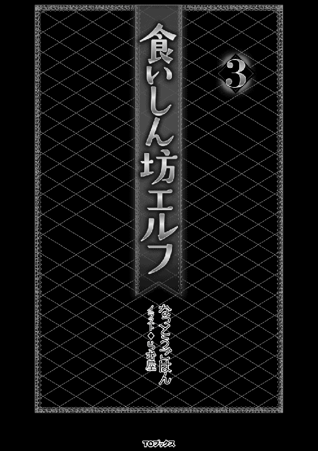

| 食いしん坊エルフ3 | |
| なっとうごはん | |
| (2016) | |
やってきました夏休み！ クラスの皆で海へキャンプに行くことになった白エルフ聖女エルティナ（中身おっさん）は、海水浴を堪能しつつ、鉄板で焼きそばや焼き肉などを作り上げ、次々と飯テロを発動！ 友達を次々と陥落させていく中、ふとエルティナは砂浜で謎の巨大生物・ヤドカリ君と出会い、妙に気の合った１人と１匹は友情を誓う。それはグルメモンスターの運命を左右する、奇跡の出会いだった......。そしてエルティナとヤドカリ君の奇妙な冒険が今始まる！――言葉や種族の壁を越えてグルメを分かち合う。それが食いしん坊エルフの誓い。
イラスト●らむ屋
デザイン●木村デザイン・ラボ

デイモンド爺さんが亡くなってからというもの、俺は一層ヒーラー活動に勤しんでいた。それだけではなく、術式の勉強をしたり魔法技の強化に努めるなど、多忙な毎日を過ごしている。その方が気が紛れていいからだということもあるし、来たるべきガルンドラゴンとの再戦に向けての準備という意味合いもあった。
そうだ、俺は立ち止まることなどできないのだ。この件の他にも、桃先輩という謎の桃から「おまえはこの世界唯一の『桃使い』だ」と言われて、戸惑っている最中なのである。
「ふぅ、やれやれ......聖女になったり、ヒーローになったりと俺も大変だぜぇ」
今日の仕事も終わり、自室にて術式の勉強をしていた俺はため息を吐いた後、筆を休ませることにした。根を詰め過ぎても、頭に入らないことを俺は知っているのだ。
俺は助走を付けてベッドに飛び乗った。その反動で、先にベッドで丸くなっていた野良にゃんこがボヨンと宙に舞う。
「にゃ〜」
と抗議の鳴き声を出して、仰向けになった俺の腹の上で再び丸くなる。床では既に野良わんこがお腹を出して寝ていた。
「もう、だいぶ暑くなってきたもんなぁ」
お腹を見せながら尻尾を振るわんこの姿を見て、俺はそろそろ春が終わることを認識したのだった......。
季節は夏。太陽がハッスルし、セミがミンミンと合唱し、眼鏡少年のフォクベルトが連日、露店街のかき氷屋に出没する季節である。
さて、この世界にも夏休みがある。期間は七月から八月までの一ヶ月間だ。俺はこの夏休みを利用して、クラスの皆と海水浴に行くことになった。
この企画を計画したのは、うちのクラスのもう一つの三人トリオであるロフト・ラック、スラック・コーロン、アカネ・グランドロンの三名である。
リーダー格のロフトは人間の男性で、短い黒髪に白いバンダナがトレードマークだ。瞳の色は茶色。彼はやんちゃで非常に女好きである。それが原因で、アルのおっさん先生に怒られる回数は俺の次に多い。そう、一番は俺なのだ！（自慢）
スラック・コーロンも人間の男性で、坊主頭にゲジゲジ眉毛が特徴。髪の色は黒で瞳も同じく黒。非常に大食らいで太っている。もちろん、彼もスケベである。スラックは体型に見合わない器用な仕事が得意だ。しかも弓の腕が抜群なので、三人組の中では主にサポートを担当しているらしい。
三人組の紅一点、アカネ・グランドロンはネズミの獣人だ。顔は人間寄りで緩くウェーブがかかったボブカットの灰色の髪に茜色の瞳。中性的な顔で出っ歯が特徴的だ。この出っ歯はネズミの獣人の特徴で、彼らのおよそ八割が出っ歯なのだそうだ。そして、彼女の長い尻尾には、赤いリボンがゆらゆらと揺れていた。これはアカネの唯一の女らしい部分なのだそうだ。ロフトが言っていたから信憑性は高いと思われる。
小柄な体からサポート要員と思われがちだが、実は彼女はアタッカーである。ロフトは全体を見渡して、アカネとスラックに指示を出すので、攻撃に専念できないからだそうだ。アカネも何も考えずに突っ込めるから楽でいいと言っていた。
そんな彼女には少し問題点がある。女なのに女が大好きなのだ。しかもロフトやスラックよりもスケベである。
この三人組、スケベしかいないじゃないですかやだー。
「おい、食いしん坊。夏休みに海でキャンプしねぇか!?」
ロフトがその話を持ち込んできたのは、夏休みに入る少し前のことだ。時間帯は放課後。クラスの皆が帰り支度をしていた時に何故か机の上に立ち、わざわざ大声で俺に提案してきたのだ。これは、周りを巻き込もうと考えているのだろう。
キャンプか......デイモンド爺さんが亡くなってからというもの、俺の心にはどんよりとした灰色の雲が纏わり付いたままであった。キャンプで楽しめれば、その灰色の雲にお帰り願えるかもしれない。
「詳しく聞かせてもらおうかな？」
俺が答える前に答えたのはラングステン王国の王子、エドワードであった。
途端に教室が騒めき出した。彼はこの国の第一王位継承者だ。それ故に安全を考慮して、さまざまな催し物にも行動制限が付けられてしまっている。そんな彼が自ら話に乗ってくるのは非常に珍しい。
「ほぅ、そなたが『きゃんぷ』に興味を持つとは珍しいのぅ？」
「そうでございますね咲爛様」
そのエドワードの様子に興味を持ったのは、サクラン・オダとその従者であるカゲトラである。サクランとカゲトラは、ザインと同じく東の島国イズルヒからの留学生で、理由も彼と同じく見聞を広めることだ。
サクラン・オダは人間の女性で、素晴らしく器量が良い。瞳の色は茶色。
美しく艶のある黒髪を腰の辺りまで伸ばしており、前髪は『ぱっつん』と綺麗に切り揃えられていた。その黒髪のあまりの美しさに、上級生のお姉様方がこぞって秘訣を聞きに来るほどだ。顔は少々キツメの方だろうか？ これは、恐らく性格が顔に表れているのだろう。彼女は非常に勝ち気で、我が儘で、さみしがり屋だ。......うん、どう見ても立派なツンデレだな！（確信）
サクランはイズルヒに存在する『オワリコク』という国のお姫様なのだが、武器全般に高い素質を持っている。そのことはサクラン自身も自覚しているらしく、武器の扱いはこのクラスの中でも群を抜いている。ありとあらゆる武器を使いこなしたのはサクランだけだ。そんな彼女にも、やはり問題点があった。武器を持つと人が変わるのだ。
普段は常識を持って御淑やかにしているのだが、武器を持つと途端に『ヒャッハー』へと、変貌を遂げてしまう。もう、普通の連中では歯止めが利かなくなるので、ユウユウ閣下にケツプリ土下座をして、彼女を止めてもらうしか手段がなくなることがよくある。
まぁ、それをするのは、いつもカゲトラなのだが。
カゲトラは虎の獣人で虎寄りの顔の女の子だ。金色の瞳に金と黒の毛並み。そのお尻からは、しましまの尻尾が顔を見せている。
名前だけ聞くと男と間違われるが、彼女は間違いなく女の子である。カゲトラは代々オダ家に仕える家柄で、サクランが留学する際に護衛として付いてきたのだそうだ。彼女を一言で言い表すならば『苦労人』で間違いないだろう。サクランの後始末を、その高い身体能力と、聡明な判断力と、深い知識と技術で片付けまくっているのだ。しかし、そのことにかんしては文句など一言も言わない。
「それが、私に課せられた役目だから何も問題ない」
と男らしく言いきる。性格も男っぽいから、余計に勘違いされるのかもしれない。
よくザインに、相談を持ちかけている光景が見受けられるが、やはり同郷の出というものがあるからなのだろう。
「へぇ、殿下が興味を持つなんて珍しいこともあるもんだな？」
ロフトが、ヒュゥと口笛を吹いて驚きの顔を見せた。
「うん、僕だって皆と思い出を作りたいと思っているよ。それに、お爺様から聞いたんだ。お爺様が僕と同じ歳の頃、クラスの皆とキャンプに行ったことがあるって。それなら僕が行っても問題ないんじゃないかなって」
目を輝かせて、キャンプに思いを馳せるエドワード。確かに彼は一度もキャンプなどした経験はないだろうな。俺はあるぞ......全裸でな！（遠い思い出）
「まぁ、エド様が参加なさるのでしたら、わたくしもご一緒させていただきますわっ！」
そこに銀ドリル様こと、クリューテルが名乗りを上げた。今日も後ろのドリルが眩しいぜ。
彼女の参加がきっかけで、次々と参加者達が増えていった。参加者には普段こういったことに参加しない者達も含まれていたが......これは恐らく、もっとも参加する確率の低いエドワードの存在が大きいだろう。
「うはぁ、結構な人数になったな？ ってかブランナは海、大丈夫だっけ？」
「入らなければ問題ありません。エル様の行く場所なら、どこにでもお供いたしますわ」
全身を覆う甲冑姿のブランナはヴァンパイアだ。海は吸血鬼の弱点である、日光と流水がある危険地帯だ。にもかかわらず俺のために赴くと言っているが、俺としては安全のために彼女には参加を控えてほしいと思っていた。でも、行く気満々のブランナを止めるのも可哀想な気がする自分がいる。......まぁ、なるようになるか。
「あはははっ！ うみっ、うみみっ！ いくいくっ！ あはははっ！」
白い少女、アルアのテンションが物凄く高まっている。そんなに海が好きなのだろうか？
しかし、海か......そういえば、この世界に転生してから一度も海に行ったことがないな。俺の虫食い状態になった記憶をかき集めて、かつての自分が経験した海を思い出してみる。青い空にゴミで溢れる砂浜、その砂浜を埋め尽くす傍若無人な人の群れ、そして激烈に不味い料理を出す海の家。......うん、思い出さなければよかった！（後悔）
「結局、クラス全員参加か！ いいね、いいねぇ！」
「ロフト、俺達の計画は大成功だな！」
「これで女子の水着が見放題さねっ！ ぐひひ！」
アカネさん、欲望丸出しですよ？ 少し自重しましょうね？ とはいっても、結局はこの三人組の目的は、彼女が言った欲望のためなんだろうなぁ（呆れ顔）。
「後は引率してくれる大人だな。やっぱりアルフォンス先生かな？」
「それにかんしては当てがあるよ。人数が人数だから大人は多い方がいいしね」
ロフトの呟きに、エドワードはにっこりと答えた。
ヒーラー協会に帰ってきた俺は、ギルドマスタールームへと向かい、キャンプの許可を貰おうとドアをノックした。
「どうぞ」
ギルドマスターのレイエンさんの優し気な声がする。部屋に入ることを許されたのでドアを開けて入ると、そこにはサブギルドマスターのスラストさんもいた。どうやら二人で話し合いをしていたようだ。丁度いいので、二人にキャンプの件を話すことにする。
「えぇ、連絡がきていますよ。楽しんでくるとよろしいでしょう」
「ふぁっ!? もう連絡がきているのか？ 早い、早過ぎる!!」
今から少し前に計画されたキャンプの話が、もうヒーラー協会に伝わっていた。
「はは......正確にはスラストに連絡がきたのですよ。彼は特別な連絡網を持っていますので。それよりも、かなり大人数でのキャンプだそうですね？」
レイエンさんが紅茶を淹れてテーブルに置いた。香り高い琥珀色の液体が、俺の鼻腔をくすぐる。俺は「いただきます」と言ってから、そっとティーカップに口を付けて紅茶を楽しむ。......美味い。やはり紅茶はストレートに限る。
「うん、クラスメイト全員参加だから四十人かな？」
今考えると、なかなかの大人数だ。しかも全てが子供である。大人とは違い、好奇心に駆られて自分勝手に行動してしまう子もいることだろう。
「そうだとすると、ヒーラーも複数人いた方がいいな」
にやりとスラストさんが笑った。その笑顔を見てレイエンさんも、にっこりと穏やかな笑みを彼に返した。
「こほん、エルティナ様。ビビッドとティファニーを同伴していってください。今彼らはローテーションから外れていますし、ヒーラーとしての腕前も確かです。それに、結婚前の良い思い出になることでしょう」
あぁ、それで笑っていたのか。二人はようやく結婚資金がたまったので、この夏に結婚することが決まっていた。それまではずっと働き詰めであり、二人してどこかへ遊びに行くことはできなかったそうだ。
俺はこの案に諸手を挙げて賛同した。余計なおまけが四十名ほど付いてくるが、二人にとって良い思い出になるように、何かサプライズを用意しておこう。キャンプは五日後だ。それまでに色々と準備を進めておかなくては。買う物も沢山あるしな！
そして、迎えたキャンプ当日。だれ一人として欠けることなく、集合したクラスメイト達。健康で何よりである。
キャンプは二泊三日の予定だ。キャンプ予定地はラングステン王国の、王都フィリミシアからずっと東の位置にある『アクアルネ海岸』という場所である。
まずはアクアルネ海岸から近い場所にある『クリド村』に『テレポーター』で転移してから、徒歩で海岸に向かう予定だ。
尚、バカにならない転移料金は王様が出してくれた。やったぜ！
クリド村に転移した俺達を、その村の村長さん達が出迎えてくれた。どうやら王様が連絡を入れておいてくれたようだ。
「クリド村へようこそ。私は村長のスウェカーです。ささ、こちらの方へお並びください」
俺達は、人の良さそうな顔をしたハゲの村長さんに誘導されて一列に並ぶ。村の人達も数名おり、俺達の出発の準備を手伝ってくれた。皆いい人ばかりだ。
「よぉし、おまえら行くぞ〜！ 忘れ物はないな!?」
引率はもちろん、アルのおっさん先生だ。これも担任の宿命だ、と俺は彼に同情した。だが、彼はただでは転ばなかった。なんと、ミランダさんを連れてきていたのだ！
「育ち盛りの子供達がわんさかいるんだったら、料理を作るヤツが必要になるだろう？」
と彼は言っていたが、間違いなく嫁さんと海でいちゃつくのが目的である。なんという抜け目のなさであろうか？ 元Ｓランク冒険者は伊達ではなかったのだ！（驚愕）
「は〜い、二列に並んで村の人の邪魔にならないようにね〜？」
スティルヴァ先生も今回のキャンプに参加している。人数が人数だし、女子の面倒はアルのおっさん先生では荷が重いと判断したのだろう。
「これは賑やかなキャンプになりそうだね」
「そうね、ビビッド。楽しみだわ」
もちろん、ビビッド兄とティファ姉も参加している。そして、サプライズも準備万端だ。クラスメイトに協力を要請してバッチリ仕込んでおいた。今晩、決行予定である。
少し遅れてエドワードが転移してきた。護衛を引き連れて。
「やぁ、皆......遅れてすまない。お爺様が、なかなか離してくれなくてね」
エドワードは少し疲れた表情で、俺達に遅れた理由を話した。
「それだけ愛されているということですよ、エドワード殿下」
そして彼の護衛を務めるのは、チート転生者であるフウタであった。いや、彼だけではない。遅れて転移してくる者達がいたのだ。
「ふうぅ......暑いですねぇ」
「夏も本番、と言ったところでしょうかね？」
転移してきた汗だくの男は、圧倒的な巨体を誇っていた。天然パーマに分厚い眼鏡。脂ぎった顔には、吹き出物がちらほらと確認できる。そう、このラングステンでは知らぬ者がいないほど有名になった男。勇者タカアキであった。
そして、その巨体に隠れていた女性が姿を見せる。魅惑的な美貌と肉体を持ち合わせ、深い思慮と知性を兼ね備えた、けしからん女司祭、エレノア・キュリデである。今日の朝早くから出かけていたのはこのためだったのか。ご苦労様です。
タカアキとエレノアさんの登場に、クラスメイト達のテンションは、いよいよ以って限界を突破しそうな勢いであった。
まず、タカアキはプリエナやアルア達のように、少し子供......いや、年相応の子にとても人気がある。エレノアさんはもちろん、ロフト達や女性の体に興味を持ち始めた男子達、そして極々一部の女子に人気が高いようだ。
フウタは意外にも人気がない。というか、遠慮がちにされているようだ。考えてみれば、彼はラングステン王国では有名な領主様だ。俺は完全に忘れていたがな。
「フウタは遠慮されているようだ。もっと、フレンドリーに振る舞った方がいいかもな」
「一応、護衛という名目で来ているのですが......」
少し困った顔で答えるフウタ。折角、遊びに来ているんだから偶には息抜きしてもばちは当たるまい、と説得すると......フウタはようやく表情を緩めたのだった。
キャンプの参加者が全員揃ったので、俺達は村長さん達に見送られ、アクアルネ海岸へと出発する。現在の時刻は午前七時半だ。海岸には午前八時くらいに到着する予定である。
「わんわんっ！」
「おいぃ『とんぺー』あまりはしゃぎ過ぎるなよ？」
今回のキャンプには、いつも俺の自室でたむろしている野良ビースト達も同行していた。彼らとは、もう一年以上の付き合いである。俺が嬉しくて興奮している時も、失敗して落ち込んでいる時も、そっと傍に寄り添っていてくれた。もう家族と言ってもいい存在だ。
とんぺーは白い秋田犬のような外見だ。性別はオス。『もんじゃ』はトラ猫のオス。いつも俺のベッドで丸くなっているのはこいつだ。そして、俺の両肩と頭に乗っている青い三羽の鳥達。毎日、朝が来ると鳴いて俺を起こしてくれる、目覚まし時計のようなヤツらだ。右肩に乗っているのが『もっちゅわん』、左肩に乗っているのが『もっちゅつぅ』、そして頭に乗っている小さなヤツが『もっちゅさんぺー』だ。こいつらは必ず三羽で行動する。まるで家族のような三羽である。
彼らの名前は俺が付けた。なかなかにイカしたネーミングだと自画自賛している。
「エル......もう少し、まともな名前を付けてやれなかったのか？」
赤髪の、ひょろっとした背の高い少年、ダナンが呆れた顔で異議を申し立ててきた。
「ダナン......おまえには、この名前の素晴らしさがわからないのか？」
「わかったら、きっと人生が終わると思う」
びきびき！ 俺の頭にはきっと『!?』が浮かんでいることだろう。よろしい、ならば戦争だ。我が軍の戦闘能力の高さを、その身に教えてくれるわっ！
「とんぺー、もんじゃ、もっちゅトリオ！......襲え」
とんぺーがダナンを押し倒し、徹底的に彼の顔をぺろぺろしまくる。もんじゃはダナンの無防備な腹の上で丸くなり、もっちゅトリオは彼の耳元で「チュチュ！」とさえずる。まったくもって見事な連携攻撃であった。
「わかった、わかった！ 俺が悪かったよ！ だから止めさせてくれ〜！」
「よし、敵は降伏したぞ！ 我々の勝利だ！」
俺達は勝利の雄叫びを上げる。まさに完全勝利であった。
「見事です......我が友エルティナ。そして、勇敢なる戦士達よ」
タカアキが俺達を祝福してくれた。やはり、わかる者にはわかるのだ。厳しい訓練を経て、極限の高みへと上り詰めた、とんぺー達の技術の高さを。
「エルー！ 置いてっちまうぞ!?」
そして、余韻に浸っていた俺達の雰囲気をぶち壊す、獅子の獣人であるライオットの声。
んもう！ もう少し、余韻に浸らせておくれよぅ！
「ふふ......友人が呼んでますよ？ 行きましょうか」
「あぁ、行こう......タカアキ」
俺達は大袈裟に手を振るライオットの元に駆けていった。尚、ダナンは置いていった。
「おまっ!? 普通は起こして一緒に行くものだろう!?」
とダナンの声が聞こえた気がしたが、たぶん気のせいだろう。ふきゅん！
およそ三十分の道程を経て、俺達はアクアルネ海岸へと辿り着く。俺が歩くと物凄くペースが落ちてしまったので、途中からとんぺーの背中に乗って海に向かっていた。
「うおぉぉぉっ！ 海だぁぁぁぁぁぁっ！」
男子達が異常な興奮状態になっている。わからなくはない。海には男を駆り立てる何かがあるからだ。夢、野望、ロマン。挙げればキリがないほどだ。
「うおぉぉぉぉぉぉぉぉっ!!」
俺も例外ではなかった。この雄大な光景を見た瞬間、叫ばざるをえなかったのだ。
今......俺達の目の前には、写真でしか見たことのなかった本物の美しい海が広がっている。白い砂浜には人が残したゴミなど一つもなく、流れ着いた木が少し存在しているのみ。その陰から時折、小さなカニさんが恥ずかし気にこちらを窺っていた。
海の色は少し緑がかっている。確かこれは、海に生息しているプランクトンが多いことによって緑色に見える......だったかな？ どちらにしても物凄く綺麗だ。まるで液体の宝石のようである。
太陽に照らされた海は神秘的な輝きを放ち、クラスの女子達を魅了した。
「わんわんっ！」
とんぺーが辛抱堪らん、とばかりに砂浜へと駆けていった。後に続けと複数の男子達がとんぺーを追いかけていく。その姿を見て驚いたのか、小さなカニさんが横歩きで、ちょこちょこ動き逃げ出す。雲の少ない澄んだ青空に飛んでいるカモメ達が、俺達を迎え入れてくれた。「みー」と鳴きながら飛び回っている彼らに、もっちゅトリオが合流して、仲睦まじく空の散歩を楽しんでいる。
この光景を見て、俺が昔......『地球』にいた頃の海を思い出していた。
大勢の人々の残したゴミにより美しかった砂浜は無残な姿へと変わり果て、かつて澄んでいたであろう海は、大量のゴミと汚染された水が流れ込むことによって、汚く濁っていた。
「これが、本物の海の姿か......」
俺はただただ、その海に感動し続けていた。この大自然に比べれば、『聖女』なんてちっぽけな存在だろう。......もう、いらねぇんじゃね？ とも思ってしまう。
「エルティナ様、いかがなされましたか？」
エレノアさんが心配そうに俺の顔を覗いてきた。......女神か。
そう思ってしまうほど、整った顔が俺の目に映ったのだ。彼女の顔なら、何十分でも見つめ続けることができるぜ！（確信）
「ん、海があまりに綺麗だったもので見とれていたんだよ」
俺の返事を聞いたエレノアさんは、にこりと微笑んだ。そして俺の手を握り「行きましょうか」と言ったので「うん、行こう」と返事をして共に砂浜へと歩き出した。
「堪んねぇ、早く泳ごうぜ!!」
アクアルネ海岸に到着した途端、着ていた服を無造作に脱ぎ捨て、水着姿へと変身するライオット。どうやら、服の下に着込んでいたようだ。鍛えられている肉体が露わになる。無駄な贅肉などなく、腹筋が見事に割れていた。少しその筋肉を分けておくれぃ。
「あほぉ、まずはぁ寝床を作ってからだろぉがぁ！」
ドワーフのガンズロックがテントを作る準備をしていた......って、丸太!? まてまて、きみは何を作るつもりなんだ！
俺がガンズロックに問うと......案の定、簡単なコテージを作ると言ってきた。
「大丈夫だぁ、材料はぁ前もって用意しておいたからよぉ！」
「皆で作ればすぐに終わるさ、珍獣様」
そう言って豪快に笑うのはクラーク・アクト。
人間の男性でマリンブルーの髪はツンツンに逆立ち、ぶっとい眉毛はゲジゲジ状態。非常に男前な顔立ちで、体格も良くクラスの中でも身長が高い方だ。
う〜ん、彼は本当に海がよく似合う男だ。「もっと熱くなれよぉ！」とか、普通に言ってきそう。
「そうですね、ここは私達も協力しましょう」
「あぁ、そうしようか」
ここで頼れる大人が協力を申し出てきた。勇者タカアキとチート男爵フウタである。彼らはガンズロックに材料を『フリースペース』から全て出させて、組み立ての設計図を頭に入れた後、猛スピードで組み立て始めた。
まてまて、タカアキ。丸太を抱えたまま空中を走るな。ん？ フウタが三人いるように見えるが......目の錯覚か？
「おまえら......魔法を使えるんだから、魔法で組み立てろよ」
対照的に魔法を駆使して、大量のパーツを一気に組み上げるアルのおっさん。
「アルさんみたいに、多数の魔法を同時起動なんてできませんよ」
チート能力を持っているフウタでも、アルのおっさんのようなことはできないのか。魔法は、まだまだ奥が深そうだ。俺も更なる研究に努めなければ......。
完成したコテージは簡単と言った割には、とても大きくしっかりとしたものであった。これなら五十人くらいは、余裕で寝泊まりできるだろう。
尚、この作業は大人三人が、十五分でやってくれました。早過ぎぃ！
出来上がったコテージに入り中を確かめる。内部は二部屋に分かれており、同じ大きさの部屋が存在していた。男子用の部屋と女子用の部屋だろう。そして、驚いたことにトイレとシャワー室も設置されていた。
「女の子が多いですからね、私が追加で作っておきましたよ」
あの短い時間で、フウタはこんなこともしていたのか。やはりチートだった。
「えるちゃん、えるちゃん！ こっちのおへや、すごいよぉ！」
狸の獣人少女プリエナが、興奮気味で俺の手を引き、女子用と書かれている部屋に連れて行った。その部屋の内部には、見事な装飾が壁一面に彫られていた。
「女の子が寝泊まりする部屋ですからね、私が追加で彫っておきました」
ギラリと分厚い眼鏡を光らせる勇者タカアキ。最早ここまでくると、凄いという前に変態の仕事と言いたくなる。壁には楽し気に動き回る動物達や、美しい花々が生き生きと彫り出されていたのだ。
「ふきゅん！ 流石、タカアキは格が違った！」
「勇者ですから」
その部屋に入ると、壁の装飾にうっとりする女子に交じり、一人の男子生徒が熱心に装飾を見つめていた。彼はゴブリンのゴードンだ。
「凄ぇ......あの短時間で手抜き作業がまったくねぇ。やすりがけも完璧だ」
「ゴードンさん、それほどまでに素晴らしいですの？」
銀ドリル様が熱心に装飾を調べるゴードンに興味を持ったようだ。
「あぁ、ここの滑らかな曲線なんて、なかなか作れるものじゃないぜ」
将来、細工職人を目指しているゴードンは、目の付けどころが違うようだ。彼は女子達が水着に着替えるまで、部屋で装飾を食い入るように見つめ続けていたのだった。
コテージの外に出ると、ガンズロック達が余った材料で簡単な日除けを作っていた。
「こんなもんか、リック」
「あぁ、ばっちりだぜクラーク」
「てぇしたもんだぁ！ 武術だけが取り柄だと思ってたんだがなぁ！」
ガンズロックが言ったとおり、日除けはなかなか立派に作られていた。
「リック、おめぇは、やっぱり大工の素質の方が高ぇよ」
「うはっ、やめてくれよ。ガンズロックに言われるとシャレになんねぇ」
リックは実家が大工家業なのだそうだ。彼の腕がいいのは納得だが、クラークの腕前も大したものだった。
クラークの父親はラングステン王国騎士団に所属する騎士だ。そして、クラークも騎士になるために父親から厳しい訓練を受けているらしい。
「大工か......俺は大工になりたかったなぁ」
クラークの話を聞くに、どうやら彼は物を作るのが好きで、将来は大工になりたかったらしい。しかし、それは許されなかった。
『魔族戦争』によって大勢の騎士達が命を落とした今、国を支えるために多くの子供達が騎士を目指している中にあって「騎士の息子が、騎士を目指さないとは何事か」と父親にきつく言いつけられているのだそうだ。
「ほぅ......こりゃいいなぁ。ここなら一休みするのも楽でいいんだぜ。それにブランナも、ここにいればコテージで独りぼっち、ということはないだろうしな」
「えぇ、これはありがたいですわっ！ ありがとうございます皆様！」
これにはブランナも大喜びであった。日除けは意外と大きく作られており、十五名程度入っても、十分な場所が確保できるほどであった。ここなら位置的にも、大人達が休憩しながら子供達を見守ることも可能だろう。
「ははっ、どうだい珍獣様？」
「あぁ、いい物を作ってくれたなクラーク」
俺に褒められたクラークは顔を赤くして照れていた。本人は暑いから顔が赤くなっただけだと誤魔化していたが......。
「ん......エル、おまえ、まだ着替えていないのか？」
「もう少し、準備してからなって......」
体を解しているライオット。解すというか、砂浜の上で拳法の型を実践していた。
「ライ、それはもう、準備体操の次元を超えている気がするんだが？」
「そうか？」
ライオットは最後に海に向かって礼をし、ようやく準備体操という名の何かを終えた。
「ふぅ、手伝うかエル？」
「そうだな......あ、いや大丈夫みたいだ。ガンちゃん達が猛烈な勢いで、かまどを作り始めたみたいだから。かえって邪魔になるから全部任せちゃうぜ」
物を作っているガンズロックとクラークの顔は輝いていた。そしてリックの顔は......完全に職人の顔になっていた。うわぁ......そんなところまで、手を抜かずに作り込むのか。やっぱり、リックは職人の道を目指した方がいいと思った瞬間であった。
「エルちゃん、そろそろ着替えたら？ 部屋も空いてきたから着替えやすいよ」
水着に着替え終えたリンダが声をかけてきた。リンダの水着はピンク色のスクール水着だ。こんな、マニアックな水着が売っている場所と言えば......あそこしかない。
『エレガントチルドレン』。そこは、さまざまな衣服を扱う、フィリミシアでも屈指の衣料販売店だ。その特徴はなんと言っても、そのマニアックさだ。ありとあらゆる衣装が、そこにあるのだ。想像を絶する珍妙な衣装だって、店主に聞けば「あるよ」と言って手渡してくれる。
チルドレンと銘打ってはいるが、大人用の服もかなりの量を用意している。もちろん、普通の服からマニアックな物まで多種多様である。
「えへへ、どう？ 似合ってるかな？」
リンダは照れながらも、くるりと回ってみせた。
「ほぅ......似合ってるぞリンダ」
俺に褒められたリンダは、はにかみ「ありがとう！」と嬉しそうに返事をした。
やはり、スクール水着は幼女が着たら似合うな。
リンダの言ったとおり、着替え終わった者が、コテージからぞろぞろと砂浜を目指して歩いてきた。結構な人数だ、きっと部屋も空いていることだろう。俺は水着に着替えようと歩き出し......その歩みを止めてしまった。
何故なら......水着に着替えた大人組がこちらに向かって歩いてきたからだ！ 先頭を歩く黒いビキニを着たエレノアさん！
ヴァー！ やっべー！ 理性がぶっ飛びそうだ!! 美の女神か!?
見よ！ あの、はち切れんばかりの形のいい豊かな乳房を！
見よ！ あの、悩ましい曲線を描いた腰の括れを！
見よ！ あの、プリンプリンで、むっちむちな桃のようなお尻を！
「ふおぉぉぉぉぉぉぉぉぉっ!!」
俺は雄叫びを上げざるをえなかった。そう、これはもう本能による行動だったのだ！
「きたこれぇぇぇぇぇぇぇっ!!」
ロフト達スケベトリオも同様のようで、三人揃って雄叫びをあげている。
そして、ミランダさんの破壊力が半端じゃない。彼女は緑色のビキニを身に着けているのだが、その爆乳がこぼれそうになっている。普段、素肌を晒さない人が肌を晒すと、ここまで強力な威力を発揮するとは！ しかも、属性が人妻だ。これはヤヴァイ！
逆に女教師という恵まれた属性を持っているのに、普段があの格好のスティルヴァ先生は、際どい赤いビキニを着ていても、まるで普段着のように見えてしまい、特に興奮はしなかった。いや、エロいことはエロいけど、俺達を奮い立たせるまでには至らなかった。
そして、ティファ姉は素晴らしいほどの癒し的存在と化していた。花柄のワンピースに、ほんのりと膨らんだ双丘が、俺達を落ち着かせてくれる。全てが控えめな彼女は、まさに俺達の心のオアシスであったのだ。
「俺......今まで生きてて、よかったぜ」
ロフトはかなり大袈裟な発言をしたが、仮に俺が男であれば、互いに抱擁して喜びを分かち合っていたことだろう。それほどまでの光景であったのだ。
逆に大人の男達は......うん、ある意味凄い光景だ。引き締まり無駄な贅肉がないアルのおっさん。綺麗な顔に反して、傷だらけの強靭な肉体を持つフウタ。いずれも歴戦の戦士を思わせる見事な肉体である。
だが、それらを吹き飛ばすインパクトを持つ、タカアキのぷよぷよボディ！ この肉体の前では、エレノアさん達の魅力的な肉体ですら霞んで見えるほど、極めて完成された贅肉ボディであったのだ！ 俺達の感動を返してっ！（懇願）
「んん〜......太陽がいっぱいですねぇ」
すいぃぃっと、セクシーポーズを決めるタカアキ。彼の水着は赤いビキニタイプであった。赤い褌に見えなくもない。妙に似合っていて腹が立つ。流石、勇者だ。
ぽへー、とタカアキを眺めていた俺に、ヒュリティアが声をかけてきた。
「......エル、まだ着替えてないの？ ガンズロック達以外は、着替え終わったみたいよ」
うおっ!? まぶしっ!! 俺は彼女のあまりの眩さにクラッときてしまった！
なんと......ヒュリティアは白いワンピースの水着を着ていたのだ！（大興奮）
その白い水着から、スラリと伸びる健康的な褐色の肌を持った手足。まだ咲く前の蕾の状態の体からは、将来間違いなく艶やかな花が咲くことを予感させた。
おぉ......パーフェクトだ！ ヒュリティア君!! きみは実によくわかっておられる!!
「ＹＥＳ！ ＹＥＳ！」
ロフト達もガッツポーズを取り「ＹＥＳ！」を連呼している。その中にダナンも混じっていた。ダナンにも彼女の魅力がわかるようだ。ふふふ、褒めてやろう。
「じゃあ、そろそろ俺も着替えてくるかな？」
ヒュリティアに着替えてくると伝え、俺はコテージへと向かう。その途中でアルアとすれ違った。うん、見事な白い肌だ。......いや、まてまてまて！ 『全裸』じゃねぇか!?
「おいぃ、アルア！ 水着はどうしたっ!?」
「あはは！ みずぎぎぃ......わっすれるたれれっ！ あはははっ!!」
腹を抱えて大爆笑する全裸の白い少女。どうやら水着を忘れたので、全裸で海に向かうつもりのようだ。その潔さは、かつて全裸で旅をしていた俺を彷彿させる。
「流石に全裸はアウトだろう。俺の水着を貸してやるからコテージについてくるんだぁ」
「あはは！ いくいく、こっこてじぃ！ あははは！」
俺は白い肌がまぶちぃ、全裸の幼女の手を握りコテージへと向かう。
危なかった......このまま向かわせていたら、タカアキが出血多量で死亡していたかもしれない。俺は一人の勇者を救ったのだ。これは褒められてもいい功績だろう。
「ふっきゅんきゅんきゅん！ またせたなぁ！」
アルアを引き連れて砂浜に戻った俺は、皆の注目を浴びた。
「エ、エルちゃん......それって......？」
引き攣った顔で俺の水着を指さすリンダ。うむ、気持ちはわからんでもない。
「着物じゃないの!? それを着て海に入るつもりっ？」
リンダのツッコミが入った。しょうがないじゃないか、本来着る予定だった桃色の水着はアルアに貸しているのだから。後はこれしか残っていないのだ。
「ほぉ、海女服か。我が国のことを、良く調べておるようじゃの？」
サクランも同じく海女服であった。対して従者のカゲトラは紺色のスクール水着だ。
「海女服よりも動きやすいからな」
とのことである。虎柄の毛並みに紺色が良く映えている。
「あはは！ うみっうみみ！ る、るる！ いえいえ！ あははは！」
桃色の水着を着たアルアは海を見て大興奮していた。そのまま海に突っ込みそうな勢いだ。きちんと準備体操してから海に入らないと溺れるぞ？
「アルアさん......ぜぇぜぇ、準備体操......してから......入りましょう......」
オレンジ色の水着を着たメルシェ委員長が、準備体操で死にかけていた。うん、準備体操は程々にしておこう。海に入る前に力尽きそうだから。
メルシェ委員長......君の死は無駄にしない。そう思っていると、クラスの男子達が騒ぎ始めた。どうやら珍しいものを見つけたようだ。俺もそういったものは大好きなので騒ぎに加わる。
「うおっ、でかいなぁ！ なんだあれ？」
「あれはシーハウスという魔物だな。大人しいから放っといてもいいぞ〜。でも、間違っても攻撃するなよ、物凄く手強いからな」
アルのおっさんがシーハウス、と教えてくれた魔物は......ぶっちゃけ、でっかいヤドカリだった。背負った大きな白い貝殻には、赤い綺麗な模様が入っている。大きく立派なハサミ、沢山ある足。そしてぴょこんと伸びるつぶらな目。どこをどう見ても、ただの大きなヤドカリであった。俺が乗っても、平気なくらいの......平気？ 大人しい？
その時、俺に電流が走った！ これならいけるぜ！（野望）
「こちらホワイトリーダー！ これより、敵の砦を制圧する！」
「ホワイトワン！ 了解した！ 援護に向かう！」
「ホワイトツー！ 陽動は任せろ！」
俺の意図を理解したダナンとリックがネタに合わせ、リックが援護という名の『抱っこ』を、ダナンが陽動という名の『通せんぼ』をした。律儀に待っていてくれるヤドカリ君。そして、抱き抱えられた俺は貝殻に降ろしてもらい、そのまま上によじよじと登り......遂に貝殻の頂上に到達した。やったどー！
「敵の砦を制圧した！ 我々の勝利だ！」
俺は勝利宣言をした！ 数々の困難を極めたミッションの記憶が蘇ってくる！
「ミッションコンプリート！」
続いてダナンが、作戦成功を宣言する！ 彼もまた感動し涙していた！
「ブラボー！ おぉ......ブラボー!!」
リックが歓喜の声を上げる！ ケガを押しての参戦だったのだ！（逆剥け）
ダナンとリックが抱き合って喜んだ。俺は貝殻の上で腕を組み、満足そうに頷く。律儀に止まってくれていたヤドカリ君は、マイペースに『のっしのっし』と移動し始めた。
「本当に大人しい子ですのねぇ......」
銀ドリル様が、ゆっくりと遠ざかっていく俺とヤドカリ君を見守っていた。
ヤドカリ君との友情を交わした俺は皆の下へと帰還し、いよいよ海に突入することにした。大概の連中は初日、海で遊び倒すことであろう。
だが、俺は違う！ 見よ、この白く輝く海女服を！ これこそ海の戦士の証！ そうだ、俺の初日は海での狩りだ！
「出陣じゃ〜！ 海産物を乱獲して差し上げろっ！」
俺はバタバタと、海に突撃していった！ ユクゾッ！
「とうっ！」
俺は海にダイブした！ ビタン！ と衝撃がもろに顔面に伝わった。冗談抜きに痛い。ぬかった！ この痛みは小学校の時、プールに飛び込んだ時に経験したはずだったのに！ だが、へこたれるにはまだ早い！ 美味しい海産物が、俺を待っているぅぅぅっ！
今度はゆっくりと、静かに海に入ることにした。ヒンヤリとした海水は、夏の日差しで火照った体を優しく冷やしてくれた。そして、思わず出てくる言葉。
「ふぃ〜、いい湯だぁ」
「お風呂じゃないよ？ エルちゃん」
よかった、リンダがちゃんとツッコミを入れてくれた。満足、満足......。
海に来れば必ずやっておくネタなので、ツッコミが入って満足な俺であった。
「よし......早速、調査開始だぁ！」
ちゃぷん、と海に潜る。俺は水の中で目を開けれるタイプだ。
うお！ エライ綺麗だから見通しが良いな！ キョロキョロと辺りを見渡す。海流で被っていた砂が流されたのだろう、姿が丸見えの貝を発見した。結構でかいぞ！
「ふきゅん！ 第一村人発見！」
最初に見つけたのは二枚貝だ。あさりかな？ いや、あれはホッキ貝か!? いずれにしても大物だ。急いで保護しなくては！ だがその前に......。
「ぷはぁん！」
息が続かねぇ！ 俺って肺活量が低過ぎぃ！ これではホッキ貝を獲りに行けるか怪しい。ヤツは結構、深い所にいた。ぐぬぬ......どうやって獲ろうか？
砂浜に戻り、うんうんと考え込む俺。その時、『きゅぴーん！』と俺の頭に電流が走った。
以前、魔法障壁を球状にして展開したことがあったはず。それを展開して酸素を球の中に確保しつつ、海に潜れないだろうか？ 可能であれば、水中内での狩りが飛躍的に効率アップすることであろう。
「れっつ、ちゃれんじ!! おりゃあ！」
俺は魔法障壁を展開した！ だが、現れたのは......板状の半透明な魔法障壁であった。
「あるぅえ〜？ も、もう一度だ！ それっ！」
何度も試したが、俺の前には盾のような魔法障壁が出現するのみであった。
「むむむ......あ！ そうだった！」
あの時は、『桃先輩』と『身魂融合』していたんだった！ 桃先輩の協力がなければ、俺は魔法障壁も満足に操れないのか!? くやしいのう、くやしいのう......。
だが、背に腹はかえられん！ 美味しい海産物を手に入れるためにも、彼の協力を仰がなくては！ おいでませ......桃先輩っ!!
俺の手に光が集まり、未熟な桃『桃先輩』が降臨した。
「久しいな後輩よ。今日は何用だ？」
「ちぃーすっ！ お久しぶりです！ 桃先輩！」
俺は事情を桃先輩に説明するも......案の定、桃先輩は呆れた様子を見せた。
「まったく......動機はしょうもないが、魔法障壁の形を自在に操れるようにする、という発想には感心する。いいだろう、協力してやる。訓練するには絶好の場所だしな」
どうやら、納得してくれたようである。よかった。
「それでは、身魂融合だ」
「応！ 身魂融合!!」
俺は桃先輩を、むしゃむしゃと平らげて融合を果たした。すっぱい〜ん！
もちろん、桃先輩の決め台詞「それが青春の味だ」が入った。
『では、早速練習といくか。大切なのはイメージだ。そうだな......まずは泡のイメージだ』
俺は言われたとおりに泡をイメージする。すると、魔法障壁が球状に展開し......すぐに割れてしまった。上手くいってたのにどうして......？
『こらこら、すぐに割ってどうする？ せめて、三秒は持たせろ』
「泡をイメージしたら割れた。解せぬ......」
そもそも泡って、すぐに割れるものだ。よって、俺は悪くないもん！（開き直り）
『ふむ......まぁ、イメージはできるようだな。では、イメージを変えよう。次は風船だ。泡より割れにくく、泡より大きく作るんだ。では、やってみろ』
まかせろ〜！ そいやっ!!
俺は風船をイメージしつつ、魔法障壁を展開してゆく。ぷく〜と、ゆっくり膨らんでゆく魔法障壁を見て......昔、膨らませ過ぎて破裂した風船の思い出をフラッシュバックさせた。あれが本当にびっくりするんだ。いきなり割れるから。
すると......突然、パァァァァァァァァンッ！ と魔法障壁が爆ぜた。
『何故、おまえの魔法は、すぐに爆ぜるのだ？』
「解せぬ......」
遂に魔法障壁すら、爆ぜるようになってしまった。俺は泣いていい。
その後、三十分にわたって魔法障壁を練習し、なんとか球状にできるようになった。
何度、桃先輩に小言を言われたかわからないが、それでも俺を見捨てずに、根気よく丁寧に指導してくれた桃先輩には、本当に頭が上がらない。
『ふぅ......なんとか、様になったな』
「ふきゅん！ 桃先輩のお陰なんだぜ！」
ようやく球状になった魔法障壁。それを試すべく、俺は海へと向かった。
海の底をゆっくりと慎重に歩く俺は、その神秘的な景色を楽しんでいた。そこいらに生えている海草やサンゴ達がまるで花畑のように見える。海面から差す太陽の光が、一層その光景を引き立てていた。綺麗だぁ......（うっとり）。
『ふむ、美しい光景だ。魔法障壁の耐久度と酸素残量を表示する。頃合いを見て浮上するようにな』
桃先輩が半透明のプレートを、俺の視界の右上に出現させた。プレートには酸素の残量と、魔法障壁の耐久度が数字で表示されている。酸素は十分、魔法障壁の耐性は百の数字であった。そして、そのプレートだが......顔を動かせば一緒に付いてきて、再びちょこんと右上に収まる。素早く顔を動かすと、慌てて付いてくる。なんか可愛いヤツだな。
「よし！ それじゃあ、早速狩りを開始するか！」
俺は海底を注意深く見渡した。すると、先ほど見かけたホッキ貝を再び発見する。やはり、先ほどの出会いは運命だったのだ！ 俺はホッキ貝をゲットすべく、手を伸ばした。
しかし、『ぷみょん』と音がして、俺の手は魔法障壁に弾かれてしまう。
ふきゅん!? これでは、ホッキ貝を手に入れることができないじゃないか！ いったいどうすれば......？ がっでむ。
『イメージ。通す部分に合わせて穴を開ける感じだ。隙間が空くと海水が入ってくるぞ』
桃先輩の指導どおりにやってみる。指先から慎重に魔法障壁に触れ、その部分だけ魔法障壁の形を変えていく。魔法障壁の維持、変形、腕を動かす。同時に三つの作業を熟さなくてはならない。これは結構しんどいぞ......ふきゅん！ 海水が入ってきた!?
それでも、俺は根気よく作業を続け、遂に魔法障壁から腕を出すことに成功する。ひんやりとした海水の感触を肌で感じつつ、念願の海産物をゲットする！ やったぜ！
『後輩、開けた穴を戻すのを忘れているぞ。早く塞ぐんだ』
しまった、塞ぐのを忘れていた！ あ〜、もう海水が足首の部分まで溜まってしまった。酸素残量も耐久力も減っているし......一端、浜に戻った方がいいかな？
そう判断した俺は、浜を目指して歩き始めたのだった。
気を取り直して、再び海産物の捕獲に挑戦する。一個や二個程度では、ライオットに皆殺しにされてしまう。俺が食べるには、最低でも三十個は必要になるだろう。別に貝でなくてもいい。なまこやカニでもいいのだ。できればお魚もゲットしたい。
「走れないのが難点だなぁ」
移動はもっぱら、徒歩による移動のみである。魔法障壁は、俺を包み込むように展開しているので、泳ごうとしても腕は空を切るのみだ。加えて、走ろうとしても魔法障壁が俺の走る速度についてこれず、『ぷみょん』とぶつかってしまう。これでは、お魚ゲットは夢のまた夢であろう。だが、俺に諦めるという文字はない（食べ物限定）。
「いずれは、お魚もゲットしてやるぜぇ」
『そのためには、訓練あるのみだな。近道はないと思え』
予想以上に上達した、俺の魔法障壁に活路を見出した先輩は、今後の訓練プランに魔法障壁を追加すると告げてきた。
『精霊達に「愛され過ぎている」以上、お前は他の方法で強くならねばな。魔法障壁も使いようだ。強固な盾にもなれば、このように移動手段にもなる』
「ん？ 俺は精霊達に嫌われているんじゃないのか？」
俺の問いかけに、桃先輩は答えてくれた。
『そんなことはない。今もおまえの周りには、精霊達が集まり纏わり付いている。そこまで精霊に愛されている桃使いは見たことがない。恐らくは、それが魔法の暴走の原因だろう』
「愛され過ぎていると魔法が暴走するのか？」
『たとえるなら、人気アイドルのコンサートだな。だいたい、こんな感じだ』
俺の脳内に、アイドルグループのライブコンサートの映像が流れた。便利な機能だな。
『その映像の観客に相当するのが、おまえに纏わり付いている精霊達だ』
「つ......つまり、興奮し過ぎて、すぐに暴走しちゃうってことか？」
俺の答えに桃先輩は肯定した。なんてこった......。
「でも、基本七属性以外の属性はきちんと発動するんだが」
『精霊達にも性格がある。仕事を優先する精霊達であれば、きちんと魔法は発動する』
つまり......俺の周りには、仕事を優先しない精霊が集まっていると。......解せぬ。
『よって、後輩に残された道は、暴走する魔法を上手く利用するか、魔法障壁を極めるかのどちらかだな。もちろん、両方を選んでもいい』
「じゃ、両方で」
少しは悩んでから答えろ、と桃先輩に怒られたが、手数は多いに越したことはない。
俺はできるだけ多くの戦う手段と、武器を手に入れなくてはならないのだ。
『まぁいい......後輩よ、お前は考えが柔軟だ。知恵を絞り、さまざまな試行錯誤を繰り返すのだ。それが必ず、お前の力になるはずだ』
「わかったんだぜ！ 暴走する魔法と、魔法障壁の無限の可能性を身に付けてみせるっ！ でもその前に、海産物ゲットからだ！......ヴォー！ あれはサザエか!? 急いで保護しなくては!!」
そんな俺を桃先輩は、生暖かく見守っている気がした。......呆れているともいう。
「あ、おかえり〜、どこで遊んでいたの？ エルティナさん」
赤い毛並みの狼獣人の少女アマンダが、俺に気付いて声をかけてきた。彼女も先ほどまで海で遊んでいたらしく、黄緑色のワンピースの水着から飛び出ている、モフモフの尻尾もぺったんこになっている。
その時、俺は殺気を感じた。いや、これは予知夢とでもいうのかもしれない。俺は素早く魔法障壁を展開した。その直後、アマンダがプルプル攻撃を仕掛けてきたではないか！
ふぅ、危なかった......魔法障壁を展開していなければ即死だった。
「あ、ごめん！ またやっちゃった」
「先読みしていた俺に隙はなかっ......ぬわ〜!?」
油断した！ 別の方角からの奇襲攻撃で、俺はずぶ濡れになってしまった。
「おっと、すまん。わるかったな？」
そう謝罪したのは、銀色の毛並みを持つ狐の獣人、キュウト・ナイリであった。
彼は人間寄りの顔をした獣人で、つり上がった目には青い瞳が収まっている。ピンと立った大きな狐耳と、もっふもふの大きな尻尾が特徴的だ。この大きな尻尾が吸い込んだ海水が、俺に飛んできたのだろう。ふぁっきん。
「その声だと、魔法を使わずに済んだようだな」
「あぁ、まったく......この特異体質を治したいぜ」
現在、彼は女性物の水着を着用している。彼が言っているように特異体質が原因だ。
彼の特異体質......それは『魔力を放出すると女性になる』というものであった。精神が......ではない。肉体が本当に変わってしまうのだ。原因は不明。治療法もなし。最早、お手上げ状態だ。
尚、男に戻るには『気』を練って体に巡らせないといけないのだが、彼は『気』を練るのが下手なので、男に戻るのに非常に時間がかかる。......もう、女の子でいいんじゃね？
キュウトの女の姿は、かなりの人気を誇るのだ。『狐っ娘』だ〜って感じで。
本人は気にしているようなので、口には出さないが......魔法社会で魔法が使えないのは、かなり不便な暮らしになるだろう。それこそ黒エルフ並みには苦労する。
「は〜、ライオットに『気』の練り方を、本格的に教わるしかないかな」
「ライオットの教え方は地獄を見る。お勧めはしない」
ライオットは、「まず体験しろっ......」て言って、いきなり気をぶつけてくるヤツだからな。経験者が言うのだから間違いない（白目痙攣）。
「うげっ、それホントかよ？ あぁ......もう、どうしたらいいんだよ」
がっくりと、うなだれるキュウト。いつもはピンと立っている耳も、しなしなと下を向いている。本気でがっかりしている証拠だ。
「ん〜、後はフウタかタカアキ、アルのおっさん先生辺りに教えてもらうしかないな」
「アルフォンス先生一択じゃないか。勇者様と男爵様にどうやってお願いするんだよ？」
呆れた表情のキュウト。ふきゅん！ わかってないなぁ？ この二人は基本お人好しだから、頼まれると断らないんだぞ？ ただし......最後まで面倒を見る方々なので、途中リタイアはできない。そして、その終了は『気を練る』ことを極めるまでだ。はっきり言って、ライオットの方がまだましというレベルだったりする。
キュウト、おまえ......命拾いしたな？（確信）
「アルのおっさんの気の練り方は独特だから覚えにくいぞ？ がんばれよ」
「そっちも体験済みなのか」
おうとも！ はっきり言って、俺には無理な方法だった。
気の練り方が瞑想だということはわかるが、俺はそれをすると一瞬で寝てしまう。
よって、俺にはアルのおっさんの方法で気を練れない。
目を閉じて心を穏やかにしたら......すぐ寝ちゃうって、それ一番言われてっから!!
「なんにしても、気を練るって一筋縄ではいかないってことだぁ......」
「うぅ......俺は男でいたいんだよ」
諦めが肝心だ。と言ってやりたいが、彼の気持ちは俺にはよくわかる。
俺もかつては男だったからな。そして、キュウトには男に戻る手段があるのだ。たとえ苦手な方法であっても、自分の望む姿に戻れるのであれば、苦労してでも覚えたいと思うのは当然のことだろう。
「ふきゅん。取り敢えずは、アルのおっさん先生に相談してみたらどうだ？」
「そうそう。それに......もしダメでも、キュウト君の女の姿は可愛いから『まったく問題ない』と思うわよ？」
なんていうことを!? アマンダの悪気のない言葉は、キュウトのひび割れたハートを粉々に砕いてしまった！ 哀れ、キュウトは、「きゅお〜ん」と悲し気に鳴いて、砂浜に倒れてしまった。
「ちょっと!? どうしたのよキュウト君！」
「放っておいてくれ......俺はこのまま土にかえる」
キュウトは、『だばー』と涙を流していじけてしまった。それをアマンダが慌てて慰めている。まったくもって難儀なヤツだ。
「お、いたいた！ エル〜！ 昼飯作るから手伝えってよ！」
キュウトとアマンダのやり取りを見守っていると、ライオットが大声で俺を呼んだ。彼の話の内容からして、どうやら、ミランダさんが仕込みを開始するようだ。
「お〜、わかったぁ！ すぐに行く〜！」
俺もライオットに大声で返事をする。返事を受け取った彼は、大はしゃぎで走っていった。きっと、ミランダさんに報告するためだろう。はしゃいでいるのは、昼飯が近いからテンションが上がっているに過ぎない。いつもどおりだな！（確信）
「ほら、キュウト。そろそろ昼ご飯だぞ？ おまえの好きな『厚揚げ』も炭火で炙ってやるから元気出せ。な？」
俺がキュウトにそう話しかけると、彼は大きな狐耳をぴくぴくと動かし、勢いよく飛び起きた。やはり、この年頃の子供は花より団子である。
「やっぱりエルティナは最高だな。俺の嫁にならないか？」
「厚揚げで嫁を決めるな」
ぺちっとキュウトにツッコミを入れる。そして、「はっはっは」と笑い合うのが一連の流れであった。このやり取りは既にクラスに浸透している。
「よしっ、コテージ前の砂浜に行こうぜっ」
俺はキュウトとアマンダと共に、コテージ前の砂浜へと移動を開始したのであった。
コテージ前の砂浜では、ミランダさんが既に仕込みを開始していた。ガンズロック達が作った調理台にて、ザックザックとキャベツを刻んでいる。その度に、豊か過ぎる胸とお尻がぷるんぷるんと揺れて、なんとも悩ましい姿を俺に見せつけた。
こらこら、スケベトリオ。ミランダさんをガン見し過ぎだ。離れろ。
クラスの女子達もミランダさんを手伝って、食材の皮を剥いたり切り分けたりしている。それに比べて男子達ときたら......。
ボールを追いかけて、遊びまくっている男子連中に白い眼を投げかけ、ミランダさんの下に向かう。そして、俺に気が付いたミランダさんは鉄板を指差して言った。
「あぁ、来たんだねぇ、エルティナ。材料は切っておいたから焼き始めてちょうだい」
「わかったんだぜ！ 任せてくれっ！」
俺は材料を持って......おもっ!? 材料が多い。これは協力が必要だ。
「フォク〜、材料を運ぶの手伝ってくれ」
「えぇ、いいですよ」
俺は近くで調理の様子を眺めていた、眼鏡少年のフォクベルトに協力を要請した。
切り分けられた食材は大きなザルに入れられている。彼はそれを難なく全部持ち上げてしまった。細い体のどこにそのような力があるのか？ 意外と力持ちだったフォクベルトに感心してしまう。
鉄板の傍に設置してあるテーブルに食材を置いてもらい、早速調理に取り掛かることにする。海に来て作る物......それはもちろん、芳ばしい香りの『ソース焼きそば』だ！
ガンズロック達が設置した、大きい鉄板は合計六台。俺が選んだ一番左端の鉄板は、既に火で温められており、いつでも焼く準備ができていた。
「うんうん。いい感じに温まっているな」
俺は十分に鉄板が熱せられていることを確認すると、ブッチョラビの脂身を丁寧に鉄板に塗っていく。次は野菜だ。
キャベツは食べ易い大きさにカットしてもら......おいぃ!? このキャベツを切ったのは誰だぁ!! 大き過ぎるだろうがっ！ しかもこのキャベツ、手で千切ってあるだけだし！ 手を抜き過ぎだ！ 料理は仕込みで決まるんだぞ!?（ビキビキ）
ええい、もう知らんっ！ 食ったら同じだっ！ 投入っ!!
鉄板に載せた不揃いのキャベツ達は、『ジュオォォォ』と音を立てた。俺はこの食材を火にかける瞬間の音が大好きなのである。だが、このままうっとりと音を聞いているわけにはいかないので、次の工程に入る。
続いて人参と玉ねぎ......そして、ピーマンも入れたかったのだが、ピーマンは嫌いなヤツが多いので、泣く泣く割愛せざるをえなかった。ピーマンに謝れっ！
鉄板の空いているスペースで、ブッチョラビのお肉を焼き始める。さまざまな部位を使い、皆に食感の違いを楽しんでもらうという趣向だ。
脂がジューシーなバラ、バランスの良いロースに、歯応えのある肩ロース、肉質が柔らかいヒレにモモ、少し硬く、お値段が一番安いウデ肉も当然入れる（こだわり）。
他には軟骨の部分だ。耳軟骨やのど軟骨は薄くスライスし、塩コショウで軽く味付けをする。この軟骨の部分は、お酒のおつまみとして大活躍するのだ。主に大人達やガンズロックが泣いて喜ぶであろう。やはり、お勧めはビールだな。
海にはビール！ でも、飲んだら海に入るなよ!? 俺との約束だ！（ダメ、絶対）
肉がいい感じに焼けてきたら、蒸し麺を焼き始める。暫く麺を焼いたら、先に焼いていた野菜と肉を合流させ、ウスターソースを振りかけるのだが、この瞬間が焼きそばにおいてもっとも興奮するシーンだということは、子供でも理解していると思われる。
ウスターソースを『がしっ』と手に取ると、いつの間にか集まってきていたクラスメイト達の顔に緊張が走った。
「全員！ 気を付けぇいあぁぁぁっ！ これより、鉄板にウスターソースを投入するっ！」
がたっ！ ざわ......ざわ......と緊張が最高潮に達しようとしていた。
俺は鉄板にウスターソースを投入する。『ジュオォォォォォッ！』と最高にいい音がし、続けて鉄板で焦げたウスターソースの、なんとも言えない芳ばしい香りが漂い始める。
その魅惑の香りを鼻で堪能したクラスメイト達から、歓喜の声が漏れた。
やはり、この瞬間は最高だ。俺は手早く食材を混ぜ合わせる。だが、これで完成と思うなかれ。これに加える肝心な物がまだあるのだ。
俺は『フリースペース』から秘蔵の逸品を取り出す。じゃじゃん！ 手作り辛子マヨネーズ〜。出来上がった焼きそばの上に、ビームのごとくかけて完成！
「おいぃ、第一弾ができたぞ〜！」
俺がそう言うと、クラスメイト達が一斉に、出来立ての焼きそばに群がってきた。
海で沢山遊んで、お腹が減っていたのだろう。
「くあ〜！ うんめぇ！」
ライオットがガツガツと、物凄いスピードで焼きそばを腹に収めていく。
「もっと、ゆっくり食べろ。ほれっ」
俺は空いているスペースで目玉焼きも作っていたのだ。それを焼きそばの上に載せてやる。半熟の黄身にしてあるから、焼きそばの上で崩してもいいし、そのまま食べるのもいい。俺のお勧めは黄身を崩して、焼きそばをまろやかな味にすることだ。
だいたい焼きそばが半分まで減ってから崩すと、焼きそばを二度楽しめてお得だ。
「こりゃ、すぐに焼きそばを作り直さないと足りないな」
大量にあった焼きそばは、瞬く間にクラスメイト達のお腹に収まっていったのだった。当然、俺の食べる分も綺麗に消滅している。がっでむ。
と......ここで別の鉄板でも焼きそばを作る音が聞こえてきた。ならば、ここで焼きそばを作らなくてもよさそうである。よし、次は俺が獲ってきた海産物を焼くことにしよう。
俺は魔法障壁を使って海底でゲットした海産物を、鉄板の上で焼き始めた。
ホタテにあさり、サザエはそのまま鉄板に載せて焼く。ホッキ貝は熱湯に入れてボイルしてから食べると甘みが増す。
俺の『フリースペース』には、大量の醤油が保管されているので、『お造り』も作ってしまおう。ワサビがあると最高なのだが、ワサビはイズルヒでしか採れなく、そのため非常にお値段が高い。そういうわけで高級品なのである。残念。
おっと、ホタテの口が開いたぞ！ すかさずバターをホタテに投入して、溶けてきたら醤油だ。溶けたバターと醤油が合わさり、脳をとろけさせる香りが漂い始めた。
はあぁぁぁん！ バター醤油は最高の匂いだぁ......（確信）。
次々と口を開けていく貝達。あさりはそのままでいい、海の塩味が効いているからだ。貝に残った汁も、ずずずっ、と飲み干すことを忘れないように。
続けてホッキ貝も茹で上がったようだ。何も付けなくても身が甘くて美味しい。もちろん好みでバター醤油焼きにしてもいい。
そういえば、貝類はバターが良く合う物が多い気がするな。
「あ、そうだ。エル、さっき海で魚を捕まえたんだよ。調理してくれないか？」
「ほぅ......やるな、ライ......って、どうやって捕まえたんだ？ そのお魚」
ライオットが『フリースペース』から取り出したのは、ぴちぴちと元気よく跳ねるカツオのような魚であった。『フリースペース』に、生きたまま突っ込んでいたのか？
「ちょっと押さえててくれ。いや違う、俺じゃない。お魚の方だ」
ライオットの天然ボケを指摘し、彼にカツオっぽいヤツ......もうカツオでいいや、を押さえてもらう。その隙に俺は血抜きを施し、魚の生臭さを取り除く。
血抜きが終わったら、早速捌いていく。カツオは結構大きいので捌くのに苦労した。
まずは三枚に下ろしてお造りだ。付けるタレは普通に醤油と、マヨネーズを醤油で溶いた物。このマヨネーズを醤油で溶いた物は、カツオの生臭さを包み込んで軽減してくれるのでお勧めだ。
残りは軽く炙ってから氷水で一気に冷やし、一口大に切り塩で食べてもらう。いわゆる『カツオのたたき』だ。本来は藁で焼くのが正しい調理法なのだが、藁がないので、そのまま直火で炙った。よって、これは『かつおのたたきモドキ』だ。
おっと、キュウトに食べさせる厚揚げも焼いておかなくては。
俺は『フリースペース』から七輪を取り出し炭をおこす。炭がいい具合になったところで、厚揚げを鉄網の上に載せ、じりじりと厚揚げを炙りだした。その厚揚げは、時を見計らってひっくり返す。それっ！ コロン。
「ふきゅん！ いいぞぉこれ！」
暫く経つと、ほんのりと焦げが付いた美味しそうな厚揚げが焼きあがった。
ぶっちゃけ、自分で食べてしまいたい（本音）。
後は刻みネギとすりおろした生姜をトッピングし、醤油が入った小瓶を添えれば完成だ。......これで清酒をやっつけたい（ごくり）。
「おいぃ、キュウト！ 厚揚げができたぞぉ！」
俺の声に反応したキュウトが、物凄いスピードで走ってきた。必死過ぎる。
「うおぉぉぉ！ 美味そう！ いただきますっ！」
俺から厚揚げを受け取ると、彼はこの世にこれ以上の美味しい物はない、といった表情でムシャムシャと食べ進めていった。幸せそうで何よりである。
周りを見渡せば、残っていた鉄板でも調理を開始していた。
一部の鉄板から火柱が上がっているが、見なかったことにしておこう。
「豪華な昼食だぁ......ん？ あれは？」
少し離れた場所で、先ほど遊びに付き合ってもらったヤドカリ君が、じ〜っと俺を見つめていた。もしかしたら、俺達が作っている昼食が食べたいのだろうか？
よろしい、ならばヤドカリ君に昼食を奢ってやろう！
実戦練習中に大量ゲットしておいた、俺の体の半分ほどもある巨大な葉っぱを、『フリースペース』から取り出し、調理した海産物を適当に載せた。......載せ過ぎた。重い。
「何やってるんだよ？ ほら、こうやって『ライトグラビティ』で軽くすればいいだろ」
そう言ってキュウトが『ライトグラビティ』を発動させて、海産物が載った大きな葉っぱを軽量化させた。
『ライトグラビティ』は『ゼログラビティ』とは違い重さが残る。つまり重力が完全に無くならないのだ。だが、これにはメリットも存在する。やはり、多少重さがあった方が物を運ぶのにも安定するし、何より秒単位での魔力消費量が低い点も優れているのだ。
きっと、キュウトは厚揚げを作ってくれた俺に対するお礼のつもりだったのだろう。
だが、彼の好意は彼にとっての不幸を招いた。『ぼん』と煙が立ち上り、煙が晴れた後に可愛らしい狐獣人の少女が姿を現した。
そう、彼の特異体質が魔法によって発現してしまったのだ。
「きゅおんっ!? し、しまったぁ!!」
可愛らしい声で悲鳴を上げたキュウトちゃん。その声に敏感に反応し、駆け着けるスケベトリオ。ロフト達はいちいち行動が早いな。訓練され過ぎているだろう。
「狐っ娘きた！ もふもふきたっ！ これで萌える!!」
「これは素晴らしい。見事な『狐っ娘』ですね。ハァハァ」
「きゅおんっ!? ち、近寄るなぁぁぁぁっ！」
ちゃっかりタカアキも混ざっていた。そういえば、狐獣人はカーンテヒルでは珍しい種族だったな。つまり、キュウトは貴重な存在だったのだ。
「サンキューな？ キュウト」
そんな貴重な種族を華麗に見捨て、俺はヤドカリ君に調理した海産物を進呈した。
ヤドカリ君はきょとんとした様子であったが......やがて、それが自分に出された食べ物だと理解すると、美味しそうに食べ始めた。
「全部食べていいんだぞぉ」
俺は美味しそうに食べているヤドカリ君を、ニコニコしながら見守る。やがて、料理をたいらげたヤドカリ君は満足し去っていくのだが、その途中に振り返って何度もハサミを振ってくれたので、俺も手を振って見送ったのだった。
「さて、俺も昼食を食べるとするか......」
鉄板まで戻ってきた俺を待っていたのは、とてつもなく非情な現実であった。
「おいぃ......俺の昼食が行方不明なんですがねぇ？」
そう、あれほどあった昼食達が物の見事に消滅していたのである。
「おや、エルティナはまだ食べてなかったのかい？」
ミランダさんが七輪で焼きおにぎりを作っていた。俺は彼女に事情を話し、その焼きおにぎりを頂戴することになったのだ。
「あはは、あのシーハウスにご飯を上げていたら、食べそこなってしまったなんてねぇ」
「ふきゅん！ 皆、食べ過ぎなんだぜ！」
「皆様方、本当に物凄い食べっぷりでしたわ」
日除けにて、焼きおにぎりと、余った海産物で作った味噌汁を食べる。豪華になるはずの昼食が、素朴ながらも豊かな味わいの料理へと変貌を遂げてしまっていた。
ブランナは冷たい牛乳が昼食だ。日光が強力過ぎて食欲がないらしい。それでも日除けにいるのは、皆と共に同じ時間を過ごしたいからだそうだ。鳴けるぜ、ふきゅん！
「エルティナは自分を、後回しにし過ぎなんだよ」
「そうそう、貴女はもっと、自分を中心に据えないとね〜」
ビールをぐびぐびとやっつけながら、ニヤニヤと俺を見て笑っているアルのおっさん先生と、スティルヴァ先生。先ほど俺が焼いた軟骨をポリポリとかじりつつ、いい感じに出来上がっている。この、のんべぇ共め......。
「そぉだなぁ......エルは、もうちったぁ自分を優先にぃするべきだぁな」
ガンズロックもグイグイとビールをやっつけているが、まったく酔っている様子はない。これが種族の差というものか。というか、絶対に七歳に見えない貫禄があるんですが？
「それが、聖女様の短所であり、長所でもありますからね......簡単には直らないでしょう」
フウタはチーズをつまみにして、赤ワインを飲んでいた。一人だけ世界が違う。
「エルティナ様らしい出来事ですね」
「本当に」
ビビッド兄とティファ姉も、俺を見てにこやかに笑っている。
そのようなことを言っていた二人であったが、実はこの二人も昼食を食べ損なっており、俺と共に焼きおにぎりセットを食べていた。
原因は我がクラスメイト達のへたっぴな調理のせいである。六台あった鉄板の内、まともに調理できていたのは俺とミランダさん、そしてヒュリティアとリンダのコンビの場所だけであった。
その後、ビビッド兄とティファ姉が調理に加わり、最後にフウタが調理に入った。
そう、あの火柱はフウタがフランベしたものだったのだ。きちんと見ていればフウタの手の込んだ料理が食べれていたのに......チート料理を食べたかったなぁ。
俺は気を取り直し、もりもりと焼きおにぎりセットをたいらげ、再び海に向かうことにした。夕食の海産物をゲットしつつ魔法障壁を練習するために。
「ごちそうさまでしたっ！ 海に行ってくるんだぜっ！」
「いってらっしゃいませ。気を付けて行ってくださいね」
エレノアさん達に見送られ、俺はバタバタと海に駆けて行ったのだった。
『後輩、調整が雑だぞ。もっと繊細に、かつ素早くおこなうのだ』
「む、難しいんだぜ......おっとっと」
現在、俺は再び魔法障壁を張って、海底での訓練に邁進していた。
桃先輩の指導の下、自由自在に魔法障壁を変形させるために、海産物を捕獲しているのだ。だが、俺一人では上手にとはいかず、ドバドバと海水が入り込んできてしまう。その度に、半透明のプレート君に『へたくそ』と表示され、非常に悔しい思いをする。
桃先輩に手伝ってもらうと、一切海水が入ってこないのだが、自分の努力でどうにかできる魔法は自分の力で使いこなせるようになりたい。そんな想いがあってか、訓練にも熱が入る。そんな俺の姿を見てか、半透明のプレート君も時折『がんばれ』と表示して応援してくる。地味に嬉しい。
『うむ、その調子だ。焦るのと急ぐとでは違う......落ち着きながら手早くな』
「お、応！......ぬわぁぁぁぁっ!? 大量に海水がっ!!」
だが、大雑把な俺はこういう緻密な作業は苦手なのだ。油断した途端に、ドバドバと海水が障壁の中に入ってきた。プレート君も『どじ』と表示している。
『まだまだ......だな』
魔法障壁内でバタバタと慌てている俺を見かねて、桃先輩が海水を魔法障壁内から排水してくれる。その結果、魔法障壁は小さく萎んでしまった。俺が慌てて手足をバタバタさせたせいで酸素を大量消費してしまい、残り時間もかなり減少してしまっている。
『一旦、戻るとしよう。残りの酸素量は、まだあるが油断は禁物だ』
「あい、あい、さ〜！」
俺は桃先輩の指示に従い、海底を軽く蹴り浮かび上がる。海中をふわふわと浮いていくさまは正にシャボン玉だ。
海面に出た俺は魔法障壁を解除し、再び球状の魔法障壁を展開する。俺はこれを、『シャボン玉』と名付けた。難しい名前はいらないよな？
『シャボン玉』の展開が終わったら、重力属性日常魔法『グラビティ』を発動し、海底に向かう。これは『ゼログラビティ』の逆の効果だと思えばいい。
この魔法は対象の重力を強化する魔法だ。と言っても、対象をぺしゃんこにできるほど強化はできない。攻撃魔法だと思っていたが、攻撃用は別にあるらしい。
主な使用方法は自身を対象に発動させ、負荷をかけてのトレーニングだそうだ。
ジェームス爺さんが、よくその方法でトレーニングしていると言っていた。後は悪戯に使う程度しか思いつかない。
この間、体重計に乗っていたエミール姉に、『グラビティ』を付加したら物凄く怒られた。ちょっとした悪戯じゃないか......ふきゅん！
俺はゆっくりと慎重に海底に沈んでいった。一度『グラビティ』を思いっきり魔力を込めて発動したら、『シャボン玉』を突き破って俺だけが海底に沈んでいったからだ。
あぁ......死ぬかと思ったよ。浅い場所でよかった（遠い目）。
『慎重にな。海底の突起物には十分注意するんだ』
「わかったんだぜ」
現在、俺が向かってる場所は非常に深く、素潜りでの到達が難しい。水圧もかなり強いみたいだ。『シャボン玉』が割れてしまわないだろうか？ ドキドキ。
『心配か？ 問題ない。この程度では割れないように調整してある』
「流石、桃先輩っ！ マジパネェッス!!」
ふわりふわりと海底に着地。この時、なるべく平らな面でなくてはならない。トゲトゲの場所は『シャボン玉』が割れてしまうからだ。
「おおぅ......凄いな。こんな景色滅多に見れるものじゃないぞ」
かなり深いその場所は、本来であれば明かりを点けなければ、真っ暗で殆ど何も見えないのだが、俺には種族特性である『暗視能力』がある。
なので暗い場所でも、まるで昼間のように物が確認できるのだ。超便利！
「ふおぉぉぉ！ 美味しそうな海産物がいっぱいだぁ！」
そこは海の生物の楽園だった。深いということもあり、人の手が届いていないので、数多くの生き物達が俺の前に姿を現したのだ。浅い場所にもいたホッキ貝やアワビ達貝類に加え、カニやウニ、ナマコなどの新顔もいた。ただ、カニやウニはトゲトゲがあり、かなり危険だ。難易度はかなり高いだろう。でも欲ちぃ！ 食べたい！
『では、訓練開始だ。今回はそこのエビを狙う、慎重に捕獲するんだ』
桃先輩が指定した獲物は大きなエビであった。というか伊勢エビじゃねぇか!? あれを捕まえろと？ 下手をしたら『シャボン玉』が割れちゃう！ 怖い！
「き、危険度が半端ないんだぜ......」
『割らなければいい、教えたとおりにやればできる。自分を信じろ』
俺は教えられたとおり、慎重にエビの後ろから近付く。エビはまだ気付いてはいないようだ。そろり、そろり、と近付き......後一歩というところで逃げられてしまった。
「あぁん！ もう少しだったのに!!」
想像以上に早い速度で逃げていった、大きな伊勢エビを名残惜しく見送る。今の俺では到底追いつける速度ではない。ちょっと、早過ぎんよ〜〜〜〜！
『残念だったな。後輩では追い付けんか』
「ふきゅん......なんとしても、ここの豪華な海産物をゲットしたいんだぜ」
その時、闘志に燃える俺に魔の手が忍び寄っていた！ 海の暗殺者『ウニ』である。
俺はヤツの殺気に気が付いた！ そして間一髪、ウニの熾烈な攻撃を華麗に回避することに成功したのであった！ 少しでも反応が遅れていたら......危なかったぜ！
「こいつ......俺をやる気かっ!? やらせはせん、やらせはせんぞぉぉぉぉっ!!」
『いや、ただ単に移動しているだけだろう』
桃先輩が何か言っているが、完全に戦闘モードに入った俺には聞こえなかった。
俺は油断なく身構え、ウニの攻撃に備える。少しの油断が命取りだ。
「こいつ......できる！ 動きにまったく無駄がない!!」
『逆におまえは、無駄だらけだがな』
なんという滑らかな動きであろうか!? このウニは間違いなく、この近隣の『主』に違いない！ 確信に至った俺は、ますます闘志が湧いてきた。絶対に仕留める！
だが、ヤツは慎重であった。なかなか攻撃を仕掛けてこない。うにうにと、俺に向かってゆっくり移動しているだけであった。俺に対して、なんという度胸なのだろうか？
くっ！ このウニ......駆け引きに長じているとでもいうのか！ 恐ろしいヤツだ！ こうなったら、揺さ振りをかけてヤツの動揺を生じさせるしかない！
「来いよ！ 針なんて捨ててかかってこい！ それとも俺が怖いのか!?」（にやり）
『ウニに人の言葉が通じるはずがなかろう』
「ちぃ！ 揺さ振りにも動じないか！ かつてない強敵だ、ガルンドラゴンレベルか!?」
『ガルンドラゴンに謝れ』
ええい！ さっきから桃先輩のツッコミがうるさい！ 気が散って......ぷすっ。
「あ......」
『あ......』
「ぶえっへぇ！ し......死ぬかと思ったんだぜ」
危うく、ウニに殺害されるところだった。ウニ怖ぇ〜！
桃先輩が咄嗟に『シャボン玉』を、内側に小さく展開してくれなければ、死んでいたところだ。身の危険を感じた俺は、慌てて海面へと避難したのであった。これは戦略的撤退であって、怖くて逃げたわけではない。俺は真実を伝えたかった（確信）。
「桃先輩が助けてくれなければ即死だった......」
『当分は、浅い場所での訓練だな......』
結局、浅い場所で基礎訓練を行うことになった。うん、基礎は大事だよな？ な？
「あ〜！ エルちゃん、何それ？」
俺が『シャボン玉』の訓練をしていると、リンダが目聡く気付き声をかけてきた。恐らく、面白い物で遊んでいると勘違いしたのであろう。見ようによっては間違いではないが。
「これは魔法障壁を応用した物で、『シャボン玉』と呼んでる。海に潜るために調整した魔法障壁だ。残念ながら空は飛べないがな」
リンダは興味深そうに『シャボン玉』を指で突っついている。
「あ〜なるほど。これで沢山の貝を獲ってきたのね？」
仕組みを理解したリンダは納得した様子であった。なので俺はリンダに『シャボン玉』を使ってみないか、と提案するが自分には無理だと言いきった。
「こんな器用なことをできるのは、エルちゃんくらいなものだよ。普通の魔法は不器用なのに、特殊な魔法は物凄く器用なんだから......不思議だよねぇ？」
ふむ......俺はそういう目で見られていたのか。確かに、基本七属性の魔法は見るも無残な結果に終わるが、特殊魔法は普通以上に使える。桃先輩が教えてくれたように、俺は精霊に愛され過ぎている、というのが基本七属性の魔法失敗の理由だ。
言い換えれば、それ以外の属性はコントロール可能だということでもある。
現在、もっとも得意な属性は、もちろん治癒属性である。俺は生涯、この属性に向き合う覚悟を持っている。誰に言われたわけでもない。俺が自身で決めたことだ。
俺は沢山のことを治癒魔法から教わった。治癒魔法自体は何も語らない。だが、その存在が、俺に沢山の命を救えと手を引き......導くのだ。救うべき命へと。
その時、俺は悟ったのだ。俺は命を救う力があり、それを為すことが俺の使命だと。
それは俺が聖女だからではない。俺が......『ヒーラー』だからだ。
では......今行っている訓練は何のためか？ 結論を言おう......『敵討ち』のためだ。
自分でも矛盾しているとわかっている。命を救う『ヒーラー』が命を奪おうとして、力を身に付けているのだ。できるなら、このようなことはしたくはない。
だが！ この世には許されざる者が、少なからず存在しているのだ！ 俺は決して許さない！ 初代のささやかな幸せを奪った略奪者を！ 未来を踏みにじった外道を！
たとえ......初代がそれを望まなくとも、俺は......俺はっ!!
「エルちゃん？ どうしたの、怖い顔をして......」
リンダの声で我に返る。いけない、友達に見せるような顔じゃなかった。
「な、なんでもないんだぜ！ 思うように海産物を獲れなくてムラムラしたんだ」
「それを言うならモヤモヤじゃやないのかな？」
リンダが勘違いしてよかった。ガンズロックやフォクベルトなら、簡単に看破されていただろう。あの夫婦はそういうことには勘が鋭いからな。
いや、いずれはきちんと話すべきだな。彼らに隠し事はしたくない。
はぁ......でも、今は遊びに来ているんだったな！ 暗い考えはポイ〜だ！
『うむ、そうだ。ネガティブな考えは「陰の気」に引き込まれる。おまえは「陽の子」だ。常に希望を胸に抱き、周りにその希望を分け与えるのだ』
桃先輩が難しい言葉を言っているが、俺は難しいと理解できず、心太のごとく頭から押し出される傾向がある。よって、桃先輩の言葉は『にゅるん』と俺の頭から押し出された。
まぁ、それはさておき......海産物も十分に確保できたので、これ以上獲る必要もない。せっかく『シャボン玉』も上達してきたことだし、訓練中に発見した絶景ポイントにでも行ってみようかと思う。
もちろん、そのような所に一人で行っても意味はない。感動を分かち合う友人がいなければ、自己満足の世界でしかないのだ。魂会話で桃先輩に『シャボン玉』に他人を入れることが可能か訊ねてみた。
『なぁ、桃先輩。「シャボン玉」に、俺以外の人を入れられるかな？』
『可能だ。おまえが努力すればな......サポートはしてやる』
俺の考えを理解した桃先輩は、サポート役を買って出てくれた。だったら行けるぜ！
「リンダっ、かも〜ん！」
「どうしたの、エルちゃん？」
俺はリンダを抱きかかえ......あ〜うん、抱き付いてるようにしか見えないんだが......こまけ〜こた〜い〜んだよっ！ これが条件なんだから！
俺はそのまま『シャボン玉』を展開する。すると思惑どおり、俺とリンダを包み込むように『シャボン玉』ができ上がった。よかった、上手にできた。
「しゅっぱつ〜」
「えっ？ ええ〜!?」
俺はリンダに抱き付いたまま潜水を開始した。こうすることにより、魔法障壁内に他者を入れることが可能になるのだ。条件は他者と接触していること。でなければ魔法障壁は他者を異物と認識し、攻撃を開始してしまう。他にも方法はあるが、これが一番簡単な方法なのだ。尚、魔法障壁のみの条件なので勘違いしないように！
「わぁ......息ができる！ 凄いよ、エルちゃん！」
リンダは大はしゃぎだ。あんまり騒ぎ過ぎて『シャボン玉』を割らないでくれよ？ 俺は暫しの間、海底をリンダと共に散歩した。
「綺麗だね〜？ 学校の花壇のお花達も綺麗だと思ったけど......ここは格別だよ」
「ふきゅん、学校の花壇の美しさとは別物だからな」
学校にある花壇は、先輩達が心を込めて大切に育てている花々だ。言い換えるならば、愛情を一身に受けて優雅に咲き誇る貴婦人と言ったところだろう。
だが、ここに存在する景色はそのような愛情など一切ない。気を抜けば一瞬で命を落とす過酷な戦場......それがここだ。生存競争に情けなどない。だが、それ故に光り輝くものがある。言い換えるならここで生きる者達は皆、生まれながらの戦士であろう。誰に言われたわけでもない。生きるために戦い、努力し、足掻く。精一杯、生きようとする命達が作り上げた世界が......ここなのだ。
ここには、厳しい美しさがあった。儚くも力強い、美しさが。
「これが、自然の命達が作った光景だぁ」
「へ〜......そうなんだぁ。うふふっ、エルちゃんってロマンチストなんだね？」
七歳児らしい感想だ。リンダがこの景色を真に理解するには、今暫くの時間が必要になるだろう。でも、今このタイミングで見せたことが無駄になるかと言えば、そうでもない。幼い頃に見た素晴らしい光景は、間違いなく記憶に残るものだ。いつの日か、この景色が掛け替えのない光景だったことを理解し、昔を懐かしむ日が来るだろう。
そう、これが『思い出』だ。
「到着なんだぜ」
「わぁ......凄い、凄いよっ！ エルちゃん!!」
俺達は目的地に到着した。そこは、珊瑚が群生している場所だ。色取り取りの珊瑚が、海面から差す太陽の光で幻想的に輝いていた。さながら海の宝石と言ったところか。
というか本当に宝石のようなサンゴなのだ。その透き通った体は透明度が高く、奥のサンゴや魚が透けて見える。色もさまざまで赤、黄、青、緑、紫色といった具合に豊富な種類が揃っており、その透き通った体の効果で更なる複雑な色へと変化しているのだ。
見る角度によって顔を変える様は、まるで万華鏡のようでもある。
『シャボン玉』内でなければ、じっくり見れない光景だっただろう。ここのサンゴ達は訓練中に偶然見つけたのを記憶しておいたのだ。
「素敵ねえ！ 海のお花畑みたいっ！ あっ！ あの子は、エルちゃんがご飯をあげていたシーハウスじゃないかな？」
リンダが指さす方には、サンゴをムシャムシャと食べているヤドカリ君の姿があった。
「あ〜!? サンゴを食べちゃってるよ〜！」
リンダが悲しげな表情になる。俺はヤドカリ君の行動をよく観察した。すると、ヤドカリ君がサンゴを食べている理由が判明した。
「リンダ、ヤドカリ君は折れたサンゴの枝を食べて、綺麗にお掃除しているんだ」
「えっ？ そうなんだ」
その証拠に、サンゴ達は綺麗になった周りを見て嬉しそうである。そのことをリンダに伝えると、「私じゃ、わからないかな？」と言って困った顔をしてしまった。
「あ、エルちゃん！ シー......ヤドカリ君が手を振っているよ！」
「......ん？ おぉ、本当だ。おいぃ、精が出るな〜！」
ヤドカリ君が俺達に気付き手を......いや、大きなハサミを振っていた。俺達もぶんぶんと手を振って応えた。半透明のプレート君も『ぶんぶん』と表示して彼に応えている。
「ヤドカリ君は働き者だぁ......」
「そうだね、エルちゃん！」
俺とリンダは暫しの間、海の幻想的な光景を堪能した。
だが......俺達、陸の生き物はいつまでも海の中にはいられないのだ。半透明のプレート君が『残り時間が少ないよ！』と警告してきた。『シャボン玉』内に二人もいるものだから、酸素消費量もいつもの二倍だったのだ。
「リンダ、酸素の残りが少なくなってきた。砂浜に戻るぞ」
「えっ!? もう？......残念だけど仕方がないよね」
心底、残念な表情のリンダ。ごめんな......今の俺じゃ、これ以上『シャボン玉』を大きくすると爆発してしまうんだよ。『爆弾少女』な自分が憎い。
ぎりぎりの酸素残量で砂浜に戻ってこれた俺達。
危なかった。俺もあの光景に見とれていたから、プレート君が警告を出してくれなければ、あそこで大騒ぎに発展していただろう。ありがとうプレート君。
プレート君は『それほどでもない』と表示してきた。なんとも謙虚な答えが返ってきたものだ。もっと誇ってもいいのよ？
「ありがとう！ エルちゃん！ ものすご〜〜〜く！ 綺麗だったよぉ!!」
あの光景を見たリンダは、興奮が収まらない様子であった。手をぶんぶんと振って、サンゴ達の素晴らし光景をクラスメイト達に熱弁しだしたのだ。
......嫌な予感がする。俺の大きな耳がぴくぴくと痙攣している。これは俺の身に災厄が訪れる兆候だ。急いでこの場を離れる必要がある。
「エルティナ......聞いたわよ？ いい場所を知っているらしいわね？」
「ひぃぃぃぃっ!? ユウユウ閣下ぁぁぁっ!?」
身の危険を察し、この場から離れようとした矢先......ぐわしっ！ と頭を彼女の片手だけで捕まれ、身動きが取れなくなってしまった。
白地に赤いバラの絵がびっしり描かれているワンピースの水着を身に付けたユウユウ閣下が、それはそれは大層な笑顔で、俺の頭をわしづかみになさっておりました（白目）。
いかん！ 逆らったら、どんな目に遭うかわからない！ ここでの選択肢を間違えてはいけない......細心の注意を払い、受け応えるのだ！ 彼女との会話には命を懸けろ！
「へっ、へい！ 存じておりやすっ！ ユウユウ閣下！」
「だったら......わかっているわよね？」
とても年相応ではない、魅惑的な笑みを浮かべるユウユウ閣下。
「げへへ......わかっておりやす。とっておきの場所に、ご案内いたしやすとも！」
そして、年相応ではない受け答えをする俺。命が懸かってるから多少はね？
そんなわけで、優先的にユウユウを海底の美術館にご招待することになった。
「......綺麗ね」
言葉短く感想を述べるユウユウ。だが、その表情はどことなく憂いを秘めていた。
「......ユウユウ閣下。元気がないぞ？ どうかしたのか？」
ユウユウは、これほどまでに美しい光景を見て感動した素振りを見せるが、その表情は悲しみにも似たものがあった。いったい何が、彼女にそのような顔をさせるのであろうか？ 俺には理解ができなかった。
「エルティナ、美しいものは儚いのよ......私には美しいものを扱う権利がないわ」
「ユウユウ閣下......美しいものを扱うのに、権利なんていらないんだぜ」
俺の言葉を受けてユウユウは首を振った。俺に向き直った顔には、悲しみが満ちていた。
「私の力は強過ぎる。何かを護るのではなく壊してしまう。私は自分の力が憎い......」
ユウユウは攻撃的な性格と圧倒的な力を誇る。しかし、これらの能力は日常生活ではまったく役に立っていないのだ。普段の彼女は空を流れる雲や、学校の花壇に咲く花々を眺めることを日課にしている。それは触れなくても楽しめる物であり、心が穏やかになるからだ、とユウユウは言っていた。
そう......彼女は陰に隠れて、自分の攻撃的な性格と力をコントロールする訓練をおこなっていたのだ。やはり、皆と同じように普通の学校生活を楽しみたいのだろう。
「でも、いつかコントロールできるようにしてやるわ。自分の力なのにコントロールできないなんて......自分の癖に生意気よ」
「その意気なんだぜ、ユウユウ閣下！」
ユウユウとの海底の散歩を無事に終えた俺に、クラスの皆が群がってきた。
「エルティナさん！ 凄く綺麗な場所に連れて行ってくれるって本当ですか！」
メルシェ委員長が限界まで顔を近付け訊ねてきた。
そこまで近付けなくても聞こえるぞ？ 少し落ち着きたまえ。
「えるちゃん、わたしもつれていって！」
黄色いスクール水着を着た、狸獣人のプリエナが俺に纏わりついてきた。というかクラスの女子の大半が大集合しているんですが......。
『これは断れんな、後輩』
桃先輩が俺に諦めろと通告してきた。ごもっともな意見であります桃先輩。
きっとリンダが大袈裟に景色の自慢話をして、頼めば連れて行ってくれると言ったのだろう。まったくもう。『シャボン玉』を作るのも結構疲れるんだぞ？
『訓練だと思って、皆を連れて行ってやれ。サポートはしてやる』
『了解であります。桃先輩』
魂会話にて桃先輩とのやり取りを交わした俺は、片っ端からクラスの女子達を海底の花園にご案内した。
「......綺麗だわ。ここにいると嫌なことを忘れられる」
なんとも言えない表情で珊瑚礁を見つめるヒュリティア。現在、彼女は七歳だが、スラム街での過酷な生活が、年相応の幼さを奪っていた。もし......あの時、俺がヒュリティアに出会ってなければ、彼女はどのような少女に成長していたのだろうか？
おごごご......最悪の結果しか思い浮かんでこない。出会っててよかった！
お次は銀ドリル様だ。彼女は紫色のビキニを身に着けている。もう少し成長してからでいいのではないのかな？ とツッコミたいがここは我慢する。もちろんドリルも健在だ。お願いだから、ドリルで穴を開けないでくれよ？
俺は銀ドリル様に抱き付き『シャボン玉』を形成した。......が、『パン！』と音を立て『シャボン玉』が破裂してしまった。そう、銀ドリル様のドリルが『シャボン玉』に触れてしまったのだ。だからドリルはよせと言ったのだ！（名言）
「おいぃ......クー様」
「えぇっ!? わたくしのせいですのっ!?」
ドリルが『シャボン玉』に触れないように押さえてもらい、ようやく海底散歩に乗り出すことができた。恐るべき威力のドリルである。やっぱり武器だったのだろう。
暫くして海底の花園に到着すると、銀ドリル様が驚いたように声を上げた。あまりの美しさに驚愕したのだろうか？
「ちょ、ちょ！ ちょっと！ エルティナさん！ これ全部『宝石サンゴ』ではありませんこと!? 何故、人前に姿を現しているのかわかりませんわっ！」
「なんだ？ ただの綺麗なサンゴじゃないのか？」
銀ドリル様は興奮気味に、このサンゴのことを説明してくれた。
『宝石サンゴ』の体はクリスタルで構成されており、古来から高値で取引されてきた貴重な海の宝石だという。しかしその捕獲は困難を極める。実は『宝石サンゴ』は光属性特殊魔法『カムフラージュ』を使い、その姿を隠して生活しているのである。非常に精度の高い『カムフラージュ』で、発見は困難だという。そして、この宝石サンゴは非常に臆病で警戒心が強いそうだ。サンゴは動けないのだから仕方がないよな？
「これだけの量でしたら......一生遊んで暮らしても、使いきれないほどのお金が手に入りますわよ？」
「でも、そんなことをしたらサンゴが死んじゃうだろう？」
銀ドリル様は俺の返事に、きょとんとした表情を見せた。
何か変なことを言っただろうか？ わからん......俺は普通の受け答えをしたはずだ。
「これだけの宝石を、手元に置いておきたいとは思いませんの？」
「また見に来ればいいじゃないか。それに、食えない物はそこまで興味はない」
俺の返事を聞いた銀ドリル様は、今度こそガクッと項垂れた。
「はぁ......だからこの子達は姿を見せたのでしょうか？ わかりましたわ。もう開き直って、この景色を堪能し尽くしますわ！」
「ふきゅん！ そうだぁ......そんな面倒臭いこと、ポイ〜して楽しむんだぜ！」
それからというもの、銀ドリル様のはしゃぎようは凄かった。元々、綺麗なものが大好きだという彼女にとって、ここはまさにパラダイスだからだ。
だが、興奮しっぱなしだと疲れるようで、暫く経つと大人しくなっていった。
「はぁ......これは素晴らしい景色ですわぁ」
「クー様も、他の女子と同じように宝石が好きなのか？」
俺の問いに銀ドリル様は頷いた。一瞬、頷いた際に彼女のドリルがふわりと宙を舞ったので、ひやりとしたのは内緒だ（破裂の危機）。
「えぇ好きですわ。と言うよりも、わたくしは綺麗なものが好きなんですの」
俺は「そっか」と言葉短く答えた。今の銀ドリル様は、この光景を堪能し尽くすことに集中しているからだ。喜んでもらえているようで俺も満足である。
砂浜に戻り、順調にクラスメイト達を海底の花園にご案内していたところ、遂に鬼門とも言える少女の番がやってきた。
「ぬおぉぉぉぉっ!? また失敗か！」
パンッ！ と音を立てて爆ぜる『シャボン玉』。今回、同伴する人物は、茶色のワンピースの水着を身に着けたオークの女の子、グリシーヌである。
彼女の体は大柄でふくよかなので、『シャボン玉』を限界まで大きくする必要がある。
だが、大きくすればするだけ、耐久力がなくなるのが『シャボン玉』の弱点なのだ。
残念ながら、これで六回目の失敗であった。がっでむ。
「ご、ごめんなんだな。も、もう、いいんだな......」
半べそ状態のグリシーヌは、諦めて『もういい』と言ってきた。俺が何度も失敗しているからだろう。だが、その言葉が俺の不屈の闘志に火を点けた！
「俺に諦めるという選択肢はない！ 見晒せ！ 俺の百万馬力!!」
諦めたら、そこで全てが終わってしまう、って桃先生も言っていた！
俺は精神を集中し、魔法障壁に静かに丁寧に魔力を注いだ。この感覚......いける！
『よし、いいぞ......その調子だ。この感覚を忘れるな』
桃先輩のサポートもあり、ようやくグリシーヌを包み込む『ビッグシャボン玉』が完成したのであった。ふぅ......諦めないでよかった。
「き、綺麗なんだな！ ぜ、絶対に忘れないんだな......だな！」
苦労の末に、ようやく海底の花園に来園した俺達は、感動もひとしおであった。
グリシーヌはこの素晴らしい光景に感動し、お日様のような笑顔を覗かせる。
そして俺は、困難なミッションを達成できたことに感動していた（ガッツポーズ）。
クラスの女子達を全員、海底の花園にご案内し終えた俺は、桃先生を創り出し、渇いた体と魔力に潤いを与えていた。労働の後の桃先生は格別だぜぇ......！（確信）
そこにエドワードが来て、海底の花園を見てみたいと言ってきたのだ。
俺は素直に、「いいですとも！」と言おうとして思い留まった。
「エド......そこは女の子専用なんだ。男が行くと『紫色の主』が『うにうに』とやってきて酷い目に遭う。どうしても行きたいのであれば......女の子の水着を着るんだぁ」（ゲス顔）
そう、俺は日頃エドワードに抱き枕状態にされているため、ここで一つ逆襲しようと思ったのだ！ ふははっ！ 勝った！ 流石に着れないだろう？
エドワードは、「少し待っていてほしい」と告げるとコテージに向かった。俺はこの瞬間、勝利を確信して海に向かって高笑いをしたのであった。
暫くして、エドワードに声をかけられた。敗北宣言かな？
「これでいいのかい？ ばれなければいいのだけれど......」
「ふぁっ!?」
俺が振り向くと、そこには水色の水着を身に着けた美少女が立っていた。
「ど......どちら様ですかねぇ？」
「何を言っているんだい？ 僕だよ」
そう、この美少女はなんとエドワードだったのだ！ おさげを解き、少し癖の付いた長い髪は緩やかに波打っている。股間の膨らみはパレオで巧みに隠していたのだ。
いくら女顔だとしても、この変貌は反則レベルである。まぁもう一人、ルーフェイという反則少年がいるが、彼は本当に双子の妹ランフェイと見分けがつかない。
彼は女性物の水着を完璧に着こなすために、呼吸法により『タマタマ』を体内にしまい込む『コツカケ』という技を使い、膨らみをなくすという荒業をおこなっているのだ。
妹に「お揃いがいい」と言われたからって、そこまでするか......（呆れ）。
「ふ......俺の負けだぜ。べいべー」
俺は潔く負けを認め、首を傾げて不思議そうにしていたエドワードに抱き付いた。そして、エドワードは俺の腰に手を回して抱き寄せてきた。その際少し、ドキッとしてしまう。誰がそこまでしろと言った、と俺は心の中で文句を言いつつも『シャボン玉』を展開した。
......別に照れているわけじゃないぞ？ 焦ってもいない。俺は冷静だ。
エドワードの身体が意外に筋肉が付いているとか、あの王様に似ないでハンサムだとか、断じて思ってはいない。へ、変なふうに、勘ぐるのは止めたまへ！（警告）
「どうしたんだい、エル？ 顔が赤いよ？」
「だっ、大丈夫だ！ 問題ない！」
うぐっ、急に声をかけてくるものだから、声が上ずってしまった。不覚。
どういうことであろうか？ 色っぽいお姉様に抱かれるならまだしも、相手はエドワードだ。抱き付かれるなんて日常茶飯事ではないか。ちょっと意識したくらいで......俺はどうしてしまったのだろうか？ はっ!? もしかして......病気なのかもしれない。
後で全ての状態異常を治癒する魔法『クリアランス』を自分に施しておこう。
そんなことを考えていると、いつの間にか海底の花園に到着していたのだった。
「綺麗だ......この景色を目に焼き付けておくよ」
「また、見に来ればいいじゃないか」
エドワードは少し寂しげな表情で首を振った。
「そうしたいのだけど......きっと、もう無理だろうと思う。今回だって僕の警護のために勇者タカアキやフウタ男爵まで就ける有様さ。エルもいるから、とか言っていたけれども、明らかに過剰な防衛戦力だ。たぶん一個師団相手でも負けないと思うよ？」
「否定できない自分が怖いんだぜ。特にタカアキの『張り手』の威力は凄いらしいな」
よくよく考えると凄まじい戦力であった。魔王を単身で倒した勇者、チート戦士、元Ｓランク冒険者。マイアス教の女司祭。......後はユウユウ閣下までいる。小さい国なら、この面子だけで征服してしまえるのではないだろうか？ おぉ、怖い怖い。
暫くの間、俺とエドワードはこの幻想的な景色を眺めていた。会話はない。互いの吐息が聞こえるほど、静かな......静かな時間が過ぎていった。
プレート君が『そろそろ時間だよ』と表示してきた。酸素の残量とかは、もう見てない。世話好きなプレート君がいれば、このように教えてくれるからだ。
『こらっ、横着しないで常に確認するように心がけるんだ』
桃先輩に怒られてしまった。しょぼん。
「エド、そろそろ時間だ。海から出ようか」
俺はエドワードに声をかけた。エドワードは頷き、俺の顔を見る。
「エル、ありがとう。きみのお陰で僕は......いや、なんでもない」
彼は少し悲しげな表情で、でも笑って「行こう」と俺を促した。エドワードは何を言いかけたのだろうか？ たぶん、聞いても答えてはくれないだろう。
俺達は光差す海面へ、ふわふわと浮かび上がっていったのだった。
コテージ前の砂浜に帰還した俺達に詰め寄る者がいた。ロフト率いるスケベトリオである。彼らはエドワードを見て大興奮していた。
「お、おいっ！ 食いしん坊！ その美少女は誰だよっ!?」
「私も大変に興味があります。我が友エルティナ」
タカアキまでもが詰め寄ってきた。鼻息が荒いんだぜ。
「よく見ろ、こいつはエドだ」
その瞬間、皆が固まった。誰しもが、予想していなかった人物の名前が出てきたからであろう。皆の間の抜けた顔が見事であった。
「あはは！ たまったままっ！ あるっあるる！ あははは！」
だが、アルアはまったく動じないどころか、エドワードのお玉にダイレクトアタックしていたのだ！ これっ、アルア！ 乙女がお玉をにぎにぎしないのっ！
「ちょっ......アルアさん、流石にそれは勘弁してくれないかな？」
エドワードも、流石に危機感を覚えているようだ。俺は仕方ないのでアルアを彼から引っぺがした。アルアは名残惜しそうにエドワードの股間を見つめている。
「......一瞬、何が起こったかわからなかった。夢とか幻とかじゃねぇ。もっとえげつねぇ何かを体験した気がするぜ......！」
ロフトが股間を押さえていた。同様にクラスの男子達も股間を押さえている。
いやいや、アカネにお玉はないだろうに？ 何故、押さえるんだ。
「あはは......勘違いされるから着替えてくるよ」
そう言ってコテージに向かうエドワードは、何故か内股歩きだった。痛かったのかもしれない。これ以上の犠牲者を出さないためにも、アルアには厳重注意を促しておいた。
「あはは！ そうなのくぁ！ そうななのかっか！ あははは！」
わかってもらえたかは別問題だ。楽しそうに笑う彼女は、くるくると回って......砂浜に倒れた。恐らく目が回ったのだろう。
この白い少女は、何をしでかすかわからない恐ろしさがある。
「まぁ、アルアだしな」
キュウトの言った、この一言ですんでしまう辺りが、彼女がクラスメイトに愛されている証拠でもあるのだが。
「だな......さて、そろそろ夕食の支度にでも取りかかるか！ それと、例の準備もよろしく頼むぜ！」
皆が「任せろ」と声を揃えた。
さぁ、いよいよ本日のメインイベントだ！ 気張っていこう！
日も暮れて、楽しい夕食の時間がやってきた。アルのおっさん先生が、魔法でパパッと組み上げた丸太に火を点け、立派なキャンプファイアーが完成した。
火の子を撒き散らし、盛大に燃え盛る巨大な松明に、子供達は歓声を上げて大喜びだ。
「ヴォォォォォォォッ！ きたこれっ！」
もちろん俺も叫んだ。やはりキャンプには、キャンプファイアーが欠かせない。
「あはは、エルティナも大はしゃぎだねぇ。近付き過ぎて火傷しないようにね？」
ミランダさんが切り分けたお肉を運んでいる。日も暮れたことにより、少し気温も下がったので、今は白いシャツを羽織っていた。うん、エロい。
今日の夕食はバーベキューである。昼に使った鉄板を鉄網に替えて、お肉や野菜をじゅうじゅうと焼くのだ。まともに昼食を食べれなかった分、俺のワクワクは限界値を超えて天井知らずに伸びていってる。誰にも俺を止められないぜ......！
各々、好きな焼き台に集まりバーベキューを開始した。
「さぁ！ 焼こうよ！」
リンダは元気いっぱいだ。トングでブッチョラビのバラ肉を掴み、鉄網の上に置いた。ジュージューと網の上で焼かれるブッチョラビのバラ肉。
だが......気を付けろ！ そいつは、地獄の炎を召喚する生贄だ！
案の定、滴る油が下の炭に落ち炎が立ち上がる。それを見て悲鳴を上げるリンダ。
「ひえぇぇぇぇぇぇぇっ!?」
慌てるリンダは水の入ったバケツを掴み、焼き台にぶちまけようとしていた。そんなことをされてしまっては、焼き台が致命傷を受けてしまう。俺は慌てて彼女を止めた。
「落ち着くんだぁ！ こういう時はこうするんだぜ！」
俺は火バサミを両手に持ち、それを使い鉄網を持ち上げて焼き台から遠ざけた。すると、次第に炎は小さくなっていったのだ。どやぁ......！
「な？ 簡単だろう？」
「エルちゃん、素敵っ！」
目をキラキラさせて、俺を褒め称えるリンダ。ふふふ、もっと褒めてもいいのよ？
「さすがはエル様でございますわ！ このブランナ、感服いたしました！」
日が暮れたことで全身鎧を脱ぐことができたブランナ。今日は天気がいいので、空にはお月様が輝いている。それが一層、彼女には嬉しいのだろう。
「さて、落ち着いたところで俺も焼きに入ろうかな」
俺が焼くのは『とうもろこし』だ。『とうきび』とも言ったかな？ まぁ、どちらでもいいのだが。
輪切りにされたとうもろこしに、醤油で溶いたからしマヨネーズを刷毛で塗り、一手間かけて焼く。すると、食欲をそそる香ばしい匂いが漂ってきた。
「相変わらず手間をかけてるな？ エルは」
ブッチョラビの骨付き肉をムシャムシャしながら、ライオットが美味しそうに焼けてきたとうもろこしを摘まむ。そしてがぶりと噛り付いた。......俺が食べる物なんですがねぇ？
「うんめぇ!? なんだこれ？ 肉じゃないのに、うめぇな！」
念のために、二個焼いていた俺に隙はなかった。難を免れたとうもろこしを口に入れる。プチプチと口の中で弾けるとうもろこしの粒。そこからじゅわりと、あま〜い汁が飛び出し、醤油で溶いたからしマヨネーズと融合する。タレの香ばしくコクのある味付けが、甘いとうもろこしを引き締め、からしがピリッとしていてアクセントになっていた。
うむ！ 自分で作っておいてなんだが......いい味だと己惚れるぜ！
「もっと作ってくれよ〜！」
ライオットがもっと作れと、雛鳥のようにピーピー鳴いてきた。これくらい、自分でできるだろうに。仕方がないので焼いてあげることにした。まったくもう！
なんだか、家事ができないダメ亭主の世話をしている感覚になってきたな。
「ちょっとは自分でできるようにしないと苦労するぞ？」
「じゃあ、エルが面倒見てくれよ」
でき上がったとうもろこしを、美味しそうにほおばるライオット。幸せそうな顔だ。
「お前なぁ......少しは考えろよ？」
脊髄反射レベルで答えやがったライオットに、流石の俺も呆れたのだった。
「......エルは渡さない」
そんなやり取りを見ていたヒュリティアが俺に抱き付いてきた。嫉妬してくれているようだ。その様子を見ていたリンダも抱き付いてくる。
「私もエルちゃんを渡さないよっ！」
嫌な予感がしてきた。案の定、ブランナも抱き付き攻撃を仕掛けてきた。
「私のエル様を取らないでくださいましっ！」
結局、三人もの少女に抱き付かれて、俺は身動きが取れなくなってしまった。
桃先生......バーベキューが......したいです（切実）。
そのような状態の俺であったが、視界の隅にのっしのっしと近付いてくる、大きな姿を確認することができた。背中には綺麗な模様の大きな貝殻、そして大きく立派なハサミと沢山の足をちょこちょこと動かしている。そう、ヤドカリ君であった。
手......ハサミか。には魚が握られていた。それを俺に渡すと、ハサミを振って『バイバイ』をして立ち去ろうとしたので、俺はヤドカリ君を引き留めた。
「おいぃ、待つんだ！ 座ってけよ......一緒に食べようぜ、ヤドカリ君！」
誰も俺を止める者はいなかった。世間一般的にシーハウスは魔物に分類される。幾ら大人しいからといって、食事を共にするのは前代未聞のことであろう。
だが......俺にとって、そんなことはどうでもいいのだ。既に俺の中では、ヤドカリ君は大切な友人として登録されているのだから。
俺達は奇妙なヤドカリと友情を育んだ。でっかいヤドカリと一時の団欒を楽しむことになったのだ。意外にも皆は、ヤドカリ君との団欒を嫌がらなかった。
「今に始まったことじゃないしな。エルの奇行は」
ダナンの言葉で皆は納得していた。これは明らかに喜んではいけないヤツだ。ダナンは後で爆破処理をしておこう。そんなことよりも、ヤドカリ君が持ってきてくれた魚を処理して食べれるようにしようかな。
俺はパパッと魚を捌き、食べやすいように切り分け、鉄網の上に載せ焼き始めた。
焼き加減はレアがいい。焼き過ぎると固くなるからな。
魚はマグロによく似た魚だった。ならば、醤油はよく合うだろう。刷毛を使い、鉄網の魚に醤油を塗りひっくり返す。焦げた醤油の香りが胃袋を刺激する。同じ工程をもう一度おこない完成だ。完成した魚をヤドカリ君に進呈した。
「さぁ、召し上がれっ！」
受け取ったヤドカリ君は、じ〜と調理した魚を見つめていたが、やがて大きなハサミを器用に使い魚を食べ始めた。調理した魚が気に入ったのか、ヤドカリ君はお代わりを要求してきたのだ。
「ふっきゅんきゅんきゅん！ じゃんじゃん焼くぞ！ 皆もお魚に群がれ〜」
「わぁい！」
気を良くした俺は、魚をもりもりと焼き始めた。バーベキューは肉もいいが、やはりここは海なのだから、魚や貝類を焼くのがベストだと思う。とはいえ、魚が苦手な子もいるので種類が多いに越したことはないが。
「わぁ、表面は焼けてるけど中は生のままだっ！ 美味しい！」
この焼き方は好評だった。魚嫌いの子が間違って食べたところ、普通に食べることができたそうだ。だがそうなると、あっという間に魚が品切れになってしまった。
「ふきゅん......お魚がなくなってしまったんだぜ」
俺とヤドカリ君とクラスメイト達は、深い悲しみに包まれてしまった！
「お待たせいたしました......新鮮な魚をお持ちいたしましたよ」
俺達が悲しみに暮れ、絶望のズンドコに堕ちようとしていたところに、大きな籠の中に魚を満載にしたタカアキが降臨したのであった！ 大漁旗を掲げて芸が細かい。
「流石タカアキ！ 俺達にできないことを平然とやってのける！」
「そこに痺れる！」
「憧れるっ！」
俺、ダナン、リックの順でタカアキを褒め称えた。だが、タカアキは誇ることなく、ただ一言......こう言ったのだ。
「勇者ですから」
その瞬間、大歓声が上がった。タカアキの謙虚な姿勢に改めて『勇者タカアキ』を褒め称えたのであった。
「獲ってくるのはいいけどさぁ......取り過ぎだよ、勇者様」
愚痴を言いつつも、無駄のない動きで魚を次々に捌いていくミランダさんとフウタ。
「我が友エルティナの、悲しみに暮れる顔を見たくはなかったのです」
タカアキがそう言うと、ミランダさんは少し困った顔をした。
「意地の悪い答えだねぇ......何も言えなくなっちまうよ」
「申し訳ありません」
......少し離れた場所でのやり取りだが、俺の大きな耳には丸聞こえなのだ。やはり、タカアキが気を使ってくれたようだ。後で改めて礼を言わねばなるまい。
俺はタカアキの厚意を無駄にしないためにも、魚をガンガン焼きまくった。もちろん、俺が獲ってきた海の幸も焼いて皆に振る舞っている。
「わんわんっ！ へっへっへっへ......」
とんぺーには軽く炙っただけの物を与えている。醤油は付けない。
塩分過剰だと、次の日にぐったりしている彼の姿を見たことがあるからだ。だが、その割にしょっぱい物が好きだという困ったヤツでもある。逆にもんじゃは、しょっぱい物に耐性があるが、あっさりしたものが好きだという。
「世の中、上手くいかないこともあるもんだぁ......」
「にゃ〜？」
もんじゃは美味しい魚に夢中であり、適当に返事をするに留まった。もっちゅトリオ達も魚を仲良く啄んで食べている。
次第に、賑やかなこちらに人が流れ込んでくる。まずエドワードや銀ドリル様が、こちらにやってきて俺に抱き付いてきた。そう『地獄のサンドイッチ』である。
魚が焼き難いので後にしてもらいたいものだ。魚も色々な種類が加わったので、味付けも醤油以外にも塩や、味噌、からしマヨネーズなど、いろいろバリエーションを増やした。それらは好評で、その結果......多くのクラスメイトがこちらに押し寄せてきた。
「おまえら、一ヶ所に集まってくるんじゃねぇ。焼くのが間に合わなくなるだろうが」
「え〜、だって珍獣様の料理が食べたいんだから、しょうがないだろ？」
フェアリーのケイオックが、自分の体の半分もある魚の切り身を持ち上げて、ふわふわと飛んでいた。おまえ、そんなに食べられないだろうが？
「へへっ、しょうがねぇよな！ エルの作った物は美味いんだからよ！ じゃんじゃん焼いてくれよ。ガンガン食べるから」
「......ライオット、食べ過ぎよ。皆の分がなくなってしまうわ」
テンションが上がり過ぎて、食欲に歯止めが利かなくなっているライオットを窘めるヒュリティア。手のかかる弟の面倒を見るお姉さんみたいだ。
「おっと......そうだ。こいつを焼かなくては」
いつか皆と食べようと思っていた物があったのだ。それは今を置いて他にはない。
俺は『フリースペース』からとある物を引っ張り出した。
「エ......エル!? それって！」
「ふっきゅんきゅんきゅん！ そうだぁ......これは、ガルンドラゴンの尻尾だぁ！」
そう、これはガルンドラゴンの尻尾である。アルのおっさんが切り落とした尻尾を、密かに回収しておいたのだ。
「ちゃっかりしてるなぁ......ヘロヘロの状態でも、それだけは見逃さなかったのか」
アルのおっさんがビール片手に、俺の取り出したヤツの尻尾を見つめていた。
「さて、じゃあ焼いて食おうか！」
俺は包丁で尻尾に付いている鱗を剥がそうとした......が『カンッ』と乾いた音がして包丁が弾かれてしまった。よくよく考えたら、普通の包丁じゃ処理もできないんじゃ？
「わっはっはっは！ それじゃ〜無理だろ？ どれ......予行練習だ！」
アルのおっさんがガルンドラゴンの尻尾を『ゼログラビティ』で空高く浮かせた。何をするつもりなのだろうか？
「我は願う、全てを切り裂く風の刃よ、激しき竜巻となりて、我が敵を滅せよ！」
アルのおっさんが呪文を詠唱した瞬間、大気が震えた気がした。
「『ソニック・ハリケーン』!!」
力ある言葉と共に、七本の風の大剣がアルのおっさんの周りに出現し、ガルンドラゴンの尻尾に向かって飛んでいった。そして、その尻尾を取り囲みぐるぐると回り始め......遂には一本の激しい竜巻へと変化を遂げた。
バリバリと激しい音がして、金色に光る物が大量に飛び散っている。その一つが俺の足下に落ちてきた。それはガルンドラゴンの強固な鱗であった。それがズタズタになってしまっている。なんという威力の魔法であろうか。
だが......アルのおっさんはその鱗を見て顔を顰めた。
「う〜ん、ちと粗過ぎるな」
「新魔法ですか......断面が荒いところを見ると、かなり威力が殺されていますね。ガルンドラゴンに暴れられたら、すぐに魔法を破られてしまうでしょう」
同じくキャンプファイアーに照らされ、キラキラと輝く黄金の鱗を手にしたフウタが、アルのおっさんの新魔法を評価していた。アルのおっさんは「だなぁ......」と頭をポリポリと掻きながら唸っていた。
ゆっくりと空から降りてきたガルンドラゴンの尻尾は丸裸になっており、すぐにでも切り分けれそうであったが、今度はそれをフウタの前で止めた。
フウタは手に刀を持っており抜刀の構えを見せた......が構えを解いた。
調子が悪くなったのかな？ 俺がそう思った瞬間、尻尾が輪切りとなって俺の隣にある作業台手と移動していったのである。あまりの速さに、見えなかっただけだったのだ。
「もう少し、早くできそうですね？」
「あぁ、タカアキが見えたのなら、まだまだ改善の余地があるな」
もう別次元の会話にしか聞こえない。それは他のクラスメイト達も同様であった。
特に同じく刀を扱う侍小僧のザインは、目を輝かせてフウタを見つめていた。
なんにせよ、これでガルンドラゴンの尻尾を食べることができる！
俺は丁度いい大きさの肉にスパイスを擦り付けて、臭い消しをして焼き台に載せた。次第に香ばしい匂いと、食欲をそそる音が聞こえてきた。
そしてライオットは、今にも飛びかからんと構えていたが、リックとクラークに羽交い絞めにされてしまった。ライオットをそのままにしておくと、彼の『異次元胃袋』に全て収まってしまうからだ。彼らのファインプレーに惜しみない賛辞を送りたい。
丁度いい塩梅に焼けたので肉を作業台に載せて切り分けていく。切り分けた肉に軽く塩と香り付けのスパイスを振って完成。焼き加減はレアだ。
こういう時はガルンドラゴンの『どノーマル』な体質に感謝する。毒を持っていないドラゴンは意外に珍しいからだ。解毒して食べるには、いろいろと複雑な工程を経てから調理しないといけない。ガルンドラゴンの肉はその工程が省けるのだ。
その代わり、ガルンドラゴンは強過ぎて、肉自体が手に入らないという欠点があるが。
俺は焼き上がったガルンドラゴンの肉を摘まみ観察する。その肉は炎に照らされて、キラキラと輝いていた。まるで肉の宝石のようでもある。滴り落ちる肉汁は生命の輝き。無意識のうちに涎が溢れ、滝のようにダバダバと地面に落ちていた。
もう我慢できない！ 俺はその肉を口に放り込んだ。そして、ムグムグと噛みしめる。ジュワリと溢れてくる肉汁は止まることがなく、噛むほどに原始的な喜びが俺を満たした。これほど肉を食べる、という感触の肉は果たしてあるだろうか？ 溢れる肉汁を飲み込むごとに、ガルンドラゴンの力強さが俺に乗り移ってくるようでもある。
「ヴォォォォォォォッ！ うめぇっ!!」
俺は咆哮を上げた。ガルンドラゴンのように！ 今の俺ならヤツにも勝てる！（確信）
そして、俺の咆哮を合図にガルンドラゴンの肉に殺到するクラスメイト達。これはいけない、すぐに第二弾を焼き始めなくては！ たぬ子などの体が小さい子は、弾かれて肉を手にすることができていないのだ。
「あはは、食欲旺盛だねぇ？ ほら、こっちでも焼いておいたから、女の子はこっちにおいで」
「こっちは、オレンジソースをかけた物もありますよ？」
流石、できる女達は違う。こういう事態になることを予測していたのか、ミランダさんとエレノアさんが焼き台で肉を焼いていたのだ。
彼女達のお陰で、か弱い女子達もガルンドラゴンの肉に、ありつくことができたのであった。......ん？ 強い女子はどうしたって？ 見ろよ、あの惨状を。
弱い男子は全て、強い女子に食われちまったんだよ......（死屍累々）。
ちなみにキュウトは賢いヤツなので、女になってミランダさんの下に行った。やはり女になってでも、ガルンドラゴンの肉を食べたかったようだ。
「美味しいわね、もっと焼いてちょうだい」
男達の死体の山の頂に腰を下ろし、肉汁滴るガルンドラゴンの肉に齧り付くのは言うまでもなくユウユウ閣下でございます。彼女のお尻の下敷きにされているロフトが、嬉しそうなのは錯覚ではないはずだ。
「沢山あるから全員に行き渡るよ〜。こっちでも焼いているから、まだ食べてない子はおいで〜」
ビビッド兄とティファ姉も参加して焼き始めている。食べ盛りの子供達相手では、それでも追いつかないほどの食べっぷりである。特にライオットとユウユウ閣下の食べっぷりが半端ではない。肉食獣さながらの食事風景に戦慄を覚える。
そして......一台空いていた焼き台で、何故かヤドカリ君が肉を焼いていた。
「うわぁ......ヤドカリ君ってお肉を焼けるんだぁ？」
大きなハサミを器用に使い、肉をひっくり返している。俺達のしていることを見て学習したようである。なんてお利口さんなんでしょう？
焼きあがった肉をリンダに進呈するヤドカリ君。レディファーストとは、なんという紳士っぷりであろうか？ 俺だったら間違いなく惚れる。
「ありがとう、ヤドカリ君！ でも、大きいから半分こにして一緒に食べようね？」
リンダは包丁を使い肉を半分に切り分け、片方をヤドカリ君に渡して一緒に食べ始めた。いつの間にか二人は仲良しになっていたのだ。俺はそんな二人を優しく見守る。
「おぅ、食いしん坊。準備できたぜ？」
兎の獣人のマフティーが、俺にこっそりと声をかけてきた。彼......だと思う、に俺はあることを頼んでいたのだ。マフティといつも行動を同じくするゴードンと、オークのナイスガイ、ブルトンが親指を立てて準備万端の合図を送ってきた。この三人は囚人服のような水着を着ていた。......こんな面白い物、どこで売っていたのだろうか？ 俺も欲しい。
「おぉ、すまなかったな。後は俺がやるから、ガルンドラゴンの肉でも食っててくれ」
「へへっ......やっぱり確保してやがったか。抜け目ねぇなぁ」
俺とマフティはハイタッチを交わし、互いの目的地へと向かった。その際ゴードンとブルトンとすれ違いざまに礼を言ったのだが......この二人の水着が似合い過ぎて怖い。
「......割と気に入っている」
どうやら二人もこの水着が気に入っていたようだ。どこで売っているのか、後で聞き出すことにしよう。俺が着ればきっと似合うし、ネタ的にもいい具合になるだろう。
そんなことを考えつつ、マフティがセッティングしてくれた場所に到着した。そこに設置されていたのは大量の『花火』だ。
『花火』と言っても地球にある火を使った芸術品じゃない。光属性の魔法を込めた、観賞用の魔法道具である。火の代わりに魔力を込めると、綺麗な光が発光したり飛び出す仕組みになっている。形や大きさは、地球にあるお手軽な花火から本格的な打ち上げ式までと種類は豊富である。しかも、光属性の日常魔法なので、火事にならない点が素晴らしい！
カーンテヒルでは、花火はばら売りにされていることが多く、自分の好みの花火を買い求める楽しさがある。打ち上げ式も打ち上げる術式が既に花火に組み込まれているので、子供が一人で楽しめるのも特徴だ。気になる腹に響く爆発音だが、それも花火に少し手を加えることによって無音にすることも可能だ。ここではする意味がないのでしないが。
「よしよし、全部そろっているな」
この時のために、クラスの皆に協力してもらって校庭で試し打ちをしまくったのだ。もちろん、校長先生の許可は貰っている。むしろ、校長先生はお酒片手に花火を楽しんでいた。アルのおっさんとスティルヴァ先生も、ちゃっかり楽しんでいたのは内緒だ。
「エルティナ、いよいよ本番だな」
アルのおっさんとミランダさんが様子を見にきた。やはり心配なのだろう。
「おうっ、任せろ〜！ バッチリ決めてやるぜ！」
俺の仕事はマフティ達によってセッティングされた花火達に、魔力を注ぎ作動させるだけである。こんな簡単な仕事に失敗したら、茹でたそばで首をくくって死んだふりをする。
俺は『テレパス』でビビッド兄とティファ姉に連絡を取り、空を見るように促した。
「よし、それじゃあ......ユクゾッ！」
俺は次々に花火達に魔力を注ぎ作動させてゆく。時間差で満点の星空に打ちあがっていく光の蕾達。それは夜空にて開花した。一瞬の命......それ故に美しく輝くのだ、花火は。
「綺麗だねぇ......」
「あぁ、そうだな」
アルのおっさんが、ミランダさんの肩を抱き寄せ、空に輝く花火を見入っている。
一方、俺は花火の作動に心血を注いでいた。決して失敗は許されない。ここで俺がこければ、計画は全ておしゃかになってしまう。計画を手伝ってくれた皆に、申し開きができん！ 焦らず、急いで行動するのだ！
「これで......ラストだっ！」
最後の特大花火を起動させた俺は、『ぽてっ』と砂浜に倒れた。疲れた......精神的に。
仰向けになった俺の目には、黒いキャンバスに咲く光の大輪が飛び込んできた。
ビビッド兄とティファ姉は喜んでくれただろうか？ 共に『魔族戦争』を乗り越えた二人に贈る、俺の感謝とお祝いの気持ち。俺には、こんなことしかできないけど......。
「二人はきっと、喜んでくれたさ」
「そうだよ、エルティナ。こんなに嬉しいことなんてないさ」
アルのおっさんとミランダさんが、俺を起こして体に付いた砂を払ってくれた。
「うん、そうだといいな......」
その時、声が聞こえた。手を振りながら走ってくる二つの影。二人は俺にギュッと抱き付いた。「ありがとう」と何度も何度も言いながら。
俺の贈り物は二人に届いたのだ。形はなく残ったりもしないけど。
感謝しなくてはならない。俺に手を貸してくれたクラスの皆に。配置をアドバイスしてくれた校長先生や、アルのおっさん先生とスティルヴァ先生に。
花火が終わった後、黒いキャンバスに再び咲き誇る星々に見守られて、俺達は歓声を上げる皆の下へと帰ってゆくのであった。
「ねぇねぇ、皆には好きな人とかいる？」
コテージ内の女子部屋にて、急にそのような話が上がった。俗にいう『恋バナ』というヤツであろう。この世界の幼女達の精神年齢はかなり高い感じがしたが、もうこのような話をし出すとは想定外もいいところだ。これも成人年齢が低く設定されているからだろうか？ もしくは、きちんと親が子を教育しているからかもしれない。
「好きというか......気になっている人ならいるかなぁ？」
アマンダが宙を見つめながら、尻尾を千切れんばかりに振っている。これは気になるではなく、既に惚れている状態と見てよさげだ。
「え〜、だれだれっ!? うちのクラスの人!?」
リンダがアマンダに食い付いてきた。彼女もこういった話が好きなようだ。逆に俺は、こういった話にまったく興味がない。聞いていても腹は膨れないし、そもそも男に興味がない。昼間の出来事はエドワードが女の姿をしていたからだろう。きっと。
「うん......フォクベルト君。彼には言わないでおいてね」
部屋に黄色い声が響く。アマンダは、もじもじして俯いてしまった。代わりに彼女の尻尾が激しさを増し、その存在感を際立たせる。
「へ〜、意外。どうして好きになったの？」
「だってフォクベルト君、ちゃんと私のことを女の子として扱ってくれたんだもの」
アマンダはその体格の良さと狼寄りの顔で、性別を間違えられることもしばしばある。大人になれば出るところは出るので、間違われることもないそうなのだが。
私服姿のアマンダは本当に性別がわからない。ズボンなどを身に着けていたら、男の子に見られてしまってもおかしくはないのだ。今でこそ、髪を伸ばして女らしくなっているが、入学当時はショートカットだったので、制服以外では見分けがつかなかった。
事実、無神経なライオットなどは、そのことを口に出して『レッドウルフ』となった彼女に叩きのめされてしまっている。迂闊な発言をした結果だよ（恐怖）。
「へ〜、ゆうゆうちゃんは、すきなひとはいるの？」
またしてもたぬ子が、一番恋と縁がなさそうな御方に声をかけた。きみは度胸があり過ぎて、違った意味で怖いな。
「今はいないわ。でも、好きになるのであれば......私より強い男かしら」
そう言ってクスクスと笑う彼女。途端に部屋が静まりかえってしまった。きっと彼女は一生独身なんじゃないのかな......と皆が確信したのだろう。たぬ子はよくわかっていない様子だったが。
結局、場の雰囲気が凍り付いてしまったので、恋バナはお開きとなり、皆はフウタが用意してくれた大きなクッションに身を預けて眠りに就くのであった。
「チュ、チュ、チュ......みー」
もっちゅトリオのさえずりで目が覚める。彼らは、いつも同じ時間に起きるのだ。カモメの声も聞こえているので「おはよう」の挨拶でも交わしているのだろう。
「おごごご......体がだるい」
コテージ内の女子部屋にて目が覚めるも、倦怠感が纏わり付いて体を起こすのが辛かった。どうして、このような状況になっているのかを考察してみる。
......なんてことはない、昨日『シャボン玉』を作りまくった上に、大量の花火に魔力を注ぎまくったら、魔力がなくなるのは当然のことだ。つまり、自業自得というヤツだ。
「仕方ない、桃先生を補充して魔力回復だ」
最近は少し大きくなった気がする俺の小さな手に、美味しそうな桃先生が姿を現した。
『お疲れさま。昨日はがんばりましたね』
と桃先生が言っている気がしたので、お礼を言ってムシャムシャと頂く。
しかし、これでは『シャボン玉』を使った訓練はできなさそうである。今日は大人しく皆と遊ぶことにした方がよさそうだ。
そうと決まれば、朝飯の支度を始めるとしよう。美味しいご飯を食べれば、俺の魔力も回復することだろう。今までもそうだったから、今回もきっとそうだと信じて......。
身嗜みを整えて外に出ると、清々しい空気が俺を出迎えてくれた。夏本番とはいえ、朝の空気はひんやりとして気持ちがいい。空には雲一つない青空が、どこまでも広がっている。今日もいい天気のようで、だるさに支配されていた俺の心も、この青空のように晴れ渡っていくのを感じることができた。
「んん〜、今日もいい天気だぁ......」
俺は背伸びをして、テンションを高める。俺が起きたことに気が付いたとんぺーが駆け寄ってきて、おはようの挨拶をしてきた。
「おはよう、とんぺー。朝の散歩か？」
「わんわん！ へっへっへっへ......」
彼は白い尻尾をブンブン振って、本当に嬉しそうな顔をする。そこに、ライオットとアマンダが息を切らせて走ってきた。
「おはよう、エル。いや、こいつスゲェ速いな。付いて行くのがやっとだったぜ」
「ちょっと速過ぎよ！ 軽い気持ちで付いて行ったのが間違いだったわ......！」
どうやら彼らは、とんぺーとランニングしていたようであった。
「おはよう、ライ、アマンダ。凄い汗だな？ ランニングってレベルの量じゃないぞ」
「あぁ......殆ど全力疾走だったぜ......」
「それでも追いつけなかったわ......この子の足の速さを侮ったわよ」
それを物語るライオットから流れる汗。服を絞れば大量の汗が溢れ出ることだろう。
「取り敢えず汗を流してこい。そろそろ朝ご飯だから」
ライオットは「わかった」と言い残してコテージへと向かっていった。アマンダも同じくコテージへと向かう。彼女は毛がモフモフなので、汗をかいているかわからないのだが。
さぁ、俺も朝食の支度に取りかかろう。焼き台へと向かうと、既にミランダさん達が朝食の支度を始めている最中であった。
「おはよう！ ミランダさん、エレノアさん、ティファ姉！」
俺は元気良くおはようの挨拶をし、朝食の手伝いに加わった。
一般家庭の朝食は、焼き立てのトーストに目玉焼きを載せた物だ。一般家庭の定番な朝食だそうな。だが、ここにいるのはヒーラー協会食堂の料理長であるミランダさんである。そんな一般家庭で作るような朝食を出すわけがない。きっと、凝った料理が出てくることであろう。だが、彼女は俺の想像を超えたことをしていたのだ。
「じゃあ、エルティナにはトーストを焼いてもらおうかねぇ」
「わかったんだぜ！ 任せろ〜」
ミランダさんは焼き台にて、さまざまな物を作っていた。
目玉焼き、カリカリに焼いたベーコン、昨日のガルンドラゴンの肉を薄切りにした物も焼いている。他には魚をソテーした物。それらを大量に作って大きな皿に載せ、すぐに冷蔵庫型の『フリースペース』にしまっていった。
エレノアさんはトマトやレタス、玉ねぎ、更にはリンゴやオレンジなどを手早く切り分けたりしている。
ティファ姉は茹で玉子の殻を綺麗に剥いて、輪切りにしたり、潰したりしている。
これらの行動を見て俺は気が付いた。彼女はホテルでよくある、バイキング方式の朝食を作っているのだ。これなら自分で組み合わせて作れる楽しさがある！ 子供ならきっと喜ぶ方法であろう！
「おぉ、えるてぃな。精が出るのぉ」
俺がトーストを焼いていると、タスキで袖をくくったサクランが、お櫃を持って現れた。
「ほれ、どうじゃ？」
「うんうん、いいできだねぇ。任せてくれ、と言うだけのことがあるよ」
ミランダさんに褒められたサクランは嬉しそうに微笑んだ。そう、彼女は米を炊いていたのだ。俺はカゲトラにやらせればいいのでは？ と言ったが......。
「景虎に炊かせると、米が炭になるのじゃ。もったいないから任せられぬ」
意外なことに、カゲトラは料理が下手だったのだ。料理以外は難なくこなすのに......。
「も、申し訳ありませぬ。咲爛様」
後ろにお櫃を抱えて控えていたカゲトラが小さくなってゆく。なんとも切ない姿だ。
「おはよ〜！ わぁ、いい匂いだねっ！」
リンダが元気よく挨拶をしてきた。徐々にクラスメイト達も起きて焼き台の下へと集まってきている。そろそろ頃合いのようだ。
「うん、集まってきたようだねぇ。朝食を開始しようか」
そう言ったミランダさんは『フリースペース』から料理を取り出し、大きなテーブルの上に並べ始めた。エレノアさん達も同様に並べ始める。これは立派なバイキングになったものだ。わくわくしてきたぜ！
「おぉ......銀シャリでござるか！ これはありがたい！ ならば、拙者もこれをば」
ザインがテーブルのお櫃の隣に置いた小瓶の中身は、梅干しと大根の漬物であった。
最早、浜辺で見るような朝食風景ではない。ホテル顔負けのバイキングが、そこにあったのだ。俺も焼きあがったトーストを、次々にテーブルの大皿に載せてゆく。
賑やかな朝食が始まった。トーストに色々な食材を載せて、自分だけの料理を作ってゆく。ある者はトーストにレタス、トマト、ベーコン、目玉焼きを載せ豪快に噛り付いている。またある者はバターを塗ったトーストに、リンゴの薄切りをソテーした物を載せて美味しそうに食べている。食べ方は無限大だ。もちろんお米派もいる。彼らはご飯に、焼き魚、ザインが提供してくれた梅干しや漬物で、でき立てのご飯をもりもり食べている。
「エルティナ、トーストを焼くの代わるから、食べてらっしゃい」
ミランダさんが交代してくれたので、俺も朝食を食べることにする。
ふっふっふ、見せてやるぜぇ......俺のトーストをな！
まず、トーストにバターを塗りケチャップを塗ったくる。次に厚切りベーコンを炙った物を二枚も載せる。そして、エレノアさんがスライスしていたトマトと玉ねぎを載せるのだが、その際は炒めないで生のままだ。最後に目玉焼きを載せる。目玉焼きにはこだわりがあるので自分で焼くことにした。
ポイントは黄身を固めにすること。だが、あくまで固めだ。全てを固めてしまってはいけない。塩コショウで味付けをして、それを載せれば......。
「よし、完成だ！ デラックス珍獣スペシャルトースト！」
これが俺のお気に入りの組み合わせ。シンプルで美味しいのでお気に入りなのだ。
「いただきま〜す！」
俺は早速トーストに噛り付いた。トーストのサクッとした歯触りが小気味いい。食べ進めると、ここで具材達が合流してくる。肉厚なベーコンのジューシーな肉汁が溢れ、トーストに塗ったバターとケチャップと融合し、新たな味を生み出すのだ。
くどくなった口の中はトマトの酸味がさっぱりとさせてくれる。だがここで、生のままの玉ねぎのスライスが口の中で暴れ始めた。そう、辛みと苦みがやんちゃしているのだ。本来は少々、辛みを加えるためにチョイスしたのだが、どうやら量が多過ぎたようだ。鼻にツンとくるそれは、少し寝ぼけている俺の頭を叩き起こした。
玉ねぎのお陰で口の中がえらいことになっているが、ここで目玉焼きの黄身の部分に到達した。黄身から流れ出る黄金の液体がなんとも美しい。この、こってりとした黄身のお陰で、暴れていた玉ねぎが大人しくなっていくのがわかる。
さぁ、残りも美味しく食べてしまおう！ 俺はガツガツと食べ進め、遂に全て胃袋へと収めてしまった。仕上げに牛乳を一気飲みして終了だ。
「ごちそうさまでした！ げふぅ」
俺は腹を擦って満足げにポンポンと叩いた。その様子を見ていたのだろう、ライオットが近寄ってきて、同じものを作ってくれと頼んできたのだ。
「作るといっても、材料は既にあるのだから組み合わせるだけだぞ？ 教えてやるから自分で作ってみろ」
俺はライオットに組み合わせを教えながら、作るのを手伝うことになった。
だがそこで、俺は恐ろしい物を見ることになったのだ。
「じゃ、トーストにバターとケチャップを塗るんだぁ......って塗り過ぎぃ!?」
トーストにありえない量のバターとケチャップを塗ったくったライオット。加減というものを知らないのであろうか？ まぁ俺が食うわけじゃないので次に進むことにする。
「次は厚切りベーコンだ。だいたい二枚くらいが......」
俺は絶句した。トーストには厚切りベーコンが八枚も載せられていたのだ。これではベーコンの上にトーストを載せた方が早い。落ち着け......俺。彼は獣人であって、俺とは異なる種族だ。これが彼らにとっての『普通』なのかもしれない。よし、次だ！
「トマトのスライスを載せるんだ」
何故かトマトは一枚だけ載せていた。きらいなのだろうか？
「生玉ねぎのスライスを適量トーストに載せてくれ」
ライオットは生玉ねぎを鷲掴みにして、ベーコンの上に大量に載せたのだ。はっきり言おう、それは既に『致死量』だ（震え声）。
「さ、最後に目玉焼きを載せて完成だ」
もう、なんと言ったらいいのだろうか？ そのトーストは俺の作ったトーストとは別次元の何かになっていた。彼が載せた目玉焼きの数は十枚だ。既にトーストなど見えなくなっている。ライオットは、何に挑戦しようとしているのであろうか？
「やったぜ！ これで完成だよな？」
「お、おう......せやな」（遠い目）
喜んだ彼は『ライオット・ディメンション・マウンテン・トースト』に齧り付いた。
そして俺は、そっと彼の冥福を祈った。直後、突き抜けるような青空に響く悲鳴。
「今日もいい天気なんだぜ......」
俺は現実逃避のために天を仰ぐのであった。
◆◆◆ フォクベルト ◆◆◆
さまざまな食材が並ぶテーブル。自分の好みのトーストを作ってくれとのことだった。
このミランダという女性はアルフォンス先生の奥さんで、ヒーラー協会食堂の料理長でもあるそうだ。そんな彼女が用意した具材はしょっぱいものだけではない。フルーツやカスタードクリームなどの甘い物も用意してくれていたのだ。これはありがたい。
かゆいところにまで手が届く、とはこのことだと思う。アルフォンス先生はいい奥さんをもらったものだ。僕も結婚するとしたら彼女のようなお嫁さんがいい。
さて、僕も食べるとしよう。まずはトーストに焼いて甘みを増したリンゴのスライスだ。次に載せるのはオレンジのスライス。酸味を演出するためだ。量は控えめに。次は......これはありがたい、スライスされたイチゴがあるじゃないか！ これも何枚かトーストに載せる。あぁ......いい香りがするなぁ。仕上げに沢山のカスタードクリームを......。
「おやおや、甘い物好きなんだねぇ？ じゃあこれも使うかい？」
ミランダさんが『フリースペース』から取り出したのは生クリームだった！ ごくり、と僕の喉が鳴るのがわかった。見ただけでわかる見事な生クリーム！
「えぇ、是非」
努めて冷静を装うも、受け取った手が微かに震えていた。受け取った生クリームを、これでもかとトーストに盛る。ふと気付くと、テーブルの上に先ほどまでなかった、チョコレートソースが置いてあった。何から何まで見抜かれているなぁ。
仕上げにチョコレートソースを絡めてトーストが完成した。うん、いいできだ。
僕は早速トーストを食べることにした。直接口を付けるのは厳しいのでフォークとナイフを使って、空いているテーブルに着いて食べることにする。
口に入れた瞬間、広がるなんとも言えない甘み。甘過ぎず、くどさがなく、きめが細かい。これほど完成された生クリームは食べたことがない。僕は思わず唸った。
まさか、これほどの料理人が埋もれているとは思わなかったのだ。生クリームだけで何杯もお代わりできそうで怖い。
だが真に恐ろしいのは、この生クリームが他の具材を受けきれるほどのポテンシャルを秘めているという点だ。できがいいだけの生クリームは自己主張が激しく、他の具材を殺してしまうが、この生クリームにはそれがなく、受け止めて更なる美味しさを作り出す効果がある。素晴らしい。
「うわぁ......ふぉくべるとくん、すごいとーすとをたべてるねぇ？」
クラスメイトのプリエナさんが、僕の作ったトーストを見て驚いていた。
「へ〜、フォクベルト君......いいセンスしてるじゃない。うちで売りだしたら人気出るかもしれないわね」
「過大評価だよ、アマンダさん」
家がお菓子屋の彼女に言われると悪い気はしない。自分でもいいできだと己惚れていたからだ。でも、ここは謙遜しておく。僕の柄でもないからだ。
じっくりと味わいトーストを食べきる。食後はココアを飲んで口をさっぱりさせた。
一息吐き、空を眺めていると、向こうでエルティナとライオットが何かを始めようとしていた。どうやらエルティナが、ライオットにトーストの組み合わせを教えているようである。......果たして、ライオットに出来るのだろうか？ 彼は結構がさつだからな。
ライオットに作り方を教えているエルティナの表情が段々と青くなっていく。やはり予想どおりの展開になっているようだ。やがてトーストは完成した。
だが、あれはどう見てもトーストではない。別の何かだ。彼女の教えを受けておきながら、彼は何を作り上げたのだろうか？ 僕には理解できなかった。
その何かを口にするライオット。そして静かに手を合わせ祈るエルティナ。
言うまでもなく、一匹の獣の断末魔が青い空に吸い込まれていった。
「何をしているのだか......」
「いつもどおりの光景だろぉ」
僕らの組んでいるパーティーのリーダー、ガンズロックが僕の隣に腰かけた。手に持っているのはビールだ。朝から飲んでいるらしい。
「あいつぁ、あれでいいのさぁ。ちまちま考えるんはぁ、俺達がやりゃいい」
「えぇ、と言うか無理でしょうからね」
悶絶しているライオットに『ヒール』を施すも効き目がなく、またしても天を仰ぐエルティナ。彼女は変わった少女だ。他の子供とは違う存在に思える。
まず彼女は諦めるという考えを持っていない。あらゆる方法を模索し、目的に向かって突き進んでゆく。僕にはその姿が眩しく映る。
「流石の彼女でも、ライオットのがさつさには手を焼いているようです」
「そりゃあ、そぉだろぉ。あれを、どうにかするなんて無理な話だぁ」
ガンズロックはビールを一気に飲み干した。口ひげにビールの泡が付いて白くなっている。以前、ビールを一口舐めてみたが、苦くて呑み込めたものではなく、吐き捨ててしまった。こんな物を美味しく飲んでいる大人が信じられない。
ビールがなくなったガンズロックは、ビールを求めて日除けへと移動していった。そこにはビールの樽が設置されている。もちろん用意したのは彼だ。
僕はビールのことを頭の端に追いやり、再びエルティナとライオットのやり取りを眺めた。......やはり、同じ失敗を繰り返しているようだった。
「懲りないですね」
彼女の姿にミランダさんの姿が重なる。それはきっと、エルティナが料理上手だからだろう。彼女の料理は温かみがあり優しい味がする。
僕は好き嫌いが多いため、好物である甘い物以外は苦手だ、でも......何故かエルティナの料理には抵抗感がなかった。理由はわからない。
初めての実戦訓練の際、限られた材料で作り上げた彼女の料理を食べ、身体に電流が走った気がした。それは恐らく直感というものであったと思う。この子が僕の......いや、この思いはもう少し秘めておこう。まだ早い。
「エルティナ......か」
そう呟き僕は空を見上げた。そこにはエルティナも見ていたであろう、吸い込まれるような青い空間が広がっているのだった。
◆◆◆ エルティナ ◆◆◆
せっかく美味しい朝食を食べて心が満たされたというのに、ライオットの異次元料理を見てげんなりした俺は、海と戯れてリフレッシュする作戦に出た。
水着に着替え終わりコテージを出たところで、ふと気が付いたのだ。今日は俺がピンクの水着を、アルアが海女服を着ることとなったのだが......。
「......この選択は過ちだったのではないだろうか？」
「あはは！ しっしろろ！ しろるれろ！ あははは！」
アルアがほぼ真っ白になってしまった。これで彼女が海に入れば、巨大なクラゲと間違われる案件が発生するかもしれない。......ま、いっか。気にしたら負けだと思う。
アルアも海女服が気に入ったようで、くるくると回って喜んでいる。また目を回して倒れるぞ？ あ〜、言わんこっちゃない。
「やぁエル。今日はエルがその水着なんだ？」
エドワードが男物の水着を着て現れた。いや、正しい姿なのだが、残念だと思う自分もいることは確かであった。それはロフト達やタカアキも同様であったようで、砂浜に崩れ落ち、悪しきオーラを辺りに撒き散らしていた。迷惑だから止めてほしい。
「おぉ......俺達の女神はいずこにっ!?」
「こんなことって......」
「神は死んだ！ もういないさね！」
「くっ......勇者である私も、この苦痛には耐えられないようです」
と言いたい放題言って『ちらっ』とエドワードを見た。エドワードの顔は引き攣っていたが、やがて深いため息を吐き、とぼとぼとコテージへと歩いて行った。暫くすると青い女性用の水着に着替えたエドワードが戻ってきた。
その時、不思議なことが起こった。辺り一面に充満していた悪しきオーラが、みるみるうちに清浄なオーラへと変貌を果たし、砂浜には美しい花々が咲き始め、エドワードを迎え入れたのだ！ これはいったい!?
「ふぅぅぅ......感動のあまり、『勇者の奇跡』を発動させてしまいました」
『勇者の奇跡』とは、タカアキが女神マイアスに与えられたチートスキルの一つである。効果は『ありえないことが起こる』というものだ。現にありえないことが目の前で起こっているのだから、その能力が本物であることは疑いようがない。
その発動条件は『タカアキの身に危機が訪れた時』、というのだから、滅多に見られるスキルではない。というか、エドワードが普通に男物の水着を着ていただけで、危機的状況だったのか......タカアキは（呆れ）。
「我らの女神が降臨なされました。『男の娘』女神に栄光あれ!!」
一心不乱になってエドワードに祈りを捧げるタカアキ達。このままでは新しい宗教が誕生してしまいそうだ。その名も『男の娘女神信奉団』。ラングステン王国に悪しき火種が!?
「あはは！ エル！ えるる！ うっうみ！ うみみいくっく！ あははは！」
「ん、そうだな。お〜い、海に行くぞ〜」
アルアにぐいぐい腕を引っ張られて催促を受けた俺は、エドワード達にそう告げてこの場を後にする。エドワードの悲鳴なんてなかった（暗黒微笑）。
海の前までやってきた俺とアルア。既にクラスメイト達は海に入り遊んでいるようである。砂浜では、またしても委員長が準備体操で力尽きていた。ムチャシヤガッテ。
彼女の尊い犠牲を教訓にし、俺は軽い準備体操に留める。自慢ではないが、俺も委員長程度の体力しかない。ヒーラー活動のつけが出始めてきているのだ。
「本格的に運動しないとダメだな」
と呟くと流木の陰にいた小さなカニさんが『がんばってね』と言って去っていった。実際には喋っていないが、俺には彼がそう言った気がしたのだ。うん......がんばろう。
「......今日はエルがその水着なのね？ 似合うわ」
俺に声をかけてきたのはヒュリティアだった。相変わらず、褐色の肌に白いワンピースの水着が映える美少女だ。数年後に期待してしまうのも無理はないことであろう。
「お〜、エルがそっちの水着を着たのか。うん、似合うじゃん」
ライオットが俺の水着姿を見て驚きの表情を見せた。それはそうだろう、俺はこの水着のために丸一日潰されたのだから。
キャンプに行くことをヤッシュパパンに伝えると、実家にて水着選びが始まってしまったのだ。次々と水着を着せてくるディアナママン、次々に水着を補充する長男のリオット兄、水着姿の俺を光画機で撮影する次男のルーカス兄。
この光画機だが......要はカメラである。魔力で動くこの世界独特のものだ。原理は地球産とだいたい同じである。光画機内の特殊な紙に、光属性と闇属性の魔法を使って画像を転写させる仕組みなのだが、詳しいことはわからない。だって、使えればそれでいいのだから。
使い方は簡単、ボタンを押すだけだ。写真の写りだって地球産に見劣りしない。唯一の欠点としては非常にお高いことだ。そのお値段、大金貨十枚。一般家庭ではなかなか手が出せないお値段である。そんなわけで、この世界の写真屋は非常に繁盛しているようだ。
自前の光画機を持つ我が家は撮影費を気にする必要がなく、水着姿の俺を容赦なく激写していった。しかし、残像が残るほどの速度で移動する必要はあるのだろうか？ ルーカス兄の撮影に懸ける情熱は凄まじかった。
だが、撮影される俺はたまったものではない。普通の服ならともかく水着である。元男で、しかもおっさんである俺には拷問に等しい行為だ。
最終的にはメイドのレインティーヌさんとデアルイーザさんも加わり、収拾がつかなくなった。俺はずっと「ふきゅん、ふきゅん」と鳴いているしかなかったのだ。
その苦労の末に選ばれた水着だ。似合わなかったら泣ける。
「お〜、いいぞ、いいぞ！ ほら、ポーズ取って！」
バシャバシャと光画機で撮影しまくっていたのはダナンであった。目的は聞かなくてもわかる。ロフト辺りに高値で売りつけるためであろう。普通なら爆破処理ものの行為であったが、彼には楽しかった思い出を残す、という名目があるため堪えなくてはならない。
「これで、勝ったと思うなよ？」
「もう、勝負ついてるから」
ダナンが勝ち誇った顔をした。殴りたい、その笑顔！
「わっ、今日はエルちゃんがその水着なんだ！ お揃いだね、嬉しいなっ！」
リンダは俺の手を取り、嬉しそうに飛び跳ねた。そういえば、彼女もピンク色の水着だったのだ。俺はピンク仲間が増えたことに気をよくして、一緒に飛び跳ねて......スタミナを大量消費してしまった。不覚っ！
「ふふふ......計算通りです。これであなたも私の仲間......ぜぇぜぇ」
砂浜に座り込み、プルプル震えていたメルシェ委員長の青い瞳がギラリと光る。
油断した！ ヤツめ、これが狙いだったのか！ なんという計算し尽くされた罠だ！
「体力なさ過ぎだよメルシェ。エルティナさんもね」
フォルテ副委員長が俺達に、呆れ顔でツッコミを入れたのであった。
「それ〜！」
白いボールが海に投げ込まれる。そのボールに向かって突撃する子供達の姿。
今、俺達が行っている遊びは『シーボール』という海の遊びだ。ルールは簡単。ボールを取って砂浜に戻った者が勝者だ。極めて単純だが、恐ろしいことに反則が存在しない。
よって、身体能力だけでは勝てないのがシーボールなのだ。
「ゴ〜ルっと！」
「うおぉぉぉっ！ またリンダかよ!?」
シーボール開始時は、誰しもがライオットの独走を予想していたであろう。だが実際はそうではなかった。実は彼......猫かきしかできなかったのである。無駄に身体能力が高いので速いことは速いのだが。
だが、それも妨害がなければの話だ。この競技はご意見無用、問答無用の世紀末ルールが敷かれているのだ。ライオットはリンダの放った『ウィンドボール』で撃沈した。
海面に力なく浮くライオットの背中を踏み台にし、ボールを手にすると華麗な泳ぎを披露して、あっという間に砂浜に戻ってきてしまったのだ。
実は彼女、魔法使いを目指すと言ってはばからないのだが、その運動能力はクラスの女子においてトップクラスなのだ。もちろんトップは、ぶっちぎりでユウユウなのだが。
リンダはその他にも魔法の能力が優秀なので、搦め手を使えるという強みがある。それがシーボールにおいて発揮されているというわけだ。
「えへへ......ぶいっ！」
ピースサインを作りはにかむリンダ。彼女は元気でよく笑う子だ。まぁ、一番笑うのはアルアなのだが......彼女の笑いには若干、狂気が混じっている感じがしてならない。
「うごごご......シーボールとはいったい？」
「げほ、げほっ！ 強いなぁ、リンダは。本気でやってるのに追いつけねぇよ」
海水を飲んでむせていたライオットが、笑顔のリンダを見て悔しがる。彼が勝つには、猫かきをどうにかしないと無理であることは明白であった。
次いで勝率が高いのはグリシーヌであった。彼女はなんと、そのふくよかな肉体を丸めて海面を転がるという非常識な手段に打って出たのだ。
「おいぃ......海面を転がるな！ がんばって邪魔している波に謝れ！」
彼女の質量の前では、波も粉々に砕かれてしまっていた。恐るべき威力だ。
俺も必死にボールを追いかけていたのだが、どうも上手くいかない。そんな折に事故が起きてしまった。少し深いところで俺の足が攣ってしまったのだ。
筋力の無い俺では、片足が動かなくなった時点で溺れてしまうことが確定である。冷静に考えれば、『クリアランス』で一瞬にして治るのだが、その時はパニック状態でそれどころではない。必死に動く残りの手足をバタバタさせるも、どんどん沈んでいく。これまでかと思った時、俺の体は海面に浮き出たのだ。
「ぶえっへ！ はぁはぁ......助かった」
誰かが、俺を海面まで押し上げてくれたのだ。いったい誰かと覗き見れば......。
「ふんぐるい、むぐるうなふ」
海面から顔だけを出す半魚人の姿があったのだ。彼が俺を救ってくれたのだろう。
「助かった、もうダメかと思ったよ」
俺は彼に、最大限の感謝の言葉を送ると、彼は謙虚にも......。
「ソレホドデハナイ......ふたぐん」
と言って砂浜まで送ってくれたのだ。なんという男前なのだろうか。
砂浜にはアルアがいて、俺達を出迎えてくれた。俺を無事に砂浜まで送り届けた半魚人の彼は、アルアの下に跪き頭を垂れた。
「あはは！ おりこっこ！ おりりっこ！ あははは！」
アルアに頭を撫でられた半魚人の彼は、これ以上に幸福なことはない、といった表情を浮かべた。実際には顔に変化はないのだが。それにしても、彼はアルアの知り合いなのだろうか？
再び海に帰ってゆく半魚人の彼に、お礼を言って見送り、俺は再びシーボールに参加する。俺の辞書に諦めるという文字はない。絶対に一度は勝ってみせる！......が現実は非情であった。俺は波に弄ばれ、結局はボールに到達することすらできなかった。
「はぁはぁ......これは、戦術どうこうという問題ではありませんね」
フォクベルトも参加していたのだが、彼が勝利したのは二十回中一回だけであった。あらゆる策を講じても、その殆どがリンダに突破されるか、グリシーヌに潰されてしまったのだ。これが海の怖さというものか。
「少し休みましょうか。体を温めることも大事ですから」
「ふきゅん、それもそうだな」
俺はフォクベルトの提案に乗った。実際に疲れていたし、体が冷えてきていることを実感していたからだ。こうなることは予測済みだったのか、砂浜に茣蓙が敷かれており、そこには多くの敗者が転がっている。それらはリンダの妨害に遭ったり、グリシーヌに轢き殺された連中であった。俺は彼らの冥福を祈るために手を合わせた。
「まだ、死んでねーからっ」
ダナンがすかさずツッコミを入れてきたが、今一つキレがなかった。やはりグリシーヌに轢き殺された傷が癒えていないのだろうか？
「は〜......ありゃ、どう考えても無理ゲーだぜ。どうしろっていうんだよ？」
同じく隣でぐったりしているキュウト。普段はピンと立っている耳が、ふにゃりと垂れてしまっている。
「いっそ、俺達も転がるか？」
休憩に来たリックがドカッと茣蓙に腰を下ろす。勝てなくて悔しそうであった。
「バカ言え、あれができたら皆やっているぜ」
そう、キュウトが言うとおり、単純な原理だとわかっていても実際にやってみると、まったくできないのだ。これは最早、グリシーヌの奥義と言っても過言ではないだろう。
「じゃあ、ボールみたいに受け止めるってのは？」
「止めとけ、止めとけ。ありゃ、ブルトンかユウユウじゃないと無理だ」
腰を痛そうにしているクラークが、リックの案を却下する。実際にやってみたのだろう。無謀なマネをするものだ。俺は彼の勇気を称え『ヒール』を進呈した。
「おっ、ありがとう珍獣様。気持ちのいい『ヒール』だな」
「当然だ。お年寄りに大評判なんだぞ？」
彼は「ぶはぁ」と息を吐いて茣蓙に腰を下ろした。これでシーボールを始めてから休憩していないのはライオット、リンダ、ヒュリティア、グリシーヌだけだ。
ここにいない連中は別の遊びを楽しんでいる。ガンズロックに至っては、アルのおっさん達と酒盛りしている。ちくせう、俺も飲みたいんだぜ。
「はぁはぁ......ダメ。全然、勝てないわ」
ここで遂にヒュリティアが脱落した。よくもまぁ、あの面子に食らいついていたものだ。これで、ライオット、リンダ、グリシーヌの頂上決戦になった。
猫かきで後れを取っていたライオットだが、彼は猫かきを捨て『海面を走る』ことを選んだ。その結果、勝率はぐんと上がり勝負の行方はわからなくなってきている。
というか、海面を走るな。いい加減にしろ！ 俺が勝てないだろうが！（全敗）
「今、結果の方はどうなっているんだ？」
「......三人とも九勝で並んでいるわ。次で決着を付けるみたいよ」
ライオット、リンダ、グリシーヌがスタートラインに立った。ボールを投げるのはスティルヴァ先生だ。彼女はボールを構え、海に向かって投げた。ボールは弧を描きながら海へと向かっていく。
そして、ロフト、スラック、アカネが「ＹＥＳ！」と連呼していた。スティルヴァ先生がボールを投げた際の身体の揺れを、しっかりとメモリーしたのだろう。抜け目のないヤツらである。
やがてボールは海面に落ち、最後のシーボールが始まった......かに見えたが、思いもよらぬ者の妨害に遭い、無効試合となってしまった。
海底から上がってきたヤドカリ君が、飛んできたボールをキャッチしてしまったのだ。この光景を見て、顔から砂浜にずっこける三人。まったくもって、酷いタイミングもあったものだ。
このことで緊張が途切れてしまった三人は、思った以上にあった疲労のためにシーボールを続けることが困難になり、その結果......引き分けという形で幕を閉じた。
「も〜、ヤドカリ君ってばぁ！」
ヤドカリ君の殻に乗って休憩するリンダはご立腹であった。彼女は意外にも勝ち負けにこだわるタイプのようで、白黒付かなかった勝負に納得がいっていない様子である。
「まぁまぁ......ヤドカリ君も、悪気があったわけじゃないのですし」
フォクベルトが、ヤドカリ君のフォローをする。当のヤドカリ君は、しょんぼりしていた。別に彼が悪いわけではないのだが......強いて言えば、タイミングってヤツが悪い。
「そうだぞぉ、そんなにぷりぷり怒ったら、可愛いお顔が台無しだぁ」
「え、私って可愛い!? えへへ......嬉しいなぁ」
リンダは俺の言葉を聞き、途端に機嫌を直したのであった。なんという扱いやすい子であろうか？ いや、素直でいい子であることは確かなのだが。
ぐぅ〜ぎゅるるる。
その時、俺とグリシーヌとライオットの腹の虫がヤンチャをしだした。そろそろ、ご飯を食べさせろと催促しているのだ。俺とグリシーヌ、ライオットの腹時計は正確なことで有名である。その音を聞き、皆はそろそろ昼食が近いことを察したのであった。
さて、楽しい楽しい昼食である。だが、俺は何もしない。それどころか、ミランダさんもエレノアさんもティファ姉ですら、日除けにてゆっくりしている。
「さぁ、並んでください。お昼はラーメンですよ」
ビビッド兄が皆を誘導し一列に並べていた。そう、海と言えば......ラーメンである。大抵は糞不味いラーメンを、ありがたがってすするのであるが......ここは異世界である。地球の常識は通用しない......はず。
「お〜い、麺茹で上がったぞ〜」
「ちょっ、アルフォンスさん！ 茹で始めてから、十秒しか経ってませんよ!?」
嫌な予感しかしない。今日の昼食は、男衆が担当しているのだ。スープはタカアキが担当、麺を茹でるのはアルのおっさん先生だ。フウタは具材を担当している。
取り敢えずは、食べてみないと評価ができないので、列に並びラーメンを手に入れる。
「やぁ、我が友エルティナ。こちらが『真・漢ラーメン』です」
「ネーミングが、かなり危険な香りがするんだぜ」
そのラーメンはあまりにも漢らしかった。味は豚骨ベースの醤油だと思われる。そこまではいい、しかしスープの表面はギトギトの脂で覆われており、圧倒的なニンニクの匂いがラーメンから漂ってきている。どれだけの量のニンニクを入れたんだ？
そして、麺の方だがストレートの細麺になっている。最初に見た時は中太の縮れ麺だったはずだが？ あぁ、そうか。これは恐らく、アルのおっさんの茹で方が適当過ぎるから、変更したんだろうなぁ。細麺なら十秒でも「バリ堅だ」と言えば誤魔化せるしな。
そして、具材が正気の沙汰ではなかった。その厚さ、実に十センチメートルの超極厚のバラチャーシューがセンターを飾り、その脇には、何故かブッチョラビの焼きホルモンがヤケクソ気味に盛られている。更にはカリカリに揚げた鶏の皮もトッピングされており、極め付けには、茹で玉子が一個丸々入って......あ、底の方にもう一個あった。
もう、どうしろというのだろうか？ 野菜が一欠けらも入っていない。あまりにも漢らし過ぎて、むせてしまいそうだ。だが、俺は腹が減っているので、恐る恐る食べてみた。
「ぶおっほぁ!?」
これはヤヴァイ。喉が焼ける。ニンニクを入れ過ぎだろ！ 危険だ......これは下手をすれば死者が出るぞ!! 俺は警告しようとするも、圧倒的なニンニクの攻撃に喉をやられて声を出すことができなかった。
「げぼぉばぁっ!?」
あー!? 銀ドリル様がっ!!......ムチャシヤガッテ。
「タカアキ......やはり、子供には無理だったんじゃないのか？」
「おかしいですねぇ......私が七歳の頃には、余裕で三杯はいけましたが？」
いや、おかしいのはタカアキの方だ。フウタに指摘されて首を傾げるタカアキ。
結局は、俺が即席でスープをこしらえることになった。これは女子用であって、男共はタカアキ達の作った『真・漢ラーメン』を食べてもらう。
これは『義務』である。この世に、そのような『暗黒物質』を存在させてはいけない。
「ぶべぼっ!? な、なんじゃこりゃぁぁぁぁぁぁぁっ!?」
「うごっほぉ!? 喉が......喉がぁぁぁ!!」
「ぐぎぎぎ......こっ殺せ！ いっそ殺してくれ!!」
そこは地獄絵図と化した。物凄いニンニク臭が漂う、超危険地帯と化したのだ。
「女の子はこっちに集まれ〜」
「わぁい！」
俺が作ったのは、あっさりとした塩味のラーメン。ベースはブッチョラビの骨からとった出汁だ。具材は、昨日余った海産物をバターで適当に炒めて載せる。もちろん野菜も入れるぞ。もやしに玉ねぎ、彩りとしてホウレン草と、オリーブオイルでさっと炒めたトマトの薄切りも加えて完成だ。野菜が多いので麺は少なめに。......さぁ、召し上がれっ！
「はぁ、美味しいですわっ！ 先ほどは、死ぬかと思いましたから」
「よく食う気になったな、クー様」
実際にあれを食べたのは、俺と銀ドリル様だけだった。他の女子達は身の危険を感じたのだそうな。まぁ、普通はそうだろうな。
「いや、あれは男でも無理だろ？」
そう言って、俺のラーメンを食べているのはキュウトだ。またしても女になって、緊急回避を成功させていたのである。
だが......この後、男に戻るには一時間近くも気を練る作業をしなくてはならない。そう考えると『真・漢ラーメン』を食べる方が、よかったのではないのかと思うが。
もちろん、ミランダさん達には俺のラーメンを食べさせた。華やかな女性達から、ニンニク臭が漂うことはあってはならないからだ。
「ぶはぁ！ 堪んないわねぇ、このラーメン！」
残念ながら、スティルヴァ先生は手遅れだった。というか、あのラーメンを物ともせずに胃袋に収めていっている。その姿に女性陣の顔が引き攣っていた。
なんという漢女であろうか？ 元男の俺でも無理だったというのに（呆れ）。
とんぺー達にはラーメンを食べさせるわけにはいかないので、昨日の魚を軽く焼いて食べさせた。もちろん、ヤドカリ君も一緒に食べている。
「あはは......やっぱり、こういう結果になったねぇ」
俺がしゃがみ込んで、もんじゃにご飯をあげていると、ミランダさんがやってきた。見上げると大きな乳房が邪魔をして、半分以上も彼女の顔が見えない。
「ふきゅん、予想の斜め上をいっていたんだぜ」
不味いとか、美味いとか以前の問題であった。『真・漢ラーメン』とは、試練の味だったのだ。食べきることによって、真の漢に近付くという趣旨だったのだろう。そうだと思いたい。
この後、男性陣とスティルヴァ先生から強烈なニンニク臭が漂うようになり、俺とエレノアさん、ビビッド兄とティファ姉とで『クリアランス』を行使し、バッドステータス『異臭』を治療することとなった。貴重な魔力と神聖な治癒魔法を、こんなしょうもないことに使わせないでほしい。
こうして、昼食はグダグダな内に終了したのであった。
お腹がいっぱいになり、日除けにて休憩を取る。
ブランナは相変わらず具合が悪そうだ。でも、夜になると元気になるので心配はいらない、と気を使ってくる。なんとも、いじらしい子だ。
彼女の気が紛れるように、暫くの間、俺はブランナの話し相手になった。
「エル様、わたくしはいつか『デイライト・ウォーカー』になってみせますわ」
『デイライト・ウォーカー』とは、お日様に当たっても平気なヴァンパイアのことだ。どのヴァンパイアでもなれる可能性はあるが、そこまでの道のりは険しいものであるらしい。
「ふきゅん、どうして『デイライト・ウォーカー』になりたいんだ？」
「それはエル様と、日中にお散歩がしたいからですの」
なんとも慎ましい願いだ。だが、彼女の言うとおり、俺は彼女と一緒に散歩したことがない。それは、彼女が日中に散歩するのがきついことと、夜になると、俺の方が起きているのがきつくなって寝てしまうためだ。やはり、仕事が終わると疲れて眠くなってしまう。
「そっか......いつか、一緒に散歩しような」
「はいっ！ エル様!!」
バイザーを上げたブランナの顔には、満面の笑顔が咲き誇っていたのだった。
「よっしゃ！ いいぞぉ！ オフォール！」
「おうっ！ いっくぜぇぇぇぇぇっ!!」
俺のかけ声と共に砂浜を駆け出す少年。俺はその背中に乗っていた。ぐんぐんとスピードを上げてゆく。そしてトップスピードに到達した時、彼は羽ばたいた。
「ふきゅん！ いけるかっ!?」
彼の両翼が必死に上下に動く......が浮き上がることなく、俺達は砂浜に顔面から突っ込んだ。砂が口に入ってじゃりじゃりする。
「今......少し飛べたんじゃないのか？」
「マジで!? そろそろ飛べる日が来るかもしれねぇな」
「飛ぶというか、放たれた矢みたいだったぞ？ ニワトリ」
マフティが腕を組んでニヤニヤしている。オフォールを、からかいにきたのだろう。
「俺はニワトリじゃねぇ！ 鷲だ!!」
彼の名はオフォール・ブルースカイ。オフォールは鷲の鳥人で顔は鷲寄りだ......というか人型の鷲と言った方が早い。
にもかかわらず彼がニワトリと呼ばれる理由はその姿だ。鷲は通常、頭部のみが白いのだがオフォールは全身が真っ白なのだ。そして困ったことに、髪の毛が赤い。残念ながら完璧なニワトリであった。
また腕は翼になっており、足も鳥のように鍵爪がある。そしてニワトリと呼ばれる最大の理由は......彼が空を飛べない、ということだろう。
オフォールは何故か空を飛べないのだ。ほぼ毎日のように飛ぶ訓練をしているのだが、いつになったら飛べるようになるのかわからない。
「くっそ〜！ いつか見てろよ......絶対に、あの大空を飛んでやるからな！」
「ははっ、期待しないで待ってるぜ」
マフティはそう言って、冷たい飲み物を投げて寄越した。それを受け取って一気に飲み干すオフォール。
「......ききき......まだ......がんばってたの......？」
「飛べるララァには関係ないだろっ！ 放っといてくれよ」
上空から声がしたので見てみると、一人の少女が空を飛んでいた。
彼女の名はララァ・クレスト。カラスの鳥人の女性で、人間寄りの顔をしている。黒い髪はショートカット。じと目には黒い瞳。目の下には隈とソバカスがあり、口は常に卑屈に歪んでいる。背中には髪と同じく綺麗な黒い羽根の翼が生えていた。オフォールが鳥人間であるなら、ララァは背中に翼が生えている人、といった感じだ。
「......つれない返事......そんなんじゃ......いつまで経っても飛べない......」
ララァはハスキーボイスで囁くと、空高く飛び去っていった。黒い水着がまぶちぃ。
「ぜってぇ、飛んでやる」
「その意気だぁ......諦めなければ、いつかはあの空に届くんだぜ」
そして、俺達は何度目かになる挑戦をおこない、顔面から砂浜に突っ込む。その様をマフティが腹を抱えて爆笑していたのであった。
楽しい時間とは、過ぎるのが早いものだ。あっという間に日は傾き、辺りが暗くなってゆく。俺達を照らし続けていた太陽も仕事を終え、水平線という名のベッドへと潜っていった。
「あ〜......もう、明日でキャンプが終わっちまうのか」
ライオットが沈む夕日を眺めながら、さみしそうな声でそのようなことを呟いた。それはクラスの皆の代弁でもあった。明日には帰り支度をしてフィリミシアに帰らなくてはいけない。それは、友達になったヤドカリ君との別れの時でもある。まぁ、来年また来ればいい話なのだが。
それでも、来年またクラス全員で来れるかはわからない。この二日間で、クラスの皆はヤドカリ君との友情を育んでいた。最初は、おっかなびっくりだったたぬ子も、今ではヤドカリ君に懐いている。これも穏やかな性格である彼の、人徳の賜物というものであろう。
「やどかりくんと、おわかれしないといけないの？ やだよぉ」
べそをかきだすたぬ子を、優しく慰めるヤドカリ君。その紳士ぶりに惚れてしまう。
惚れていたのは俺だけではない、野良ビースト達も同様であったのだ。とんぺーや、もんじゃはヤドカリ君から離れないし、もっちゅトリオもヤドカリ君の殻の上が気に入っているようだ。なんという求心力であろうか。
「まだ今日が終わったわけじゃ〜ないだろ？ ほら、晩飯だぞ。皆焼き台に集まれ〜」
「わぁい！」
アルのおっさんが皆を呼びにきた。夕食の準備ができていたようだ。彼の言葉に自分がうっかりしていたことに気付く。準備を手伝わない内に終わってしまったのだ。
「ふきゅん......後で謝っておこう」
しょんぼりしている俺の肩にポンと当たるもの。それはヤドカリ君の大きなハサミであった。きっと『元気を出しなよ？』という意味だったのだろう。
「うん、そうだな。元気がないと俺らしくないもんな！」
俺は心優しい彼に励まされ、元気を取り戻す。そして、ヤドカリ君と一緒に、夕食を食べに向かうのであった。
夕食は鉄板焼きである。この鉄板を見て俺はあることを思い出した。二日目の夕食は鉄板焼きで決まっており、各自で焼く物を持ってくることになっていたのだ。
どおりで準備が早いわけだ。炭を熾して鉄板を載せるだけでいいのだから。
「よ〜し！ 焼くぞぉ！ それそれっ！」
ライオットが山盛りの肉を、どんどん鉄板の上に載せていった。あれは実戦訓練中に狩ったブッチョラビの肉だろう。というか載せ過ぎだ。そんなんじゃ、火が通らないぞ。
「あはは！ にくっく、にっくく！ あははは！」
そう言って、アルアが鉄板に載せた物は......こんにゃくであった。どう見ても肉には見えない。赤こんにゃくなら肉っぽく見えなくもないが、彼女が焼いている物は普通のこんにゃくだ。どうしてそうなった？
「肉ばかり食べていると、栄養が偏りますよ？」
そう言うフォクベルトが鉄板に載せた物は、ホットケーキの生地であった。脇の台には大量の生クリームがスタンバイしている。栄養の偏りとはいったい......？
「ふむ、こうして皆と鉄板を囲むのも良いものよのう」
「左様でございますね、咲爛様」
サクランとカゲトラは、何故か厚揚げを焼いていた。そして、その厚揚げを狙う銀色の毛並みを持つ獣、キュウトちゃん。結局、気を練るのをロフト達に妨害されて、男に戻ることができなかったのだ。もふもふの銀の尻尾をゆらゆらと振り、厚揚げを奪う機会を窺っている。
それはエドワードも同じであった。こちらはタカアキに阻止されている。奇跡という名の呪いを使って。おまえら......必死過ぎだろ。
「はふはふ......美味しい！ やっぱり温かい料理は美味しいよ！」
エドワードは一口ハンバーグを食べて喜んでいる。これは俺が用意したものだ。ある程度時間が過ぎると、他の連中が用意した物を食べ始めるようになったのだ。これはこれで面白い。中には変な物を焼いているヤツがいて驚かされる。
「これなんだ？ なんだか細長い物を焼いているようだが？」
「......これは『アースロープ』という生き物だ。わかりやすく言えば『ミミズ』だ」
そう言ったブルトンが焼きあがった物を摘まみ、美味しそうに食べ始めた。
アースロープはその名のとおり、ロープのように太く長いミミズである。大きさと長さはまちまちだが、比較的小型のアースロープの方が味が良いそうだ。
食べるには、まず土を吐き出させるために、一週間ほど餌を与えずに放置するらしい。それから適度な大きさにぶつ切りにして開いた後、天日で三日間乾燥させるのだそうな。
ミミズにしては、やけに手間がかかる食材だ。俺はアースロープの味が気になり、一つ食べてみることにした。焼きあがったアースロープを、恐る恐る口に入れて噛みしめる。
「こ、これは......圧倒的な旨味！ 凄い食材じゃないか！」
俺は思わず声に上げてしまった。このミミズの味わい深さにだ。食感は鶏のハツ......心臓と言った方がわかり易いか。その食感に似ていたのだ。コリコリとした食感が歯に心地いい。そして味の方だが、旨味成分がとにかく多い。これは天日干しにしたからだろう。その工程で味わいが増したものだと思われる。味は牛肉にもっとも近いだろうか？ ただ、アースロープの肉は少々、土のひなびた香りがふぅわりと鼻を抜ける。これで好き嫌いが分かれるかもしれない。
「ブルトン、これって何か調味料を付けたか？」
「......いや、俺は何も付けない」
驚いた、ただ焼いただけでこの美味さか。これで料理をしたら、どうなるのだろうか？ 「ブルトンこれを少し分けてくれないか？」
「......構わない。何か思いついたのか？」
俺は分けてもらったアースロープの肉を鉄板に載せる。焼き加減はウェルダンが良いらしい。焼きあがる間に調味料を作ってしまう。と言っても材料を組み合わせるだけだ。
醤油にポンの汁、長ネギをみじん切りにした物を混ぜ合わせた物を、焼きあがったアースロープの肉の上にかけて完成。
あぁ、そうだ。これはお酒のおつまみに最高の一品だ。合わせるのであればビールか清酒になるだろう。俺は一口食べてみる。
うんうん......噛みしめるほどに溢れ出る肉の旨味。手間暇かけているだけのことはある。その肉汁に含まれる土の風味を、ポンの汁を混ぜた醤油がやんわりと消してくれる。
そうそう、ポンとは柑橘系の果物だ。酢橘の味に近い。フィリミシアでは、そこら辺の木に勝手に生っているので、取って使っても文句を言われないのだ。超便利。
「これはいいぞぉ......！ ほれ、ブルトンも食べてみ？」
俺に進められて食べるブルトン。途端に彼の表情が崩れる。このような顔は滅多に見れるものではない。彼は心身ともに厳しいからだ。
「......美味い。なるほど、グリシーヌ嬢が惚れるわけだ」
ブルトンの家系はグリシーヌの家臣に当たる。だが、彼は家との縁を切ってフィリミシアにやってきたのだ。理由は教えてはくれないだろう。だが......クラスの皆は知っていた。彼が家と縁を切った理由を。彼はグリシーヌに愛されてしまったのだ。
子供の愛と侮るなかれ。オーク族の愛は人間のそれと異なる。一度決めたら相手が死ぬまで諦めないのだ。
だが、家臣が主を娶るなどあってはならないのが、この世界のオーク族の仕来たりである。それを理解したブルトンは、両親に別れを告げてフィリミシアに旅立ったのだ。
どれほどの覚悟であっただろうか？ 六歳の子供が決断できるようなことではない。だが......彼は決断した。両親とグリシーヌのために。しかし、運命は二人を引き合わせた。それは彼女の執念か？ いや......決意に違いない。
「ブ、ブルトン......と、隣......い、いいかな？ な？」
「......はい。グリシーヌお嬢様」
お邪魔虫の俺は静かに席を立った。ここはオークの国ではない。であるなら、口を出す理由などないのだ。
「あ〜！ ぶるちゃんとぐーちゃんが、いちゃいちゃ......もごもご」
「プリエナ、俺達とあっちでお肉食べような？」
たぬ子の口を塞ぎ、足早に彼女を抱きかかえて去っていくロフト。スラックは彼を手伝い、アカネは親指を立てて走っていった。そう、彼らはどうしようもないスケベだが、決して破らない掟を作っていた。それは......恋人達にちょっかいを出さないことだ。
その厳しい掟故に、彼らはブルトン達を応援する。彼らは変態であると同時に、紳士でもあるのだ。変態でなければ完璧なのに......（呆れ）。
もちろん、俺も『すたこらさっさ』とその場を離れた。この二人に、穏やかな時間がありますように......と祈って。一応、聖女の祈りなので、ご利益があってほしいものだ。
俺は少し離れた位置の焼き台で、アースロープの肉を焼き始める。そしてそれは、焼きあがると同時に、大人達とガンズロックの胃袋に収まった。おまえらな......。
「こいつぁ、酒のつまみに最高だなぁ！ さっぱりしていて飽きがこねぇや！」
ガンズロックが、アースロープのポン酢醤油とビールを交互に口に運ぶ。それは大人達も同様であった。
「は〜、こりゃあいいな〜。ビールが止まらなくなっちまうぜ」
アルのおっさんが、いい感じにでき上がってきている。羨ましいと感じるが、俺がこの状態になるには、少なくても後七年は我慢しなくてはならない。がっでむ。
「うんうん......いいわぁこれ。貴女は将来、いいお嫁さんになるわよ〜？」
スティルヴァ先生もいい感じに酔っぱらっていた。
ダメだ、この大人達。早くなんとかしないと（呆れ）。
「ふむ......美味しいですが、ワインには合わないですね。やはり土の風味がネックか」
フウタはそう言うと、『フリースペース』から小さな鍋を取り出し、焼きかけのアースロープの肉をその鍋の中に入れた。鍋の中には赤い液体が入っており、鉄板の上に載せるとクツクツと音を立てて美味しそうな香りを放ち始めた。この匂いは......。
「あぁっ！ この脳を蕩かす香りはっ......トマトソースですわねっ!?」
ブランナが駆け寄ってきた。彼女が興奮しながら言っているのであれば、間違いないだろう。彼女は血液の次にトマトソースが大好きなのだ。
それはきっと、彼女の父親であるブラドーさんが、娘であるブランナに少しでも美味しい物を食べさせてやりたいと、苦労して作った物がトマトソースのパスタだからだろう。鳴けるぜ......ふきゅん！
「ふふ、わかりますか？ 少し待ってくださいね......もう少しで馴染みますので」
ブランナでなくとも、彼が作っている料理に期待が持てるのは明らかであった。彼はワインに合うアースロープの料理を、自ら作り出そうとしているのだ。
「よし......いいでしょう。本当は三時間ほど煮込みたいのですが」
フウタはそう言って、アースロープのトマトソース煮込みをテーブルに置く。きっと後日、納得いくまで煮込み続けるんだろうなぁ（確信）。
「ふあぁ......この世の物とは思えませんわぁ」
蕩けるような表情のブランナ。好物であるトマトソースに、手間暇をかけたアースロープの肉を組み合わせたのだ。不味いわけがない。だが、問題は土の匂いだ。
俺はでき上がった料理を口に運んだ。豊かなトマトの香りが口の中に広がる。土の香りはトマトの力強い味と酸味で抑えられ、殆ど感じることはない。これならば、ワインと合わせてもまったく問題ないだろう。
「なるほど......三時間とは、よく言ったものなんだぜ。美味い」
そう、三時間煮込めば完全に土臭さは抑えられるだろう。ただし、完璧を求めたならば......である。味にうるさくない者であれば、これで十分だ。間違いなくワインに合う。
「わかりますか？ 流石はせ......エルティナ様です」
おいぃ......アウト寸前だったぞ？ 俺に褒められて油断したのか、フウタは普段どおり俺を『聖女様』と言いかけた。酒も入っていたので、今回は特別に見逃してやろう。
「このトマトソース......かなりスパイスを目立たないように入れてるな。やはりエルタニアには、がさ入れをおこなわなくてはいけないようだぁ」
「はは......エルティナ様には敵いませんね」
ただ、トマトの煮汁だけで土臭さが抑えられるわけがない。トマトの風味を壊さないように巧みにスパイスを加えているのだ。この技術は生半可ではない。
「ふぅん、胡椒、ブブリ、テッチキ......ディレクの粉末も入れているねぇ？」
「......!? お見事です」
だが、ミランダさんには簡単に看破されてしまった。流石に本職の人には、ばれてしまうのだろう。俺にはテッチキしかわからなかった。
テッチキとは、地球でいうところのレモングラスだ。それを粉末にして微量に加えているところまではわかったが......。尚、ブブリは八角、ディレクはウコンに近い。
ミランダさんの料理人としての力量に感服したフウタは、彼女と料理について熱く語らい合った。でき上がった料理をつまみに、三十年物のワイン『フィリミシアの滴』を開けてしまったのだ。これは大金貨五十枚もする貴重なワインだ。俺も飲みたかったが、エレノアさんに阻止されてしまった。ふぁっきん。
「んぐんぐ......おいしいですわぁ！」
美味しそうにアースロープのトマトソース煮込みを食べるブランナ。
だが、その量は決して多くはない。そもそもアースロープの肉自体が貴重なのだ。この肉は手間がかかり過ぎて作り手が多くない。しかも、この肉はブルトンの手作りだそうな。それに加えて、フウタの特製のトマトソースである。不味いわけはない。パクパクと食べ進めるブランナだが、やはり先にアースロープの肉を食べきってしまい、トマトソースが大量に残ってしまった。それを見て悲しい顔をするブランナ。
しかし、俺はこのことを予め予想していたのだ！ 俺の目の前で、ぐつぐつと音を立てている鍋には、ある物が入っており、それを引き上げ湯きりをする。
「そこに、こいつを加えれば完璧になると思うが、どこもおかしくはない」
俺は相棒のアースロープの肉がなくなって、しょんぼりしているトマトソースに、茹でたてのパスタを投入したのであった。するとどうだろう？ 気を落として身も心も冷たくなっていたトマトソースに活力が戻り、キラキラと輝き出したではないか！ やはり、俺の選択に間違いはなかったのだ！
「素敵ですわっ！ エル様！」
ブランナはパスタにトマトソースを絡め、本当に幸せそうに食べ進めてゆき......やがて綺麗に完食したのであった。空になった皿が、にっこり笑っているように思える。全て美味しく食べてもらえて嬉しいのだろう。
「はぁ......美味しかったですわぁ。ごちそうさまでしたっ」
ブランナは口の周りに付いていたトマトソースを赤いハンカチで拭い、満足そうな笑顔を覗かせた。貧乏な彼女の家では、このようなご馳走は食べることができない。学校では、食欲がないという理由で牛乳か、極稀に俺の血を分けてあげている。
彼女にとっての昼は、俺達にとっての真夜中と同じだ。かなり無理して起きているのだろう。でもそれは、俺と一緒に学校で生活をしたい、というブランナの強い願望がそこまでの無理をさせているのだ。
俺としては無理はしてほしくはないが、彼女は諦めないだろう。原因は俺にもある。
俺の血を吸ってしまったブランナは、俺に絶対服従をするようになってしまったのだ。普通は逆なのだが、俺の血に入っていた『何か』がヴァンパイアには危険極まりない物であり、その結果......主従関係が逆転したのではないか？ とフウタが言っていた。
俺はヴァンパイアの毒に即座に適応してしまったので、まったく無問題である。結局はブランナ達の壮絶な自爆だっただけ、というオチなのだが。
「綺麗な星空ですわ......エル様」
「あぁ......そうだな、ブランナ」
彼女に促されて空を見上げれば、黒いキャンバスに描かれた無数の星々がキラキラと輝いていた。強い光を放つもの、遠慮がちに光るもの、自己主張が激しいもの......とさまざまだ。まるで、うちのクラスメイト達のような星々。そう思うと、急に親しみが湧いてきた。
「あの無駄に光っているのはライオットだな。静かに光っているのはヒーちゃんだ」
「では......あの、くっ付いて光っている二つの星は、エル様とわたくしでしょうか？」
ブランナが指さした星。それは大きな星に、小さな星が寄り添っているように見えた。
「あぁ、そうだな。あれは俺とブランナだな......」
実際はかなり距離が離れているであろう二つの星。それは俺とブランナとの関係を語っているようにも思えて、少し悲しくなった。俺達の時間が、本当に交わる時は来るのだろうか？ ブランナが『デイライト・ウォーカー』になることができれば、あるいは......。
俺とブランナは暫くの間、寄り添ってあの星を眺めていた。
だがその時、俺の大きな耳が気になる会話をキャッチした。俺の高性能な耳は、遠くの会話も容易に盗聴することが可能だ。
俺相手に、ひそひそ話をしても無駄だということだぁ......（暗黒微笑）。
「最近、うちのカミさんが夜激しいんですわ......」
この声はアルのおっさんか。どうやら大人の会話のようだな。
「もう腰が崩壊寸前で......いや、嬉しくないわけじゃないんですよ？ でも、毎日はやり過ぎなんじゃないかなぁと」
......ムチャシヤガッテ。でもそこはがんばれ、アルのおっさん。ミランダさんは、早く子供がほしいのだろう。今度こそきちんと子供を産んで、抱きしめてやりたいと言ってたからな。で......聞き手は誰だ？
俺はアルのおっさんの声がする方向を見た。俺には暗視能力があるので暗い場所でも問題なく物が見える。
ぶっ......!? 聞き手はヤドカリ君かよ！ しかも、とんぺーやもんじゃ、もっちゅトリオもいる。アルのおっさんの話を聴き終えた後......彼の肩に大きなハサミを優しく『ポン』と載せる。そこには、確かな『男の友情』があった。
彼は酸いも甘いも噛み分ける男だったのだ。流石ヤドカリ君は格が違った！（確信）
夕食が終わり後片付けをしていると、ニヤニヤしたダナンが声をかけてきた。
「へへっ、エル。片付けが終わったら、肝試しに行かねぇか？」
「ふきゅん？ 肝試し？」
ダナンは更にニヤニヤした顔で続ける。この表情自体、挑発しているのも同然であった。
「あぁ、でもエルは怖いの苦手だったか？ おしっこちびったら大変だものな」
「ほぅ......俺をビビらせることができたのなら、大したものだぁ......」
俺はダナンの挑戦を受けてたつ。肝試し程度でビビっていては、ガルンドラゴンに勝利した俺の沽券にかかわるからだ。
「そうこなくっちゃな！ ララァが打って付けの建物を見つけてきたんだよ」
「建物ですか？」
俺の傍で皿を洗っていたフォクベルトが、ダナンにどのような建物か尋ねた。
「あぁ、凄いボロボロの大きい屋敷でさ......なんか出そうな雰囲気なんだよ」
そう言って口を押さえ、人が悪そうに笑う。まるで悪徳商人のようだ。
「へ〜、面白そうだな！ よしっ、いってみるか!!」
フォクベルトの洗った皿を拭いていたライオットは、この催しに興味を示したようだ。
「肝試しかぁ......私は怖いのは苦手かな」
ライオットの拭いた皿を纏めて、大きな箱にしまっているリンダは嫌な顔をした。彼女は恵まれた能力を持っているが、気の弱い部分もある。ガルンドラゴンと遭遇した際に、その気の弱さが露呈してしまった。
「気の弱さを鍛えるには丁度いいだろ？ 行こうぜリンダ」
ライオットが、リンダの背中をバシバシ叩いて発破をかける。渋々頷く彼女の顔は暗い。
「ですが......誰か住んでいたらどうするのですか？ 迷惑になるでしょう？」
フォクベルトは慎重だ。常に先のことを考えて忠告してくる。
「それなら問題ないぜ。鍵もかかっていないし、人がいなくなってかなり経っている形跡があるからさ。玄関ホールなんて埃だらけだったよ」
「......ききき......肝試し、肝試し......行こう」
いつの間にか、俺の肩に顎を載せて囁くように話すララァがいた。彼女はまったく気配を感じさせずに接近してきたのだ。ビョクッとするから止めてほしい。
「......アルフォンス先生達に言わないといけないわね」
ヒュリティアがそのようなことを言ったが、ダナンとララァは首を振った。
「あ〜ダメダメ。許可なんてくれるわけないぜ。だからこっそり行って、こっそり戻ってくるのさ。戻ってくるまでが肝試しなんだからさ」
「......ききき......そうそう......ばれないか......ドキドキするのも......肝試し......」
さっきから、ララァの吐息が耳に当たってくすぐったい。俺は耳をパタパタ振ってララァを追っ払った。ぱたぱたっ！
「まぁ、いいんじゃねぇのか？ ばれなきゃいいんだし！」
早く行きたくて、うずうずしているライオットは皆を促した。結局......俺達は、なし崩し的に肝試しに向かうことになった。どうなっても知らんぞぉ？
暫くこそこそと忍び足で歩くと、ダナン達が言っていたボロボロの建物が見えてきた。その建物はえらく年季の経った洋館で、確かに彼が言っていたように、人の住んでいる気配はまったくないように感じられる。
ここまでになる以前は、大勢の人で賑わっていたのであろう痕跡が、あちこちに点在していた。そのいずれもが、長い年月によって朽ち果てている。まるで俺が初代エルティナに出会ったあの村のようで、なんだか空しい気分になってくる。
「あ、第二陣が来たみたいだぜ？」
入り口付近にはロフト、スラック、アカネ、アルア、アマンダがいた。
どうやら、先に肝試しをしていたようである。
「お〜、どうだった？ 肝試し」
俺はロフトに声をかけた。するとロフトは、ポリポリと頭を掻き情けない声を出した。
「それがよぉ......幽霊が出たんだよ......途中ではぐれたアルアを捜していたらさ、白い影がこう、ふわぁ〜ってさ！ 皆驚いて逃げ出したよ!!」
「怖かったわぁ......ここはやっぱり、やばいわよ！」
「あはは！ おばばっけ！ おばけっけ！ あははは！」
それは間違いなくアルアの姿だ。彼女はまだ白い海女服を着ている。ある意味、この建物の雰囲気と合わさり、最強の怪奇現象と言っても過言ではない。
「よし、じゃあ入ろうぜ。ロフト達はどうする？」
ダナンに声をかけられたロフト達。彼らは少し考えた末に、残ることを選んだ。
「へへっ、俺達はここで待ってるぜ。おまえらの悲鳴を聞いててやるよ」
「え......私はフォクベルト君と......もごもご」
アマンダが何か言おうとしたが、ロフトに口を塞がれてもごもご言うに留まった。
「ふきゅん！ じゃあ、行ってくるんだぜ！」
こうして......俺達は不気味な洋館へと、足を踏み入れたのであった。
午後六時三十分、肝試し開始である。
「うわぁ......」
もう、その言葉しか出なかった。どこかで見た光景。埃を被っていなければ、臭くて人っぽい何かが「ヴァ〜」とか言いながら、ふらふらと彷徨っているような内部だ。
かつては、煌びやかな装飾が施されていたのであろう、広い玄関ホール。だが今は、その面影を残すのみである。朽ち果てた赤い絨毯が、かつての栄光を物語っているだけだ。
「うはぁ......きったねぇ！ どのくらい人がいねぇのかわからねぇな！」
ライオットが正面にある二階へと続く広い階段の手すりに手をやると、そこには大量の埃がこびり付いていた。もう、どのくらい放置されているのかわからない。
「さて、どこから探索する？ やっぱり一階からか？」
ライオットが手に付いた埃を払い、どこから探索するか聞いてきた。
「セオリーどおり一階から探索しようぜ。その方が怖さも増すからさ」
ダナンが一階の左側にあるドアを指差して答える。特に異論がなかった俺達は、彼の提案を受け入れ、一階からの探索を開始することにした。ちなみに、右の部屋に続くドアは鍵がかかっていて、入ることはできなかった。残念。
「よし、じゃあ......行こうぜ。先頭は誰が歩く？」
ダナンがチラリと俺を見る。ニヤニヤとしているのは、俺がビビって悲鳴を上げると確信しているからだろう。その点を踏まえて答えてやった。
「緊急時に爆ぜていいなら、俺が先頭で歩いてもいいのだが？」
「さーせん」
俺がそう言うと、ダナンは土下座で謝ってきた。
「俺が先頭を歩くぜ。その方が楽しめるしな」
結局はライオットが先頭を歩くことになった。ヒュリティアとフォクベルトが続き、ダナンとララァ、リンダ、俺と続く。
「よし......開けるぞ」
ライオットが古びたドアをゆっくり開けると、ギィィィィィィ......と軋む音を立てて、部屋の内部が姿を現す。そこは、大きなテーブルが設置されている大食堂であった。
だいたい二十人は席に着いても余裕があるくらいのテーブルだ。先頭のライオットが光属性日常魔法『ライト』を使い、か細い光で当たりを照らす。魔法の苦手な彼に『ライト』を使わせているのは、その方が恐怖を演出できていいから......という理由である。
尚、暗視能力の持ち主はヒュリティア、ライオット、ララァ、俺である。つまり、大半は『ライト』の意味がないのだ。
だが、それはリンダには効果抜群のようであり、彼女はビクビクしながら歩いている。
「おいぃ......リンダ。大丈夫か？ おしっこ漏らさないようにな」
「も、漏らさないもんっ！ こ、怖くないもんっ！」
だが、その表情は引き攣っていた。身体も震えているようだ。それがわかるのは、彼女が俺にぴったりと抱き付いているからである。
だが、これでは緊急時に即座に反応できない。そこで俺はこの大きな耳を使い、怪しい音がしないか探る作戦に出た。
「あはは、エルちゃんの耳がピコピコ動いて可愛い！」
俺が大きな耳をピコピコと動かし警戒していると、リンダが俺の耳に触れてきた。そこは敏感な部分なので触ってはいけない。くすぐったさのあまり、パタパタと耳を動かし、リンダの魔の手から逃れる。幾分か彼女の恐怖感も和らいだようだ。
「凄く警戒してますね？ 何か怪しい物音でもしましたか？」
フォクベルトが声をかけてくるも、俺は警戒を最大限にし、ピコピコと耳を色んな方向に向ける。音は情報を得るのに役に立つ。足音はもちろん、会話だって遠くにいても聞こえるくらい優秀な耳なのだ。......よし、特に異常はないな。
「特に異常はないんだぜ」
「そうですか......でも警戒は怠らない方がいいですね」
クイッとメガネを直し、辺りを見渡すフォクベルト。ライオットの『ライト』が放つか細い光では近くの物を見るのがやっとであろう。でも『ライト』を発動しているライオットはそれがなくても、まったく問題がないという。ぶっちゃけ、怖がっているのは人間組だけなのである。
暫く大食堂を探索し、何もないことを確認した俺達は奥に続くドアを開け、さらに奥へと進んでいった。
「きたねぇだけで、何もねぇなぁ。そろそろ飽きてきたぜ」
探索から十五分ほど過ぎ、なんの進展もない状況に早くも飽きてきたライオット。逆にリンダの方はというと、さっきよりも体の震えが増してきている。バイブレーション状態だ。彼女に抱き付かれている俺もブルブルと振動している。ぶるぶるっ！
「そうだなぁ......外でロフト達も待っているし、そろそろ引き上げるか？」
ライオットの言葉を受けて、ダナンも引き上げることを考えているようだ。リンダもこんな状態なので引き上げた方がいいだろう。
「じゃあ、ここを覗いたら帰るか」
そう言ったライオットがドアノブに手をかける。その時、俺の耳が異音を感じ取った。何か嫌な音。何かを引きずるような音が複数。この音は一体？
「待て......ライ。そこの部屋には何かいる」
「え？」
ライオットがドアノブを回すのを止める。他のメンバーにも緊張が走った。まさか、このような廃墟同然の屋敷に住んでいる者がいるのか？ という表情だ。でも、歩くにしては音がおかしい。スリスリと擦るような音と、べちゃっという水っぽい音。いったいなんだ......この音は？
「......ライ、引き上げましょう。嫌な予感がするわ」
ヒュリティアも音が聞こえている様子だった。顔を顰めて嫌な表情を見せている。
俺はどこかで聞いたことのある嫌な音を思い出そうとしていた。
どこで聞いた音だったかな？ う〜ん、う〜ん......思い出せん。
「ヒュリティアもか......わかった。皆、帰ろうぜ」
ライオットが回していたドアノブから手を放し、背を向けて離れるとドアがゆっくりと開いていった。きっと壊れて元に戻らなくなったのだろう。
「〜〜〜〜〜〜〜〜〜〜〜〜〜〜〜!?」
「ん？ どうしたんだ皆？」
ライオット以外は声が出なかった。それはそうだろう。彼は後ろを見ていないのだから。
「......ライ！ 後ろっ！」
ようやくヒュリティアが声を出した。ライオットが後ろを振り向いて固まる。
ドアの奥には大量に蠢く人型の何かがいた。ドアからは強烈な腐敗臭が、こちらに流れ込んできている。やがて、その何かは俺達に向かって歩いてきた。ライオットのか細い『ライト』の光に照らされるその何かは......異様な姿をしていた。その姿を見たリンダとヒュリティアが、声にならない悲鳴を上げる。俺は「ふきゅん!?」と鳴いた。
濁りきった眼球。ボロボロの服から覗く腐りきった皮膚には、うねうねと蠢くウジ虫が大量に付着している。更には耳や鼻は腐り落ちなくなっていた。元が人である分、より嫌悪感が強烈になる。そう、彼らは『ゾンビ』であった。
その『ゾンビさん』が大量に「コンニチハ」してきたのだ。臭過ぎて鼻が曲がる。
「うおっ!? なんだこいつらっ!!」
ライオットが慌てて攻撃の構えを取る。まさか......素手で殴るつもりか？
「ゾンビです！ リンダッ！ 火の魔法は使わないように、逃げ場がなくなります！ 光属性か風属性で対応を......リンダ？」
フォクベルトが冷静沈着に指示をするも、リンダは「あばばば」と白目になっていた。
「おいぃ......テンパっている場合じゃねぇぞ！ 正気に戻れ〜！」
俺はぺちぺちと、リンダのほっぺを叩くも、今度はプルプルと痙攣し始めた。
俺が白目痙攣したいです（白目痙攣）。
その時、背後でぐちゃっ！ と嫌な音がした。まさか......と思って振り向くと、ライオットがゾンビを殴っていた。殴られたゾンビの頭が回転しながら壁に当たり、腐った血液をまき散らす。きちゃないんだぜ。
「うげっ！ くせぇっ!!」とか言いながらも、ゾンビを殴りまくる。えんがちょ〜！
しかし、彼が倒したのはたった一体だ。部屋からは無数のゾンビが、緩慢な動きでこちらに......だが、確実に向かってきている。というか、この部屋にどれだけのゾンビが詰まっていたのだろうか？ 満員電車並みに詰まっていたとすると滑稽で笑える。
「......数が多過ぎるわ。玄関ホールに向かって、外のロフト達と合流しましょう」
ヒュリティアが状況を判断し、玄関ホールに向かうことを提案してきた。もちろん、この判断は正しい。俺達だけでこのゾンビを対処するのは困難だ。臭いし。
「リンダ！ しっかりするんだ！ 逃げるぞ！」
だが、彼女は変わらず白目痙攣するだけであった。おのれ......ダブルピースさせてやろうか？ しかし、今は時間がない。仕方がない、少々荒っぽいが許せ！ ぶすっ！
「ひぎぃっ!?」
俺は両手を組み合わし、彼女の『おヒップホール』をロックオンしてアタックした。効果は抜群だったようだ。再起動したリンダはおケツを押さえて悶絶している。
「おまえら、遊んでないで早く逃げろっ！」
ライオットが怒っている。それはそうだろう。素手でゾンビを殴って進行を阻止しているのだから。もう彼は、ゾンビの色々な物を浴びて酷い姿になっている。臭い。
「くっさいのが来るから、さっさと逃げるぞ！ リンダ〜......」
「エルちゃん、言い終わる前に逃げないで〜！」
リンダも再起動したので玄関ホールに向かう俺達。ライオットはゾンビを食い止めているので一緒に来ていない。ようやく辿り着いた玄関ホールは、既に大量のゾンビ達で埋め尽くされていた。お約束、ありがとうございます（激怒）。
「......ききき......お約束ね......」
「どこから出てきたんだよ!?」
ララァとダナンがツッコミを入れる。今俺達がいるのは一階に続く正面階段だ。どうやらゾンビ達は玄関ホールの右の部屋から溢れ出ているようだ。あそこは鍵がかかっていたはずなのに、どうして開いているのだろうか？
「ふきゅん。これは突破できないか」
流石に三十体もいるゾンビの群れを突破するのは厳しい。俺が中心に飛び込んで爆発する手もあるが、この建物自体も倒壊しかねないので危険だ。そして臭い。
「ちょっと〜、においが酷いよ！ 窓開けていい？」
俺がそう言うと、ダナンがハッとした顔を見せた。何かひらめいたか？
「おい......窓から逃げられないか？」
「それが......窓が開かないんですよ。見てください」
フォクベルトが窓を鉄の剣で切るが、見えない力で弾かれてしまった。俺も窓に手を伸ばすが.........それ以前に届かなかった。がっでむ。
「この建物は異様です。何故このような建物が、今まで王国に気付かれなかったのか？」
フォクベルトが考え込むのと時同じくして、一体のゾンビがこちらに気が付いた。そして、ゆっくりと階段を登ってくる。一体がそのような行動に出ると、連鎖的に他のゾンビも同じ行動をとってきた。おまえら訓練され過ぎだろう!?
「うっ!? 気付かれた......僕が時間を稼ぎます！ 逃げてください！」
「に、逃げるったって......どこに逃げるのっ!?」
「取り敢えず、散らばって逃げるんだっ！」
「おいぃ......散らばるのは全滅フラグだぞっ！」
俺達はバタバタと慌ただしく逃げ出した。どこぞのホラー映画よろしく散り散りにだ。俺も懸命に走るが、いかんせん足が遅い。足が短いからではない、俺はその真実を伝えたかった。どんどん皆の姿が遠ざかってゆく。皆足が速いって、それ一番言われてっから！
「ふきゅ〜ん！ まっちくり〜！」
「......エル！ こっち！」
ヒュリティアが俺を抱えて走り出す。フォクベルトは『ウィンドボール』でゾンビ達を攻撃していたが、数が多過ぎて効果が薄い。このままでは危険だと判断した彼は、俺達と合流して走り出した。
「はぁ、はぁ......上手く撒けたかしら？」
「だといいですが......ここはどこでしょうか？」
逃げることに夢中で、どこを通ってきたかわからない。もう肝試しとか言ってられないので、俺は『ライト』を発動し部屋を照らした。天井付近で固定させれば、行動に不自由は生じないだろう。この部屋には大量の本と大きなテーブル、同じく大きなタンスとベッドがあった。不思議なことに、ここは他の部屋と違って埃が被っていない。誰かが最近まで使用していたのだろうか？ ひょっとしたら......そいつが、ここのゾンビ達を？
「ここは書斎ですね......よく見ると、血痕があちこちに付いているようです」
「いったい何があったんだ？ この建物は」
俺とヒュリティア、そしてフォクベルトは書斎に逃げ込めたようだ。一休みして乱れた呼吸を整える。ヒュリティアとフォクベルトは不安そうな顔をしていた。まさか肝試しで、命懸けの逃走劇をするハメになるとは思ってもいなかったのだから。
「ふきゅん、これからどうしようか？」
「そうですね、まずは皆と合流ですかね」
「......そうね、それがいいわ」
だが......それには、あの大量の臭い連中をどうにかしなくてはならない。取り敢えず、俺達は現状を整理するところから始めた。
俺達の目標は当然、この建物からの脱出だ。それには、仲間が全員揃っている必要がある。全員揃った後は、玄関ホール以外の脱出口を発見しなくてはならない。
「籠城すれば異変に気付いたロフト達が、アルフォンス先生に知らせてくれるかもしれませんが......現実的ではありませんね」
「......しかも、こってりとお説教されるしね」
ヒュリティアのピンとした長い耳が、ふにゃりと萎れた。確かに、これは由々しき事態だ。このままでは、俺達の身長が一時的に伸びてしまう（げんこつ）。
なんとかしなくては......そうだ！ この事件の真相を暴けば、大義名分ができるじゃないか！ ふふ......俺って賢い！
「おいぃ......提案がある。聞いてほしい」
二人に俺の提案を聞かせると、少し呆れた様子を見せたが納得してくれた。手始めとしてこの書斎を調べ証拠を確保することにした。
「これは......!? フォク！ これを見てどう思う？」
「凄く......大きいです」
俺がベッドの下から発見したのはエッチな本であった。超巨乳の美女が股をおっぴろげている。超重要参考物として確保しておかねば！
探索を続けてゆくうちに......ふと、俺の記憶が蘇った。この現状が某有名ゲームに酷似していることに。まさかな、と頭の中で否定はしてみるも嫌な予感はなくならない。
「......エル、これを」
ヒュリティアが持ってきたのは血に塗れた日記だった。何か貴重な情報が記載されている可能性が高い。某有名ゲームでも、重要なアイテムなのでしっかりと見ておこう。
「えーと......なになに？」
俺はページを開くも、血で汚れて読めない部分が多過ぎた。取り敢えずは、読める部分だけでも読むことにする。
「今日、本社から......はか......ウィル......実験を開始す......対象は、屋敷の住人を......閉鎖......」
俺は次のページをめくろうとしたが、次のページはこびり付いた血液が固まっており、見ることが叶わなかった。仕方がないので開ける部分を見ることにする。
「騙された！ じゅう人だけでなく私達も、実けんの......もう手お......れ......だ！ ああ！ 体がくさっ......く」
俺は次のページをめくる、この日記の終わりもそろそろのようだ。
「かゆいー、かゆいー。にく、くさ、うまかっです」
俺は緊張をしながらも次のページをめくる。予想どおりなら、有名な言葉が書かれているはずだ。
「......かゆ......ぬめんちゃ」
..................。
「『ぬめんちゃ』ってなんじゃぁぁぁぁぁっ!?」
俺は日記を床に思いっきり叩きつけた。パクるんなら最後まで貫けっ!!
「ヴァァァァァァ......！」
そして近くのタンスが勢いよく開き、中から一体のゾンビが出てきた。俺はそのゾンビを白い目で見つめる。少しゾンビが困ったような顔をしたのは気のせいだろうか？
お約束過ぎて、どう反応すればいいのやら。フォクベルトさん。やっちゃってください。
ひゅんと風を切る音がし、ゾンビの首は跳ね飛ばされた。クリティカルヒットというヤツだな。コロコロとゾンビの首が俺の足下に転がってきて、恨めしそうな顔を見せる。
「ふぅ......驚きました。まさか、タンスからゾンビが出てくるなんて」
「......エルは全然、驚いていない様子だったけど」
「超戦士である俺には、一部の隙もないのだ」
明らかに疑いの目を向ける二人の視線を巧みにかわし、動かなくなったゾンビを観察する。これは某ゲームの研究員の服装だ。世界観をぶち壊す、あってはならない衣装である。
ここは、ふぁんたじ〜世界。銃器を用いてゾンビ撃ちまくる世界ではないのだ。益々この事態を引き起こした犯人に怒りが湧く。絶対に「ふきゅん」と言わせてやる！
「しかし......一体、一体は弱いですが、数で押されると参りますね」
「......そうね。私も武器がナイフしかないから戦力にならないわ」
「ふきゅん。もういっそ、俺がドカーンとやっちゃうか？」
「それは......」と言いかけ、考え込むフォクベルト。彼は妙案が浮かんだのか、俺にある魔法を発動するよう頼んできた。その魔法とは......。
「まぶちぃ」
光属性攻撃魔法『シャイニングボール』だ。効果は光る。ではなく、本来は光の玉を投げつけて攻撃する、対アンデッド専用攻撃魔法だ。アンデッド用に開発されたこの魔法は、生きている者にはまったく効果がない。その魔法を使ってほしいとフォクベルトは頼んできたのだ。
俺の場合、『シャイニングボール』を発動すると、このように光の玉にはならず俺を中心にして光り続けるのだ。難点は眩しいこと。目を開けることが困難なのだ。
そこでヒュリティアに手を引いてもらい、フォクベルトは辺りを警戒し、俺は光り続ける。そういう作戦で探索をすることにした。その効果は絶大だった。
「ヴァァァァ......」ジュッ......！ 「ヴォォォォ......」ジュッ......！
これは酷い。最早、ゾンビ達はなす術もなく灰になってゆくだけであった。俺光る、ゾンビ来る、灰になる。その繰り返しだったのである。
だが、これが効くということは、このゾンビ達は某ゲームのように、ウィルスによって生きたまま腐ったのではなく、死んだ後になんらかの方法でアンデッド化したということなのだろうか？ アンデッドでなければ『シャイニングボール』は効果がないのだから。
あるいは生きたまま腐っていき、死んだ後も動き回っているという可能性もあるな。
「これは凄いですね。対アンデッドの切り札になりますよ」
「そろそろ目を開けたいんですがねぇ」
この魔法、眩し過ぎて目を開けられないのが非常に辛い。しかもアンデッド以外が来たら、かなり危険なのだ。回避できないのだから。仕方がないので耳を使い、警戒を最大レベルまで引き上げることにする。ピコピコ......クリアー！
この魔法にいち早く気が付いていれば、あの玄関から逃げられたのに。そう思っても手遅れな状況。早く帰りたいなぁ......と考えつつも探索は続くのであった。
◆◆◆ リンダ ◆◆◆ 午後七時五分 ◆◆◆
はぁ......はぁ......。
私は暗い通路を駆け抜けていった。どうして、どうしてこんなことに？ ただの肝試しだったはずなのに。何もないまま無事に外に出て「怖かったねぇ」と笑い合う結果しかないと思っていたのに！ 酷いよ！
「はぁ、はぁ、違う......」
違う、酷いのは私だ。私は......私はエルちゃんを置いて逃げてしまった。手を伸ばして必死に走ってるエルちゃんを置いて逃げた！
「はぁ......はぁ......ふぐっ......ううぅ！」
私が逃げ込んだ先は通路の行き止まり。行くことも退くことも叶わない。足が震えて立っていることも辛い。そして、ゾンビ達が追って来ていないことを確認すると、もうダメだった。通路の隅に膝を抱えて座り込んでしまう。ぽろぽろと目から涙がこぼれ落ちる。
何故、置いてきてしまった。
何故、自分より足の遅い彼女を置き去りにした。
何故、一番の友達になりたいと思った彼女を！
「あうぅ......」
声が漏れる。声を出してはダメだ。彼らに見つかる。でも声は漏れ続けた。
「ひっ......ひぐ......うぅ！」
どうしていつも私はこうなのだろう？ あの時も、そして......今も。
「............」
いつの間にか私は泣き止み、ぼんやりと通路の先を見つめていた。意味なんてない。考えることに疲れてしまっただけだ。
でも......そんな私に、もう一人の自分が問いかけてくる。
私の中にもう一人の自分がいることに気が付いたのは、いつだっただろうか？ 自分が自分であると、気付いた時には既にいたような気がする。もう一人の私は、私に対して酷く意地悪なヤツだった。
その行為は無意味だ......早く行動するべきだ。
......うるさい。
こうしてる間にも、大切な仲間達が危険な目に遭っている。
......聞きたくない。
自分だけ、助かればいいのか？
......やめて。
あの子は......おまえに助けを求めて手を伸ばしたんだぞ？ 大切な、大切な『ともだち』なのだろう？ いいのか......『私』？
「いやぁぁぁぁ......」
再び枯れたと思っていた涙が溢れてくる。収まったはずの体の震えが蘇る。怖くて、怖くて......どうにかなってしまいそうだった。......いつもそうだ。
他の人よりも優秀な素質、能力。成績だって、いつも上位。でも肝心な時に結果を出せない。肝心な時には、全てが終わってしまっている。いつも、いつも私の手は届かない。変わりたかった。変えたかった......自分を。そんな時に彼女に出会った。
全ての素質にそっぽを向かれ、でも......ほんの僅かな素質に希望を見出し、全力で困難に立ち向かう。小さな、小さな......白エルフの勇者様。
でも彼女は一人じゃ何もできないって笑っていた。皆に頼って初めて半人前だって笑ってた。ふざけて泣き言は言うけど、本気で泣き言なんて言わなかった。私よりも遥かに劣る能力しかないのに。
「ごめん、ごめんねぇ......エルちゃん」
でも、怖いの！ 怖くて、身体が......身体が動かないのっ！
痛いのはイヤッ！ 辛いのはイヤッ！ 死ぬのは......!!
「あぁ......そうか、私は......」
結局、自分のことしか考えてなかったんだ。怖いという理由を言い訳にして、自分のことだけを優先にしていたんだ。そんなんじゃ......本当に大切なものに、手が届くわけがなかったんだ。そのことに気付くと、もう涙が止まらなくなっていた。
何故、こんな簡単なことに気が付かなかったのだろうか？ でも、もう遅い。大切だったはずの友達は今頃......。
そこに、何かを引きずるような音がした。私の涙で歪む視界に、よろよろと近付いてくるゾンビの姿があった。もう疲れた。丁度良くゾンビも来たことだし......そろそろ終わりにしよう。この空っぽの私に。自分のことしか考えない最低な私に。皆、ごめんね......。
ゾンビが私に覆い被さってくる。でも私は動かない。私の人生が終わる、その時まで。
だけど......その時は来なかった。私に覆い被さっていたゾンビが吹っ飛んだからだ。
「え......？」
ゾンビは壁にぶつかり、バラバラになっていた。私は何が起こったか理解できなかった。
そんな私の視界に映る大きな姿。涙で歪んでいるが見間違いようがない。
私の肩にポンッ、と優しく手が置かれる。いや......それは手ではなかった。
「あ、ああ......」
涙が溢れ歪む視界の先には彼がいた。エルちゃんが『ヤドカリ君』と名付けたシーハウス。彼が私を救ってくれたのだ。その体はゾンビ達との戦いで傷付いていた。それでも......私を助けてくれたのだ。何故だろうか？
「ヤドカリ君......どうして？」
ヤドカリ君は何も語らない。しゃがみ込んで、じっと私の目を見た。
その眼からは「まだ遅くないよ」という、強い意思が私に流れ込んできている気がする。彼の優しさと強い意志が、私の凍りかけた心に......ほんの僅かなヒビを入れる。
ヤドカリ君が立ち上がり背を向けた。その背中から「行こう！」という意思が伝わってくる気がした。全て私のただの願望、と言ってしまえばそれまでだ。
でも......それでも！ 私は行かなければ！
凍った心は砕け......燃え盛る心が姿を現した。私にはそれが、はっきりとわかった。
もう後悔はしたくない！ 皆と胸を張って歩ける友達になりたい！
「エルちゃん......皆！ 今、行くからねっ！」
私......リンダ・ヒルツの本当の戦いが始まった。
もう迷わない！ 後悔して生きるだなんて......まっぴらだよ！
◆◆◆ ダナン ◆◆◆ 午後七時六分 ◆◆◆
「やれやれ。こりゃ、割に合わんなぁ」
「......ききき......確かにね......」
楽しいことが大好きなエル達に、ちょっとしたプレゼント的なつもりで誘ったボロ屋敷での肝試しが......まさか、こんな危険な事態に発展するとは。
「こりゃ、なんとかしないと会わす顔がないぞ？」
「......そうね......何かお詫びの品でも......」
特にエル辺りは、ほっぺを膨らませて文句を言ってくるだろう。いいかもしれない。
......いやいや！ そうじゃなくて!! これは信用問題になる！ 将来、商人志望の俺にとっては大問題だ！
これは、まずいぞぉ!? エルは戦力にならないが、こと交遊関係においては何故か広い。エドワード殿下に、クリューテル様。挙句の果てに勇者タカアキ様までもが知り合いだ。いや......もっと親しいのかもしれない。彼女は明らかに国の上層部と、なんらかの繋がりがある。
「ぐぐぐ......今ここで、信用を失うわけにはいかねぇ！」
「......あら......ダナンに......失う信用なんて......あった？」
将来の莫大な儲けがパーになる。商人志望としては絶対に避けなくてはならない。なんとしても、彼女が納得する一品を手に入れなくては！
「って！ さっきからなんなんだよ、ララァ！」
「......ききき......私に......気付かない振りをしても......無駄よ......」
俺は盛大なため息を吐いた。慌てて逃げたはいいが、無数にあるドアは軒並み鍵がかけられており、中に逃げ込むことができない。しかも途中で他のゾンビ達に遭遇してしまい、逃げ惑うこと十数分。どうやって、ここに辿り着いたか覚えていない。
「どこだよここ......妙な機械が沢山あるけど」
「......ずっと......下の階......」
ふわふわと浮きながら、俺の肩に顎を載せて囁くように喋るララァ。彼女は意外にも沈着冷静な性格をしている。きっとパニック状態で逃げていた俺と違い、逃走経路を覚えているだろう。でもその道を使うには、ゾンビ達を排除しないといけないわけで......。
「取り敢えず、ここら辺を探索するか。何か役に立つものでも、あるかもしれないしな」
「......ダナンにしては......冴えてる......」
ララァは少し棘のある言葉が残念な娘だが、的確に物事を判断できる。こういう時は頼りになるはずだ。男の俺が女の子に頼るのは、いささか情けない話だが、はっきり言って俺は彼女よりも遥かに弱い。彼女に勝っているとしたら、体がララァよりも少しばかり頑丈だということくらいだ。戦闘センスも魔法の扱いも、彼女にはまったく及ばない。
「......ききき......いきましょう......ここは......空気が......違うわ......」
「うわっ、ララァがそんなこと言ったら、洒落にならねぇよ」
俺達は奇妙な機械で埋め尽くされた暗い通路を進む。『ライト』で照らすのは最小限だ。最大限の明かりなんかで歩いたら、「俺達を見つけてください」と言っているようなものだからな。
「ここは、どうなっているんだろうな？」
「......さぁ......わからない......調べれば......何か......わかるかも......？」
薄暗い通路の先は真っ暗で何も見えない。それはまるで、俺達の未来を示唆しているようで、酷く恐ろしいものに見えたのであった。
◆◆◆ エルティナ ◆◆◆ 午後七時十分 ◆◆◆
「ヴォォォォォ......」ジュッ！ 「ヴァァァァ......」ジュオッ！
あれから十数分。俺は相変わらず光ってた。腐った方々も相変わらず、近寄っては灰になっている。
「ひゃっは〜、汚物は消毒だぁ！」
俺のテンションは最高に『灰』ってヤツだ。なんか違うが間違ってはいない。
あれからずっと『シャイニングボール』を発動している。魔力の方は問題ない。消費魔力より回復魔力の方が高いから。ただ問題なのは、やはり体力の方である。
更に目をつぶって歩くと、予想を遥かに超える疲労が俺に押し寄せてきたのだ。
「ふきゅん......疲れたんだぜ」
俺は少し弱音を吐いた。目の不自由な人の気持ちが、嫌というほどわかってしまう。
「......フォクベルト、少し休憩しましょう」
「あ、すみません......気が付かなくて。安全な場所で少し休憩しましょうか」
少しして、『ガチャ』とドアが開く音がする。その音に俺はビョクッとした。眩しくて目を開けられない今の俺は音だけが頼りなのだ。物音には非常に敏感になってしまうのも無理ないだろう......ビクン、ビクン。
「どうやら、ここは大丈夫なようです。魔法を解除してもいいですよ」
「ふぅ......やっと、目が開けられるな」
暫く振りに目を開けることができた。視界がぼやけるがヒュリティアとフォクベルトの姿が確認できて安心することができた。どうやら、目立ったケガはしていない様子だ。
「目がぼやけるんだぜ」
「まぁ、仕方ないですよ。少し経てば元に戻りますから」
俺達が入った部屋はどうやら物置部屋だったらしい。そこかしこに掃除道具や使い方のわからない筒状の物が転がっている。って、『グレネードランチャーの弾』じゃねぇか！
......見なかったことにしよう。そうしよう（白目痙攣）。
「......どうしたの、エル？ どこか痛むの？」
「おごごご......世界観を破壊しようとする物について、少し......」
このグレネードランチャーの弾を見て、この建物を利用している者の姿がおぼろげながら見えてきた。『転生者』だ。明らかに、この施設は某ゲームをマネて建てた物だ。
そして、許しがたいのは『ゲームの展開』すらマネているということである。ゾンビになり果てた人達は、この世界の研究者達だろう。転生者の可能性もあるが確認のしようがない。
フォクベルトの話だと、一般人の服装をしたゾンビ達とも遭遇したらしいので、使用人達も犠牲になったのだろう。それだけじゃない。きっと俺達以外の人も、この屋敷に入り込んで犠牲になった可能性がある。なんとしてもこの建物から脱出してタカアキ達に知らせなくては！
それから少しの間、俺達は休憩を取った。散り散りになった仲間達は無事であろうか？ 余裕ができると急に心配になってくるものだ。
「皆......無事かな？」
俺は膝小僧を抱え、ぽつりと言った。その姿を見て、ヒュリティアは俺の肩を抱き寄せて「......きっと無事よ」と優しく言ってくれた。
「彼らは、僕達が思っている以上にタフですからね」
フォクベルトも、鉄の剣の状態を確認しながら答えてくれた。彼らの思いやりに感激した俺は、必ず皆と一緒にここから脱出することを新たに誓うのであった。
そのためにも桃先生を食べて英気を養わなくては！ 俺の小さな手の中に光が集まり、美味しそうな桃色の果実が姿を現した。その様子にフォクベルトは驚いている。
「それは、エルティナのスキルですか？」
「う〜ん、スキルなのかなぁ？」
俺は桃先生をヒュリティアとフォクベルトに渡す。フォクベルトは不思議そうに桃先生を眺めていたが、さっさと桃先生に噛り付いて美味しそうに食べているヒュリティアを見て、ようやく桃先生を食べ始めた。そして、ヒュリティアよりも早く食べ終えた。
「ふきゅん！ 食べるの早過ぎぃ!?」
「美味しかったもので......つい」
頬をポリポリ掻きながら、物欲しそうにヒュリティアの桃先生を見つめる。
ええい、この卑しん坊めっ！ おかわりを奢ってやろう！
再び桃先生を創り出し、彼に手渡すと大喜びで食べ始めた。......桃先生を創り出すスキルか。これは俺だからできるスキル。ということでいいのだろうか？ 桃先輩は桃使いであれば、誰でもできるとは言っていたが......。実質、この世界には桃使いが俺しかいない。
ここで思い出した。俺は桃使いというヒーローだったことに。俺は聖女というヒロインであると同時に、桃使いというヒーローだったのだ！ いったい何をしていたんだ！
こんなことは、桃先輩がいたら決して許さなかっただろう。
『バカ者、おまえは桃使い。皆を護るヒーローなのだぞ』
そう言って、俺を奮い立たせたに違いない。何故、もっと早くそのことに気が付かなかったのだろうか？ いや、考えても仕方がない。早く桃先輩の力を借りよう。
決心した俺は立ち上がり、決意を込めて桃先輩を呼び出す。
「おいでませ！ 桃先輩！」
俺の小さな手の中に光が集まり球状の形を作る。そして、その中から未熟な桃が姿を現した。桃先輩である。
「うむ、何用か......後輩よ？」
「......え？ 果物が喋った!?」
ヒュリティアとフォクベルトが驚くのも無理はない。俺だって最初は驚いたのだから。桃先輩の存在を知っているのは俺とライオットだけだ。
「きみ達とは初めて会うな。俺は桃先輩。桃使いであるエルティナを導く者だ」
「......ヒ、ヒュリティアです」
「フォクベルトです」
やはりこの状況に付いていけていないようだ。最初から付いていけたライオットが異常なだけだったのかもしれない。ということは俺も異常だった？......解せぬ。
「後輩よ、詳しいことは身魂融合してから把握する」
「応！ 身魂融合!!」
俺は桃先輩をガシュガシュと食べ尽くし、彼との融合を果たす。青春の味は俺の緩んだ精神を引き締め、俺を戦う者へと覚醒させた。
『ソウル・フュージョン・リンクシステム起動。シンクロ率六十三パーセント......また、厄介なことに巻き込まれているようだな？』
『さーせん』
身魂融合を果たし、情報を一瞬にして共有する。桃先輩に隠し事などできないのである。
「さて、きみ達に俺とエルティナの関係について話しておこう」
俺の口から、低く落ち着いた声が発せられる。桃先輩の声だ。二人は驚いていたが......うん、驚くよな？ 俺の見た目は幼女なのに、出す声は落ち着いた男性の声って。
でも俺も、中身はおっさんだったりするんだぜ？ この情報は桃先輩も気付いていないようだけど。俺自身の知らない能力が情報の流出を阻止しているらしい。
桃先輩は二人に簡単な説明をしたのだが、本当に簡単なものであった。俺が桃使いという特殊なヒーローであることと、その育成とサポートを担当するのが自分であると。
ヒュリティアとフォクベルトはポカーンとした顔で桃先輩の話を聞いていたが、俺の顔を見ると「なるほどな」といった顔になった。
何故、俺の顔を見て確信したんですかねぇ？（遺憾）
「仲間との合流を最優先だ。合流後、改めて指示を出す。休憩と戦闘準備に五分。俺はその間に、この建物をスキャンし構造を把握する」
「わかったんだぜ、桃先輩」
俺の口から自分の声と桃先輩の声が発せられているので、見ようによっては腹話術の練習のようにも見える。結構、シュールなことになっているのかもしれない。
「こ、これは慣れるまで大変ですね」
案の定、フォクベルトが苦笑いしていた。ヒュリティアも同様である。
「じきに慣れる。スキャン完了。続いて生体スキャンに入る」
流石に仕事が早い。このままだと五分も経たない内に休憩が終わりそうだ。そのことに気付いたフォクベルトは、持っていた愛用の鉄の剣をヒュリティアに手渡した。
「この剣は貴女が使ってください。エルティナを、そして貴女自身を護るために」
「......でもフォクベルトは？」
ヒュリティアの心配そうな顔を見て、彼は優しげな表情を見せた。いや、それは自信の表れだったのかもしれない。彼は腰に差してあった奇妙な棒を手に取り言った。
「僕は家宝の武器を与えられています。これを使って、この困難を乗り越えてみせます」
フォクベルトの顔は、今まで見たことがないくらい緊張感に溢れている。彼にそこまでさせる家宝の武器とはいったい、なんなのだろうか？
ぼけ〜としていても仕方がない。俺は『フリースペース』から聖女の服を取り出し着替える。同様にフォクベルトも防具を取り出し身に着けた。
「生体スキャン完了。ゾンビの他にも新手のクリーチャーが数体解き放たれている。十分に注意するように。我々が現在いる地点は一階東側にある物置だ。ここより北側にある納屋にライオット少年の生体反応を確認した。そこにはゾンビがうろついているので、突破しなくては彼と合流することは叶わない。覚悟はいいか？」
桃先輩からライオットの現在位置が知らされる。俺は立ち上がり言った。
「行こう！ ライオットと合流するために！」
ヒュリティアとフォクベルトも立ち上がり決意を込めた眼で頷いた。
さぁ、ここからだ！ あっという間に、皆と合流して脱出してくれるわ！
俺達はライオットと合流するために、気合いを入れて物置部屋から出発したのであった。
◆◆◆ アルフォンス ◆◆◆ 午後七時十三分 ◆◆◆
子供達から『テレパス』で救援要請が来たのは今から二十分前のことだ。その頃には、既にでき上がっていい気分になっていた俺は、子供達の連絡を悪戯だと思っていた。
だが、その連絡をしているのがアマンダだということに違和感を抱いた俺は、スティルヴァと共にアマンダ達の下へと向かうことになった。
いい気分だったというのに、エレノアの『クリアランス』で綺麗さっぱり酔いがなくなっちまった。
「まったく......あの悪ガキ共めっ！」
俺達はエルティナ達を捜し、奇妙な建物の正面玄関から溢れ出すゾンビを焼き払っていた。俺の後ろには、この建物の外でゾンビの群れと戦っていた教え子達がいる。
「アルフォンス先生、ゾンビに受けたダメージよりも、先生のげんこつによるダメージの方が深刻なんですが」
「身長が伸びちまったさね」
「バカ野郎、そんなこと言っている暇があるなら根性を見せろ」
ロフト、スラック、アカネ、アマンダ、アルアが俺の後ろで攻撃魔法を放って大量のゾンビ達を焼き払ってゆく。この建物には火属性妨害魔法『アンチファイア』が施されていた。ゾンビを焼き払う程度の炎であるなら、焦げ一つも付かないだろう。
「いったいなんのためにこんな建物を......」
俺が悪態を吐いていると『テレパス』で連絡が入った。クラークからだ。
『アルフォンス先生、少しまずいことになりました。今、建物の西側に回り込んでいるのですが、そこの壁が崩れていて大量のゾンビが外に出てしまっているようなのです』
『なんだと!? それはまずいぞ！ クリド村にでも行ったら、被害がどれほどのものになるか！ スティルヴァ先生に捜索よりもゾンビの討伐をと伝えてくれ！』
クラークは了解と言って連絡を切った。彼女にはうちのクラスの武闘派であるクラーク、ルーフェイ、ランフェイ、ザインが同行している。ゾンビ程度では後れを取らないはずだ。それよりも、そのゾンビに後れを取る可能性のある連中が、この中にいることが問題なのだ。一人なら後れは取らないだろう。だが、一人でも同伴者がいたのであれば、その優しさのために不覚を取る者。聖女エルティナ。
「ええい！ 邪魔だどけっ！ 『ファイアーボール』！」
焦る。あいつは他人のためであれば、自分を傷つけることを躊躇わない。それがどれほど、俺達を心配させているのか気が付いていない。手遅れになる前に、なんとしてでも見つけ出さなくては！
俺は教え子達を率いて、薄暗い不気味な屋敷の中へと侵入した。その闇は、まるで俺達を飲み込もうとしているようでもあった......。
◆◆◆ ガンズロック ◆◆◆ 午後七時二十三分 ◆◆◆
「おいおい......いいのか？ 勝手にこんなところに来ちまって？」
リザードマンのリックがそのようなことを言っているが、その表情は別物であった。
もちろん、本気でそのようなことを言うヤツなんて連れてはこない。
「ばぁろぉ！ 説教がぁ怖くて、前衛がぁ務まるかぁ！」
「おぉ......怖い怖い。んじゃ、これ以上怒られない内に......一丁やっちまうかぁ！」
リックとのやり取りで皆の緊張がほぐれた。六人パーティー制じゃなければ、うちのパーティーに加えたい逸材だ。
俺とリック、マフティにゴードン、そしてブルトン。俺達はヤドカリ君に付いてここまで来た。彼の鬼気迫るジェスチャーに、ただならぬことが起きていると察したからだ。
この少し前に、アルフォンス先生達が慌てて出ていったので、何か起きているのは間違いない。そして見かけないエルティナの姿。心配になって『テレパス』を送ってみたが、繋がりやがらねぇ。
あいつはとにかく目立つ。その姿が見えないのであれば......厄介ごとに巻き込まれているに違いない。その予想は寸分たがわず当たってしまったようだ。窓越しにゾンビの姿がはっきりと認識できるからだ。
「おぉぉしっ！ 突っ込むぞぉ！」
俺は『フリースペース』から巨大なハンマーと巨大な釘を取り出し、建物の東の壁に打ち付ける。この手合いの建物には強化魔法が施されていることが多いが......俺達ドワーフの職人には関係ない。ピンポイントで脆い部分を撃ち抜けば......ご覧のとおりよ。
「うはっ！ 一発かよ!? これ作ったヤツ涙目だな」
マフティが腰の短剣を抜いて戦闘態勢に入る。それに合わせてゴードンとブルトンも戦闘態勢に入った。全員武具に身を固めて一部の隙もない。これなら、後れを取ることはないだろう。だが、いよいよ突入というところで待ったがかかった。
「おまちなさい！ わたくし達も参ります！」
銀色の縦ロールを振り乱しながら、真っ赤なドレス姿で駆けてきたのはクリューテル。そして、プリエナとキュウトだった。何故、この組合わせなのかが理解できない。
「おいおい！ 貴族様がこんな危ない現場に来たらダメだろう！」
リックがクリューテルを思い留まらせようとするも、クリューテルの意思は固かった。意外と頑固な性格のようだ。嫌いじゃない。
「友人が危ない目に遭っているのに、ただ待っているなんて、それこそ貴族の名に恥じる行為ですわ！ いえ......違いますわね」
クリューテルが俺達を見据えて本音を語った。その時の彼女の顔を、俺は忘れることはないだろう。俺は貴族ってヤツが嫌いだったのだが......。
「わたくしは、あのお人好しの白エルフのことが、好きになってしまったのですわ。ただ、待っているだけなんてもうできませんことよ。あの時もそう......」
「わかったぁ！ 好きにしなぁっ!!」
俺にはクリューテルの気持ちがよくわかった。何故なら、俺がエルに対して思っている気持ちと同じだったからだ。あいつは本当に世話がかかるヤツだ。放っとけない。
「けけけっ......いいのかぁ？ 貴族様を死なせたら、ただじゃ済まないぜぇ？」
ゴードンが脅してくるが、これはからかっているわけじゃないな。俺の覚悟を試してやがる。相変わらず回りくどいことをするものだ。
「そんときゃあ、俺の首をくれてやるまでよぉ！」
「あっははは！ いいぜぇ、おまえのその潔さ！ 俺も付き合ってやるよ！」
「......俺も付き合おう」
マフティとブルトンが俺の啖呵に乗っかってきた。それを見てゴードンがニヤリと笑う。
「物好きな連中だぜ......俺も人のことは言えねぇけどなぁ!? けけけっ！ 俺の首も持ってけよ、足しになるかわからねぇけどよ！」
だがリックは首を竦めて、否定的な意見を言った。
「俺はお断りだぜ。俺は騎士を目指している男だ」
そして、槍を地面に突き立てて言った。それは誓いのようにも聞こえる。
「騎士とは力無き者を護るためにいるんだ。俺は確かに、まだ騎士じゃねぇが......その志は持っている！ 俺は宣言する！ 必ず皆を護ってみせる！ 死人なんて一人も出させたりなんかしねぇよ！ クリューテル様も！ おまえ達も死なせたりしねぇ！ 俺が護ってやる！」
腕も体力も知識も中途半端なリックが、覚悟を込めて宣誓をおこなった。
リックの宣誓を聞いて、腹を抱えて大爆笑するマフティ。
「あはっ、あははは！ 本当にこのクラスの連中はバカばかりだ！ 飽きない連中だぜ！」
「......違いない。だからこそ、居心地がいい。それでだ......キュウト」
ブルトンがキュウトを見て言った。責めているようではなかったが、彼の迫力に少々怯えた様子を見せるキュウト。
「......おまえ、『式神』を使ったな？」
「う、うん。慌ててたから気になったんだ。『梟』の式神に追尾させていた」
式神......キュウトの生まれ故郷であるイズルヒで、使役されている特殊な使い魔だったか？ 呼び出し方法は違うが、ラングステンの使い魔達と使用方法は同じと聞く。
「......それはいい。だが......何故、プリエナを連れてきた？」
「それは......」
キュウトは返答に困った様子を見せた。女の状態になっているので、まつ毛が長くなっており、普段の男の状態が嘘のように思えるくらい女らしくなっている。上目使いで、チラッとブルトンを見る仕草など、ロフト達がいれば大歓喜だっただろう。
「ぷりえながいくっていったの！ ぷりえなもえるちゃんをたすけたいのっ！」
プリエナの初めて見る表情を見て、少し気圧されてしまった。この子はどちらかというと護るよりも護られる立場の少女だ。争いを好まず穏やかな日常にいてこそ、その真価を発揮すると俺は評価していた。だが、ここにいるプリエナの顔は紛れもなく戦士の顔だ。
「もう、えるちゃんのいたそうなすがたは、みたくないもんっ！」
そのプリエナの姿を見たブルトンは重々しく頷くと、俺の方を向いて話しかけてきた。
「......ガンズロック、ここにいるのは皆、『戦う者』達のようだ。......問題ない」
「ブルトン......どぉやらぁ、そのとぉりのよぉだなぁ！ よぉし、いくぞぉ!!」
俺達は雄叫びを上げて建物へと突入した。ヤドカリ君は一足早く、どこからか建物内に侵入しているようだ。俺達も後れを取ってはいられない。俺達は建物に侵入後、開けた穴を『アースウォール』を発動し、土の壁で塞いでから探索に向かった。ゾンビ共が外に出てしまわないようにだ。
これで準備は整った、後はエルを見つけるだけだ。無事でいろよっ！
◆◆◆ エドワード ◆◆◆ 午後七時四十三分 ◆◆◆
アルフォンス先生達が、慌てて砂浜から飛び出していったのは、今から三十分前のことだ。どうやら、エル達の身に何かあったらしい。行けるものなら、僕もエルのために現場まで駆け付けたいのだが、タカアキとフウタがそれを許してはくれない。彼らは僕の護衛という名目でここに居るのだ。
だけど僕にはわかる。僕以上に彼らが行きたがっていることに。僕が足枷になって動けないのだ。僕も彼らも歯痒い状況にやきもきしていた。
「エルは無事だろうか......？」
無意識に出たその言葉。それに答えたのはタカアキでもフウタでもなかった。
「エルティナ様はきっと無事ですわ。女神マイアス様のご加護があるのですから」
エレノア司教が手を合わせ、エルの無事を祈っている。そうは言っているが、彼女は僕以上にエルの身を案じている。楽しかった砂浜に、重苦しい雰囲気が充満していた。
「お、おいっ......ありゃなんだ!?」
僕の肩に乗っていたケイオックが闇を指差し、驚いたような......いや、これは驚きというよりも恐怖......そう、恐怖だ。その震える声には、恐怖が色濃く出ていたのだ。
「......あれは、『ゾンビ』ですね。アルフォンスさんの危惧が的中しましたか」
「そのようだなタカアキ。俺達で片付けてしまおう」
彼らがゾンビの群れに向かいかけた時、ゾンビとは反対側......つまりは僕達の後ろから悲鳴が上がった。メルシェ委員長の声だ。
「む......向こうからも、沢山ゾンビがっ！ あわわわ......どうしましょう!?」
「落ち着いて......メルシェ。俺達で対処するんだ。落ち着いて戦えば勝てるよ」
フォルテ副委員長が、慌てふためく彼女を優しく落ち着かせる。いつも思うのだが、これではどちらが委員長なのかわからない。この二人は既に、我がクラスの名物コンビになっていた。おっちょこちょいの委員長と、しっかり者の副委員長。......いいコンビだよ。
「これは、におうな......あまりにもタイミングが良過ぎる」
「そのようですね、嫌な予感がいたしますよ。我が友フウタ」
そのやり取りの後だった。勇者タカアキの嫌な予感が当たったのか、死神が僕達を窮地に陥れようと、鎌を携えてやってきたのだ。その死神とはクリド村の村長からの救助要請だった。
どうやら、村に向かって大量のゾンビ達が押し寄せているようなのだ。その数およそ二百体。タイミングが悪いことに、この時間帯は『テレポーター』のメンテナンス中で、城からの兵士を期待することができない。悪いタイミングとは重なるものだ。
「クリド村の人々を見捨てるわけにはいかない。勇者タカアキ、行ってくれるかい？」
「しかし......いえ、わかりました。お任せください」
勇者タカアキは珍しく迷った表情を見せた。このような彼は非常に珍しい。
「私もお供致します。もしも、クリド村の方々が負傷していたのであれば、ヒーラーが必要になるはずですから」
「エレノア様、こちらの負傷者は僕とティファニーにお任せください」
「私達二人なら、なんとか持ち堪えられると思います」
こちらにはビビッドとティファニーの二人のヒーラーが残り、エレノア司教が勇者タカアキに同伴することになった。僕としてはもう一人くらいは、彼らに付けてやりたかったのだが、戦力が不足するという理由で断られた。
彼らはたった二人で、およそ二百体ものゾンビと戦うと言ったのだ。
「それでは行ってきます。我が友フウタ、『エドワードきゅん』をよろしくお願いします」
「あぁ、わかった。エドワード殿下も、今のうちに戦闘準備を」
僕はフウタ男爵の言葉で、自分が女性物の水着でいることを思い出した。慣れてしまっていたのだ。慣れとは怖いものだと改めて思った。
勇者タカアキはエレノア司教を抱きかかえ、クリド村へと駆けて行った。それはいいのだが、人ひとり抱えて空を駆けていく姿はなんともシュールだ。
手早く戦闘用の服に着替える。と言っても、水着の上にいつもの丈夫な赤い服を着込んだだけなのだが。
「全員、固まって攻撃魔法で応戦！ 近接攻撃は極力抑えて！ ゾンビの攻撃には、さまざまな状態異常効果が付与されているので、攻撃はくれぐれも受けないように！ 非戦闘員はコテージに避難！ 急いで！」
フウタ男爵の指示で、ここに残ったクラスメイト達が集まってきた。戦闘に不向きな女性達はコテージに避難した。そんな中......集まらない者が一人いた。ユウユウ・カサラである。彼女には困ったものだ。
「あらやだ......私ってば心配されているのかしら？」
そう言った彼女は『拳圧』のみで、十数体ものゾンビを粉々にしてしまった。
「こっちは私だけでいいわ。来てもいいけど......巻き添えを受けて、バラバラになっても知らないわよ？ クスクス......」
ユウユウが月夜に照らされて不敵に笑った。その姿はとても美しい悪魔にも見える。
「なるほど......彼女が『緑の悪魔』か。どうやら、向こうは任せてもよさそうだ」
フウタ男爵は彼女の戦闘能力を一目で看破していた。歴戦の勇がそう言うのであれば、間違いないのだろう。ユウユウ・カサラ......彼女はいったい何者なのだろうか？
「ならば、『こて〜じ』の守りは余に任せよ！ 皆切り伏せてくれようぞ！」
「咲爛様！ なるべく『魔術』にて攻撃をなさってください！」
コテージの守りにはサクランとカゲトラが就いてくれた。彼女達の実力なら問題ないだろう。
「き、来ましたよっ！ ひわわっ！ 気持ち悪い〜!!」
メルシェ委員長がゾンビの到来を告げた。視界を良くするために頭上には『ライト』を展開している。これはゾンビ達をおびき寄せることにも利用できるそうだ。
「エドワード殿下、一体も打ち漏らしはできません。生態系が乱れてしまいますからね。しかし......このゾンビの量。とても自然発生したものとは思えません」
「うん、僕もそうだと思う。フウタ男爵は気付いていたかい？ ゾンビの群れの中に、まったく同じ姿のゾンビが複数いることに」
僕の言葉にフウタ男爵は頷く。僕の推測が正しければ、このゾンビは複製されたものだ。何者かが僕達に害をなそうと、ゾンビの群れを解き放ったんだ。
「特殊魔法『コピー』を使ったのでしょうが......この量を複製するなど考えられないですね。『コピー』は消費魔力が『テレポーター』並みの上に、まだ改良が進んでいません」
「そうだね......でも考えるのは、これを乗り切ってからにしようか」
僕達はゾンビ達に攻撃を開始した。特殊魔法『コピー』は、オリジナルが破壊されると複製されたものも同じく破壊されるという性質を持っている。魔法研究者達は、この性質を取り除きたがっているが上手くいっていないようだ。つまり、このゾンビ達のオリジナルを倒すことができれば、一気に数を減らすことが可能ということなのだが......。
「エドワード殿下、アルフォンスさんと連絡を取ったのですが繋がりませんでした。恐らく『テレパス』を阻害するエリアに入り込んでいる可能性があります」
「そうか......少し連絡を入れるのが遅かったようだね」
きっと、このゾンビ達のオリジナルは、エル達がいる建物の中に隠されている可能性が高い。きちんとした設備がないとゾンビ達は朽ち果ててしまい、使い物にならなくなるからだ。
兵力として使うには不便な存在にもかかわらず、こんなに大量に作り出しているからには、製作者の最終目標はフィリミシアに侵攻することではないだろうか？ クリド村のテレポーターはフィリミシアに直接繋がっている。ここを一気に制圧できれば、大量のゾンビを送り込むことが可能なのだ。
自分で考えてなんだが、恐ろしくなってきた。大勢の民間人がいるフィリミシアに、大量のゾンビがやって来たら大パニックになる。絶対に阻止しなくては。
僕達の終わりの見えない過酷な戦いが幕を開けた。先に力尽きるのはゾンビか、それとも僕達か......？
大量のゾンビ達が僕達を仲間に引き入れようと、呻き声を上げて迫ってくるのであった。
◆◆◆ エルティナ ◆◆◆ 午後七時二十一分 ◆◆◆
「よし！ このドアの先にライオットがいるんだな！ おーぷん！」
俺は薄汚れ血痕がこびり付いた不気味なドアを勢いよく開け放った。
「ヴァァァァァァァ......」
「ヴォォォォォォ......」
そこには数体のくっさい方々が、恨めしそうに突っ立っておられました。その濁った目を一斉に俺の顔に向ける。さーせん、見ないでください。
「お邪魔しました」
俺は開け放ったドアを、そっと閉めた。閉める際に見たゾンビの顔が、悲しげに見えたのは気のせいだろうか？ だが、あえて言おう......俺は悪くない。
「閉めてどうするんですか!? 突破しますよ！」
フォクベルトが閉めたドアを荒々しく開け放った。するとどうだろうか？ 悲しそうにしていたゾンビ達が嬉しそうにしているではないか！ これはきっと、出番がやってきたことに喜びを感じているに違いない！
「フォクベルト、援護を！」
ドアを開け放ったフォクベルトの脇を抜けて、鉄の剣を携えたヒュリティアがゾンビ達に切りかかった。フォクベルトはヒュリティアに向かって来る数体のゾンビに向かって『ウィンドボール』を放った。それは僅かな間、ゾンビ達の行動を阻止することに成功する。その僅かな時間は、彼女にとっては十分過ぎる時間であった。
ヒュリティアの持ち味は、そのしなやかな体から発揮される瞬発力である。俺が瞬く間に、複数のゾンビ達を葬り去ることなど容易であったのだ。
「......ふぅ、制圧完了ね」
「お疲れさまでした。この先にライオットがいるはずです。急ぎましょう」
だが俺は気付いた、胴体を横に真っ二つにされたゾンビがまだ動いていることに。そのゾンビは残った腕を使い、呻き声を上げながら手を伸ばしていた。
そして、俺は気が付いてしまった。彼らが本当に求めているものが何かを......！
「......!? まだ滅びていなかった！ エル下がって！」
ヒュリティアが俺の前に立つが、俺は構わずゾンビの前に出た。
「エルッ！ 危険よっ！ 下がって!!」
ヒュリティアが俺の身を案じてそう言ってくれるが、俺にはできなかった。
何故なら......このゾンビ達は、俺達に救ってほしいと訴えているからだ。俺はゾンビの伸ばした手を両手でがっしりと握った。
「おまえ達の無念は......俺達が必ず晴らす。安心して眠ってくれ」
ゾンビは何も言わない。その虚ろな眼からただ、ただ......涙を流した。
「眠れ、不幸なる者よ。汝の来世に希望があらんことを！」
これはデルケット爺さんが、不慮の事故で亡くなった人に対して贈っている言葉だ。
マイアス教ではよく使われるそうだ。俺はその言葉をこの不幸なゾンビ達に贈った。
『あ......りが......と......う』
そう、確かに俺の耳には聞こえた。俺は『シャイニングボール』を発動し、ゾンビ達を光の中へと還した。幸せな来世がありますように、と祈りを込めて。
「エルティナ......」
「俺は......今まで気が付かなかった。俺達を襲っていたゾンビ達は、俺達をただ襲っていたわけじゃない。救ってほしいと手を伸ばしていたんだ！」
「......エル。自分を責めないで」
ヒュリティアが俺の肩を抱いて優しく声をかけてくれた。
俺は自分が許せなかった。なまじ前世の記憶があったばかりに、苦しみ、助けてほしいと手を伸ばしている、彼らの悲痛な声が聞こえなかったのだ。
「エルティナ......先に進みましょう。そして皆と合流して、このことをアルフォンス先生に伝えましょう。彼らのためにも」
俺はフォクベルトの提案に迷うことなく頷いた。
絶対に許せん......命を持て遊ぶ輩は！ 必ずや、その報いを受けさせてやる！
「あぁ、行こう！ ライオットが待っている！」
俺達は細く薄暗い通路を進む。桃先輩の情報が確かなら、この先にライオットがいるはずだ。ケガをしているかもしれない。早く安否を確認しなくては。
納屋に続くドアの前に到着する。フォクベルトがドアノブに手をかけ動きを止めた。
「話し声が聞こえます。それも複数」
「ダナン達と合流していたのか？ とにかく突入だ〜！」
俺は動きを止めていたフォクベルトに代わり、ドアを開け放った。彼の苦情の声が聞こえたが聞こえなかったことにする。
「エルか......!? 来ちゃダメだ！ 逃げろっ！」
納屋にはライオットがいた。壁に寄りかかり血を流している。そこまではまだいい。彼にはあるはずの物がなくなっていた。右腕と右足である。
「おやおや......少し話が長引いてしまったようですね。こんばんは、聖女様」
ニヤリと顔がいやらしく歪む。そう言ってきた男の顔を俺は記憶していた。
「スウェカー村長!? 何故こんなところに！」
納屋にはどういうわけか、クリド村の村長である男が、二メートルを軽く超える黒服の大男を、二人も従えてライオットを見下していた。その黒服の大男の手には......見覚えのある物が握られている。
「おまえらがライオットを、こんな目に遭わせたのか！」
「はい、そうですが何か？ おっと、動かないで下さいよ？ 彼を救いたければね」
スウェカーは動けないライオットを踏み付けて俺達を牽制した。これでは迂闊に動くこともできない。このままではライオットが出血死してしまう！
「思わぬところで本命が自ら飛び込んでくるとは運がいい。おまえ達、聖女様を丁重にお迎えしろ。くれぐれも丁重にな」
黒服の大男がライオットの千切れた手足を投げ捨てて、俺にゆっくりと向かってきた。
『後輩、「シャボン玉」を破裂させろ。急いでだ』
桃先輩が唐突に『シャボン玉』を破裂させろと言ってきた。俺は疑うことなく即座に『シャボン玉を展開し破裂させる。パンッ！ という甲高い音が部屋に響いた。
「......？ なんのマネですかな。無意味な行動をされるものだ。大人しく捕まった方が、貴女の身のためですよ」
大男の手が俺の目前まで伸びてきた時、反対側のドアが荒々しく開かれ......いや、ぶち破って巨大な何かが乱入してきた。そして、一撃で大男を吹っ飛ばしたではないか！
「エルちゃん！ 皆！」
「ふきゅん!? リンダに......ヤドカリ君!?」
納屋に突撃してきたのは、リンダとヤドカリ君であった。突然の闖入者にスウェカー村長達は反応できていない。今がチャンスだ！
「ヒーちゃん！ フォク！ 攻撃だ！」
俺の声で我に返った二人がスウェカーに攻撃をする。だが黒服の大男が間に割って入った。これではライオットの下まで辿り着けない。
「こっちも忘れてもらったら困るんだからっ！」
再びヤドカリ君の巨大なハサミが振るわれた。その一撃を受けてなす術もなく吹っ飛ばされ、納屋の壁を突き抜けて外に飛び出す黒服の大男。ざまぁ。
「くっ！ 後一歩というところで......まぁいい。また後でお会いいたしましょう」
スウェカーは、この場に見切りをつけて走って逃げていった。結構な歳に見えたが、やたらに動ける爺だ。後で捕まえて、洗いざらい白状させてくれるわ。だがその前に......。
「ヒーちゃん！ 水だ、使って！ フォク！ ライオットの腕と足を！ 早くっ！」
俺はライオットに駆け寄り、ケガの詳細を詳しく調べる。強引に引き千切られた手足が痛々しい。あの大男は、とんでもない怪力を持っているようだ。
「エル......俺はもうダメだ。こんな滅茶苦茶なやられ方をした手足じゃ、もう元には戻らねぇよ。俺を置いて早く逃げろ」
「何を言っているんだ？ こんなケガなど、かすり傷だ。問題は流れ出た血液の方だぜ」
「......エル、傷口は水で洗っておいたわ」
ヒュリティアが、きちんと処理を終えたライオットの手足を俺に渡してきた。共にあの修羅場を乗り越えただけあって、彼女は対処の仕方をよくわきまえている。
「よし......いける。ユクゾッ！ 『ヒール』！」
俺はライオットの引き千切られた手足を、あっという間に繋ぎ合わせた。一から再生させるのに比べれば、ちょろいものである。その様を見て驚くライオット達。見慣れた光景である俺とヒュリティアは、黙々と次の作業に移っている。
俺はライオットの失われた血液を補充するため『フリースペース』からある物を取り出す。ついでに飲料水もだ。
取り出した物の名は『増血丸』という。これは血液の生産を促すとされる『ブラッドシード』という種を大量に煮込んで、水分を飛ばした後に丸めた物だ。ブラッドシードそのままを食べるよりも効果は非常に高い。その効果の差はおよそ八倍とも言われている。
ブラッドシードそのままを適量食べて安静にすると、約一日で血液が元どおりになる。つまり、それを加工した『増血丸』は、三時間程度で失われた血液が補充される計算なのだ。もちろん、失われた分の水分はきちんと補給しなくてはいけない。本来は時間ごとに分けて飲むのだが、ライオットの異次元胃袋なら、纏めて飲ませてしまっても問題ないだろう。
「がぼっ!? ごぼぼぼぼぼぼっ!?」
ちなみに、ライオットに増血丸を飲ませているのはヒュリティアだ。容赦ない（恐怖）。
俺は念のために『クリアランス』を施して、状態異常を取り除いている最中である。
「げほっ!! 殺す気かよっ!?」
「......そんな玉じゃないでしょう？」
じろりと彼女に睨まれて縮こまるライオット。ヒュリティアが怒っているのは、ライオットの言った「もうダメだ」という言葉にだろう。
「よし......治療完了だ。ライオットは、暫くの間は安静にしておく必要がある。......ヤドカリ君、頼めるか？」
ヤドカリ君は「任せろ」と大きなハサミを上げる。ライオットをヤドカリ君の貝殻の上に座らせ楽な姿勢を取らせた。ライオットの顔は青白くなっている。少しタイミングが遅ければ、手遅れになっていた可能性が高い。間に合ってよかった。
「後はダナンとララァだな。桃先輩、今どこにいるかわかる？」
「その二人は、地下三階の研究施設の休憩室にいる」
桃先輩の答えは俺に衝撃を与えた。まだ先があるんかい！......と。
「負傷したライオットを連れて、そのようなところへは行けません。危険ですが二手に分かれる必要があると思います」
フォクベルトが桃先輩に進言した。桃先輩もそのことを既に考えていたようで、俺達にヤドカリ君達が入って来たドアの方に行くことを指示した。
扉をくぐるとそこは星の見える中庭になっていた。空を飛べる者であれば、ここから脱出できたであろう。ララァはここを通らなかったのだろうか？
「よし......ここでいい。エルティナ、『テレパス』でガンズロック君に連絡を」
「ふきゅん。どうしてここで『テレパス』なんだ？ 納屋でもいいんじゃ？」
俺が不思議に思って桃先輩に尋ねると、桃先輩の代わりにフォクベルトが答えた。
「この建物には『テレパス』を阻害する術式が組み込まれているみたいなんです」
俺はその答えを受けて建物に手をやり精神を集中させる。建物に施されているという術式を読み取るためだ。
なるほど、確かにこれは通信妨害術式が組み込まれている。しかも、恐ろしく緻密で複雑な術式だ。こんなものを分解するとなると三日がかりの大作業になる。
「ここが妨害の穴ってわけか。高度な術式過ぎて、全体にかかってるって錯覚するわな」
俺は納得すると、空を見上げてガンズロックに『テレパス』を送った。
『もすもす、俺だ！ 珍獣エルティナだ！』
『エルかぁ！ 今ぁ、どこにいるぅ！』
繋がった！ ガンズロックの野太い声に安心して涙が出そうになる。
『今は......』
『もぉいいっ！ 見つけたぁ！』
は？ 見つけたって......？ 俺が空から中庭に視線を戻すと、俺に突撃してくるガンズロックの姿が見えた。しかも、彼以外にも複数のクラスメイトの姿が......ぐはっ!?
「心配しましたのよ、エルティナさんっ！ 貴女は何故、心配ばかり......！」
俺に突撃して来たのはガンズロックではなかった、銀ドリル様こと、クリューテルであったのだ。彼女がここにいる理由がわからない。まさか......肝試しに来て、俺達と同じような目に遭ったのだろうか？
「どうして皆がここにいるんだ？ ロフト達が知らせたのか？ というか、たぬ子までいるし！ どうなっているんですかねぇ？」
「俺達ぁヤドカリ君に付いてきたんだぁ。ヤドカリ君は先に行っちまったがよぉ」
ガンズロックの言葉を受けて、俺はヤドカリ君を見る。ヤドカリ君はハサミを上げて応えた。でも、どうしてヤドカリ君は、俺達がここにいることがわかったのだろうか？
まさか......超能力!? ヤドカリ君はエスパーだった!?（驚愕）
『そんなわけないだろう。心配になって、こっそり付けて来ていたのだろう』
桃先輩の華麗なツッコミが入った。確かに、そう考えた方がつじつまが合うな。
落ち着いたところで俺達が置かれている状況と、今までにあったことをガンズロック達に報告した。もちろん桃先輩のこともだ。俺の口から桃先輩の声が発せられた時など、マフティがあからさまに引いていた。そこまで違和感があるだろうか？
「ところで......聖女様？」
「何か用かな？」
フォクベルトは俺のことを『聖女様』と呼び、俺はそれにうっかり反応してしまった。
「やはり、エルティナは聖女だったのですね？」
彼はスウェカーの言葉を覚えていたようだった。あの野郎、余計なことを言いやがって。やむをえない......俺は秘密を守るために、そっと大きな耳を閉じた......ぱた。
「聖女ってぇ、どういうこったぁ!? きちんとぉ説明しやがれぇ！」
「ふきゅ〜ん！ ふきゅ〜ん！」
ガンズロックが俺の耳を強引にこじ開けた。そんなに乱暴にしたら壊れちゃう！
「......もう、いいんじゃないかしら？ エルは隠し事なんて無理よ」
ヤドカリ君の殻に乗り、片膝を抱えて俺達の様子を見守っていたヒュリティアが、そのようなことを言ってきた。秘密を共有している彼女に、そのようなことを言われてしまってはどうにもならない。
「そもそも、治療を見せている段階でばれていると思うわ」
「あれくらいなら、スラストさんもできるんだぜ」
「あの人は男でしょう。この国でＳランクヒーラーは三人しかいないのよ？」
そう、スラストさんとエレノアさん......そして俺だ。この二人は国に知れ渡っているＳランクヒーラーだ。あれ？ これって、ヒーラー証明見せた段階でばれてないか？
「ふきゅん......ばれてしまっては仕方がない。そう俺は......」
「エルティナが聖女でも、食いしん坊でもどっちでもいいぜ。それよりも、ダナン達と早く合流する必要があるんじゃねぇのかよ？」
マフティに話の腰をへし折られてしまった。俺は深い悲しみに包まれることになる。その様子を見ていたフォクベルト達が、苦笑いをして俺を見守っていた。
「そのことだが......現在、アルフォンス殿がダナン君達の下に向かっているようだ」
桃先輩の話だと、アルのおっさん先生がここに来ているということだ。ロフト達が連絡を入れたのだろうか？
いずれにしても、お説教コース確定じゃないですかやだー（白目痙攣）。
「む......『テレパス』を傍受した。これはフウタ殿の『テレパス』だな。後輩よ、フウタ殿と連絡を取ってくれ」
桃先輩の指示どおりフウタと連絡を取ると、衝撃の出来事が発覚した。現在、彼らは大量のゾンビに襲われており交戦中だというのだ。
『よく聞いてください。その建物内にオリジナルのゾンビが保管されている可能性が高いのです。聖女様はその建物から速やかに脱出を。残ったメンバーでアルフォンスさんに、このことを知らせてください！ お願いします！』
フウタは言うだけ言って連絡を終えた。タカアキもいるのに、そんなに苦戦しているのだろうか？ クラスメイト達やミランダさん達を護りながら戦っているからか？
「状況把握のため、マップを広げてみたのだが......ゾンビの数が異常だ。砂浜に最も数が集中しているが、近くの集落にも大群が押し寄せている。現在、砂浜に二千五百体。集落には二千体が進行中だ」
桃先輩からの報告は、俺達の血を引かせるには十分過ぎた。フウタの連絡が本当のことであれば、俺達は急いでオリジナルのゾンビを破壊しなくてはならない。
「現在、集落ではタカアキ殿とエレノア殿で迎撃中、砂浜ではフウタ殿と子供達で迎撃中だが......数に押され始めている。守る者があっては存分に力を発揮できていないようだ」
俺達はお互いの顔を見合わせた。そして、何も言わず全員立ち上がる。
「後輩......いや、エルティナ。おまえは桃使いとして、この状況を打破する使命があるが、まだ見習いの身だ。特例として、使命を拒否することもできるが......どうする？」
「愚問だな。俺はこの世界唯一無二の桃使い！ 俺がやらなきゃ誰がやるんだ！」
「それに、私達もいるよっ！ 桃先輩、私達も手伝ってもいいんだよね!?」
「わたしもおてつだいするよぅ！」
リンダとたぬ子の言葉を受けた桃先輩は満足げな様子だった。こうなることはわかっていて、あえて言ったのだろう。人が悪いな......いや桃が悪いか？
「もちろんだ。エルティナ、彼女らと協力し、哀れなゾンビ達を苦しみから解放せよ」
「応っ！ 皆......力を貸してくれ！」
この世界の桃使いとして、初めての戦いが始まろうとしていた。俺には沢山の仲間がいる。彼らの力を借りて、必ず使命をまっとうしてみせる！
俺達は桃先輩の指示を受けて、研究施設の地下四階を目指すことになった。そこに、俺達の目標が存在しているらしい。通りがてら、ダナン達とも合流できるかもしれない。ライオットが心配だが建物外には大量のゾンビがいる。まだ、ここの方が安全だろう。
俺達は中庭を抜けて地下研究施設を目指す。揺るぎない使命感を携えて。
「あ......その前に、おしっこさせてくれ。漏れそうだ」
俺のその言葉で、勇んでいた皆が盛大にずっこけたのであった。
◆◆◆ ダナン ◆◆◆ 午後七時三十八分 ◆◆◆
「あ〜もう、どこなんだよここは？」
「......見たこともない......機械が......沢山ね......」
もう俺は、自分がどこにいるのか把握できていない。ゾンビに絡まれては、猛ダッシュで逃げているので完全に迷ってしまっていた。逃げる先々でゾンビが徘徊しているのだから困ったものだ。これじゃお宝探しどころじゃない。自分の命を守るので精いっぱいだ。
「......ききき......ここには......ゾンビが......いないわ......」
「そ、そうか......やっと一息つけるぜ」
俺は床にへたり込んだ。もうずっと走りっぱなしで体力が残っていない。今のうちに休憩を取って、少しでも体力と気力を回復させなくては。
俺が休憩している間にも、ララァは部屋の中を調べて回っていた。するとララァから小さな悲鳴が発せられた。まさか、またゾンビかっ!?
俺は急ぎ立ち上がり、彼女の下へと急ぐ。ララァは部屋の奥にある巨大なカプセルの前で立っていた。そのカプセルを震える指で差し、同じく震える声で話した。
「......中に......動いた......」
俺は彼女の指さす物を見た。そこには奇妙な人型の化け物がいた。二メートルをゆうに超えるハゲの筋肉ダルマ。それだけなら、そこまでおかしくは思わない。だが、その両腕には巨大で太く鋭い五本の爪が生えていた。この爪で刺されれば、人などは一溜りもないだろう。
「なんてものを作ってやがるんだ......」
こいつは俺のある記憶と一致した。興味本位で作っていい化け物じゃない。
だが皮肉にも、この化け物を見たことによって俺は冷静さを取り戻していた。俺の記憶が確かなら、ここには動力装置があるはずだ。正確にオリジナルをマネているのであればだが。
「あった......少し形状が違うけど、こいつで間違いなさそうだ」
巨大なカプセルから、少し離れた位置に設置されているコントロールパネルを見つけた。ご丁寧なことにタッチパネルの文字は『アルファベット』だった。あぁもう、これで完璧にわかっちまった。この建物を作ったのは『地球からの転生者』だ。......俺と同じな。
俺は転生者だ。ただし、優れた素質なんてないし身体能力も低い。よって、何かしら特別な力を持って転生してきた者と比べられても困るので、このことは秘密にしている。
俺にあるのは転生前の記憶が少々だ。それも、とても役には立ちそうにもない記憶ばかりだ。特にテレビゲームの知識が多い。俺はゲーマーだったのだろう。
この機械に見覚えがあるのは、俺がやり込んだ『ゾンビハザード』というゲームのせいだ。そのゲームは襲い来るゾンビ達を退けながら、数々の仕掛けを解いて建物から脱出するという内容のものだ。
要するに、今の俺達がその主人公のポジションということになる。
「えっと......落ち着け......確かパスワードは......『ＥＤＥＮ』だったはず」
震える指でタッチパネルに記されたアルファベットを押し、パスワードを入力しエンターを押す。すると機械の一部が開き、中から炎のような模様の小さな赤い卵が姿を見せる。これで、完全に『ゾンビハザード』を忠実にマネて作ったってことが確定してしまった。
「うわぁ......アイテムこそ違うけど......これが動力源なんだろうなぁ」
「......ききき......どうやって......取り出したの......？」
ララァには企業秘密だと言っておく。教えたところで理解はしてくれないだろうから。それよりもだ、この動力源を取るとゲーム内では電子ロックされていた全ての扉が解除され、この施設にある屋上までの直通エレベーターが使用可能になる。
ただし、この部屋に設置されている巨大カプセルから、あの凶悪な筋肉ダルマが解放されてしまうというデメリットも発生してしまうのだ。ゲームに忠実に作ってあるのであれば......だが。
ここは考えどころだ。一端、動力源をそのままにして皆と合流し屋上から脱出するか、それとも先に屋上から脱出して、アルフォンス先生にこの施設のことを伝えた方がいいのか。果たして、どちらの方がいいだろうか......？
「......綺麗ね......この玉子......キラキラしているわ......」
「おいおい、それを機械から取りはず......」
俺の顔から血が引いていくのがわかる。俺が考え込んでいる間に、ララァが動力源を装置から取り外して眺めていたのだ。失念していた。カラスが光物に弱いことを！
「ララァ！ 逃げるぞっ！」
俺が彼女の手を引くと同時だった。巨大カプセルを破り、筋肉ダルマがララァに向けて爪を振り下ろしたのは！ はらはらと、彼女の背中の翼から羽根が舞った。
間一髪だった。手を引いてなければ、あの凶悪な爪でララァが引き裂かれているところだったのだ。偶然だったとはいえ、ナイスな判断だったと思う。その代わり、ララァは翼を負傷してしまった。これでは空を飛ぶことはできなさそうだ。
「......ありがとう......ダナン......」
「礼なんていいから！ 逃げるぞっ！」
俺はララァの手を引いて部屋を飛び出した。無機質な廊下が俺達を出迎える。目指すは地下一階のエレベーターだ。ここが動力制御室であるならば、地下三階であることは間違いない。最短ルートで向かえば、今の俺達の体力であっても、筋肉ダルマに捕まる前に辿り着けるはずだ。
ただし、それは筋肉ダルマの能力が、ゲーム内と同じ設定であったのであれば......だ。
「うげっ!? もう追いつかれた！ 早過ぎるだろうがっ!!」
早いなんてレベルじゃなかった。俺達が遅い、という点を差し引いても早過ぎたのだ。
筋肉ダルマが腕を振り上げ突進してきた。その動きは俺達と比較にならないほど機敏で、どう考えても攻撃を回避できるとは思えなかった。巨大な爪が眼前に迫る。
殺られるっ！ そう思い、咄嗟に頭を抱えて身をかがめるも衝撃は来ない。代わりに物凄い音と衝撃の余波が俺達に伝わっただけだった。
「この変態肉ダルマがっ！ 俺のガキ共に汚ぇ手を出すんじゃねぇよっ！」
アルフォンス先生が風の魔法を使い、間一髪のところで筋肉ダルマを吹っ飛ばしてくれたのだ。よく見ればロフト達まで一緒だ。
「ダナン！ 早くこっちに走れっ！ 早くっ！」
そのロフトの声で我に返る。筋肉ダルマは吹っ飛んだだけで、死んでいるわけではなかった。慌ててララァの手を握り、走ろうとするも彼女の様子がおかしい。
「......足も......やられた......逃げて......」
彼女の足が腫れ上がっている。逃げる時に挫いたのだろうか。いや、今は考えている時じゃない。俺は渾身の力を込めてララァを抱き上げ、アルフォンス先生の下に走った。
ぶちぶちと筋繊維が千切れるような感覚。自分にこんな力があるとは思わなかった。これが『火事場のばか力』というものなのだろうか？ その俺に向かって筋肉ダルマが再び迫ってきた。振り下ろされる凶悪で巨大な爪。しかし、それは再びアルフォンス先生に防がれた。背負っていた巨大な両手剣を使い受け止めたのだ。
「ロフト！ ダナンとララァを連れて離れろ！」
「で、でもっ！ 俺達も援護すれば......！」
でもアルフォンス先生はロフト達の申し出を断った。
「こいつ相手に、おまえ達を護りながら勝てるとは思えない！ いいから行けっ！」
即座に相手の実力を見抜いたアルフォンス先生の眼力は確かだ。ゲーム内のラスボスのポジションに当たるのがこの筋肉ダルマ。コードネーム『ザ・クロー』なのだ。
「アルフォンス先生っ！ 必ず戻ってきてくれよ！」
ロフトがそう言い残して俺達を抱えて走り出した。どんどんアルフォンス先生の背中が小さくなっていって、やがて見えなくなった。どうか無事で......！
俺達はロフト達に手伝ってもらい地下一階を目指した。屋上に出ればひとまずの安全は確保できると睨んだからだ。理由とすればゾンビはエレベータが使えない、ということが挙げられる。とにかく安全な場所でララァを休ませなくては。
俺達はゾンビ達に道を阻まれたが、ロフト達の奮闘によりなんとかこれを退け、地下一階のエレベーターまで辿り着いた。俺はボタンを押し扉を開き皆を内部に入れた。
「うおっ!? なんだこの箱はっ！ 自動で上っているのかよ！」
ロフト達がしきりに「スゲェ」と連呼している。そういえば、この世界にエレベーターなどはないことに、今更ながら気が付いた。自然な流れで操作していたが、どうかばれないことを祈る。やがてその動きを止めたエレベーターのドアが開き、夜風が内部に入り込んできた。久しぶりの外の空気に少しばかり気が緩む。
ララァを背負ってエレベーターの外に出るも、そこに待っていたのは残酷な光景だった。黒服の大男を従えた老人が、いやらしい笑顔を浮かべて立っていたのだ。
「おや......先に聖女様が来るかと思いきや、招いてもいない珍客が迷い込んできましたか」
「あんたは......クリド村の!? いや、そうか......あんたが『転生者』か！」
俺の言葉を受けて、僅かに眼を鋭くするクリド村村長スウェカー。そして、更にいやらしく顔を歪ませた。吐き気を催す邪悪な顔とはこのことだろう。
「そこまで理解しているとは賢い少年だ......殺すには惜しいな。どうかね？ 私の下で働くつもりはないかな？ きみの返答次第で、お友達の命運が決まるのだが」
スウェカー村長の後ろに控えていた黒服の大男が前に出る。その数五体。こいつは先ほど遭遇した『ザ・クロー』の量産型という設定で登場した難敵『バーサーカー』という生物兵器だ。それが五体も目の前にいるのだ。申し出を受けても待っているのは暗い未来。断れば地獄。
「迷うことなんてないだろう！ 俺達は悪党に屈しちゃいけないって教えられてるじゃねぇか！ アルフォンス先生によぉ！」
ロフトが槍を構えて戦闘態勢に入った。その矛先は既に戦闘によるダメージでボロボロになっている。他のメンバーだって同じだ。スラックの矢も残り僅か。アカネの槍も折れ曲がってしまっている。アマンダとアルアの魔力もそんなに残っていないはずだ。
どうする!? 戦っても無駄死にするだけだ！ そんな意地を張って皆を殺すのが本当に正しいのか？ 俺はどうすれば......！
「さて、返答をお聞きしましょうか？ 聞くまでもないでしょうが」
「お、俺は......」
「貴様にくれてやる『従順な答え』なんてねぇよ。代わりに『弾丸』を食らわせてやるぜ」
その声は空から聞こえてきた。そして放たれる銃声と銀色の弾丸。一撃でバーサーカーの頭を吹き飛ばし、その声の主は地上に舞い降りた。
「な......貴様は何者だ!?」
これには、余裕の態度を取っていたスウェカー村長も慌てる様子を見せる。
その少年はこの暑い夏場にもかかわらず、黒いウェスタンハットと黒いマントを身に纏っていた。帽子から覗くのは、同じく黒い髪の毛と、月夜に照らされて獰猛に輝く青い瞳。右手には銀色の魔導銃、左手には金色のショートソードを携えている。
「ダナン......『意地』を貫け。『戦士』には、そうしなくちゃならねぇ時がある」
深く被った黒いウェスタンハットを、銀色の魔導銃の銃口でくいっと上げ、鋭い眼を俺に向けた。この少年の名はガイリンクード・エグゼダイト。彼はドロバンス帝国からやって来たクラスメイトだ。
魔導銃と呼ばれる魔力を動力源とした銃と、魔力を通し易い特殊な金属で作ったショートソードを用いたテクニカルな戦い方をする。その戦闘能力はクラス内でもトップクラスで、『力のユウユウ』、『技のガイリンクード』と呼ばれているほどだ。
そして、独特な言い回し方をすることでも有名である。エルティナは、この言い回しを聞いて、ガイリンクードは『中二病患者』であると断定しているようだが、断定するには早いのではないだろうかとも思う。
確かに......聞いていると、それっぽく思うこともあるが、この世界はそもそもファンタジー世界なので、右腕に悪魔が封印されていてもおかしくはないのだ。時折、右手を押さえて苦しんでいる彼を見かけるが、本当に苦しがっているようにも思える表情をしていた。なので俺は『中二病患者』とは断定せずに彼と接している。
「ガイ、どうしてここに......というか、どうやってきたんだ!?」
「わたくしが運んできましたの。エル様の連絡を受けて助力しにまいりましたわ！」
月夜をバックに、背中から蝙蝠の羽を生やして空に浮かぶ、全身鎧を脱いだブランナの姿があった。そして猛スピードで、バーサーカーの一体に目がけて拳を振り下ろした。
ぐしゃりと鈍い音がし、無残にも脳髄をまき散らして倒れる大男。俺達は昼間の彼女しか見たことがなかったのだが、ここまで夜のヴァンパイアが強いとは思わなかった。
「さぁ、どうする？ 『選択』しろよ。俺に『や』られるか、『吸血鬼』に『や』られるか」
ガイリンクードがゆったりとした足取りで、スウェカー村長に向かってゆく。その動きは緩慢で油断しているようにしか見えない。同じくブランナも同じような動きで近付いてゆく。だが、二人から放たれている殺気が半端ではない。本当に同い年か疑わしいほど、戦い慣れているガイリンクードと、正真正銘の夜の化け物『吸血鬼ブランナ』。
「くっ......おまえら！ その二人を相手にしろ！ おまえはワシに続けい！」
スウェカー村長は自分の首に注射器のような物を刺し、中に入っている紫色の液体を注入した。すると一瞬にして体が大きくなり、三メートル近くもの巨人へと変貌したではないか！ まだ奥の手を残していたなんて！
「ひやっははは！ 奥の手とはこういうことだよ。残念だが、きみ達はここでお終いだ！」
スウェカー村長とバーサーカーが俺達に突っ込んできた！ 残りの二体はガイリンクードとブランナに攻撃を仕掛けて、こちらに向かわせないように邪魔をしている！
「ダナン！ 下がって！ 私が相手よっ！」
アマンダが俺達を庇うように前に出た。彼女の体は恐怖で震えているようだ。
情けない。男の俺が女性で、しかも恐怖で震えている少女に護られているなんて。
「ひゃっはははは！ 犬っころが出てきたところで、どうしようというのかね！」
「......あ!? 今、なんつった！ 爺ぃ!!」
俺はララァとアルアを連れて素直〜に、そして思いっきり後ろに下がった。スウェカー村長は自ら地雷原に突っ込んだのである。
むくむくと大きくなる彼女の体。増大する筋肉に耐えられず、ぶちぶちと爆ぜるアマンダの上着。彼女は咆えた。その咆哮は、突撃する大男の二人を止めてしまうほど凄まじかった。彼らは......彼女の最も触れてはならない琴線に触れてしまったのだ。
「私は狼だって言ってんだろうがよぉぉぉぉ！ どいつも、こいつもぉぉぉぉぉ！」
アマンダが凶悪な顔を見せる。その表情を見て、思わず小さな悲鳴を上げて後ずさる二人の大男。俺だったら失神していたかもしれない。
「ぶっころす！」
月の光を受け獰猛に輝く黄金の瞳で獲物を見据え、彼女が二人の大男に『襲い』かかった。これでは、最早どちらが悪者かわからない。
彼女の一撃を受けたバーサーカーの首は綺麗に刎ねられた。くるくると放物線を描き壁に当たって転がる。アマンダは膨れ上がる殺気をスウェカー村長に向け......そして行動に移った。
その行動はあまりにも早く、そして無駄がなかった。気が付いた時には三メートルの大男が、アマンダにマウントポジションを取られてボコボコにされていたのだ。彼女の拳がスウェカー村長に当たる度に、鮮血でアマンダが更に赤く染まっていく。
「べげっべ!? あべぼべげべっ!?」
何か言っているようにも聞こえるが、顔面を休むことなく殴られまくっているため、言葉になっていない。もう惨劇と言っても過言ではないだろう。
「やれやれ......『鮮血の狼』を目覚めさせちまうとは。『不運』なヤツだ」
そのようなことを言っているガイリンクードは、今尚バーサーカーと戦闘中だ。バーサーカーの攻撃を華麗にかわし懐に潜り込むと、銀の魔導銃を大男の顎に突きつける。
ガイリンクードは「『止め』だ」と言って引き金を引く。銃声と頭が爆ぜる音がし、禁忌の技術によって生まれた怪物はあっけなく息絶えた。
一方、ブランナの相手をしていた大男も悲惨な末路を辿った。ブランナに両手を掴まれ引き千切られた上で、彼女の手刀により身体を真っ二つにされて殺されていた。
「つまらない相手ですわ。自分よりも力のない者を、痛め付けるためだけに作られた木偶ですわね」
月夜に照らされる鮮血に染まった彼女の姿は、恐ろしくも美しかった。その表情が無表情でなければもっとよかったのだが。
数分後、ミンチになった元スウェカー村長の姿があった。モザイク処理を施したいレベルだ。ピクリとも動かない様子を見ると、完全に息絶えているようである。
「え、えへへ......またまた、殺っちゃった」
「可愛らしく言ってもダメだと思う」
アマンダは、「きゅ〜ん」と鳴いて崩れ落ちた。今回は同情の余地もない悪党相手だったからいいものを、一般人相手に暴走すると非常にまずい。彼女にはこの癖を直してもらう必要があるようだ。
「あはは！ こっこれ、にくっく！ たべるる？ あははは！」
「お腹壊すから食べたらダメだぞ」
アルアがミンチになった元スウェカー村長を、木の枝でつっついている。取り敢えずは一段落したみたいだ。後はエル達と合流して建物から脱出すれば、この悪夢のような出来事からおさらばできるわけだ。安心した途端、疲労がドッと押し寄せてくる。
「ララァ......痛むか？」
「......少し......ありがとう......ダナン......」
俺は『フリースペース』から包帯と塗り薬を取り出し、ララァのケガに応急処置を施しておいた。エルがいれば、こんなケガくらい一瞬で治してくれるのに。
「わたくしはエル様と合流いたしますわ！」
「『護衛』は必要かな......『お姫様』？」
どうやらブランナはエルと合流しに向かうようだ。ガイリンクードが護衛をするかと提案するも彼女はやんわりと断った。
「お心遣い感謝いたしますわ。でも結構ですのよ。何故なら......わたくしもエル様のための騎士なのですから」
「......ふ、オーケー。なら、俺はここを確保しておく。『姫』を保護してきな」
なんだろう......この会話。子供のする会話じゃないというのは確かだ。そして、その会話に慣れてきている自分がいる。一つ断っておくが俺は『中二病患者』ではない。
「入り口はここですの？ あら......取っ手がございませんわ？」
おっと、いけない！ ブランナの怪力でエレベーターを壊されたら、皆がここに来れなくなる！ それだけは避けないと！
ぺたぺたとエレベーターの扉を触っていたブランナに、エレベーターの使い方を教えた。自動で動くドアに目を丸くして驚いていた彼女の顔は、年相応の少女の顔だった。このクラスの子供は本当にギャップが激しい。
「あはは！ あるあもいくっく！ える！ あうっ！ あははは！」
「おいおい、また怖い思いをしたいのか？」
「あはは！ あるあこわくなない！ ろふと、こぉわいかっか？ あははは！」
結局はブランナが、アルアの面倒を見ながらエルティナを捜すことになった。
やがてエレベーターに乗り込んだブランナと、背中にしがみ付いているアルアを見送って、俺もようやく休憩を取ることにする。いざという時のために備えておかなくては。
俺は空を見上げた。昨日と変わらない月がそこにあった。この月だけが、事件の全容を知っているのかもしれない。
「アルフォンス先生......それに皆。無事だといいんだが」
この悪意に満ちた建物での戦いも、終盤に差しかかろうとしていた。俺達は無事に脱出することができるのだろうか？ 月は何も答えてはくれない。ただ、優しく輝いているだけであった。
◆◆◆ エルティナ ◆◆◆ 午後八時七分 ◆◆◆
「ふきゅん！ いっそげ、いっそげ！」
俺達は研究施設地下四階を目指し、地下二階の通路を爆走中である。途中でアクシデントがあり、銀ドリル様が偶然にも床を踏み抜き、下の階に落っこちてしまったのだ。
銀ドリル様を救い出すには、ゴードンの持つ魔法のロープしかないのだが、彼を含むマフティ、ブルトンは只今、絶賛迷子中だ。どうしてあの三人組は、すぐにはぐれてしまうのだろうか？ 仕方ないのでリックが単身で彼らを捜しに行った。キュウトとたぬ子は穴の前で待機をしてもらっている。俺達は時間がないので、そのまま探索を再開した。
現在、俺はガンズロック、リンダ、フォクベルト、ヒュリティア、そしてヤドカリ君の上で休んでいるライオットとで行動していた。いつものパーティーにヤドカリ君が加わっている状態である。
俺が歩くとパーティー全体の移動速度が落ちてしまうので、ヤドカリ君に乗って移動中だ。そのヤドカリ君なのだが、移動速度が体に見合わずとても速いのだ。沢山の足をちょこまか動かして、器用に曲がり角を曲がったりしている。これならば、目的地まで短時間で移動できることだろう。
だが、そう都合よくいかないのが世の常である。俺達の前にまたしても黒服の大男が姿を見せた。だが......たった一人で、今の俺達を止められると思っているのか！
「ヤドカリ君！ 突撃だぁ！」
哀れにも黒服の大男は、ヤドカリ君に轢き殺されてしまった。くるくると回転しながら天井にめり込む姿が素晴らしくシュールだ。
「ふっきゅんきゅんきゅん！ 今の俺達は疾風だぁ！ 誰にも止められないぜぇ！」
「......無茶苦茶な攻撃ね」
ヒュリティアからのツッコミが入るが、今の俺達には時間がない。よって、ツッコミには応じないのだっ！ もう、なんだっていい！ 轢き殺しまくれ！
次々と現れる黒服の大男達！ そして、次々と轢き殺されていく様は、もうギャグマンガの世界だ！ 死ぬぜ〜邪魔するヤツは皆死んじまうぞ〜？
「......ふぅ、手強いヤツだった。お？ あれはエルティナ......げべっへ!?」
「ふきゅん!? ヤドカリ君ストップだぁ！」
今物凄く見慣れた人が、くるくると回転しながら天井にめり込んでいた気がする。俺は恐る恐る天井にめり込んだ人物を見上げた。
「ほぎゃ〜〜〜〜っ!? アルのおっさん先生!!」
ぷら〜ん、ぷら〜んと揺れている体。圧倒的にシュールな光景が展開されていた。
ヤドカリ君に引っこ抜いてもらったアルのおっさん先生の頭には、致命的なたんこぶができていた。痛そう。ぴくぴくと痙攣している辺り、死んではいないようだ。
「殺す気かっ!?」
くわっと目を開き、怒涛のツッコミを入れてくるアルのおっさん先生。恐ろしくタフである。そして痙攣していたのは、怒りで震えていただけであった。
俺は頭に致命的なたんこぶを負い、アルのおっさん先生に『ヒール』を施した。
ふっ......愛が痛いぜ（白目痙攣）。
「まったく......事情はわかった。そのオリジナルのゾンビをなんとかすれば、この騒動の収拾がつくんだな？」
俺達は治療中に、今までのことをアルのおっさん先生に説明した。
もちろん桃先輩のこともだ。最初はとても驚いていたが、すぐに納得した表情を見せた。やはり俺の顔を見てだ。どういうことなんですかねぇ？（不服）
「そうだ、それともう一件。クリド村の村長、スウェカーがこの件の首謀者だ。彼を捕縛するなり始末するなりしなければ、またこのようなことが繰り返されるだろう」
桃先輩が今回の騒動の犯人をアルのおっさん先生に明かす。その名前に彼は顔を顰めた。
「あの爺さんがねぇ......人は見かけによらない......か」
だが、俺達は実際に、あのふぁっきん爺に襲われている。彼が犯人で間違いないのだ。
「どちらにしろ、ここにいたのであれば重要参考人です。捕まえましょう」
フォクベルトの意見に皆は頷いた。俺は納得はいかなかったが、多数決で負けてしまっているので大人しく頷くしかなかった。これが数の暴力というものか!?
俺の中では、あの爺は爆破処理をすると決めていたのに。くやちぃのう、くやちぃのう。
「では、地下四階を目指して進むとしよう」
「うへぇ、またあそこを通るのか」
桃先輩の言葉に、アルのおっさん先生がげんなりした顔を見せる。どうしたのだろうか？
「あそこには厄介なヤツがいてな......倒しはしたが、もう面も見たくはないんだよ」
「ふきゅん、倒したのならいいじゃないか。どの道、避けては通れないんだぜ」
俺はアルのおっさん先生を説得して地下四階を目指す。
地下三階に辿り着いた俺達の目に飛び込んだ物は、ズタボロになった壁と同じく、ズタボロになって頭から真っ二つになって倒れている異形の大男の姿だった。両腕が大きな爪になって......うん、間違いない。『ゾンビハザード』のラスボスじゃねぇか。こんなものまで作っていたのか。というか、一人で倒したアルのおっさん先生って異常な強さだな。
チラリとアルのおっさん先生を尊敬の眼差しで見ようとしたが、彼は鼻くそをほじっていたので、急遽白い目で見ることに変更した。何やっているんですかねぇ？（呆れ）
「エルティナ急げ。目的地はまだ先だ」
桃先輩の声で我に返る。そうだった時間がないのだった。今尚、皆がゾンビ達と戦っているのだ。こんな所でもたもたしてはいられない。
黒服の大男を轢き殺しつつも地下四階に到着。目的地にようやく辿り着く。
着いた先のドアは電子ロック式で、パスワードが必要な扉だった。面倒な仕掛けを施してくれたものだ。さて、どうしたものか？ と悩んでいると物凄い音が響いた。
「開いたぞぉ！ この中にぃ、ゾンビ共の本体があるんだなぁっ!?」
なんとガンズロックがバカでかい釘を、同じくバカでかいハンマーでドアの隙間に打ち込み、無理やりドアをこじ開けてしまったのだ。セオリーもクソもあったものではない。この仕掛けを作った者は涙目になっていることだろう。もちろん、同情はしないが。
「見事な力技だと感心するが、不正はなかった！ 突入！」
俺達が内部に突入すると、広い空間に五つのカプセルの中に入っているゾンビの姿があった。恐らくはオリジナルのゾンビだろう。
更には、そのカプセルを護るように立っていたスウェカーの姿もある。もちろん大男の姿もあった。人数は六人。どうやら、ここで俺達と決着を付ける気なのだろう。
「やれやれ、なんとも品がない入室の仕方ですなぁ......聖女様？」
「入れればよかろうなのだ！ ここで決着をつけてやる！ スウェカー！」
俺は最初っから話し合いで決着をつける気はない。肉体言語での会話なら望むところだが。ガンズロック達も、はなからそのつもりのようだ。皆武器を構え戦闘態勢に入った。
「ぶっ潰せぇ！」
「聖女を捕らえろ！ 他は殺して構わん！」
戦いが始まった。俺とライオットは戦力外なので、実質的に六対六の戦いになる。だが、こちらには最強の戦闘力を誇るアルのおっさん先生がいる、しかもヤドカリ君までいるのだ。負ける要素がまったくない！ ふはは！ 勝ったな！（フラグ）
「ぶぅるあぁぁぁぁぁぁぁぁっ！」
最初に大男に飛びかかったのは、アルのおっさん先生でもガンズロックでもなかった。中庭にあった巨大な石像（世紀末拳王様）を、片手で掴んでいるリンダであったのだ。
なにそれこわい。これが鈍器の素質Ｓの女の性能というヤツか!? というか、いつの間に拝借していたのだろうか？ きっと、『フリースペース』に入れていたのだと思うが。
「私は恥じらいを止めるぞ！ エルちゃぁぁぁぁん！」
「ふきゅん!? そいつを止めちゃダメだぁ！ リンダァァァァァッ！」
いったい、彼女に何があったんだ！ もう、はっちゃけ過ぎていて止められない。
「もう私は迷わない、躊躇わない、振り向かない！ 私の大切な友達に手を出すヤツは、一人残らずはらわたを引きずり出してやる！」
なんだその魔王みたいなセリフは！ 正気に戻ってください！ リンダ様！（恐怖）
リンダは高くジャンプし大男の真上を取った。そして容赦なく、手に持った巨大な石像を振り下ろす。その顔に慈悲はない。
「中庭で拾った石像だっ！ ぶっ潰れろよぉぉぉぉぉぉ！」
大男が圧倒的な質量を持つ石像にぐしゃりと押し潰され、出ちゃいけないものが大量に飛び出している。グロイ。
「うりぃぃぃぃぃぃぃぃぃぃぃぃっ！」
ぶんぶんと石像を片手で振り回す彼女の姿に、いつもの笑顔と可愛らしさはない。そこにいたのは......そう、鬼神だ。彼女の振り回した石像は次々と大男達に命中し、哀れな大男達を粉々に砕いてしまった。あべし！ ひでぶぅ！ とか言ってそう。
リンダが強過ぎて言葉が出ない。これが恥じらいを捨てた、乙女の力というものなのか？ いつものリンダ......かむばーっく！
「うおっ!? 落ち着けぇ、リンダぁ！」
ガンズロックが荒ぶるリンダを鎮めようと頑張っている。このままでは味方に被害が及びそうだからだろう。俺では絶対に近付けない。というか近付きたくない。
「ちっ......量産型では相手にならんか！ 出てこい『ザ・クロー』！」
スウェカーの後ろに設置されているドアが開き、そこから異形の爪を持った大男達がぞろぞろと出てきた。その数......二十体。
ふざけるな、この野郎！ ラスボス量産してんじゃねぇよ！（苦情）
「うおっ!? マジかよ......ありゃ手に余るぜ」
アルのおっさん先生の表情に緊張が走る。油断なく武器を構え、いつでも飛び出せるような姿勢を取った。
「ゆけい！ ヤツらを葬り去れっ！」
スウェカーの命令により動き出すラスボス軍団！ こっちにくんな！
「けぇ！ 数揃えりゃ、勝てると思うんじゃねぇぞぉ！ いくぞぉ、おめぇらぁ！」
でた〜！ ガンズロックの啖呵！ こちらの士気は更に上昇する！
再び激突する両者！ だが、ガンズロック達をすり抜けて、俺に向かってくる一体のザ・クローの姿があった。今回は相手の方が数が多いのだ。
いかん！ ライオットがいる状態では攻撃魔法が使えない！ どうする!?
「ヒュリティア！ ここは任せます！」
「フォクベルト！ 一人で行くなんて無理よ！ 連携して......」
フォクベルトがヒュリティアの制止を振り切ってザ・クローに立ちはだかった。
「『宝剣サン・セイバー』よ、今こそ......その力を解き放ちたまえ！」
フォクベルトが奇妙な棒を手にし、力ある言葉を唱えた。するとその棒はとてつもない力を放ち、棒の先から光の剣を生み出した！......どう見てもラ〇トセー〇ーである。
「サン・ライト・スラッシュ!!」
それは必殺技だったのだろう。その強力な一撃はザ・クローをいとも容易く真っ二つに両断し、葬り去ることに成功した。しかも、その骸はたちまちに燃え上がり灰も残らずに消えてしまった。
だが......その反動は凄まじく、フォクベルトの右半身が大火傷を負ってしまっている。俺は急いでフォクベルトに『ヒール』を施した。
「くっ......ありがとうございます。もう大丈夫です」
そうは言っているが、フォクベルトの憔悴の仕方は異常だ。次にあの必殺技を放ったら、彼自身も恐らくただでは済まないだろう。
「フォクベルト君......きみのその武器はきみを滅ぼす。使用は控えるんだ」
桃先輩が苦しそうにしているフォクベルトに忠告をする。
「わかっています。それでも僕はこの武器の継承者として、大切な仲間を護るために戦わなくてはなりません」
覚悟を告げたフォクベルトが、再び光りの剣を構えてザ・クローに向かって走っていった。俺はその姿を見送ることしかできない。
「桃先輩！ 俺に何かできることはないのか!? ただ、『ヒール』しているだけだなんて！」
「堪えろ......堪えることも戦いなのだ」
くそっ、くそっ！ 俺に力があれば！ 力があればっ!!
「力が......ほしいっ!!」
俺がその言葉を口に出した時、謎の一団が部屋に雪崩れ込んできた。
「お待たせいたしましたわっ！ エル様！ 貴女様の力が参りました！」
「わんわん！」「にゃ〜！」「ちゅちゅ！」「あはは！ える！ はははは！」
部屋に飛び込んできたのはブランナと野良ビースト達、そしてアルアであった。
アルアはとんぺーの背中にまたがっている。普段とんぺーは、俺以外には誰も乗せないというのに、よく乗れたものだ。よっぽど気に入られたのかな？ それにしても、よくここがわかったものだ。
アルアがとんぺーから降りて、俺に抱き付いてきた。うん、こんな緊迫した状況でも、きみは変わらないな！
「よくここがわかったな？」
「途中で合流したとんぺー様が、ここまで導いてくださったのですわ！」
「わんわん！ へっへっへっへ......」
そうか、俺達のにおいを辿って、ここを探り当てたのか。流石、とんぺーは格が違った！
「エル様......ご命令を！ わたくしは貴女様の力。どのような敵であっても打ち砕いてみせましょう！」
ブランナが俺に畏まって命令を待った。この行動に俺は熱く心を打たれる。
「ブランナ......ありがとう。よし、あのくそったれ共をぶっ潰せ！」
「お任せください！」
ブランナがその秘めたる力を解き放った。ザ・クローに飛びかかり片手で顔面を掴むと、そのまま首を引っこ抜いてしまった。ザ・クローの鮮血でブランナが赤く染まる。
「エルティナ様が家臣ブランナ・クイン・ハーツ見参！ 我が主に盾突く愚かなる者共よ！ 生きてここから出られると思うな！」
牙をむき出しにし、強烈な怒りの表情を露わにするブランナ。
うわぁ......なんだろう？ うちのクラスって、ここまで凶暴な子が揃っていたとは、本当に想像ができなかった。もう、うわぁとしか言いようがない。
ブランナと野良ビースト達の参戦で、戦力バランスが大きく傾いた。俺は今まで気が付かなかったのだが、とんぺーともんじゃの戦闘能力も異常だったのだ。
もっちゅトリオがザ・クローの顔に向かって飛びまわり視界を潰すと、もんじゃがザ・クローのアキレス腱を鋭い爪で切り裂く。バランスを崩したザ・クローの喉笛目がけて、目にも止らぬ速度で牙を突き立て噛み千切るとんぺー！ 喉から鮮血を撒き散らし絶命する異形の大男！ あっという間の出来事だった。
なんと、野良ビースト達の連携でいとも容易く、ザ・クロー一体を葬り去ってしまったのだ。強過ぎる（確信）。
このことが俺達を勢い付けた。この隙を突いてアルのおっさん先生がガルンドラゴンの尻尾の鱗を取り除いた風属性のオリジナル魔法『ソニック・ハリケーン』で五体ものザ・クローを纏めて切り裂いたのだ！
ここに完全に均衡は崩れた。ヤドカリ君の立派なハサミは圧倒的な攻撃力を誇っていた。ザ・クローの鋭い爪をハサミで受け止め、逆にちょん切ってしまったのだ！ 更には反撃で、驚くザ・クローをその巨大なハサミで叩き潰してしまった。
流石、我らのヤドカリ君！ 爪野郎ごときとは格が違うぜ！
「がんばれ！ 皆！ 負けるなっ！」
「あはは！ がんっがれれ！ まけるなえお！ あははは！」
俺とアルアの応援が、皆の力を増加させる！ もう、負ける要素はない！
「く、くそっ！ どうなっているのだ!? この戦力差で押されているとでもいうのか!?」
後がなくなってきたスウェカーが悪態を吐く。だがこの時、皆とザ・クローとの間、そしてスウェカーとの間に距離ができたことを桃先輩は見逃さなかった。
『エルティナ、スウェカーは雷属性の魔法抵抗力が高い。言っている意味がわかるな？』
『魔法抵抗力が......？ わかった！』
俺は即座に理解した。そして今行動できるのは俺だけだ！ いや......『俺達』だ！
「来い！ とんぺー！ ライド......オン！」
俺はとんぺーにまたがり、スウェカーに突撃した！ 後にはもんじゃと、もっちゅトリオが続く！ 狙いはスウェカーただ一人！ ヤツを押さえて、この戦いを終わらせる！
「なっ!? 聖女が突っ込んでくるだと!? 取り押さえろ！」
ザ・クロー二体がこちらに向かってきた。だが俺はとんぺーに加速させる。
「ちゅちゅ！」「ふ〜〜〜〜！」
もんじゃともっちゅトリオがザ・クローの顔に飛びかかり視界を潰す。加速したとんぺーは、その脇を華麗に突破したのである。
だが、もう一体が、俺を鋭い爪で切り裂こうと腕を振り上げる！ このタイミングでは、かわしようがない！ ええい！ ままよ！ 突っ込め！
「あはは！ 『だーくぼーる』！ あははは！」
アルアが機転を利かせて、闇属性下級妨害魔法『ダークボール』で、ザ・クローの顔を闇の玉で覆って視界を潰してくれた。その隙に、俺ととんぺーは一気に駆け抜ける！
スウェカーの驚愕する姿が目前まで迫る。そして、俺は勢いをそのままにスウェカーに飛びかかり激突する。その際にとんぺーを、俺式攻撃魔法の範囲外に離脱するように指示。そして無事に範囲外に離脱し終えた。
「お望みどおり来てやったぞ！ クソ野郎！」
「ぐ......自ら捕まりに来るとは......血迷ったようですな!!」
スウェカーは俺を取り押さえようと、手を伸ばし胸倉を掴んだ。
「俺が狙っていたのは『それ』だよ。離すんじゃねぇぞっ！ おらぁん！」
俺は雷属性攻撃魔法『ライトニングボール』を発動させる！ この魔法は俺が使える攻撃魔法の中でも、もっとも範囲が狭く威力が高い。強烈な電撃が俺から放たれスウェカーを感電させた。俺の魔法の威力を舐めんじゃねぇぞ！
「ぎ、か、かかっ!? なんだ......ごれあ......」
「もいっぱぁぁぁぁぁつっ！」
俺の怒りはこの程度では収まらない。俺の怒りは頂点に達しているのだ。
怒りの電撃は周囲に及び、カプセルの制御装置を、更には他の装置をも破壊しつくしていった。すると、ザ・クローが突然痙攣を起こしてぶっ倒れてしまったのだ。
「が......がが......制御装置が......コピー装置が......」
そう言い残してスウェカーは気を失った。どうやら雷属性に対して魔法抵抗が高かったのは本当のようだった。そのお陰で、こいつを殺さずにすんだのだ。
流石は桃先輩。調べ上げることにかんしては右に出る者がいないんだぜ。
壊れたカプセルが音を立てて開き、中から五体のゾンビがおぼつかない足取りで出てきて俺の前に立った。
「あ......あうあぁぁぁ......」
「待たせたな......今、きちんと眠らせてやるからな」
俺は彼らの来世での幸福を祈り『シャイニングボール』を発動し、この哀れな犠牲者を安らかな眠りに就かせたのであった。せめて......今だけでも穏やかな眠りを。
身体は灰に、そして魂はキラキラと光の粒となって天に昇っていく彼らに、そう願わずにはいられなかった。そして俺は宣言した。
「完・全・勝・利」
俺は胸を張って皆の方に振り返った。呆れたような顔をしていたが、やがて顔を綻ばせる。ヤドカリ君が、お疲れさまと大きなハサミを俺の肩に......え？
◆◆◆ クリューテル ◆◆◆ 午後八時 ◆◆◆
「困りましたわね......皆と離ればなれになってしまいましたわ」
まさか脆くなった床を踏み抜いて、地下道に落ちてしまうとは思わなかった。幸い落ちたのはわたくし一人だけ。近くにいたプリエナさんは、難を逃れていたようで安心した。
わたくしは『ライト』を発動し地下道を照らす。ここが掘られたのは、かなり昔のように思われる。上を見上げれば、落ちてきた穴が小さく見えた。落下地点が苔の生えた柔らかい地面でなければ、大ケガをしていたかもしれない。運がよかった。
時間のないエルティナさんは、目的地に向けて移動を始めたようだ。
「クー様！ 今、リックがゴードンを捜しに行っているから、どこかに隠れていてくれ！」
キュウトさんが身を隠せと言うが、ここは身を隠せる場所がなく、とても危険だった。パーティーメンバーにゴードン君がいれば、魔法のロープで上に登れたのだけども......無い物ねだりをしても仕方がない。取り敢えずは先に進んでみましょうか。
「ここには身を隠せる場所がございません。奥に進んで、出口がないか調べてみますわ！」
そう彼女に伝えてわたくしは奥に向かって歩き出した。
暫く歩くも景色に変化はない。時折、工夫と思われるゾンビが数体襲ってきたけれども、『シャイニングボール』が使えない私はレイピア一本で戦わなくてはならない。光属性の素質がＥの私では、『日常魔法』以上の魔法は発動すらできないのだ。
レイピアは突く攻撃に特化した武器だ。あまりゾンビには効果的なダメージを期待できない。別の方法もあるが、それはできれば使いたくはない。仕方なくわたくしはレイピアでゾンビに切りつけた。レイピアが悲鳴を上げているのがわかる。これではいずれ壊れてしまうだろう。奥の手はできれば使いたくはない。
「『シャイニングボール』！ ぷるぷる」
わたくしの背後から、輝く光球が飛んできてゾンビ達に命中した。ゾンビ達は瞬く間に消滅してゆく。なるほど、エルティナさんが言ったとおりだ。消滅際に見せたゾンビ達の安心したような表情。彼らは解放されたがっているのだ。死ねない苦しみから。
「大丈夫ですか、クリューテルさん？ ぷるぷる」
「ゲルロイド様!? どうしてこちらに！」
私を助けてくれたのはスライム王国の第一王子、ゲルロイド・ゴールン・シュタイナー様だった。本来、ここにいては一番いけないお方だ。
「ぷるぷる。失礼かと思いましたが、プリエナさんのもふもふの尻尾に隠れて付いてきました。ただならぬ表情に何かあったと思ったのです」
「だとしてもゲルロイド様はスライム王国の王位継承者でございますわ！ このような場所に来られては命の危険が......」
でもゲルロイド様は、やんわりとわたくしを窘めた。
「私はここに、クラスメイトとして......戦士として赴いております。それは貴女も同じでしょう？ クリューテルさん。ぷるぷる」
わたくしは何も言い返せなかった。それは彼と同じ思いでここに来たから。
「私はいつか国に収まる日がくるでしょう。それまではクラスの皆と苦しみ、悩み、喜びを分かち合いたいのです。そして、それは自分で決めたことなのです。ぷるぷる」
「ゲルロイド様......」
彼は柔軟で控えめな性格ではあるが、譲れない部分は決して譲らない芯の強さも持っている。これが人の上に立つ者の資質というものなのだろうか？ わたくしよりも遥かに小さいはずのゲルロイド様が、とてつもなく大きく見えた。
「さぁ、行きましょう。エスコートはお任せください。ぷるぷる」
「えぇ、参りましょう。ゲルロイド様」
わたくし達は地下道の奥へと進みました。途中で哀れなゾンビ達をゲルロイド様の魔法で救うこと数回。やがて簡素な造りのドアを見つけたのですけど......。
「開かないですわ......鍵がかかっております」
このドア以外に道はなく反対側も行き止まり。このドアを開けなければ完全に手詰まりの状態になってしまった。こうなるとゴードン君が来るまで、ここで待ち惚けだ。
「簡単な構造の鍵のようですね。私を鍵穴まで持ち上げてください。ぷるぷる」
わたくしが指示どおりに鍵穴まで彼を持ち上げると、身体をその鍵穴に『にゅるり』と入れ、簡単に鍵を外してしまった。
「手ごたえのない鍵でよかったです。ぷるぷる」
「お見事ですわ。ゲルロイド様」
専門職のシーフ顔負けの開錠技術だった。これでほぼ、わたくし達を阻むものはなくなり、スムーズに奥へと進むことができた。地下道はどんどん狭くなっていき、最終的には四メートルくらいの高さしかなくなっていた。
数分歩いた後、曲がり角にて最奥と思われる重厚な造りの扉を発見する。けれども、厄介なことに見張りがいた。それはゾンビではない。奇妙な長い筒を持った、変わった兜と鎧に身を包んだ兵士らしき人が、三人ほど扉の前に立っていたのだ。
ここまでのことを考えれば、あの三人は明らかに敵だ。どうやって排除するか？
「三人ですか......厄介ですね。ぷるぷる」
「えぇ......どのくらいの強さかわかりかねますし、身を隠しながら戦えるスペースがございませんわ。奇襲も無理ですわね」
このまま、ここにいても時間ばかりが過ぎてゆく。思い切って突撃するか？ いや、そんな猪みたいなことをするのは、エルティナさんくらいなものだ。
エルティナさんか......もう、様付で呼ばなくてはいけない。まさか、彼女が聖女様だったとは思いもよらなかった。そうだ、わたくしはこんなところで立ち止まってはいられないのだ。ミリタナス神聖国の人間全ては、聖女様のために存在しているのだから！
わたくしは奥の手を使うことにした。でも......この姿は誰にも見られたくはない。
「ゲルロイド様。少しの間わたくしの服の中へ隠れてくださいまし」
「ぷるり？ しかし......それは」
一瞬、彼が赤く染まった気がしたが、わたくしの表情を見て頷き、胸の部分に『にゅるり』と入り込んでいった。少しくすぐったい。
これでいい。さぁ準備を始めよう。仕掛けは緻密に、繊細に、そして......残酷に。
仕掛けを施した後、わたくしはレイピアを収納し手ぶらで兵士の前に姿を晒した。
「止れ！ ん......子供か？ おい？ どうする？」
「関係ないな。ここを知られた時点で、始末しなくてはならない」
兵士が奇妙な筒をわたくしに向ける。そして甲高い破裂音と共に何かが放たれた。それはわたくしの頬をかすめる。ズキリとした痛み。切れた頬からは赤い血が流れだしていた。
「ん......外したか？ 命中したと思ったのだが......何がおかしい!?」
「うふふ......ごめんあそばせ。久しぶりなもので、気分が高揚しておりますの」
わたくしはどうやら笑っていたようだ。彼は自分が的を外した、と思っているようだが......それは違う。わたくしが『外させた』のだ。
「このガキ！ なら直接こいつで始末してやる！」
兵士の一人が大型のナイフを抜き放って襲いかかってきた。こうも上手くいくと笑いが止まらなくなる。必死に我慢するも限界は近い。その兵士はわたくしの手前でピタリと止まり動かなくなった。
「な......なんだ!? 体が動かないっ！」
同僚の異変に気付いた兵士が、先ほどわたくしの頬を切り裂いた奇妙な筒をわたくしに向ける。でもその位置はまずいですわよ？ 丁度いい『武器』が頭上にございますから。
わたくしは仕掛けを作動させた。兵士の頭上にあった巨大な石の塊が、音もなく落ちて哀れな犠牲者を、つぶれたトマトのように変えてしまう。
「ひぃ!? なんなんだ！ このガキは!!」
同僚の変わり果てた姿に錯乱した兵士は奇妙な筒をこちらに向けようとするも、それは叶わなかった。その筒は自分の口の中に入っていく。
「ひゃふぇてぇ......」
わたくしは兵士に引き金を『引かせた』。甲高い破裂音、飛び散る兵士の頭部、それはわたくしの我慢を決壊させるには十分過ぎた。
「うふふっ......あははっ......あはははは！ 無様ですわねぇ！ 滑稽ですわぁ！」
恐怖で怯える兵士の顔に自分の顔を近付ける。自分は今、どのような顔をしているのだろうか？ 怒りで歪んでいる？ 笑顔で歪んでいる？ 両方であろうか？
「な......何者だ、おまえは!? 何故、体が......」
「おバカさん、自分から『蜘蛛の巣』にかかりに来るなんてねぇ......」
私は蜘蛛の糸に魔力を加える。彼の身に纏っている鎧がプリンのように切れてゆく。
「ひぃぃぃぃぃっ!? たっ、助けてっ！ 俺は命令されただけなんだ！」
「関係ございませんことよ？ さぁ......聞かせてくださいまし。貴方の『歌声』を」
みちみちと肉が切れていく、兵士の体からはおびただしい血が噴き出し、その痛みは彼の『歌声』を更に美しく響かせた。
「あははっ！ 最高でしたわ！ それでは......ごきげんよう」
蜘蛛の糸に最後の力を加える。それが蜘蛛の巣にかかった哀れな虫けらの最後。バラバラになった肉片が地面に転がり、辺りを生臭い血で染め上げる。
その光景でわたくしは我に返り、深いため息を吐くことになった。
「ふぅ......わたくしの奥の手は、色々と改良の余地がございますわね」
まずはこの高ぶる感情、そして......そこから生まれる凶暴性。この二つをどうにかしないと、皆に見せることができない。そしてもう一つ。
「うぐぐ......髪の毛がドロドロのグチャグチャにぃ......くさいですわ〜」
そう、この哀れな兵士達を葬り去ったのはわたくしの銀色に輝く髪の毛。魔力を通した髪の毛の最大の長さは八メートル。その強度は、並みの剣では切れずに逆に切り裂いてしまうレベルだ。この髪の毛を自在に操り、兵士の自由を奪い、天井の岩盤をくり抜き、彼らの命をも奪ったのだ。
こんな危ない髪の毛ではあったが、この髪なくして今のわたくしはいない。ミリタナス神聖国では、貴族同士の命の奪い合いなど日常茶飯事だ。子供でも自分の命を守れない者に未来はない。わたくしは強くなければならなかった。
取り敢えずは水を取り出し髪を洗浄する。においは香水で誤魔化すことにした。
あぁ......においが取れるまで、また暫くかかりますわね。
わたくしは気を取り直して先に進むことにした。おっと......その前にゲルロイド様を服の中から解放させてあげなくては。
「ゲルロイド様、事無く終了いたしましたわ......って」
ゲルロイド様はすやすやと寝ていたのだ。暖かくて気持ちが良くなり寝てしまった、と彼は言っていた。ということは、先ほどの私と兵士との会話も聞いていないようだ。それはわたくしにとって好都合なことであった。
「ぷるぷる、申し訳ありません。とても暖かかったので......つい」
「もうお気になさらずに、ゲルロイド様。それよりも先に進みましょう」
わたくし達は兵士が護っていた扉の前に立ち扉を観察するも、その重厚な扉には取っ手も鍵穴も見当たらなかった。これでは先に進むことができない。
「困りましたわね......なんですの、この奇妙な扉は？」
少し疲れたわたくしは扉に体を預けた。すると、扉が勝手に開いていくではないか。
「え？ あわわわっ......ふぎゃっ!?」
わたくしは情けない悲鳴を上げることになった。ここに落ちてからというもの、ろくな目に遭っていない。突然、開いた扉のせいで受け身も取れないまま、床と熱い抱擁を交わしてしまったのだ。体がズキズキする。
「クリューテルさん、大丈夫ですか？ ぷるぷる」
「いたた......どうなっていますの？ この扉は」
わたくしは悪態を吐きながらも体を起こし、部屋の中を見渡した。部屋の内部は明るくなっていた。上には魔法の照明がある。部屋はとても広く、大量の見たこともない機械で埋め尽くされていた。上の建物とは大違いの光景だ。
「これは......いったい、なんなのでしょうか？」
「ぷるりん、わかりかねます。しかし、ろくな物ではないことは確かでしょう」
ゲルロイド様のつぶらな瞳が鋭くなった。その視線の先には......目を疑いたくなるような物が大量に並んでいたのだ。
それは無数の巨大なカプセルに入ったシーハウス達だった。そのどれもが体の一部がないような状態。とても生きているような状態ではない。
「酷い......なんて残酷なことを」
「きっと、ここは実験室なのでしょう。対象が大型の魔物の......ぷるぷる」
シーハウス......実験......まさかっ!?
「察しがいいですねお嬢さん。そうですよ、聖女といたシーハウスは私の作品でございます。もちろん、私の指示に忠実に動きますよ？」
私達の背後から声がする。振り向くとそこには、数人の兵士を従えたスウェカー村長の姿があった。いったいどうやってここまで!?
「いったいどうやってここまでこれた......と思っていますね？ それは簡単です。我々は最初からこの部屋にいたのですから」
「......光属性特殊魔法『カムフラージュ』ですか。ぷるぷる」
スウェカー村長は満足げに笑い「ご明察」と言って手を叩いた。
「さて、ここを見られたからには死んでもらうしかないのですが、先ほどの貴女の活躍に私は惚れこんでしまいました。そこで、貴女には新しい人生を歩んでもらおうと思います」
そう言うと懐から注射器のような物を取り出しいやらしい笑みを見せた。
「おっと、動かない方が賢明ですよ？ そこのスライムがどうなってもよければ別ですがね？」
兵士達の手には『ライトニングボール』が発動されていた。いつでも発射できる状態だ。これでは動くことができない。私なら耐えられるだろうけど、雷属性が弱点のゲルロイド様では、一瞬にして蒸発してしまう。もう一度奥の手を......。
「髪を動かしてもいけませんよ？ 先ほど観察させてもらいましたからね。貴女は髪を動かす時に、瞳の色が僅かに赤く染まった金に変わります。目を見ればわかるのですよ？」
こんな僅かな変化に気付くだなんて!? 全ての手を封じられてしまった！
「さぁ......これで貴女も、私の人形の仲間入りです」
「こ、こないで......」
そう言っても止まるはずがない。無駄な抵抗とわかっていても、わたくしはそう言うしかなかった。彼の後ろに控えていた兵士達も、にやにやといやらしい笑みを浮かべる。
注射器の針が目前まで迫ってきた。もう後がない。どうすれば......!?
「ふふふ、次に目が覚めた時は素敵な体になっていますからね？」
「へぇ、そりゃあ興味があるな」
その声は足元から聞こえた。スウェカー村長が足元を見る。わたくしもゆっくりと足元を見ると、銀色の小さな狐が座っていた。次の瞬間『ぼんっ』という音と煙が立ち上る。煙が晴れたそこには、一糸纏わぬ美少女の姿があった。
「なっ!? なんだおまえはっ！ データには......な......いぞ......」
バタバタと倒れていくスウェカー村長と兵士達。振り向いた少女の顔は、とても幼い少女とは思えないほど妖艶であった。
「『妖術・眠りへの誘い』だ。俺の目を見たヤツは眠りに落ちる。いい夢見ろよ？」
そう告げた少女の名はキュウト・ナイリ。狐の獣人の少女であった。
「クー様。今、俺を狐の獣人の『少女』って思っただろう？」
「えっ？ 間違いではないと思いますわ。綺麗ですわよ、今の貴女」
キュウトさんは「きゅお〜ん」と鳴き崩れた。そして印を結ぶと、その姿は再び子狐へと変わった。もふもふで可愛らしい姿だ。そこに白い梟が飛んできてキュウトさんを掴み上げる。なるほど、そうやってわたくしが落ちてきた穴から降りてきたのか。
「クー様、ゲル様。戻ってきたゴードンが魔法のロープを使って待っている。落ちた場所まで急いで戻ろう」
「助かりましたキュウト君。私は雷だけが苦手でして......ぶるぶる」
「仕方がありませんわ、スライム族は水の精霊に愛されている種族なのですから」
わたくしは先にゲルロイド様とキュウトさんを、穴の場所まで向かわせた。そして、床に転がって眠っている外道達を睨み付ける。
「貴方達が見るのはいい夢ではなくてよ？ 永遠の悪夢をご覧になってくださいまし」
わたくしは憎しみを込め、彼らの首を銀の髪の毛で一人残らず刎ねた。
「これで、少しは気が和らいだかしら？ シーハウスさん？」
わたくしはカプセルに漂う、物言わぬ亡骸に語りかけ、その場を後にするのであった。
さぁ、急いでこのシーハウスのことをエルティナ様に伝えなくては！
ヤドカリ君は、その大きなハサミで俺を掴み持ち上げた。ぎりぎりと体を締め付けられる。苦しい！ どうしちまったんだ、ヤドカリ君!?
「いやいや、お見事です。まさか、ここまでやってくれるとは思いもよりませんでした」
拍手が聞こえ、奥のドアから一人の男が姿を見せた。それは、あり得ない光景。
「スウェカー!? バカな！ スウェカーはここで焦げているんだぞ!?」
そう、倒したスウェカーは俺の足下で黒焦げになっている。何故、もう一人ヤツがいるんだ!? もう一人のスウェカーは心底気味の悪い笑顔で、勝ち誇ったように説明をしだす。「そこに転がっているものは、私だったものです。ふふ......私はね、不死の技術を手に入れたのですよ。色々な実験を繰り返してね。いやぁ......何度も何度も失敗を繰り返しましたよ。その度に部下達には苦労させました。素材を調達させるために、クリド村に何度も足を運ばせることになりましたからね。その結果、村の人口は減少してしまいましたが」
得意げな表情で勝ち誇った顔を見せるスウェカー。勝ちを確信したのか、彼の饒舌は止まることがなかった。聞きたくもない情報をべらべらと喋ってくる。
「流石にクリド村だけでは足りませんでしたから、フィリミシアからも調達しましたよ。多少、警備が固かったですが、人口が多い上にスラムの住人なら、気付かれても問題ありませんでしたからねぇ？」
その言葉を聞き、ヒュリティアの表情に怒りが宿った。その顔を見て心底楽しそうに笑う腐れ外道。こいつ......いくら命を弄んでやがるんだ！
「いい表情をしてくれますね？ 私はそういう表情が大好きなんですよ。その表情を絶望の表情に変えることができたら、嬉しさのあまり射精してしまうかもしれない」
このセリフで、こいつが完璧な変態であることは確定した。一刻も早く爆破処理したい。
「おっと、話が逸れましたね。その実験素材のお陰で、数多くの生物兵器を作り出しました。これらは全て、私の不老不死の実験の過程で生まれた産物です。いや、これがなかなか楽しくてですね......つい我を忘れて、研究と実験を繰り返してしまいました」
そう言って、いよいよ以って度し難い笑顔を浮かべるスウェカー。
殴りたい！ その笑顔！ 原型が留まらなくなるくらいに！ べっこべこに！
「その過程で生まれたのがこのシーハウスなんですよ。戦闘型生物兵器『ザ・シザー』。これが彼の本当の名前です。私の最高傑作なんですよ。それは彼の戦い振りと、強さを見ればわかるでしょう？ まったく......ヤドカリ君だなんて、不細工な名前を付けないでいただきたいですね」
スウェカーがぱちんと指を鳴らす。その音に反応して、ヤドカリ君が俺の体を締め付けてきた。堪らず呻き声を上げる。苦しい！
「エルティナ！」
アルのおっさん先生が駆け付けようとするも、俺を盾にされて動けなかった。
「おっと、動かないでください。聖女様は別に生きてなくてもいいのですからね。ただ、生きていた方が楽しみがいがあるというだけです。妙なマネをすれば......彼女は真っ二つになってしまいますよ？」
ぎりぎりとハサミが容赦なく締め付けてくる。気を抜けば気を失ってしまいそうだ。
「どうしちまったんだヤドカリ君！ しっかりしてくれよ！ 俺を忘れちまったのか!?」
「無駄ですよ、ザ・シザーには感情なんてものはありません。全てはプログラムで動いている半生体兵器です。貴女方に見せていた行動も、パターンの一つに過ぎません」
そんなバカなっ!? じゃあ、あの優しかったヤドカリ君は、全て組み込まれたプログラムがそうさせていたというのか!? いや違う！ 絶対に違う!!
「......嘘だっ！ 俺は絶対に認めねぇぞ！ ヤドカリ君っ！ 目を覚ませっ！」
「聞きわけがないですねぇ。ザ・シザー、お仕置きをしなさい」
ヤドカリ君のハサミに力が入り、ボキボキと肋骨が折れる音、そして激痛が走る。
「ぐあぁぁぁぁぁっ!!」
あまりの激痛に思わず悲鳴を上げてしまう。続いて鉄の味が口に広がる。どうやら内臓を損傷したようで、俺は血反吐を吐いてしまった。
今『ヒール』を施しても、圧迫され続けていたのであれば意味がない。なんとかヤドカリ君を正気に戻さなくては！
「ヤドカリ君、止めてっ！ エルちゃんが死んじゃうよぉっ！ ヤドカリ君!!」
リンダが泣き叫ぶ。ありったけの感情を込めてヤドカリ君の名前を呼んだ。
「やれやれ......聞きわけがない子ですね？ そういう子供は嫌いなんですよ」
更にハサミに力が入ってきた、これ以上はまずい！ 体が切断されちまう!!
『エルティナ......そろそろ覚悟を決めろ。おまえはここで死んでいい身ではない』
『ヤドカリ君を......殺せっていうのか!?』
結論から言うと、密着状態であれば、俺の『ライトニングボール』で簡単にケリは付く。ヤドカリ君は海洋生物だ。水属性に愛されている者は雷属性に極端に弱い。魔法障壁が発動しなければ『ライトニングボール』の一撃で倒せることだろう。
でも、そんな結末なんて俺は望まない！ 皆でここから脱出するって約束したんだ！
「ヤ、ヤド......ごぼっ......カリ......君」
声が出ない。声よりも血反吐の量の方が多い。意識が薄れていく。
『エルティナ！ しっかりしろ！ 気を確かに持つんだ!!』
初めて聞く桃先輩の叫び声。それすらも、どこか遠くからの音にしか聞こえない。
「ヤドカリ君！ 気をしっかりぃ持ちやがれぇ！」
「ヤドカリ君しっかり！」
「......ヤドカリ君っ！」
「やどかりくん！ やっどかっかりくん！ える、くるしっし！ しっし！」
皆がヤドカリ君の名前を呼び始めた。その声を聞き、がたがたと震え出すヤドカリ君。
「......!? どうした、ザ・シザー！ 何が起こっている!?」
少しだがハサミの力が緩んだ。俺にはわかった。ヤドカリ君は今、プログラムに戦いを挑んでいるんだ！ やっぱり、ヤドカリ君には感情があるんだ!!
「負けないでくださいまし！ ヤドカリ君！」
皆の励ましを聞いたヤドカリ君の殻から煙が上ってきた。更にハサミの力が緩む。
『エルティナ！ 内臓の損傷箇所に「ヒール」だ！ 急げ！』
俺は桃先輩の指示通りに内臓の一部のみに『ヒール』を施した。骨はまだ治せない。
「な......何が起こっている！ ありえん！ 私の最高傑作だぞ!?」
思い違いも甚だしい。おまえはただ、服従する装置を取り付けただけだろう？
ヤドカリ君は......おまえの玩具じゃないんだ！ いい加減にしろっ!!
「ヤドカリ君っ!!」
「ヤドカリ君っ!!」
俺とリンダの声が合わさりヤドカリ君の魂に呼びかける！ その瞬間、ボンと破裂音がして殻の一部が吹き飛んだ。ヤドカリ君は膝をつき、俺を掴んでいたハサミをゆっくりと開き、俺を解放してくれた。彼は勝ったのだ。プロクラムという名の神に。
「バカな......ありえん。くそっ！ かくなる上は......」
スウェカーが懐から注射器を取り出し、自分の首に突き刺した。注射器の中に入っている液体が注入されてゆく。
「ひひひ！ これこそ最強の超人に進化する薬よっ！ さぁ！ ラストバトルだ！」
そう言ったスウェカーは傍にあったレバーを引き、呻き声を上げて苦しみだした。
そして起きる体の変化。どんどん醜く膨れ上がっていく。それはヤツの野望のようでもあった。
「エルちゃん！ しっかりして！」
「ごほっ！ 『ヒール』！ ごほごほっ！」
俺はリンダに体を支えられながら、『ヒール』を自分に施し、負傷箇所を治療した。間一髪だったぜ。失った血液もさほど多くはない。まだいける。
「何が起こっているんだ......!?」
アルのおっさんがこの部屋の異変に気付いたようだ。俺はすぐに理解できた。この部屋は上にあがっているのだ。そして到着地点に達した時、部屋の天井と壁が吹き飛んだ。
「ここは......屋上か!?」
空には月空、四方の壁はなくなり見晴らしがよくなっている。
「ここは......特設リングですよ。雌雄を決するためのねぇ！」
スウェカーが俺達の前に姿を現した。異様に膨れ上がった四肢。それを遥かに凌駕する醜く膨れ上がる体と顔。身長は、およそ四メートルに達するだろうか？ その醜悪さは吐き気を催すには十分過ぎた。これがヤツの言うところの『超人』とやらか。
「くっそ不細工な姿だな？ おまえの心そのものだぜ！」
「ひひひ！ この美しさを理解できないとは！ やはり、貴女も生きる権利がないですねぇ！ せめて死んで私の役に立ちなさぁい！」
スウェカーと俺達との最後の戦いが始まった。先の戦いで消耗している俺達は苦戦を強いられた。特にアルのおっさん先生の動きが鈍い。一人で五体のザ・クローを相手にしていたのだから無理はない。それでも、これだけ動けるのだから大したものである。
ヤドカリ君も動ける様子はない。かなり体力を消耗してしまったのだろう。
スウェカーの重い一撃を、大剣で受け止めたアルのおっさん先生が苦しそうに呻いた。
「うぐぐっ！ 腰がっ!? 昨日の三連ちゃんが響いてやがる！」
な、何をしてやがったんですかねぇ？ だが、主力がこの有様ではいずれやられてしまう！ せめて俺が援護できればいいが、できることといったら『ヒール』くらいなものだ。
「......フォクベルト！ 無理をしないで！ 腕が焦げてる！」
「ヒュリティアさん！ 今、無理をしないで......いつするんですかっ!?」
フォクベルトは光の剣をスウェカーに振るい右手を刎ね飛ばした。だが、彼の右腕は宝剣サン・セイバーの放つ凄まじい光により、焦げて真っ黒になっている。先ほどから『ヒール』を飛ばして治療を続けているがきりがない。しかし、今のところ有効な攻撃が、光の剣による攻撃のみなのだ。それ以外の魔法、物理攻撃はどういう理由なのか効果が薄いのだ。
「い〜ひひひ！ 覚えましたよぉ！ その攻撃もぉ！ 防げなくても、こうすればいいんですからぁ！」
ぶるりと一瞬ヤツの体が震え、切り飛ばされた右手から新しい手が生えてきた。
この野郎......強力な再生能力付きかよ！ いやらしいヤツだ！
「ち......再生できないくらいの大ダメージを、ヤツに与えるしかないってか!?」
アルのおっさん先生は、空を見上げた。空には美しい月が夜の暗闇を照らしている。
「いけるか......だが、発動までに時間がかかる」
彼の顔に迷いがあった。たぶん強力な魔法で片を付けたいのだろう。だが得てして、そういった上級魔法には複雑なプロセスが存在しており、それを処理した上でようやく発動できるのだ。酔っぱらって、べろべろになった彼から聞き出しているので間違いない。
「先生！ 迷っている暇なんてございませんわ！ わたくし達が時間を稼ぎます！」
ブランナの言葉に皆が頷いた。そして、アルのおっさん先生と俺以外の全員でスウェカーを抑え込みにかかったのだ！ いかに強力な体と能力を以ってしても、規格外の能力を持ち合わせる子供達の攻撃には、終始押され気味のスウェカーであったが......俺は見逃さなかった。ヤツは、あの激しい攻撃の中において......笑っていたのだ。
瞬間、ぞくりとした感覚が俺を襲う。嫌な予感！ わけもなく焦る心！ よくないことが起こる時に発生する、俺の耳のぴくぴく感！ とてつもなく激しい！ このぴくぴく度は危険だ！ そして、恐れていたことが起こってしまった。
「え......？ きゃあっ、離してっ！」
「リンダッ！」
リンダが捕まってしまったのだ！ 華奢な体を、その巨大で醜悪な手に握られて悲鳴を上げる。ミシミシと骨がきしむ音が彼女から聞こえてきた。
「まずは一匹ぃ！ このまま潰してやりましょうかねぇ？ それともぉ！ このように取り込んでやりましょうかぁ？」
スウェカーは残っていた手を使い、ザ・クローの亡骸を掴むと、そのまま握り潰した。だが、手を開くと、その潰された亡骸がなくなっていたのだ。
「まさか......食ったのか!?」
「食べた......ひひひ！ 悪くない表現ですよぉ！ そう、食べちゃいましたぁ！」
そう言って、ヤツは狂ったように笑い出した。時間と共に理性を失ってきているようにも見える。きっと注入したあの液体に原因があるとは思うが、調べる時間もないし調べるつもりもない。それよりも、リンダをなんとかしなくては！
「はひひひ！ いだだぎまぁす！」
やべっ！ あの野郎リンダを食う気だ！ もう、まともな理性がなさそうだぞ!?
「いやぁ！ 助けてぇ！」
リンダの悲鳴に応えたのは俺達ではなかった。あの醜い巨人に怯むことなく突っ込んだのは......それまで沈黙を保っていた者。俺達の窮地を何度も救ってくれた者だった。
「ヤドカリ君！」
彼はリンダのために危険を冒して突撃したのだ。その大きく立派なハサミでリンダを握っているスウェカーの手首を切り落とし、リンダを解放すると、そのままスウェカーにのしかかった！
「おまえも、ぐっでやるぅぅぅぅぅぅぅ！」
「ヤドカリ君！ そいつから離れろ！」
だがヤドカリ君は離れなかった。そしてアルのおっさん先生をじっと、そのつぶらな瞳で見つめたのだ。
「アルフォンス殿。今のスウェカーは雷属性が弱点だ」
俺の口から桃先輩の冷徹な声が発せられた。その声を聞き、顔を引き攣らせるアルのおっさん先生。桃先輩のあまりにも感情のない声に、皆も顔を青ざめた。
「じょ......冗談だよな？ ヤドカリ君がいるんだぞ？」
俺は震える声で桃先輩に聞き直したが、帰ってきた答えは非情なものだった。
「俺は冗談は言わない。今を置いてチャンスはない」
俺の顔から血が一気に引いていくのがわかった。俺は急いでヤドカリ君に逃げるように言おうとしたが......。
「そんな......ヤドカリ君！ 逃げろ！ 逃げるんだっ!!」
既に体の半分以上がスウェカーに取り込まれていた。切れた部分から触手のような物が飛び出してヤドカリ君に絡み付いていたのだ。それでも尚、必死に押さえ付け続けている。
何故......何故なんだ！ ヤドカリ君！
「くそったれぇぇぇぇぇぇ！ 雷属性上級攻撃魔法『アークサンダー』起動！」
「嘘だろ......アルのおっさん！ 止めてくれよ！」
凄まじい魔力が放たれ、アルのおっさんの両腕に虹色の魔法陣が現れる。正面には同じく虹色に光るプレート。まるでパズルのようだが、これは魔法の図式だということに気が付いた。
「セレクト......威力重視！ チャージスタート！ 回路を最適化！」
信じられない速度で、魔法の図式を組み立てていくアルのおっさん。これが元Ｓランク冒険者の実力なのか!? いや、今はそんなことを考えている場合ではない！
「アルのおっさん！ まだ間に合うよ！ 皆で協力して戦えば......」
「......恨んでくれて構わんよ」
それは果たして俺に向けられた言葉か、それとも......。
「我らは願う......天空に漂う裁きの宮よ......我が願いに応えよ......その全てを滅する雷の剣にて......愚かなる存在を......裁きたまえっ！」
ほ、本気だ！ アルのおっさんは本気でヤドカリ君ごと......!!
天空には虹色に光る巨大な魔法陣が展開され、そこに膨大な量の雷が終結していた。その雷の集合体はまるで宮殿のような形を成している。
「さらば......我らが友よ！ 『アークサンダー』!!」
「止めてくれぇぇぇぇぇぇぇぇっ！」
俺の叫びは、天から下された神罰の剣の音にかき消された。その一撃は情け容赦なく地上に降り注ぎ、凄まじい光と轟音を発して裁きの完了を告げる。
アルのおっさん先生が張った魔法障壁がなければ、俺らも危なかった。
しかし、その恐るべき威力の余波に俺は吹き飛ばされ、危うく落下するところだったが、ガンズロックが俺を掴んで救ってくれた。重鎧を着込んでいたお陰で、彼は吹き飛ばされなかったらしい。
くそっ......あまりの閃光に、目がチカチカしてよく見えない。ヤドカリ君は......ヤドカリ君はどうなったんだ!?
やがて見えるようになった目に飛び込んできたのは......残酷な結末だった。
「嘘だ......嘘だ。こんなの嘘だっ!!」
俺の視界に移った光景は......希望を打ち砕くには十分過ぎた。
彼はそこにいた。裁きの雷にその身を焼かれ、砕かれ、身じろぎもしないヤドカリ君が。その下にいたスウェカーは影も形もない。蒸発してしまったのだろうか？
......ダナンやリックに協力してもらって乗った背中の白くて大きな貝殻。負傷したライオットを乗せてくれた優しい貝殻のベッド。今は......砕け散って無残な姿を晒している。
美味しそうな魚を持っていた立派なハサミ。俺達の窮地を何度も救った大きなハサミ。今は......片方折れて失われてしまっている。
俺達を乗せて全力で駆け抜けた沢山の足。今は......半分以上も吹き飛んでしまっている。
「ま......まだ終わったわけじゃない。まだ間に合う！ ヒーラーは目の前の命を、決して......決して諦めてはいけない!!」
俺は震える足に力を籠め無理やり立ち上がった。足が震える。上手く歩けない。でも俺は無理やり足を動かして、ヤドカリ君の下へと向かう。まだ間に合うと信じて。
遠い、すぐ目の前だというのに遠い！ 早く動け、俺の足！ 早く！ 早くっ!!
......ようやく辿り着く、ヤドカリ君の下に。そんな俺に突き付けられたのは非情な現実であった。ヤドカリ君に穴が開いていたのだ。体の真ん中に、ぽっかりと大きな穴が。
俺は不覚にもダメだと諦めかけた。だが、ヒーラーとしての意地と、ヤドカリ君への思いが俺を繋ぎとめる。俺は治療を開始した。何度も何度も『ヒール』を試みる。
「エルティナ......」
桃先輩が声をかけてくるも俺は無視して『ヒール』を試みた。だが、何度試みてもヤドカリ君に開いた穴は塞がる気配を見せない。
「なぁ......桃先輩。おかしいんだ、ヤドカリ君のケガが治らないんだよ」
「......」
「俺はさ、聖女なんだよ」
「そうだな」
「俺の『ヒール』はさ......沢山の重傷者を救った、すげぇ治癒魔法なんだぜ？」
「......そうだな」
「なんで、なんでヤドカリ君のケガが治らないんだろうな？ 俺の魔法は凄いって皆は言うのに、大切な友達のケガが治せないんだよ。治れ、治れ！ 治ってくれよぉ......」
「エルティナ、もう止せ......彼はもう死んでいる」
「う......うう......またヤドカリ君と一緒に、美味しいご飯が食べたいんだよぉ」
折れそうになる心を必死に繋ぎ止める。遂にボロボロと涙がこぼれ始めた。
諦めたくない！ 諦めたくないんだ！ 頼む、治ってくれ！ 頼むっ!!
その時、俺を包み込む温かさを感じた。驚いて顔を上げると、涙で歪む視界の先にリンダがいることに気が付いた。
「もう......止めて。このままじゃエルちゃんが死んじゃうよ」
彼女は俺を抱きしめて『ヒール』を止めたのだ。その体は震えていた。
「私達はヤドカリ君に救ってもらったの。命を無駄にするなんて許されないよ。ね？」
「リンダ......」
彼女の言うとおり俺の魔力は枯渇寸前だった。そして、はっきりと認識してしまったのだ。もう、ヤドカリ君は死んでいるということを。
「俺は......なんて無力なんだ......」
そう認識した瞬間、全ての力が抜けた。立つこともままならない虚脱感。俺は......俺達は掛け替えのない仲間を......友達を失ったのだ。
「エル......？ ヤドカリ君......？」
ライオットが目を覚まし声をかけてきた。そして、変わり果てた姿のヤドカリ君を見て絶句する。ヤドカリ君の亡骸に皆が集まってきた。皆、泣いている......友達を失った苦しさに、悲しみに。とんぺーは悲しみのあまり遠吠えを始める。その遠吠えは、月夜に吸い込まれるように消えていった。
「あはは......やどかりくん。おっきるろ？ おっきっき！ あははは」
アルアはヤドカリ君を優しく揺すった。当然、起きるわけがない。それでいいなら俺が真っ先にやっている。
やがて、起きないヤドカリ君から手を離し、俺の顔を見て言ったのだ。
「えるっ、やどかりくん、びょうきっき！ なおおえて！ はおやく！」
「アルア......ヤドカリ君は、もう......」
首を振る俺に、尚もアルアは食らい付いてくる。まだ、間に合うと。彼女は俺以上に、諦めない心を持っていたようなのだ。暫く同じようなやり取りの後、俺に頼ることを止めたアルアは、ヤドカリ君を起こそうと、優しくヤドカリ君の亡骸を撫で始めた。
早く起きてと呟きながら。
「ごめんねぇ......お礼もできないまま、お別れになっちゃうなんて......ヤドカリ君」
リンダが残った大きなハサミに手を触れると、ヤドカリ君の体から淡く緑色に輝く光が放たれだした。それはリンダとアルアを労わるように囲むと、次は俺に向かってきたのだ。
とても......とても綺麗な光だ。疲れ果て暗くなった心に、火が灯るような感覚。
「この光は......そうか、きみはエルティナと共にあることを望むのだな？」
桃先輩がその光を見て呟いた。この光は一体なんなのだろうか？
「エルティナ......ヤドカリ君は、お前との『真・身魂融合』を望んでいる』
「......え？」
突然の話に付いていけなくて俺は固まってしまったが、桃先輩はお構いなしに話を続けた。
「身魂融合とは対象の身と魂を取り込む業だ。この身魂融合とは、生きている生物であれば誰でも持っているし使用も可能だ」
「それって......どういうことなんだ？ 桃先輩」
桃使いのみが使用可能って言ってなかったか？ 話が違うぜ。
「身魂融合の正体とは......『食事』のことだ。他者の命を取り込み、自分の活力にする。それは誰しもが行っている罪」
「............」
俺は何も言えなかった。いや、絶句したと言ってもいい。
「そして、その罪を背負い『罰』という形で力を行使することができるのが桃使いだ。この光は彼の魂そのもの。特殊な資質......いや、己を託せる桃使いがいる時に起こる現象だ」
「......それが俺なのか？」
俺は周りを漂う光に触れた。暖かい......これは優しさの光。命の光だ。
「おまえの能力は自分で思っているよりも強大なものだ。その能力はおまえが望む、望まないにかかわらず、運命的な出会いと別れを与えてくるだろう。それらは全て、真・身魂融合にかかわるものだ。それは桃使いの宿命とも言える」
「俺は......どうすれば......」
俺はわからなくなっていた。自分がどうすればいいのか。何をすればいいのかを......。
桃先輩の話からすれば、俺は身魂融合を使い、ヤドカリ君を食べろということだ。自分の友達を食べろと彼は言っているのだ。......できるわけがない。
「エルティナ......昔話をしよう、俺が以前パートナーだった男のな......」
桃先輩のパートナーだった桃使いは、かつて、どうしようもない面倒臭がりの中年サラリーマンだったそうだ。でも、仲間のためには命を懸けて戦う勇敢さも持ち合わせていた。
その男は非常に食い意地が張っていて、まるで『俺』みたいだったと桃先輩は言った。その声はどこか優し気な......それでいて悲しげな声に聞こえた。
やがて、桃使いとして成長していった彼は、数多くの掛け替えのない仲間に恵まれた。人間はもちろん、彼の優しさや魅力に惹かれた動物達までもが、彼に力を貸したそうだ。
その多くの仲間の力を借りて、彼が戦った敵とは......負の感情を力とし、相手に苦痛を与えることを喜びとし、絶望を広めることを使命とする。生きとし生ける、全ての生物の敵。その敵の名は......『鬼』。
『鬼』を倒せるのは桃使いのみ。それ以外の者では、触れることすら叶わない最悪最強の存在。彼は多くの仲間達と力を合わせて『鬼』を滅ぼしていったが、共に戦った仲間は一人、また一人と倒れていったそうだ。
強大な鬼に対抗するために、彼はあらゆる努力をした。大切な仲間を失わないように、大切な人々が笑顔で暮らせるようにと。そのためだけに、想像を絶する苦行にも耐えたそうだ。その果てに手に入れたものは......愛する人達の亡骸だった。
『鬼』は強大過ぎた。多くの桃使い達が束になっても敵わないほどに。それでも桃使い達は諦めず『鬼』に立ち向かっていったそうだ。
傷付き倒れ、大勢いた仲間達は少なくなっていった。それでも、彼は希望を捨てずに戦い続けた。やがて、桃使いの軍団と鬼の軍団との一大決戦がやってきた。
世界の存亡をかけた戦いだったそうだ。その戦いは凄まじく、百億以上もあった命の半分以上が死に絶えた凄惨なものだったそうだ。他にいた桃使い達も次々に命を落とした。
当然、彼もこの決戦に挑み、無茶な戦いを繰り返した。そんなある日、彼は鬼の大部隊に包囲されてしまった。味方を逃がすために囮になったのだそうだ。
その際、彼は重傷を負ってしまい、立つことは疎か、動くことも叶わない状態だった。
そこで同じく重傷で助かる見込みのない犬は、自分の身を男に差し出した。無論、彼は断った。だが......状況がそれを許さなかった。躊躇すれば仲間が全滅する。
彼は無茶な戦い方をする男だったそうだ。しかし、それは仲間の犬を瀕死の重症にさせる結果になったのだ。その勇敢な犬は、彼を鬼から庇って瀕死の重傷を負ったのだと。
この話を聞いた時、何故か俺の胸がギュッと痛んだ。心が抉られる感じだ。同じく犬で仲間であるとんぺーは健在だ。なのに何故......こんなにも苦しい想いになるのだろうか？
やがて死の淵にいた仲間の犬が息を引き取り、魂の光が桃使いを包み込んだ。彼は号泣した。何故......こんなにも辛い選択をしなくてはならないのかと。しかし、彼は息を引き取った仲間の犬と身魂融合を選択した。それは......覚悟の証。
桃使いの『真・身魂融合』とは、ただ食べるだけを指す言葉ではなく、その者の能力、記憶、想い、喜び、悲しみ、苦しみ、そして......命を受け次ぐ魂の儀式なのだそうだ。
『真・身魂融合』を果たした彼には罪の証が刻まれた。頬に醜い傷ができ上がったそうだ。そして、重症だった彼の傷は完全に癒え、鬼をも圧倒する力を得るに至った。
だが......それ以来、彼からは笑顔が消えた。その後も彼は『真・身魂融合』を重ねてゆき、遂には最強の桃使いとなり、鬼を撃ち滅ぼし英雄となったらしい。
「エルティナ。お前にヤドカリ君を受け入れる覚悟はあるか？ 受け入れることで、心が壊れた者も少なくはない。全てはエルティナ......おまえに委ねる」
俺にそこまでの覚悟はあるのか？ 俺は......俺は!?
その時、俺の頬に魂の光が触れた。優しい......優しい光だ。こんな姿になってまでも俺を気遣ってくれていたのだ......ヤドカリ君は！
俺は自分の力で立ち上がった。彼に相応しい桃使いになれるかはわからない。でも、こんな俺を選んでくれたヤドカリ君のために、俺を支えてくれる仲間のために、大切な人々が笑顔で暮らせるために......！
淡い緑の光が俺を優しく包み、くるくると、くるくると回り始めた。俺の体がふわりと宙に浮く。魂の輝きが夜の世界を優しく照らし、幻想的な光景を作り出した。
「これが......魂の光......」
誰かが呟いた。これが魂の輝き。全ての生き物が持つ、優しい光なのか......と。
ヤドカリ君の体は解けるように、優しく輝く光の粒へと変わってゆく。その光が俺を抱きしめるように俺と重なり、そして離れた。
「ヤドカリ君......俺と共に生きよう！ 真・身魂融合!!」
俺は両手を広げ、ヤドカリ君を受け入れる覚悟を宣言した。魂の光となったヤドカリ君が俺の魂に入ってくる。俺はその優しい光を抱きしめた。
体中の至る所に魂の光が入ってゆく。俺は今......ヤドカリ君を食べている。
そう俺は今、この全身でヤドカリ君を食べているのだ。
『対象ヲ発見。監視行動ニウツリマス』
これは......ヤドカリ君の記憶か？
『対象ガ接近。退避行動ニ移行』
『遠距離ニテ対象ヲ監視......対象接近。食料ヲ支給サレル。......補給ヲ選択。おイしイ』
『対象かラ命名サレる......「ヤどカリクん」登録完了』
『対象は昼食ヲ食べレなかったヨウダ。ぼクのせイだろうカ？』
あぁ......これはヤドカリ君にお昼ご飯をあげた時の記憶か。
『サんゴのお掃除、ダレもしてイないナぁ......あ、アの子ダ』
『あノ、ちっチャい子にお魚を持っテいってアゲよう。ご飯を食べレナかったみタイダし』
『ぼくノことが怖くないのカナ？ まぁいいや。皆トごはん......美味しいナ』
これは夕食を一緒に食べた時の記憶だ。楽しかった......皆で食べた夕食。ヤドカリ君がいた夕食。またヤドカリ君と一緒に、美味しいご飯を食べたかった......!!
「ふぐ......うっうう......！」
堪え切れない涙。大粒の涙がこぼれる。辛い、辛い！ こんなに辛いのか......!?
『よくわからないけど、がんばってね？』
『動物がいっぱいだぁ。ふわふわでいいなぁ』
こんなやり取りもあったんだ。皆と遊んでいる記憶もある。
本当に色々な記憶が想いが流れ込んできた。俺達を心配してこっそり付いてきた記憶。慌ててガンズロック達に教えようと砂場に戻ってきた記憶。リンダを助けた記憶。
そうか......リンダを救ってくれたのか。そこからは俺達と戦った記憶だ。
そして、スウェカーに操られていた時の記憶も......。
『強制プログラム起動。マスタースウェカーノ命令ヲ優先』
『プログラムヲ優先。プログラムをゆウセん。ぷろグらむヲ......いやダ！ コんなコトしたくない！ ともダチに、こんなことシタくない！ やめて、やめて！』
『エラー、エラー、「ザ・シザー」ノプログラムニ、不明ナプログラムガ、ガガガ！』
『声が聞こえる。ザ・シザー？ 僕はそんな名前じゃない。僕の名は......ヤドカリ君だ！』
あぁ......ちゃんと聞こえていたんだ。俺達の呼び声が！ 想いが！
『あの子が危ない！ いかなくちゃ！ いかなくちゃ！ 動いて......ぼくの体!!』
『体がもう動かない、僕にできる最後のことを！ お願い、僕が押さえているうちに......』
『ありがとう......短い間だったけど沢山の楽しいをもらえた。バイバイ。えるちゃん』
こうしてヤドカリ君の魂は俺に全て納まった。彼の記憶と思いも。
きみにもらったこの命......決して無駄にしない。命ある限り、きみと共に生きよう！
俺は覚悟と最大限の感謝を込めて、ヤドカリ君に向けて言った。
「ごちそうさまでしたっ!!」
俺は手を合わせ深く感謝する。ヤドカリ君の勇気に、優しさに。流れる涙は止まることなく頬を濡らし続ける。そこにいたヤドカリ君はもういない。全てが魂の光となり、俺と一つになったのだ。俺は今日という日を......決して忘れないだろう。
「ありがとう......ヤドカリ君」
今は俺の魂で眠りに就いているヤドカリ君に、改めて感謝の言葉を送ったのであった。
ヤドカリ君との真・身魂融合を果たした俺は、傷ついた皆の手当てを施していた。
傷ついた心は魔法で治せないが、身体の方は治せるからな。
枯渇したと思われていた俺の魔力は、今や溢れんばかりに満ちている。これが真・身魂融合の効果なのだろうか？
「エルティナ......すまもごご......」
俺はアルのおっさん先生を治療していたのだが、彼は俺の顔を見て謝罪しようとしていたので手で口を塞いでやった。
「おおっと！ そこまでだ！ それは言いっこなしだぜ......アルのおっさん先生」
「......そうか」
その表情は決して安堵ではない。仕方がないとはいえ、自分の友人をその手で殺めた事実は変わらないのだから。
果たして、俺がアルのおっさんと同じ立場なら、彼のように過酷な選択を選べただろうか？ いや......きっと選べずに、最悪の結果を生んでいたかもしれない。
「よし......これで全員だな！ 皆の所に帰ろうぜ！ 今日はもう疲れた！」
全員の治療を終え、努めて明るく普段どおりにそう言った。いつまでも暗い俺達の姿なんてらしくないし、きっとヤドカリ君もそれを求めてはいないだろう。
「......そうね。帰って休んで、また明日も......」
そう言ったヒュリティアの表情が固まった。どうしたというんだ？
「エル！ 後ろっ!!」
彼女の注意に従い後ろを振り向くと、俺に向かって何かが飛んできた。その瞬間、体に強い負荷がかかり宙に浮いた。
「エル！ 無事かっ!?」
ヒュリティアの声に反応したライオットが、俺を抱え上げて退避してくれたのだ。そのお陰で、辛うじて難を逃れることができた。俺が先ほどまでいた部分は大きく抉れており、とんでもない力が加えられたことが手に取るようにわかる。
「おいおい......まだ生きているのかよ？ いや、ありゃあ生きてるって言えるのか？」
アルのおっさん先生が顔を青くして呟いた。いや、彼でなくともそう言ってしまうだろう。俺を狙った者の正体。それは......。
『ががががががっ！ わだじは、じなないぃぃぃぃぃ！ わだじはふじみだぁぁぁぁ！』
それは、スウェカーの成れの果てとも言えるものだった。
雷を身に纏った、青白くでかいスウェカーの顔のみが、ぷかぷかと宙に浮かんでいたのだ。溺死体の顔のようで物凄くキモイ。
『うごががが！ よごぜっ！ ぜいじょの、いのぢをぉおぉぉぉおぉぉぉぉ！』
ただ、その言葉を繰り返し喋り、スウェカーの亡霊は俺達を攻撃してきた。
顔に纏わり付いている青白い紐......いや、髪の毛だろうか？ それを無数に振り下ろしてきたのだ。それはコンクリートでできているであろう地面を易々と抉る。先ほど俺を攻撃したのはこの方法だったのだろう。ただし量が桁外れであるが。
これはいけない、体の傷は治せても体力を回復させることはできないのだ。連戦に次ぐ連戦で、おびただしく体力を失っている状態ではまともに戦えない。咄嗟に『ワイドヒール』を使い、この攻撃のダメージを回復させるが......このままでは、また犠牲者が出てしまう！ そう判断した俺の行動は早かった。
「ブランナ！ 一人ずつ脱出させてくれ！ 俺が時間を稼ぐ！」
まだ、体力がありそうなブランナに、皆を運んでほしいと頼んだのだ。
「しかし！ それではエル様が！」
ブランナの言葉を受けて、ライオットが俺を抱えて攻撃をかわしだした。
「これならいいだろう？ 寝ていた分は取り戻す！ 頼むブランナ！」
ブランナは彼の頼みに渋々了承し、女性から一人ずつ運んでいった。
「こりゃあ、結構時間がかかるぜ？ 覚悟はいいか、エル！」
「愚問だな......俺は当の昔に覚悟が決まっている！ どんとこい！」
問題はこいつをどうやって倒すかだ。アルのおっさん先生が切りつけた大剣が、するりとすり抜けてしまったからだ。
「うをっ！ なんだこりゃ!? 実体がないのか......ぐおっ！」
その亡霊には物理攻撃は効かなかったのだ。体をすり抜けてしまう。そのくせ相手の攻撃はこちらに当たるという謎仕様だ。ずるい！ 取り敢えず『ヒール』だ！
仕方がないのでアルのおっさん先生は残り少なくなった魔力を使い、攻撃魔法を放つのだが、各属性の攻撃魔法も効果が薄い。足止め程度にはなるが、倒せなくては魔力の無駄になってしまう。いったいどうすれば......。
やはり、体力が少なくなり動きが鈍い皆は攻撃をかわせず、なんとか防御して致命傷を避けている。その判断は正しい。死ななければ俺の『ヒール』で治せる。
ただし、そのタイミングはシビアだ。判断を誤れば死者が出るほどに。『ヒール』！
「解析が完了した。今のスウェカーはエネルギー生命体だ。そしてヤツは自分を覆うように『アストラルフィールド』を展開している。『アストラルフィールド』とは、絶対防御力を誇る異次元バリアだと思えばいい。それを取り除かなくてはダメージを与えられない」
桃先輩がチート解析をしてくれていた。本当に頼りになるぅ！
「それで......取り除く方法は？」
ライオットが器用に攻撃をかわしながら質問をする。ガルンドラゴンとの追いかけっこで、回避技術が格段に上がっている彼には容易い行為であった。
「現状では無いに等しい。アストラルフィールドには、アストラルフィールドでなければ攻撃が通らないのだ。あるいは、特殊な武器が必要になるのだが......今のフォクベルト君では使用に耐えられない」
彼の宝剣『サン・セイバー』がそれに当たるのか。それは、確かに使わせるわけにはいかないな。他の方法は何かないか桃先輩に尋ねたが......それは聞きたくない答えだった。
「アストラルフィールドの展開には膨大なエネルギーを必要とする。そして今のスウェイカーはエネルギー生命体だ。つまり、相手のエネルギー切れを起こさせれば、ヤツを自滅させて倒すことも可能だ」
つまりは、また追いかけっこの始まりというわけだ。壊れるなぁ......（俺のメンタル）。
「いつものことだろ！ どのくらい逃げ回ればいいんだ？」
「ヤツはこの施設に残っているエネルギーを吸収している。このままでは......およそ五時間もの間、逃げ回る必要がある」
「おいぃ......長過ぎんだろっ!? いい加減にしろっ！」
いくらなんでも無理だ。ライオットの体力が持つわけがない。何か方法はないのか？
『ぎがごごご......よごぜ......おまえの......いのぢを！』
スウェカーの亡霊は考える時間を与えちゃあくれない！ 巨大な歯が並ぶ大きな口から、青白い電撃を乱射してきた！ おびただしい量の電撃が襲いかかってくる！
量が多過ぎる、これじゃかわせない！ まだ、皆も脱出していないんだぞ!?
「エルティナ、魔法障壁。設定はドーム型。二十五層で展開」
「お、応！ あ！ 反対だ！ ぬ、ぬわ〜!?」
焦って出してしまったため、魔法障壁が反対に展開してしまった。なんてこったい！
ええい！ このまま防ぐ！ おりゃ〜〜〜っ！（ヤケクソ）
「ふきゅ〜ん！ ふきゅ〜ん！」
「うわわわ!? 電撃が跳ね返っていったぞ！」
そう、反対に出したドーム型の魔法障壁はパラボナアンテナのように反り返っており、そこに当たった電撃が、そっくりそのままスウェカーの亡霊に返っていった（偶然）。
『ぐげあぁぁぁぁぁ！ いだいぃぃぃぃ！ ぐるじぃぃぃぃ！』
その電撃の直撃を受けたスウェカーの亡霊は苦しんでいた。ダメージを与えることができたらしい。いったいどういうことなのだろうか？ まったくわからん。
「これは......そうか。ヤツが飛ばしていた電撃に見えるものは、ヤツのアストラルフィールドを飛ばしたものだ。それでフィールドを貫通してダメージを与えられたのだろう。しかし、よく普通の魔法障壁で跳ね返せたものだ」
「ふきゅん！ よくわからないが、勝てる見込みが出てきたということだな？」
ようやく勝機が見えてきた！ ほらほら、早く撃ってきて！ 早くっ！（せっかち）
「流石に警戒して撃ってはこないようだ」
「ちっ！ たまなし野郎め！ ふぁっきん！」
これではまた振出しに戻ってしまう。えぇい！ 何か別の方法はないのか！
「アルフォンス先生で最後ですわ！ さぁ早く！」
皆を運び終えたブランナが、消耗の激しいアルのおっさん先生に声をかけるが、彼は彼女の申し出を拒否した。その顔には決意が漲っていたのだ。
「バカ野郎、教師が生徒を置いて逃げれるかよ！ ブランナ！ おまえはタカアキを呼んできてくれ！ この建物の範囲から出れば『テレパス』が使えるはずだ！」
あ！ そうか......それはうっかりしていた。『テレパス』が使えないのはこの建物のエリアのみだったんだ！ 流石はアルのおっさん先生！ そこに気が付くとは......！
「エルティナ、ライオット！ まだまだいけるかっ!?」
「当然だぜ！」
「ふっきゅんきゅんきゅん！ タカアキが来れば勝ったも同然だぁ」
俺達三人はスウェカーの亡霊と再び対峙する。ほんの少し希望が見えてきたからだ。
問題はタカアキの攻撃が通用するかどうかだ。来たはいいが攻撃が通用しませんでした、となると四人仲良く五時間耐久レースが開催されてしまうのだ。
俺達は勇者の力に希望を託し、奇跡の男の到来を待つのであった。
攻撃をかわすこと二十分ほど、我らが待望の星がやってきた。空を物理的に駆けて。
「お待たせいたしました。勇者タカアキ参上です！」
「きた！ 勇者来た！ これで勝つる！」
「よく来てくれた、タカアキ！ 皆の安否はわかるか!?」
皆を心配するアルのおっさん先生の質問の答えは、別の方角からやってきた。
「子供達とミランダさん、ヒーラーの二人は無事ですよ。アルフォンスさん」
フウタが愛刀を手に空を駆けてきたのだ。この二人は、もうなんでもありだな（呆れ）。
「聖女様達のお陰で、大量のゾンビ達も安らかな眠りに就きました。後は......元凶を滅ぼすのみです。この狂気の夜に......終止符を！」
「クリド村も無事です。スティルヴァ先生達が駆け着けてくれて助かりました。現在はエレノアさんが村に残り、負傷した村人達を治療中です」
フウタ達の活躍で多くの命が救われたようだ。それに皆が無事でよかった。
「なら......後は、こいつをぶちのめして終わりだな！」
宙に漂うは欲望の塊。優れた能力を授かりながらも、己の欲に溺れた外道。命を弄び、尊厳を軽んじ、己の快楽のために多くの未来を奪ったヤツを許すわけにはいかない！
「それではいきましょうか。光差すこの世に、あなたのような外道の居場所はありませんよ？ 私が教育的指導を施して差し上げましょう」
「色々と世話になったな......この光明丸の一太刀を持って礼とさせてもらう！」
タカアキとフウタが欲望の亡霊に敢然と立ち向かい、必殺の張り手と神速の斬撃を見舞った！ ......だが、それは亡霊に効果がなかったのだ。俺達が最も恐れていたことが現実になってしまった瞬間である。これはもう腹をくくるしかないのか？
「アストラルフィールドだとっ!? ただのゴーストじゃないのか！」
「ふむ......これはズルをしていますね？ 不正は許しませんよっ！」
チート戦士二人に差が出た。フウタは驚愕したのに対し、タカアキはまったく動じなかったのだ。これは経験の差ではないだろう。生まれ持った資質かそれとも性格か。
分厚い眼鏡をギラリと輝かせたタカアキは、スウェカーに再び攻撃を開始した。
いや......『それ』は攻撃と言ってもいいのだろうか？
「そ〜れ、そ〜れ！ はい！ いけませんねっ！ これは反則です！」
彼は空を走りながら、べりべりとスウェカーの亡霊のアストラルフィールドを、素手で引っぺがし始めたのだ。もう、なんでもありの勇者様の行動に、俺達の口は塞がらなかった。......やり過ぎだ、タカアキ。
『ぎぎゃぁぁぁぁ！ なにをずるんだぁぁぁぁ！ やべろぉぉぉぉぉ！』
これをやられる方は堪ったものではないだろう。自分の最強の特殊能力を、わけのわからないまま引っぺがされてしまったのだから。......ざまぁ（暗黒微笑）。
「タ......タカアキ。流石にそれはないだろう？」
チート転生者のフウタですら、思わず口に出してしまうほど異様な光景であった。
「勇者ですから」
もう、全てはそれで片付いてしまう。勇者は格が違い過ぎたのだ。
結局、自慢のアストラルフィールドを、全て引っぺがされたスウェカーの亡霊は、不気味な赤い心臓の姿を晒していた。ドクンドクンと波打っている巨大な心臓だ。このことからスウェカーは、アストラルフィールドで顔を作っていたのだろう。
「さて......そろそろ、この騒動に終止符を打ちましょう。貴方の罪は重いですよ？」
タカアキが足を天高く上げ四股を踏んだ。その瞬間、大地が震える。それをもう一回。
メリメリとタカアキの右腕が膨らんでいく。それはまるで右腕に大地の力が入り込んでいくようでもあった。建物が壊れないか、冷や冷やしたのは内緒だ！
「ふぅぅぅぅ......さぁ、受けなさい!! どすこ〜い！」
タカアキが巨大な心臓に張り手を打ち込んだ。その膨大な力を孕んだ張り手は、巨大な心臓を容赦なく粉砕し無に帰した。それは......あまりにも、あっけない終わりであった。
「ふきゅん！ 終わったんだな、タカアキ？」
俺はライオットに降ろしてもらい、タカアキに駆け寄ろうとした。ようやく、この長い悪夢が終わったことに安堵して......。
「これは......！ エルティナ、こちらに来ては......！」
タカアキの言葉が終わる前に、俺は青白い何かに捕まってしまった。
まさか......これは!?
『ぐがが......わだじは......ふじみだ......ふじみだ......！』
「いったいどうなっているんだ!? 倒せたんじゃなかったのかよ！」
アルのおっさん先生が俺を救おうと手を伸ばすも、逆に攻撃を受けて地面に叩きつけられてしまった！ 俺は急ぎ『ヒール』を発動しようとしたが......魔法が発動しなかった。
「アルのおっさん先生！......ぐあ!? な、なんだ？ 力が吸い取られているのか!?」
『ごがが......よごぜ、おまえのいのぢを......わだじはがみになるんだ......がががが！ ずべでのいのぢは、わだじのものだぁぁぁ！ ががががががっ！』
物凄い勢いで俺の力が吸い取られてゆく、まったく力が入らない！ ここまできて俺はこんなヤツに殺されちまうのか......!? あぁ......目の前が暗くなってゆく......。
暗い、苦しい、寒い......何も見えない、何も感じられない。俺は死んでしまったのだろうか？ もう皆の顔を見ることができないのだろうか？
そこは一面、何も見えない闇の世界であった。光なんてどこにもない。見渡せど、見渡せど......闇があるばかり。そして、ずぶずぶと沈む感覚。俺の体は、徐々に闇に沈んでいっていた。
もがいても意味はなく、ただ......ただ、沈む速度が速まるだけ。
もう、ダメなのか？ もう、諦めるしか......。
俺の心が挫けかけた時、男の声で「諦めるのか？」と声が聞こえてきた。
その声は、いつか聞いた声。魔族戦争の時、暗闇の中で聞いた男の声だ。
『俺達には、もう手段が残っていない。手詰まりなんだ』
......本当に？ 本当におまえは、全ての力を出し切ったのか？
『出したさ！ でも俺達の攻撃は......倒しても蘇る敵なんてどうするんだよ！』
......試したのか、全ての可能性を？ おまえは全てを試してはいない。試さずに絶望に屈しただけだ。そんな体たらくで、よくもまた『同じ道』を歩もうと決意したものだ。
『誰だおまえは！ 俺にどうしろと言うんだ！ 俺に......何ができるんだよ？』
......おまえは感じないのか？ おまえの魂にはもう絆が刻まれている。それはおまえが、かつて行使した希望の力を解き放つ鍵。おまえには......その力が眠っているんだ。
『俺の魂に......？ これは......!? あぁ......そうか、そうだったんだ！ でも......』
俺の体は半分以上も闇の中に沈んでいる。これではもう手遅れだ。
そんな時、俺の手を掴む何かがあった。それは手ではない。大きな......大きなハサミ。
暗闇を切り裂き、しっかりと俺の手を掴み、闇の底無し沼から引き上げてくれたのだ。
『ヤドカリ君......ヤドカリ君!!』
......忘れるな。俺達桃使いは、絶望に屈してはいけない。桃使いは、全ての命の護り手。命を弄ぶ者に対して、決して屈してはならない！
闇に暖かい光が満ちた。この光は何度も感じたことのある光！ 魂の輝き!!
......そうだ、それこそが俺達の力。絶望を切り裂く唯一の刀だ。さぁ......行ってこい！
俺の背を押す、『傷だらけ』の逞しい腕。その腕は、よく見覚えのある腕だった。
......決して忘れるな......その力の名は......！
「もぉ、もぉ......ぢ〜か〜らぁぁぁぁぁぁぁっ！」
俺は全身全霊を込めて叫んだ！ 力ある言葉を！ 奇跡の力を！ かつて共にあった邪を打ち払う陽の力......『桃力』を!!
『ぎ......ぎいぃぃぃぃぃっ!? なんだごれあぁぁぁっ!?』
スウェカーの亡霊が堪らず俺を離した。俺は地面に叩きつけられるも、震える足で強引に立ち上がる。俺の全身からは止まることなく『桃色のオーラ』が溢れている。これこそが桃使いの最大の武器......そして希望。その名も『桃力』だ!!
「こ......これは！ 桃力だとっ!? しかもこの波長......タイプはっ！」
桃先輩が驚愕しているが、今はそれどころではない。荒れ狂う、怒りの桃力。制御などできようはずがない。命を軽んじ、弄び、果てに俺達の大切な友達を奪った外道！
俺の桃力はそういうヤツを決して許さない！ 確かに俺は未熟で、何もわからない見習いの桃使いだ！ でも......それでも、一つだけわかっていることがある！
「スウェカー！ 命を......命をバカにするなぁぁぁぁぁぁぁぁぁぁぁっ!!」
絶叫と同時に莫大な桃力が俺から溢れ出し、驕り高ぶる欲望の亡霊に襲いかかった。
俺から放たれている大量の桃力が、スウェカーの亡霊に絡み付く。亡霊はもがいているようだが桃力はびくともしない。完全に欲望の亡霊を抑え込んでいる証だった。
『いぎぃぃぃぃぃっ!? やめろぉぉぉぉっ！ ぐ、ぐわれるぅぅぅぅ!?』
スウェカーの亡霊が悲鳴を上げる。そして、その悲鳴の意味はすぐに理解できた。
どんどんと、欲望の亡霊が萎んでいっているのだ。
「これは、スウェカーのエネルギーが急速に......いや、建物内の残存エネルギーすら食っているのか!? なるほど、幾ら蘇ろうと全てのエネルギーを食われてしまったら、存在自体が消えてしまう。......俺達の勝ちだ」
桃先輩がそのようなことを言った。それは恐らく正しいのだろう。
もがき苦しむ欲望の亡霊。表情がある分、見ていて気分がいいものではない。
「これじゃあ、まるで......『捕食』じゃねぇか......」
まさにアルのおっさん先生の言ったとおりの光景であった。俺の桃力は喰らっていたのだ。亡霊の邪悪な意思を！ 邪な野望を！ 歪んだ本能をも！
「スウェカー！ おまえはこれでお終いだ！ 命を弄んだ報いを受けろ！」
俺はありったけの桃力を放出した。それは一気に膨れ上がり、ある物を作り上げた。
「あれは......ハサミ。ヤドカリ君のハサミかっ!?」
ライオットの声が聞こえた。それは俺が意図して作った物じゃない。自然とこうなったのだ。それはきっと、俺の魂にいるヤドカリ君の意思だろう。俺達は一緒なのだから。
その桃力で形作られた、桃色に光る巨大なハサミが小さくなった亡霊をはさむ。
『いやだぁぁぁぁ！ じにだぐないぃぃぃぃぃ！ じにだぐないぃぃぃぃぃぃぃ！』
「おまえが殺めた、全ての命に謝ってこいっ!!」
その瞬間、プチンという情けない音と共に、スウェカーの亡霊はあっけなく消滅した。もう蘇る気配はない。俺の桃力はスウェカーの邪悪な意思を、その醜悪な欲望を、全てたいらげてしまったのだ。
「たいした『食いしん坊』だよ......俺の桃力は......」
俺はそう言い残して意識を手放した。疲れた......もう、へとへとなんだぜ......。
◆◆◆ スウェカー ◆◆◆ 午後九時半 ◆◆◆
夜空に照らされた薄暗い海岸を片足を引きずりながら私は歩く。体中が痛い。あれだけコピーした『私』も、本体の私を残し全て死亡してしまった。
コピー装置を破壊されてしまったのは痛い。よもや、聖女自ら突っ込んでくるとは予想だにもしなかった。挙句の果てにあの電撃だ。耐雷属性のアミュレットを身に着けていなかったら生きてはいなかっただろう。
「はぁ、はぁ......くそっ！ こんなはずでは......」
上手く歩けない。この砂一つ一つが、まるで私を地獄へと引き込む手のように思えてくる。恐怖からか、先ほどから誰かに見られている気すらするのだ。
くそっ！ 何が『おまえが殺めた、全ての命に謝ってこい』だ！ 冗談ではない！ この世の全ての命は、偉大な知恵と知識を持った『転生者』である『スウェカー』のものだ！
私が死亡する度に、経験したものが残ったスウェカーにフィードバックされる。それにより私は、この世界での知識を高めていった。何百人ものスウェカーの上に、今の私は立っているのだ。それらは全て不老不死になるため。
私は強さと不老不死を得るために、幾度となく実験を繰り返した。私には女神に与えられた能力と生前の記憶があった。それを上手く利用して、特殊魔法『コピー』を制限なく使用できる装置を開発した。
これは高位の精霊の卵を燃料に作動する装置で、期待どおりの性能を発揮した。一定の成果を収めた私は、クライアントのグラシから莫大な研究資金を受領し、生前の記憶を使い『ゾンビハザード』の研究施設を建設した。
それはやり込んだテレビゲームということもあったが、私にとってそのゲームの設定と施設が自分に都合がいいものでもあったからだ。
充実した機材に私の頭脳が加わり、研究は順風満帆であった。ゲーム内でしか見れなかった生物兵器達も、面白いようにでき上がってゆく。研究素材も近隣の村から調達してきた。配下の兵達に攫わせればいいだけのことだったのだから。
とはいえ、それだけでは限界もあるし、何よりもゲームに忠実に作った施設がもったいないとも思っていた。
やがて、施設内で事故が発生した。それは今から五年前のことだ。当時、開発された新型の魔法ウィルスを研究員の一人が盗んで逃走。配下の兵が射殺したところ、魔法ウィルスに当たってしまい上部の建物内に広まってしまった。
やむなく建物は閉鎖することとはなったが、面白い研究成果が出たのでよしとした。魔法ウィルスは『ゾンビハザード』に出てくるウィルスを忠実に再現した物だ。
このウィルスは感染者の肉体を大型化させ凶暴性を引き出すのだが、代謝機能が著しく退化してしまうため肉体が腐り始める。そして遂には死亡してしまうのだが、そこからがこのウィルスの本領が発揮される。感染者は死亡したまま動き始めるのだ。私の開発した魔法ウィルスが、ただのウィルスではない証だ。
この効果は直ちに発揮されるが、発症するまでには、暫くの潜伏期間を待たねばならない。よってウィルスに感染したことに気が付かない研究員や使用人達は、建物の封鎖後も上部の建物で生活をしていた。
しかし、不満の声は上がらなかった。彼らは研究ができればそれでよかったのだ。だがそれも、研究員の一人がゾンビになるまでのこと。そこから惨劇は始まった。
時刻が深夜だったこともあり、寝ていた研究員や職員達は抵抗する間もなくゾンビの餌食となった。そこからはネズミ算式にゾンビが増えていき、やがて施設で働いていた者達は、その全てが腐り果て、新鮮な肉を求めて動き回る死体と化した。
研究にかんしては私一人でなんとでもなるし、既に次のステップに進んでいた。施設内のゾンビを数体捕獲し、個人用の地下研究所にて実験素材に使用した。やはりゲーム内のゾンビと酷似しており、魔法ウィルスも進化を遂げていた。感染者の肉体を腐らせることなく大型化させる効果が確認されたのだ。
これを使い新たなウィルスを開発した。今度は即効性のある物だ。私だけのオリジナルの生体兵器も開発した。これにかんしては納得いった物を作りたかったので、かなりの数の失敗作が生まれては消え、三年後に遂に最高傑作が完成した。
それは過去に作ったどの生体兵器よりも強く頑丈で従順だった。少々知能が低いのだが制御装置を組み込み、プログラムどおり動かせば問題ない。......はずだった。
「くそっ、くそっ！ ぜぇぜぇ......失敗作め！」
最高傑作だと思っていた『ザ・シザー』は失敗作だった。
聖女がアクアルネ海岸にキャンプをしに来るというので、監視と制御のテストを兼ねて送り出したのが間違いだったのだろう。『ザ・シザー』は本来の性格を、本能を取り戻し、聖女を護るために私に牙を剥いた。
創造主に逆らうことはあってはならない。あいつのせいで計画はご破算だ。
「だが......生き残りさえすればなんとでもなる！ 今度こそ聖女を捕まえ、不老の秘密を解き明かし、永遠の若さを手に入れてやる！ ハァ、ハァ......そして私がこの世の支配者となるのだ！ ぜぇ、ぜぇ......今は勝利に酔いしれるがいい！」
あと少しで緊急脱出用の船に辿り着く。そうすれば、私の安全は確保される。そして、私が見せた生物のエネルギー化現象の研究を進めて実用化させ、今度こそ......私は神への階段を登り始めるのだ！ 待っていろ、愚かなゴミ虫共よ！ この報いは必ず......。
「あはは！ あははははははははははははは！」
なんだ!? この声は!? どこから聞こえる？ 砂浜を見渡すも誰もいない。この笑い声は子供の声だろう。まさか、あのガキ共が追ってきたのか？
そんなはずはない、私が施設を脱出したことは悟られてはいないはずだ。では何故、子供の笑い声が聞こえるのだ？ 痛みによる幻聴か？
「あはは！ あるあ、きらいだだなぁ、おまえっ！ あははは！」
ありえない光景だった。海面に立つ白い少女の姿。月夜に照らされた姿は、月の女神に愛されていると言えるほどに可憐であった。
だが......その少女の笑みには狂気が宿っていた。赤い瞳が爛々と光を放っている。
確かデータの中に、彼女の記録があったはずだ。そう......その少女の名は、アルア・クゥ・ルフトだったはず。記憶が正しいなら、大した能力もスキルも持っていない、筆記試験の成績がいいだけの優等生......と表記されていたはずだ。
「おままえ......やどかりくんを、ころろしたな！ こっころしたな!!」
声に憤怒の感情が籠る......が、その顔は更に笑顔になってゆく。なんだ、このガキは!? 私の頭の中には異様に鳴り響く警鐘が木霊している。こいつにかかわるな！ 逃げろと！
「ふん......失敗作を処分したまでのことよ！ 今の私でも、おまえくらいなら......」
私のプライドが逃げることを拒絶した。この選択は間違いだったのだ！ 私は無様な姿を晒してでも、逃げるべきだったのだ！ 全ては......もう遅い。
「らと......あるあ......こいつ、だいききらいっだだ！ いなくなちおうえあ！」
白い少女は、鈴のなるような声で『何か』を歌いだした。いや少女の声だけではない。彼女の声に交じって『男』の声が聞こえる。
うぐ......なんだ!? 頭の中が掻き混ぜられるような感覚！ いけない......早くここから離れなくては！ 早く！ 早くっ!! ダメだ、体が動かない！ 動け！ 動けっ！
「ふんぐるい、むぐるうなふ、くとぅるふ、るるいえ、うが、なぐる、ふたぐん！ あはは！ でてこぉい！ でてここいぃ！ あっはははははははははははははは！」
「ひ......ひぎゃァァァァァあぁぁぁぁああああっぁぁああ!?」
海面からは巨大な蛸のような生き物が、波を立たせることなく出現した。いや『それ』は決して蛸ではない。その巨大な頭部からは同じく巨大な蝙蝠の翼が生えており、まるで髪の毛のように無数の触腕が生えていた。更には鉤爪の付いた巨大な腕まで備えているのだ！
私は『それ』を見た途端に悲鳴を上げた。上げなかったら正気を保っていられなかっただろう。いや、今考えれば......正気を失っていた方が『よかった』のかもしれない。
「あんｍどｋヴぉｐｋｄｆｌｐｆ。ｄこｐｆｄｋヴぉｐｆじ！ あははははは！」
最早、あの白い少女が何を言っているのかわからない。わかりたくない！
止めてくれ、許してくれ！ 私が悪かった！ だから......私を引き込まないでくれ！
目の前には悪夢が広がっていた。私の作り上げた惨劇など子供だましのような光景だ。海を覆い尽くす異形の者共の姿。半魚人のようではあるがそうではない。大小さまざまな異形の存在が、私一人に向かって異臭を放つその手を差し伸べてきたのだ！
逃げたくとも逃げられない！ ケガを負った身では抵抗すらできない！ やがて私は異形の者共に抱え上げられ、海の中へと引きずり込まれてしまった。
苦しい！ 溺れる！ 助けてくれ！ 私は必死に願った。願ったのだ。
そして、その願いは......『叶えられた』。
どんどん形を変えてゆく私の手足。いや、それだけではない。顔も体も変わってゆく。そして......意識も考え方も、信じるものも変わっていったのだ。
そう......私は異形の者へと変り果ててしまった。今では『あの御方』のために毎日、深い海の底で祈りを捧げている。あの御方が地上の、いや......全ての世界の神に君臨することを願って。
◆◆◆ エルティナ ◆◆◆
俺が次に目を覚ましたのは。次の日の朝だった。
体を起こすと、ぽとりと生暖かくなった濡れタオルが布団に落ちた。誰かが俺の面倒を見てくれていたのだろう。
「わんわん！ く〜ん、く〜ん」「にゃ〜」「ちゅ、ちゅ！」
とんぺー、もんじゃ、もっちゅトリオが、ずっと俺の傍にいてくれたようだ。
ごめんな、心配かけちまって。楽しいはずのキャンプだったのに。
その隣にはブランナのベッドがあった。棺桶である。日光が入らないので、彼女にとっては最高のベッドなのだそうだ。
彼女にも無理を沢山させてしまった。きっと、俺を看病していたが、疲れ果てて眠ってしまったのだろう。起きたら、お礼を言わないとな。
コテージの窓から優しい光が入り込んで、俺達を温かく包み込んでいる。それはまるで俺を褒めてくれているようにも感じた。よくがんばったな......と。
「ありがとうな......お日様。でも俺は、大切な友達を救えなかった。そんな俺が褒められていいわけがないんだ......ないんだよ」
「それは違うよ......エルちゃん」
リンダが桶に水とタオルを入れて部屋に入ってきた。そして桶を床に置き、俺の手を両手で握って語りかけてくる。
「エルちゃんは、きちんとヤドカリ君を救ったよ。悲しいお別れになっちゃったけど......エルちゃんはヤドカリ君を救えたよ！ だって、ヤドカリ君はエルちゃんを......」
リンダの大きな眼から、ぽろぽろと大粒の涙がこぼれだす。それはヤドカリ君への思いの大きさだろう。彼はリンダに大きなものを遺していった。
それはきっと、これからもリンダを支え強く生きさせることになるだろう。
「リンダ......」
俺はリンダを抱きしめた。震える体が止まるようにと。
俺達はヤドカリ君に沢山の思い出を、そして......多くの希望を託された。彼と過ごした時間は決して多くはない。でも......時間が全てを決めるわけじゃないんだ。
やがて泣き止んだリンダと共に、窓から見える真っ白な雲を眺めた。
ヤドカリ君は死んだ。もういない。でも......彼はここにいる。
俺はヤドカリ君を想い、胸にそっと手を当てる。ふわりと桃色に光る粒が、胸からほんの少し宙に舞った。
あぁ......そうだな。共に生きよう......ヤドカリ君。
『エルティナ......話がある。おまえの目覚めた桃力についてだ』
桃先輩が魂会話で話しかけてきた。空気を読んでくれたのだろう。
『おまえが使った桃力とは、桃使いにだけ使用が許された奇跡の力。この「陽の力」を扱える資質を持つ者が「桃使い」と呼ばれるようになったのだ』
桃先輩は桃力について詳しく教えてくれた。桃力とは『魂の力』であり、ありとあらゆるエネルギーに変化できる性質を持つ万能エネルギーだということだ。魔力はもちろん、電気や果ては原子力にすら自由に変化ができるという。
つまり、俺は核爆発ができるように......？（恐怖）
『覚えておけ、桃力は正しき者、心に愛を持つ者、邪を決して許さぬ者のみが使用できることを。己の欲望に負けた者が桃力を使うと、その者は桃力の制裁を受けることになる』
彼は俺にそう釘を刺してきた。そして恐ろしい制裁の内容もだ。
『欲望に負け、桃力を悪用した者の末路......それは「鬼」に堕ちてしまうことだ』
欲望に負けた桃使いは、真・身魂融合の際に教えてくれた敵、『鬼』に堕ちてしまうのだという。つまり桃使いは、自分の欲望とも戦い続けなくてはならないのだ。
『だが......エルティナなら、きっと大丈夫だ。それともう一つ。おまえの桃力の「特性」についてだ』
桃力には『特性』というものがあり、それは桃力を扱う者につき、一つだけ宿る個性だという。それはさまざまな種類があり、確認されているだけでも百を超えるそうだ。
『おまえの桃力の特性、それは他のエネルギーを「食べる」ことだ。タイプとして表すのであれば、そうだな......「食」と言ったところか』
桃先輩が言うには、俺の桃力は異常なタイプであるらしい。
桃力が他のエネルギーと合わさった際には、そのエネルギーに柔軟に変化して協力態勢を取る。それが『通常の桃力』なのだそうだ。
しかし、俺の桃力は極めて利己的な性質を持っているようで、他のエネルギーが合わさった場合、容赦なく『捕食』してしまうらしい。しかも、ただの『捕食』なので、桃力自身が満足して終わる結果になる。つまり、桃力は別にパワーアップはしないらしい。
謙虚にしなくてもいいのよ？ パワーアップしてどうぞ。
『俺はおまえの桃力をよく知っている。それは俺のかつてのパートナーと、まったく同じ波長、そして特性だからだ。エルティナ、おまえはいったい......』
『桃先輩、俺は「俺」なんだぜ』
そう言った俺に桃先輩は、暫く間を置いて『そうだな』と苦笑した。
『エルティナ。これからは桃力の訓練も追加する。明日から早速おこなうぞ』
『わかったんだぜ』
俺は桃使いとしての一歩を踏み出したのだ。もう後には引けない。既に俺の魂には、掛け替えのない友人が安らかに眠っているのだから......。
『だが今は......その傷付いた心を癒すんだ。これから先も、おまえはさまざまな困難に立ち向かうことになるだろう。束の間の休息を取るのも大切なことだ』
普段は厳しい桃先輩の優しい言葉に、思わず涙腺が崩壊しかける。
『これだけは忘れるな。たとえ、おまえが愛した者達がおまえを裏切り、おまえの仲間達が、おまえを排除しようとしても......俺は変わらず、おまえと共にある。決して諦めるな。決して愛を捨てるな。桃力は正しき者を見捨てはしない。そして俺も、おまえを見捨てたりはしない。......ゆっくり休め、相棒』
そう言って桃先輩は俺の魂から消えていった。
俺の目からは大粒の涙がこぼれる。それは悲しいからではない。俺は嬉しくて涙を流したのだ。
桃先輩がそこまで、俺のことを気にかけていてくれたなんて。俺は......もう決して諦めない。桃先輩と共に最高の桃使いとなって、悪党を懲らしめるヒーローになってみせる！
そう誓ったところで、俺の腹の虫達が雄叫びを上げる。人が誓いを立てて感傷に浸っているのに無粋な連中だ。
だが、これが俺であることも確かだ。いつまでも、くよくよしたり落ち込んでなんかいられない！ さぁ、元気を出して今日も生きよう！
「いこうか、リンダ。朝ご飯を食べに行こう！ お腹がぺこぺこなんだぜっ！」
「エルちゃん......うん、行こう！」
俺はリンダの手を引き、とんぺー達と共に、光り差す蒼天の下へと駆けだした......。
砂場は戦闘が激しかったのか、かなりの荒れようだった。設置してあった焼き台も、使えそうな物は二つしか残っていなかった。ガンズロック達が作った日除けも、無残な姿を晒している。コテージも、よくよく見ればボロボロに傷付いていた。
「エルティナ様！ よくぞご無事で！」
ビビッド兄が、俺を発見し駆け付けてきた。同様に傍にいたティファ姉もだ。
彼らは激戦区となった砂浜において、クラスメイト達のケガを治療するばかりか、共に武器を手に取り、勇敢にもゾンビ達と戦ったそうだ。
「ビビッド兄、ティファ姉......ごめんな。せっかく二人に楽しい記憶を残そうと思ったのに、怖い思い出を残させちまった。......本当に、ごめんなぁ」
そんな俺を、二人は抱きしめてくれた。その温もりに安心を覚える。
「そんなことはありませんよ。十分に僕達は、幸せなものをもらいました」
「そうですよ......このことは、私達の大切な思い出として残ることでしょう」
二人の純粋な優しさに再び涙がこぼれる。自分よりも他人を優先する心に。
「さぁ、ミランダさんも心配してましたよ？ 元気な顔を見せてあげてください」
俺達は二人に背中を押され、ミランダさんの下へと向かうのであった。
残った焼き台で調理していたミランダさんの姿を発見する。どうやら無事だったようで、ほっと胸を撫で下ろした。
「ミランダさん......おはよう」
「エルティナ！ あぁ......よかったよぅ。あんたは、また無茶をして......」
彼女は俺を見るなり、俺を豊満な胸に抱きしめて泣いてしまった。柔らかく暖かい感触が俺を包み込むも、俺は罪悪感に苛まれて堪能するどころではない。
またしてもミランダさんを泣かせてしまった。まったくもって俺は学習能力がないものだと深く反省して......おっぱいの感触を堪能した。おふぅ......極楽、極楽。
「ごめんなミランダさん......」
「そうだぞ、エルティナ。うちのカミさんを泣かせやがって」
アルのおっさん先生が、俺の頭をぐりぐりしてきた。地味に痛いので止めてほしい。
「ふきゅんっ!? これが天国と地獄というヤツかっ！」（白目痙攣）
俺とミランダさん達とのやり取りに気が付いて、クラスの皆が集まってきた。
「エル......お疲れ様。ヤドカリ君のことは残念だったね」
エドワードが少し疲れた顔で話しかけてきた。そして流れるような動きで抱き付いて、俺のほっぺを自分のほっぺで摩擦してきた。洗練され過ぎていて恐怖すら感じる。
彼は昨日、砂浜に残ったクラスの皆を纏め上げて、一人の犠牲者を出すことなく勇敢に戦い抜いたらしい。フウタが言っていたので間違いないだろう。
「遂にばれちゃったね？ エル」
「聖女のことか......遅かれ早かれだろ？ それに、まだ仲間の連中だけだ」
エドワードは困ったような、それでいて嬉しそうな顔をした。そして引き続き、抱き付き攻撃をおこなってきた。なんという邪悪な行為であろうか？
「エルティナさん......いえエルティナ様。知らぬこととはいえ、数々のご無礼をお許しくださいまし。まさか、聖女様とはつゆ知らず、抱き付いてしまうなんて......」
銀ドリル様がどういうわけか頭を下げて謝罪してきた。どういうこと？
「エル、彼女はミリタナス神聖国の出身者だよ」
エドワードが小声で教えてくれた。そういえば、そうだったな。ミリタナス神聖国は初代聖女が作った国だ。なのでミリタナス神聖国で一番偉いのは聖女であるそうだ。教皇様はその次らしい。別に俺は「聖女だから平伏せ！」とかは強要しないしさせたくもない。
銀ドリル様は迎えに来たキュウト、そして......こっそりと付いてきたゲルロイドと共に、穴に落ちた際に発見した研究施設のことを教えてくれた。沢山のカプセルの中に、バラバラに切断されたシーハウス達が沢山入っていたそうだ。
それを見た銀ドリル様達は、急いで俺と合流しようとしたが、俺達は既にスウェカーと決戦中であり、地上から遠く離れたその場所には向かえなかったそうだ。
「そっか......ありがとな。その子達も、後で埋葬してあげなきゃな」
俺はぽろぽろと、涙をこぼす銀ドリル様の肩に手を載せて彼女を労った。
そして、銀ドリル様には前みたいに接してほしいと告げた瞬間、流れるような動きで抱き付かれた。銀ドリル様......おまえもか（呆れ）。
「あぁ......この感触を味わえなくなると思うと、この世の終わりだと思いましたわ！」
「僕も同じ気持ちだよ！ クリューテルさん！」
「おごごご......誰か助けてくれぃ......がくっ」
結局、力尽きた俺はヒュリティアに救出してもらい、一命を取り止めた。
ミランダさんが朝食に作っていたのは豚汁だった。それは、疲れた心と体に酷く沁み込み、俺達に今日の、そして明日への活力を与えてくれた。
「あたしには、これくらいのことしかできないからねぇ......」
十分過ぎた。彼女の愛情が籠った手料理は、今の俺達には何よりも嬉しい。ただ一つ、心残りであることは......ここにはいない、もう一人の友達と食べられなかったことだろう。
俺はある程度、心の整理がついている。でも......皆が皆、整理がついているわけじゃない。皆が皆、強い心を持っているわけではないのだ。
「あたたかい......やどかりくんといっしょに、たべたかったよぅ」
たぬ子の涙が豚汁に落ちた。ぽたり、ぽたりと温かい豚汁に落ちては消えた。それが波紋となって、すすり泣く声が聞こえてくる。このことで、より一層わかったのだ。ヤドカリ君が、本当に皆に愛されていたのだと。
「皆、泣き止むんだぁ......ヤドカリ君に笑われてしまうぞ？」
俺は皆にそう語りかけた。ありきたりなセリフだが、俺に気の利いたセリフを言うことはできない。そのセリフに反応したのがグリシーヌだった。
「エ、エルティナさんは、か、悲しくないのかなっ!? かなっ!?」
涙と鼻水で、ぐしゃぐしゃになってしまった顔を、俺に向けて訴えてきたのだ。
「もちろん悲しいさ。でもな......いつまでも泣いてばかりじゃ、ヤドカリ君が安心して眠れないだろ？ だからさ、俺は笑うことにした！ ヤドカリ君が安心して眠れるように！」
俺はニカッと笑った。笑おうと努力した。......今俺は、きちんと笑っているだろうか？
でも俺は笑わなくてはいけない。皆の笑顔を取り戻すために。ヤドカリ君が安心して眠れるために。俺はそっと胸に手を当て、今は俺の魂の中で眠りについている、心優しきヤドカリに思いを馳せた。
「エルちゃんの言うとおりだよっ！ ヤドカリ君が寝不足になっちゃう！」
リンダが皆に笑顔を見せてそう言った。ぽろぽろ、ぽろぽろと大粒の涙をこぼして。それはお日様の光を受けて、まるで宝石のように輝いていた。
この日、俺は皆に自分の隠していたフルネームと、自分が聖女であることを改めて伝えた。一部の者にばれてしまったことと、もう隠す必要がないと判断したのだ。
このことにはエドワードもアルのおっさん先生もエレノアさんも納得してくれた。
一部の者は驚き、一部の者はよくわかっておらず、ユウユウ閣下に至っては......。
「どうでもいいわ。エルティナはエルティナなのでしょう？」
という、ありがたいお言葉を受け賜わったのであった。これって隠す必要あったのか？
「よぉし、おまえら〜フィリミシアに帰るぞ〜！」
アルのおっさん先生の号令がかかった。
色々とあった......このアクアルネ海岸を去る時がやってきたのだ。
本当に色々あった。嬉しいこと、楽しいこと、苦しいこと、悲しいこと......。
コテージを解体した場所に、俺達は小さなお墓を作った。丸くて大きな石をガンズロックが拾ってきて、ゴードンが『ヤドカリ君の墓』と刻んで設置したのだ。墓は海が見えるように設置してある。ヤドカリ君が海を見れなくて悲しまないように。
本当は俺の魂にヤドカリ君は宿っているのだが、野暮なことは言いっこなしだ。
「本当にヤドカリ君......死んじまったんだな」
ダナンがヤドカリ君の墓を見て、信じられない......といった顔を見せた。
「ダナン、死んじゃいねぇよ......本当の死ってヤツぁ、『存在』たことを忘れられちまった時なのさ。そうだろ......『聖女』？」
ガイリンクードが黒いウェスタンハットを深く被り、同じく黒いマントを身に着けて、中二病チックなセリフを炸裂させてきた。だが......今はその言葉が妙にしっくりときた。
「そうだな......ガイ。ヤドカリ君は、俺達の心の中で生き続ける。きっとな！」
そして俺達は、アクアルネ海岸に別れを告げた。最後にもう一度振り返ると、小さなカニさんが俺達に向かって手を振っていた。
「バイバイ......ヤドカリ君。......カニさん」
俺達はクリド村へと向かった。色々な思い出を胸に。また元気に明日を生きるために。
クリド村の景色は、初めて見た時とは変わり果てていた。素朴な木造の家は半分以上が倒壊し、畑も踏み荒らされ、可憐に咲いていた草花も今は見る影もない。
でも......村の人々は無事だった。それはタカアキとエレノアさんが、必死に村を護ったからだ。彼らがこの村の人々の明日を護ったのだ。
「エルティナ様っ！ あぁ......よくぞご無事で！」
エレノアさんは、ゾンビ達が苦しみから解放された後もここに残り、村人達の治療を懸命に続けたそうだ。
本当はタカアキに付いて行きたかったのだが、タカアキに頼まれたらしいのだ。
「貴女にしか、ここの村人の未来を救うことができないのです」
勇者にこんなこと言われたら、がんばるしかないよなぁ？
「本当に......本当に無事でよかった......本当にぃ......うぅ......」
いかん。ガルンドラゴンの時でも、かなり心配されたのに、今回もまた心配させてしまった。だが、俺は本格的に桃使いとして歩み始めたのだ。きちんとエレノアさんには説明した方がいいだろうな。
でも......今は......この温もりを噛みしめたい。
俺を護り、聖女として育て上げてくれた、もう一人の母親......エレノアさんの温もりを。
「明るくなると、被害の大きさもわかっちゃうわね〜。悔やむわ......」
クリド村にて合流したスティルヴァ先生が眉を顰めて呟いた。それは自分への叱責。普段はちゃらんぽらんな彼女であるが、正しき心を持つ、勇敢な戦士であることがわかるセリフだ。
「然り......己の未熟さが憎いでごさる」
ザインは簡素に作られた墓に、深く頭を下げていた。
全ての村人の命を救えたわけではないようだ。それは、スティルヴァ先生、ザイン、ルーフェイ、ランフェイの顔を見ればわかる。
「もっと強くならなくてはね......ランフェイ」
「えぇ、ルーフェイ兄様。私達は強くなります」
黒髪の双子の剣士が手を繋ぎ、簡素に作られた墓に誓いを立てる。もっと強くなると。
俺達は助かったクリド村の人々に見送られ、フィリミシアへと帰っていった。
楽しいことばかりのキャンプではなかった。でも......俺はここに来てよかった。
ヤドカリ君に出会えて......本当によかった！ きみにもらった命使って、もっと多くの命を救ってみせる！ だから、俺の魂で見ていてくれ......！
「......エル、帰りましょう。私達のフィリミシアに」
「あぁ......帰ろうヒーちゃん。俺達のフィリミシアに」
俺とヒュリティアは手を繋ぎ、『テレポーター』へと向かった......。
こうして、俺達の三日間に及ぶキャンプは幕を閉じた。
各々が数奇な運命を辿った、心優しいヤドカリ君に思いを馳せて明日を生きる。
俺達は......このキャンプのことを決して忘れないだろう。
◆◆◆ グラシ・ベオルハーン・ラングステン ◆◆◆
「グラシ様......ご報告しなければならないことが」
「聞かせろ」
深夜、フィリミシア北部にある私の屋敷にその知らせが入ったのは、ミリタナス神聖国から購入した奴隷の女を味見していた時のことだった。ウォルガング国王のせいで、ラングステンの奴隷はその姿を消してしまったからだ。
今では奴隷の表示すら禁止されており『使用人』と書類に書いて登録しなければならない。まったくもって忌々しい男だ。
「スウェカーが失敗しました。コピー体は全て死亡したようですが、本体と思われる一人の行方がわからなくなっています」
「ふん......役に立たん男だ」
莫大な資金を提供してやったというのに......それを活かせずじまいとは。所詮、転生者といってもこの程度か。
「それなりに役に立った。後はデュリンク博士に引き継げばいい」
その声は後ろから聞こえてきた。開け放たれていた窓から入ってきたのだろう。ここは二階だが、彼の身体能力なら入ってくることも可能だ。
その金髪のリーゼントの男の名はアラン・ズラクティ。私の真の主に仕える者の一人だ。その男の登場で従者は全て部屋から退室していった。
ここに残っているのは私と彼と、奴隷の女だけだ。
「グラシ、我らが『主』から命を伝える。ウォルガング国王を抹殺し、ラングステン王国を混沌に陥れよ」
アランはそう言うと、私の下半身に奉仕し続けていた奴隷の首を片手で掴み持ち上げてしまった。白目を剥きがたがたと震え、失禁する奴隷の女。
だが、やがてそれは収まり、全身を赤い光の粒に変え、アランに吸収されてしまった。
「ふん......不味い女だ。やはりエルティナを超える味はないか」
そう、奴隷の女はアランに『食われた』のだ。何度見てもぞっとする。
「ギュンターを、おまえに寄越す。上手く使え」
言うだけ言って、アランは闇の中へと姿をくらませた。
「ふふん。いよいよ、あの忌々しい叔父ともお別れか。エドワードとグロリアならどうとでもなる。遂に私がこの国の王になる時が来たのだ」
私は手を鳴らし従者を呼び出す。さぁ......計画を練ろう。
私が王の座に就くための栄光への道を作るのだ。そうだ、この国の全ての物は私の物、全ての女も私の物。
あぁ......楽しみだ。全てが私の想うがままになる日が来るのだ！
「ウォルガング、貴様には最高の死に方を提供してやろう」
私の野望の下、遂に『ウォルガング暗殺計画』は始動したのであった......。
やぁ諸君。久しぶりだ。初めての方は初めまして。私はアレクシア・クスイードという者だ。『アレックス』と呼んでほしい。
さて、私が『勇者タカアキ』を取材するようになって暫く経つが、いまだに有力な情報は掴めていないのが現状だ。勇者本人に直接取材ができればいいのだが、彼の住居はフィリミシア城の一室である上に、いつも神出鬼没であるため非常に困難なのだ。結論から言うと調査は行き詰まっていた。
朝早くから、私がため息を吐きながら歩いていると、前方から見知った少女が駆け寄ってきた。この取材を始めてから知り合った、かなり奇妙な女の子だ。
「あはは！ あれっくす、げんきなないな？ げんきっきだせ！ あははは！」
何が可笑しいのかわからないが、とにかく彼女はよく笑っている。
「やぁ、アルアちゃん。大丈夫、私は元気さ」
そして彼女は私の取材に付いてくる。ここ最近はこのようなやり取りが多い。別に迷惑ではない。この子がいると色々と情報が聞き出せることがあるので、むしろありがたいくらいだ。そんな彼女と道を歩きつつ取材を続けていると、同世代の子供達と歩く白エルフの少女を発見した。聖女エルティナである。
「ふきゅん！ こんにちは、アレックスさん！ おぉ、アルアも一緒か。二人は仲良しさんだぁ......」
「あはは！ なかよっし！ なかかしっし！ あははは！」
手を取り合い、ぶんぶんと手を振って大喜びをする二人の白い幼女。この二人は同世代の子供達と比べ非常に小柄だ。きちんと栄養を摂っているのだろうか？ 少し心配になる成長の遅さだ。
それに比べて、隣にいる黒エルフの少女の発育の良さときたら......。
夏も本番になり、暑くなってきたので必然的に薄着になる。そうなると体のラインが浮き彫りになるのだ。まぁ......私はスーツ姿なのだが。
「......エル、知り合いの方？」
艶のある銀色の美しい髪を、ポニーテールにして纏めている黒エルフの少女が、エルちゃんに訊ねた。
「ふきゅん、そうだぁ......新聞記者のアレックスさんだ」
エルちゃんは、ぽりぽりとお尻を掻きながら答えた。
......なんだろう？ 黒エルフの少女の方が断然上品に見える。着ている服からしてスラムの住人だということがわかるのだが、物腰が上品過ぎるのだ。
逆にエルちゃんは外見は物凄く整っているのに、中身がおっさんみたいだ。この差はいったいなんなのだろうか？ もうエルちゃん達を取材した方がいいかもしれない。そんなことを考えていると、一緒にいた眼鏡をかけた少年がエルちゃんを、そわそわしながら促してきた。
「エルティナ、一刻も早くアマンダさんの店に参りましょう。きっと彼女も待っていますよ？」
「おっ、そうだった。クッキーが俺達を待っているんだったぜ」
どうやら彼女達は友人の店に赴く途中だったようだ。これ以上引き留めるのは申し訳ない。私は取材を続けると言って、立ち去ろうとしたのだが......。
「あはは！ あれっくす、いくっく！ くぅきーたべう！ あははは！」
アルアがスーツの端を掴み、私に付いて来るように言ってきたのだ。きみがお呼ばれされているわけじゃないだろうに。
「まぁ、別にいいんじゃないのか？ 付いて来るなら、そこでタカアキの最新情報を教えてあげようじゃないか」
彼女は新たな勇者タカアキの情報を手に入れたようだ。これをみすみす逃す手はない。私はエルちゃん達に付いて行くことに決めた。
暫く歩くと目的地にたどり着く。『お菓子のロロリエ』、ここがエルちゃんの友人の店のようだ。
茶色い外見のその店は、小さいがよく手入れをされておりチョコレートケーキのような外見だ。店から流れてくる甘い香りが私にそう思わせたのだろう。
更には店の前にはカフェテラスが設置されており、数人の客が美味しそうなお菓子を楽しみながら、晴天の下でお茶を味わっている。まだ朝も早い時間なので、大きな日傘は開かれていない。客達は爽やかな夏の晴天を楽しんでいるようであった。
店内に入ると、甘く香ばしい匂いが鼻腔をくすぐる。店内を埋め尽くすように並ぶ、手の込んだお菓子達に、私は思わず目を輝かせて見入ってしまった。
実は私は甘い物が大好物なのだ。こんな男みたいな外見のため、甘い物を購入するのは控えているのだが、どうしても食べたい時は『女装』して出かけ購入している。
いや......私は女なので、女装するというのは可笑しな話なのだが。
「いらっしゃ〜い！ あら、遅かったわね？ すぐに支度をするからテラスに座って待ってて〜」
赤い毛並みの狼獣人の少女がエルちゃんに気が付いて、テラスで待っているように指示してきた。彼女がエルちゃんの友人なのだろう。
指示どおりテラスのテーブルに着き、暫く雑談をしていると、甘く香ばしい匂いを漂わせて、沢山のお菓子を運んでくる彼女の姿を確認した。
「はいどうぞ。今お茶も持ってくるわね」
「おぉ、すまんなアマンダ」
やはりこの子がアマンダという友人のようだ。彼女がテーブルに置いた沢山のお菓子を観察すると、かなりの種類のクッキーが大きな皿に盛られていた。
「おぉ、これはかなりの数を試作したみたいだぁ......試食にも熱が入るぜぇ」
目を輝かせて食い入るように甘い香りを漂わせるクッキーを見つめるエルちゃん......と眼鏡の少年。フォクベルト君といったか、どうやら彼も甘い物好きのようだ。同じく甘い物が好きな私にはわかるのだ。
「お待ちどうさま〜紅茶よ。お砂糖は入れていないから、好みで入れてね」
クッキーに負けないくらい香り高い紅茶が私達に提供された。この紅茶もなかなかいい葉を使って淹れたようだ。
アマンダちゃんがフォクベルト君の隣に座りお菓子の試食会が始まった。
「初めまして私はこういう者です」
私はアマンダちゃんにも自分の名刺を手渡す。他の子供達にはこの店に来る途中に簡単な自己紹介を済ませ、名刺を渡し終えている。
「へ〜、新聞記者さんかぁ。よかったら、うちのお店も紹介してねっ！」
そう言った彼女はキュートな笑顔を見せて試食を勧めてきた。
私は彼女にお礼を言ってまずは紅茶を一口飲んだ。紅茶の香りが鼻腔に一気に流れ込んでくる。上手な淹れ方ではあったが、レイエン氏には及ばないようだ。彼の紅茶に対する情熱は、我々の想像を超えている節がある。
「ふきゅん！ かなり上達したな。だがまだまだだぁ......」
「んもぅ、わかっているわよ。でも、ありえないくらい美味しいお茶を淹れるのよね......レイエンさんって」
どうやらアマンダちゃんも、レイエン氏のお茶は体験済みだったようだ。この体験により、数日間は自分の淹れた紅茶が美味しく感じない、という弊害が発生してしまうのが困りようだ。
さて、十分に口を湿らせたのでクッキーの試食といこう。まずはこの真っ白なクッキーからだ。一口噛むとクッキーはほろほろと口の中で解け、一瞬にして溶けてしまった。舌に絡みつく官能的とさえ思える優しい甘み。そして鼻腔にふんわりと流れ込んでくるチーズの香り。
「チーズクッキーですか。これは美味しいですね」
「えへへ、今回の自信作なんですよ」
ふぅむ、これはいい。これならば他のクッキーも期待が持てそうだ。
私はいつの間にか取材を忘れて、クッキーのレポートを真剣に書いていた。
定番のチョコクッキー、中央にジャムが入っているジャムクッキー、塩を大胆に使った塩クッキーなどというものもあった。かなり実験的な試みをしているようで、赤い色をしたクッキーを食べた時には驚いた。
「あっー!? これ、生地にトウガラシ練り込んだな！ からっ！」
そう言って『温かい』紅茶を口に含むエルちゃん。それはかえって逆効果だと思うのだが。案の定、白目となって痙攣しだす彼女。
しっかりしているようで、しっかりしていないようだ。
「辛さは抑えてあるはずなんだけどなぁ......ねっ、フォクベルト君」
「そうですね、丁度いい辛さだと思います。まぁ、人を選ぶクッキーであることは否めませんが」
そう言った彼は、猛然とクッキーを口に収めていっている。その様子を幸せそうに眺めるアマンダちゃん。その眼は恋する乙女のそれだ。きっとフォクベルト君に惚れているのだろう。
「さて......そろそろ、タカアキの最新情報を提供しよう」
エルちゃんのその言葉で、自分が取材を放り投げていたことに気付いた。いけない、いけない。私は何をやっていたのだ。
「はい、よろしくお願いします」
私は手帳の新しいページを開きペンを握った。これでまた、勇者タカアキの真実の姿が垣間見えることであろう。私は胸を高鳴らせ、彼女の言葉を待った。
「なんと......タカアキは自力で空を飛べるんだぁ......」
「え？ それって、超特殊魔法『フライト』のことですか？ ですが......それは、まだ実用には至っていないはずですが？」
超特殊魔法『フライト』。それは風属性、重力属性、空間属性、更には無属性をも使用した超複合魔法である。この魔法を使った乗り物が、古代の遺跡から発掘され、現在はこの世に数隻しかない『飛空艇』なのだ。
この飛空艇を新たに作り出そうと、世界有数の魔法使い達が挑戦し続けているのが、飛空艇の制御装置を解析した際に発見された『フライト』という魔法なのだ。
しかし、その魔法は既に現代では失われた魔法であり、使用属性が判明していても再現が難しかった。結果......時間だけが過ぎてゆき、八十年もの月日が流れてしまっているのが現状だ。
もしも、勇者タカアキが『フライト』を用いて単独飛行をおこなっていたのであれば大スクープである。
「いや、『フライト』は使っていない」
「......それって、キャンプの時に丸太を担いで、空を飛んでいた時のこと？」
ヒュリティアちゃんの口からとんでもない情報が流れた。丸太を担いで空を飛ぶなど、鳥人達でもきついだろう。それは、飛行中の彼らは魔法を使うことができないからだ。よって『ライトグラビティ』や『ゼログラビティ』の使用はできない。
今回の記事は特ダネになりそうだ。期待がどんどん膨らんでいく。
「ふきゅん！ それは空を『物理的』に走っているだけだ。それくらいならフウタもやっていただろう？ タカアキは走らないで空を飛べるんだぞ？」
フウタ......フウタ男爵のことだろうか？ いやそれ以前にキャンプ？
この大物二人が、共に参加したキャンプがあったということか？
「これは恐るべき情報だ。聞いても後悔しないと約束できるか？」
聖女エルティナが真剣な眼差しで念を押してきた。それほどまでの情報なのだろうか？ 鼓動が速まり、ペンを持つ手が汗ばんできた。
ええい、今更怖気付くな！ このくらいの事態が起こることは覚悟していただろうに！
私は意を決して聖女エルティナに頷いた。私の覚悟を見届けた彼女は、遂に勇者タカアキの恐るべき情報を語り始めた。
「勇者タカアキは『おなら』で空を飛べるんだぜ」
し〜ん、と辺りが静まりかえった。私はエルちゃんが何を言っているのか理解ができなかった。他の子供達も同様のようである。
「しかも、タカアキは風呂の中で『おなら』をして、湯船を破壊してしまったらしい。いいか皆、タカアキの後ろには絶対に立つな？ ヤツに死角はないんだぁ......」
語り終えた白い珍獣が、ドヤ顔を決めている。そして少しの間を置いて......。
「なんじゃそりゃぁぁぁぁぁぁぁ!?」
と私達の声が見事にハーモニーを成し遂げた。これほど聞いて後悔した情報が今まであっただろうか？ いやない。断言できる。私の覚悟を返してほしい。
「あはは！ おならぁら！ おっぷっぷー！ あはははははは！」
アルアだけが腹を抱えて、大爆笑しているのであった......。
結局、今日も勇者タカアキについての有力な情報は得られなかった。得たには得たが、あんな情報を記事になんて載せられない。
「あぁもう、締め切りまで間に合わない。いっそこうなったら......」
私は新聞の担当している枠を埋めるために、『お菓子のロロリエ』で食べたお菓子のことを事細かく、そして徹底的に書き記したのだ。書き終えたのは締め切り三分前。本当にぎりぎりだった。
「つ、疲れた......今日はもう寝よう」
私はそのまま会社の机に突っ伏して、死んだように寝てしまったのだった。
そして次の日の昼過ぎ頃。私は編集長に呼び出された。恐らく昨日の記事の件だろう。流石に新聞に載せる内容ではなかった。潔く怒られてくるとするか。
編集長室のドアをノックし入室する。立派な机と同じく立派な黒い革の椅子に座った壮年の人間の男性編集長が、私に対して目を鋭く光らせた。
「失礼します。ご用件はどのようなものでしょうか？」
「うむ、その用件のことだが......今日付けで、きみには担当を外れてもらう」
うっ......これはかなり処置が厳しい。解雇と同じようなものだ。これからはフリージャーナリストとしてやっていくしかないのか。
「そして、新しく発行する料理店の紹介本『うまうまグルメ』の担当責任者になってほしいのだ」
「はい？」
編集長はニヤリと笑い、今日発行された新聞を私に見せた。そこには私が書いた記事が掲載されている。
「今日の新聞が配られた後、問い合わせが止まらなくてね。この記事を書いたヤツは誰だと。食欲が止まらない。もっと書いてくれ。という『テレパス』が引っ切り無しにかかってきて大騒動だよ」
「は、はぁ......」
編集長は窓際に立ち、背を向けながら語りかけてきた。
「これは大きなチャンスだよ。よくよく考えれば『グルメ本』なる物は今までフィリミシアに存在していなかったのだ。我々が、その初めの一歩を踏み出すということだ。アレクシア君、きみには料理を、実に興味深く紹介できる才能がある。この新しいプロジェクトを頼まれてはくれまいか？」
「え、あ......はい」
編集長の「そうか、そうか！」という笑い声が部屋に響いた。
私が書きたかったのは料理の記事ではないのに......これでは益々、勇者タカアキから離れていく一方だ。
私は深いため息を吐いて、編集長室から退室していったのだった。
やれやれ......これからどうなるのやら？
どうも、なっとうごはんです。この度は『食いしん坊エルフ』第三巻をお手に取って頂き、ありがとうございます。
今回は海が舞台というわけで、エロい大人達を登場させたわけですが、タカアキがやりたい放題やってしまいました。流石、勇者は格が違った（呆れ）。
珍獣のクラスメイト達も、好き放題動いてくれたお陰で、なろう版とは別物になってしまいました。まぁ、いつもどおりの光景が展開されていましたが......『らむ屋』さんが魅力的でエロいイラストを描いてくれたので、危機は回避できたと思います（確信）。
聞いてください。まさかの四巻目が決まりました。次の巻は、珍獣が動く玩具に熱中する話です。いつもどおり、なろう版と結末は同じですが色々と変わっていることでしょう。
むせるヤツや、新しいクラスメイトがまたしても登場します。そして、珍獣の宿敵とも言える連中が登場する話でもあります。果たして、優しい王様の危機は回避できるのか？
珍獣「できるできないじゃない、回避させちまうのが桃使いなのだ！」（ドヤ顔）
最後にこの本をお手に取ってくださった皆様に、珍獣共々、最上級の感謝を捧げます。
では、次巻でまたお会いしましょう。ふっきゅんきゅんきゅん！
著者プロフィール
なっとうごはん
nattougohan
本作でデビュー。趣味は食べること。きみは『なっとうごはん』（露骨なアピール）に、砂糖を入れてもいいし、入れなくてもいい。でも、醤油と辛子は必ず入れろっ！ 俺との約束だっ！ ......てな感じで、毎日必ず、納豆ご飯を食べて、粘り強く生きている......変な人です。ねばりっしゅっ！
食いしん坊エルフ３
2016年８月１日発行 ver.1.0
著 者 なっとうごはん
発行所 TOブックス
〒150-0045 東京都渋谷区神泉町18-８
松濤ハイツ２Ｆ
03-6452-5678（編集）
0120-933-772（営業フリーダイヤル）
Ⓒ2016 nattougohan
※無断で複製・複写・データ配信などをすることは、かたくお断りいたします。
本電子書籍は下記にもとづいて制作しました
食いしん坊エルフ３
発行日 2016年８月１日 第１刷発行
本作品の全部または一部を無断で複製、転載、配信、送信したり、ホームぺージ上に転載することを禁止します。また、本作品の内容を無断で改変、改ざん等を行うことも禁止します。
本作品購入時にご承諾いただいた規約により、有償・無償にかかわらず本作品を第三者に譲渡することはできません。
本作品を示すサムネイルなどのイメージ画像は、再ダウンロード時に予告なく変更される場合があります。
本作品は縦書きでレイアウトされています。
また、ご覧になるリーディングシステムにより、表示の差が認められることがあります。